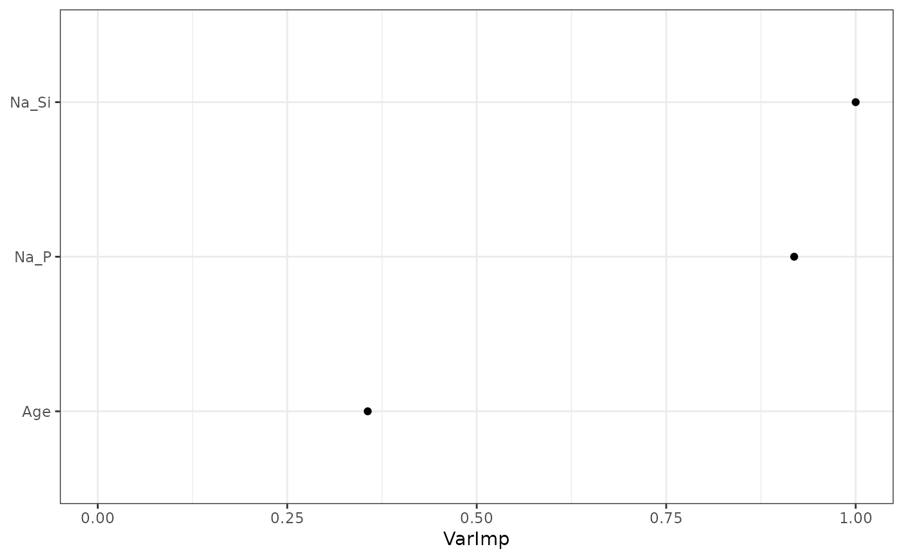

This function creates a modified random forest model for principal component and meta-data. This can be useful to get a final model, but we recommend use of randomForest_CVPC in general, which includes the final model.
Arguments
- data
Data.frame of outcome and predictors. The predictors include groups of variables which are finite projections of a higher dimensional variables as well as single meta-variables.
Any replicate data, i.e. repeated observations, should already be handled. The unit column is needed just to drop data (so pre-removing and giving NULL works). Typically use the results from getKsPCAData, potentially with meta-variables attached.
- outcome
(Optional) String indicating the outcome column name in data. Default is the first column of data.
- unit
(Optional) String indicating the unit column name in data. Default is the second column of data.
- nTrees
(Optional) Numeric indicating the number of trees to use in the random forest model. Default is 500.
- varImpPlot
(Optional) Boolean indicating if variable importance plots should also be returned with the model. Default is TRUE.
- metaNames
(Optional) Vector with the column names of data that correspond to metavariables. Default is NULL.
- keepModels
(Optional) Boolean indicating if the individual models should be kept. Can get large in size. Default is TRUE as it is needed for predictions.
- varSelPercent
(Optional) Numeric in (0,1) indicating (approx) percentage of variables to keep for each tree. Default is 0.8.
- method
(Optional) Method for rpart tree to build random forest. Default is "class". Currently this is the only tested method. This will be expanded in future releases.
Value
A list with entries
varImportanceData: Data.frame for variable importance information.
(Optional) model: List of CART that builds the random forest model.
(Optional) varImportancePlot: Variable importance plots.
Examples
funkyForest(
data = TNBC[, c(1:8, ncol(TNBC))],
outcome = "Class", unit = "Person",
metaNames = c("Age")
)
#> $varImportanceData
#> var VI avgVI
#> 1 Na_Si 6710.347 13.420695
#> 2 Na_P 6165.810 12.331621
#> 3 Age 2390.123 4.780245
#>
#> $model
#> $model[[1]]
#> n= 33
#>
#> node), split, n, loss, yval, (yprob)
#> * denotes terminal node
#>
#> 1) root 33 13 0 (0.60606061 0.39393939)
#> 2) Na_Si_PC2>=-865.9405 14 2 0 (0.85714286 0.14285714)
#> 4) Na_P_PC1< 18755.72 11 0 0 (1.00000000 0.00000000) *
#> 5) Na_P_PC1>=18755.72 3 1 1 (0.33333333 0.66666667)
#> 10) Na_P_PC2< -3940.944 1 0 0 (1.00000000 0.00000000) *
#> 11) Na_P_PC2>=-3940.944 2 0 1 (0.00000000 1.00000000) *
#> 3) Na_Si_PC2< -865.9405 19 8 1 (0.42105263 0.57894737)
#> 6) Na_Si_PC3< -217.7604 7 0 0 (1.00000000 0.00000000) *
#> 7) Na_Si_PC3>=-217.7604 12 1 1 (0.08333333 0.91666667)
#> 14) Na_P_PC2< -2881.958 1 0 0 (1.00000000 0.00000000) *
#> 15) Na_P_PC2>=-2881.958 11 0 1 (0.00000000 1.00000000) *
#>
#> $model[[2]]
#> n= 33
#>
#> node), split, n, loss, yval, (yprob)
#> * denotes terminal node
#>
#> 1) root 33 12 1 (0.3636364 0.6363636)
#> 2) Na_Si_PC2>=-865.9405 13 3 0 (0.7692308 0.2307692)
#> 4) Na_P_PC1< 24822.93 9 0 0 (1.0000000 0.0000000) *
#> 5) Na_P_PC1>=24822.93 4 1 1 (0.2500000 0.7500000)
#> 10) Na_P_PC1>=141866.1 1 0 0 (1.0000000 0.0000000) *
#> 11) Na_P_PC1< 141866.1 3 0 1 (0.0000000 1.0000000) *
#> 3) Na_Si_PC2< -865.9405 20 2 1 (0.1000000 0.9000000)
#> 6) Na_Si_PC3< -766.8243 4 2 0 (0.5000000 0.5000000)
#> 12) Na_Si_PC3>=-1901.814 2 0 0 (1.0000000 0.0000000) *
#> 13) Na_Si_PC3< -1901.814 2 0 1 (0.0000000 1.0000000) *
#> 7) Na_Si_PC3>=-766.8243 16 0 1 (0.0000000 1.0000000) *
#>
#> $model[[3]]
#> n= 33
#>
#> node), split, n, loss, yval, (yprob)
#> * denotes terminal node
#>
#> 1) root 33 16 1 (0.48484848 0.51515152)
#> 2) Age< 38.5 6 0 0 (1.00000000 0.00000000) *
#> 3) Age>=38.5 27 10 1 (0.37037037 0.62962963)
#> 6) Na_Si_PC1>=309907.8 5 0 0 (1.00000000 0.00000000) *
#> 7) Na_Si_PC1< 309907.8 22 5 1 (0.22727273 0.77272727)
#> 14) Na_Si_PC2>=-805.8654 7 3 0 (0.57142857 0.42857143)
#> 28) Na_Si_PC2< -107.7621 3 0 0 (1.00000000 0.00000000) *
#> 29) Na_Si_PC2>=-107.7621 4 1 1 (0.25000000 0.75000000)
#> 58) Na_Si_PC2>=3348.789 1 0 0 (1.00000000 0.00000000) *
#> 59) Na_Si_PC2< 3348.789 3 0 1 (0.00000000 1.00000000) *
#> 15) Na_Si_PC2< -805.8654 15 1 1 (0.06666667 0.93333333)
#> 30) Na_Si_PC3< -592.2214 3 1 1 (0.33333333 0.66666667)
#> 60) Na_Si_PC2>=-2778.241 1 0 0 (1.00000000 0.00000000) *
#> 61) Na_Si_PC2< -2778.241 2 0 1 (0.00000000 1.00000000) *
#> 31) Na_Si_PC3>=-592.2214 12 0 1 (0.00000000 1.00000000) *
#>
#> $model[[4]]
#> n= 33
#>
#> node), split, n, loss, yval, (yprob)
#> * denotes terminal node
#>
#> 1) root 33 13 0 (0.6060606 0.3939394)
#> 2) Age< 67.5 27 8 0 (0.7037037 0.2962963)
#> 4) Na_Si_PC2< -1840.556 9 0 0 (1.0000000 0.0000000) *
#> 5) Na_Si_PC2>=-1840.556 18 8 0 (0.5555556 0.4444444)
#> 10) Na_Si_PC2>=-865.9405 7 0 0 (1.0000000 0.0000000) *
#> 11) Na_Si_PC2< -865.9405 11 3 1 (0.2727273 0.7272727)
#> 22) Na_Si_PC3< -217.7604 3 0 0 (1.0000000 0.0000000) *
#> 23) Na_Si_PC3>=-217.7604 8 0 1 (0.0000000 1.0000000) *
#> 3) Age>=67.5 6 1 1 (0.1666667 0.8333333)
#> 6) Na_Si_PC2>=3348.789 1 0 0 (1.0000000 0.0000000) *
#> 7) Na_Si_PC2< 3348.789 5 0 1 (0.0000000 1.0000000) *
#>
#> $model[[5]]
#> n= 33
#>
#> node), split, n, loss, yval, (yprob)
#> * denotes terminal node
#>
#> 1) root 33 14 0 (0.5757576 0.4242424)
#> 2) Age< 67.5 27 8 0 (0.7037037 0.2962963)
#> 4) Na_P_PC3< 307.4291 25 6 0 (0.7600000 0.2400000)
#> 8) Na_P_PC1< 320.4356 16 1 0 (0.9375000 0.0625000)
#> 16) Na_P_PC3>=-922.112 14 0 0 (1.0000000 0.0000000) *
#> 17) Na_P_PC3< -922.112 2 1 0 (0.5000000 0.5000000)
#> 34) Na_P_PC2>=-781.8567 1 0 0 (1.0000000 0.0000000) *
#> 35) Na_P_PC2< -781.8567 1 0 1 (0.0000000 1.0000000) *
#> 9) Na_P_PC1>=320.4356 9 4 1 (0.4444444 0.5555556)
#> 18) Na_P_PC1>=15277.65 6 2 0 (0.6666667 0.3333333)
#> 36) Na_P_PC1< 27014.05 4 0 0 (1.0000000 0.0000000) *
#> 37) Na_P_PC1>=27014.05 2 0 1 (0.0000000 1.0000000) *
#> 19) Na_P_PC1< 15277.65 3 0 1 (0.0000000 1.0000000) *
#> 5) Na_P_PC3>=307.4291 2 0 1 (0.0000000 1.0000000) *
#> 3) Age>=67.5 6 0 1 (0.0000000 1.0000000) *
#>
#> $model[[6]]
#> n= 33
#>
#> node), split, n, loss, yval, (yprob)
#> * denotes terminal node
#>
#> 1) root 33 16 0 (0.51515152 0.48484848)
#> 2) Na_Si_PC1< -69469 11 0 0 (1.00000000 0.00000000) *
#> 3) Na_Si_PC1>=-69469 22 6 1 (0.27272727 0.72727273)
#> 6) Na_Si_PC1>=-9863.583 5 0 0 (1.00000000 0.00000000) *
#> 7) Na_Si_PC1< -9863.583 17 1 1 (0.05882353 0.94117647)
#> 14) Na_P_PC2>=2762.029 3 1 1 (0.33333333 0.66666667)
#> 28) Na_Si_PC1< -45006.27 1 0 0 (1.00000000 0.00000000) *
#> 29) Na_Si_PC1>=-45006.27 2 0 1 (0.00000000 1.00000000) *
#> 15) Na_P_PC2< 2762.029 14 0 1 (0.00000000 1.00000000) *
#>
#> $model[[7]]
#> n= 33
#>
#> node), split, n, loss, yval, (yprob)
#> * denotes terminal node
#>
#> 1) root 33 14 0 (0.5757576 0.4242424)
#> 2) Na_P_PC1< 27014.05 25 7 0 (0.7200000 0.2800000)
#> 4) Na_P_PC2< -1734.398 7 0 0 (1.0000000 0.0000000) *
#> 5) Na_P_PC2>=-1734.398 18 7 0 (0.6111111 0.3888889)
#> 10) Na_P_PC2>=-1027.972 15 4 0 (0.7333333 0.2666667)
#> 20) Na_P_PC3< 307.4291 13 2 0 (0.8461538 0.1538462)
#> 40) Na_P_PC2< 68.82415 8 0 0 (1.0000000 0.0000000) *
#> 41) Na_P_PC2>=68.82415 5 2 0 (0.6000000 0.4000000)
#> 82) Na_P_PC2>=888.0321 2 0 0 (1.0000000 0.0000000) *
#> 83) Na_P_PC2< 888.0321 3 1 1 (0.3333333 0.6666667)
#> 166) Age< 33.5 1 0 0 (1.0000000 0.0000000) *
#> 167) Age>=33.5 2 0 1 (0.0000000 1.0000000) *
#> 21) Na_P_PC3>=307.4291 2 0 1 (0.0000000 1.0000000) *
#> 11) Na_P_PC2< -1027.972 3 0 1 (0.0000000 1.0000000) *
#> 3) Na_P_PC1>=27014.05 8 1 1 (0.1250000 0.8750000)
#> 6) Na_P_PC2< -3940.944 1 0 0 (1.0000000 0.0000000) *
#> 7) Na_P_PC2>=-3940.944 7 0 1 (0.0000000 1.0000000) *
#>
#> $model[[8]]
#> n= 33
#>
#> node), split, n, loss, yval, (yprob)
#> * denotes terminal node
#>
#> 1) root 33 13 1 (0.3939394 0.6060606)
#> 2) Na_P_PC2< -1755.192 4 0 0 (1.0000000 0.0000000) *
#> 3) Na_P_PC2>=-1755.192 29 9 1 (0.3103448 0.6896552)
#> 6) Age< 38 2 0 0 (1.0000000 0.0000000) *
#> 7) Age>=38 27 7 1 (0.2592593 0.7407407)
#> 14) Na_P_PC3< -447.8109 5 2 0 (0.6000000 0.4000000)
#> 28) Na_P_PC2< 1588.178 3 0 0 (1.0000000 0.0000000) *
#> 29) Na_P_PC2>=1588.178 2 0 1 (0.0000000 1.0000000) *
#> 15) Na_P_PC3>=-447.8109 22 4 1 (0.1818182 0.8181818)
#> 30) Age>=65.5 6 3 0 (0.5000000 0.5000000)
#> 60) Na_P_PC2>=1686.211 3 0 0 (1.0000000 0.0000000) *
#> 61) Na_P_PC2< 1686.211 3 0 1 (0.0000000 1.0000000) *
#> 31) Age< 65.5 16 1 1 (0.0625000 0.9375000)
#> 62) Na_P_PC1< -21488.04 2 1 0 (0.5000000 0.5000000)
#> 124) Na_P_PC2>=-509.6294 1 0 0 (1.0000000 0.0000000) *
#> 125) Na_P_PC2< -509.6294 1 0 1 (0.0000000 1.0000000) *
#> 63) Na_P_PC1>=-21488.04 14 0 1 (0.0000000 1.0000000) *
#>
#> $model[[9]]
#> n= 33
#>
#> node), split, n, loss, yval, (yprob)
#> * denotes terminal node
#>
#> 1) root 33 15 0 (0.54545455 0.45454545)
#> 2) Na_Si_PC2>=-805.8654 15 3 0 (0.80000000 0.20000000)
#> 4) Na_Si_PC3>=-464.9296 13 1 0 (0.92307692 0.07692308)
#> 8) Na_Si_PC3< 654.198 8 0 0 (1.00000000 0.00000000) *
#> 9) Na_Si_PC3>=654.198 5 1 0 (0.80000000 0.20000000)
#> 18) Na_Si_PC3>=759.0091 4 0 0 (1.00000000 0.00000000) *
#> 19) Na_Si_PC3< 759.0091 1 0 1 (0.00000000 1.00000000) *
#> 5) Na_Si_PC3< -464.9296 2 0 1 (0.00000000 1.00000000) *
#> 3) Na_Si_PC2< -805.8654 18 6 1 (0.33333333 0.66666667)
#> 6) Na_Si_PC1>=-39657.2 6 0 0 (1.00000000 0.00000000) *
#> 7) Na_Si_PC1< -39657.2 12 0 1 (0.00000000 1.00000000) *
#>
#> $model[[10]]
#> n= 33
#>
#> node), split, n, loss, yval, (yprob)
#> * denotes terminal node
#>
#> 1) root 33 16 0 (0.5151515 0.4848485)
#> 2) Na_P_PC1< -28644.12 9 1 0 (0.8888889 0.1111111)
#> 4) Age< 65 8 0 0 (1.0000000 0.0000000) *
#> 5) Age>=65 1 0 1 (0.0000000 1.0000000) *
#> 3) Na_P_PC1>=-28644.12 24 9 1 (0.3750000 0.6250000)
#> 6) Age>=42 19 9 1 (0.4736842 0.5263158)
#> 12) Na_P_PC1< 27170.72 14 5 0 (0.6428571 0.3571429)
#> 24) Na_P_PC3< 2935.016 12 3 0 (0.7500000 0.2500000)
#> 48) Age< 71 11 2 0 (0.8181818 0.1818182)
#> 96) Na_P_PC1>=-15214.47 7 0 0 (1.0000000 0.0000000) *
#> 97) Na_P_PC1< -15214.47 4 2 0 (0.5000000 0.5000000)
#> 194) Na_P_PC2< -94.6622 2 0 0 (1.0000000 0.0000000) *
#> 195) Na_P_PC2>=-94.6622 2 0 1 (0.0000000 1.0000000) *
#> 49) Age>=71 1 0 1 (0.0000000 1.0000000) *
#> 25) Na_P_PC3>=2935.016 2 0 1 (0.0000000 1.0000000) *
#> 13) Na_P_PC1>=27170.72 5 0 1 (0.0000000 1.0000000) *
#> 7) Age< 42 5 0 1 (0.0000000 1.0000000) *
#>
#> $model[[11]]
#> n= 33
#>
#> node), split, n, loss, yval, (yprob)
#> * denotes terminal node
#>
#> 1) root 33 15 1 (0.45454545 0.54545455)
#> 2) Na_Si_PC2>=-798.0468 12 1 0 (0.91666667 0.08333333)
#> 4) Age< 67.5 10 0 0 (1.00000000 0.00000000) *
#> 5) Age>=67.5 2 1 0 (0.50000000 0.50000000)
#> 10) Na_Si_PC2>=3348.789 1 0 0 (1.00000000 0.00000000) *
#> 11) Na_Si_PC2< 3348.789 1 0 1 (0.00000000 1.00000000) *
#> 3) Na_Si_PC2< -798.0468 21 4 1 (0.19047619 0.80952381)
#> 6) Age< 38 4 0 0 (1.00000000 0.00000000) *
#> 7) Age>=38 17 0 1 (0.00000000 1.00000000) *
#>
#> $model[[12]]
#> n= 33
#>
#> node), split, n, loss, yval, (yprob)
#> * denotes terminal node
#>
#> 1) root 33 12 1 (0.3636364 0.6363636)
#> 2) Na_P_PC2< 143.6075 18 8 0 (0.5555556 0.4444444)
#> 4) Na_P_PC3>=-474.4015 11 2 0 (0.8181818 0.1818182)
#> 8) Na_P_PC2< -1755.192 5 0 0 (1.0000000 0.0000000) *
#> 9) Na_P_PC2>=-1755.192 6 2 0 (0.6666667 0.3333333)
#> 18) Na_P_PC2>=-1027.972 4 0 0 (1.0000000 0.0000000) *
#> 19) Na_P_PC2< -1027.972 2 0 1 (0.0000000 1.0000000) *
#> 5) Na_P_PC3< -474.4015 7 1 1 (0.1428571 0.8571429)
#> 10) Na_P_PC2>=-781.8567 1 0 0 (1.0000000 0.0000000) *
#> 11) Na_P_PC2< -781.8567 6 0 1 (0.0000000 1.0000000) *
#> 3) Na_P_PC2>=143.6075 15 2 1 (0.1333333 0.8666667)
#> 6) Na_P_PC3< -647.276 4 2 0 (0.5000000 0.5000000)
#> 12) Age< 53 2 0 0 (1.0000000 0.0000000) *
#> 13) Age>=53 2 0 1 (0.0000000 1.0000000) *
#> 7) Na_P_PC3>=-647.276 11 0 1 (0.0000000 1.0000000) *
#>
#> $model[[13]]
#> n= 33
#>
#> node), split, n, loss, yval, (yprob)
#> * denotes terminal node
#>
#> 1) root 33 14 1 (0.42424242 0.57575758)
#> 2) Age< 38.5 6 0 0 (1.00000000 0.00000000) *
#> 3) Age>=38.5 27 8 1 (0.29629630 0.70370370)
#> 6) Na_Si_PC1< -69469 9 4 0 (0.55555556 0.44444444)
#> 12) Age>=44 5 0 0 (1.00000000 0.00000000) *
#> 13) Age< 44 4 0 1 (0.00000000 1.00000000) *
#> 7) Na_Si_PC1>=-69469 18 3 1 (0.16666667 0.83333333)
#> 14) Na_Si_PC3< -1378.169 3 1 0 (0.66666667 0.33333333)
#> 28) Age< 70.5 2 0 0 (1.00000000 0.00000000) *
#> 29) Age>=70.5 1 0 1 (0.00000000 1.00000000) *
#> 15) Na_Si_PC3>=-1378.169 15 1 1 (0.06666667 0.93333333)
#> 30) Na_Si_PC2>=-617.1739 4 1 1 (0.25000000 0.75000000)
#> 60) Na_Si_PC1< -45006.27 1 0 0 (1.00000000 0.00000000) *
#> 61) Na_Si_PC1>=-45006.27 3 0 1 (0.00000000 1.00000000) *
#> 31) Na_Si_PC2< -617.1739 11 0 1 (0.00000000 1.00000000) *
#>
#> $model[[14]]
#> n= 33
#>
#> node), split, n, loss, yval, (yprob)
#> * denotes terminal node
#>
#> 1) root 33 15 1 (0.4545455 0.5454545)
#> 2) Na_Si_PC1< -70408.34 9 1 0 (0.8888889 0.1111111)
#> 4) Na_Si_PC1>=-83157.28 8 0 0 (1.0000000 0.0000000) *
#> 5) Na_Si_PC1< -83157.28 1 0 1 (0.0000000 1.0000000) *
#> 3) Na_Si_PC1>=-70408.34 24 7 1 (0.2916667 0.7083333)
#> 6) Na_Si_PC3< -289.3988 8 2 0 (0.7500000 0.2500000)
#> 12) Na_P_PC2< 6822.759 6 0 0 (1.0000000 0.0000000) *
#> 13) Na_P_PC2>=6822.759 2 0 1 (0.0000000 1.0000000) *
#> 7) Na_Si_PC3>=-289.3988 16 1 1 (0.0625000 0.9375000)
#> 14) Na_P_PC2>=3261.803 1 0 0 (1.0000000 0.0000000) *
#> 15) Na_P_PC2< 3261.803 15 0 1 (0.0000000 1.0000000) *
#>
#> $model[[15]]
#> n= 33
#>
#> node), split, n, loss, yval, (yprob)
#> * denotes terminal node
#>
#> 1) root 33 14 1 (0.42424242 0.57575758)
#> 2) Age< 38.5 7 0 0 (1.00000000 0.00000000) *
#> 3) Age>=38.5 26 7 1 (0.26923077 0.73076923)
#> 6) Na_P_PC2>=-502.4287 12 6 0 (0.50000000 0.50000000)
#> 12) Na_P_PC2< 143.6075 5 0 0 (1.00000000 0.00000000) *
#> 13) Na_P_PC2>=143.6075 7 1 1 (0.14285714 0.85714286)
#> 26) Age>=63.5 2 1 0 (0.50000000 0.50000000)
#> 52) Na_P_PC1>=-7178.604 1 0 0 (1.00000000 0.00000000) *
#> 53) Na_P_PC1< -7178.604 1 0 1 (0.00000000 1.00000000) *
#> 27) Age< 63.5 5 0 1 (0.00000000 1.00000000) *
#> 7) Na_P_PC2< -502.4287 14 1 1 (0.07142857 0.92857143)
#> 14) Na_P_PC1>=120396.5 1 0 0 (1.00000000 0.00000000) *
#> 15) Na_P_PC1< 120396.5 13 0 1 (0.00000000 1.00000000) *
#>
#> $model[[16]]
#> n= 33
#>
#> node), split, n, loss, yval, (yprob)
#> * denotes terminal node
#>
#> 1) root 33 15 1 (0.4545455 0.5454545)
#> 2) Age< 52.5 17 6 0 (0.6470588 0.3529412)
#> 4) Age>=44 7 0 0 (1.0000000 0.0000000) *
#> 5) Age< 44 10 4 1 (0.4000000 0.6000000)
#> 10) Age< 38.5 3 0 0 (1.0000000 0.0000000) *
#> 11) Age>=38.5 7 1 1 (0.1428571 0.8571429)
#> 22) Na_P_PC3< -1712.45 1 0 0 (1.0000000 0.0000000) *
#> 23) Na_P_PC3>=-1712.45 6 0 1 (0.0000000 1.0000000) *
#> 3) Age>=52.5 16 4 1 (0.2500000 0.7500000)
#> 6) Na_P_PC2< -5028.972 1 0 0 (1.0000000 0.0000000) *
#> 7) Na_P_PC2>=-5028.972 15 3 1 (0.2000000 0.8000000)
#> 14) Na_P_PC2>=49.29786 10 3 1 (0.3000000 0.7000000)
#> 28) Age>=65.5 2 0 0 (1.0000000 0.0000000) *
#> 29) Age< 65.5 8 1 1 (0.1250000 0.8750000)
#> 58) Na_P_PC2< 143.6075 1 0 0 (1.0000000 0.0000000) *
#> 59) Na_P_PC2>=143.6075 7 0 1 (0.0000000 1.0000000) *
#> 15) Na_P_PC2< 49.29786 5 0 1 (0.0000000 1.0000000) *
#>
#> $model[[17]]
#> n= 33
#>
#> node), split, n, loss, yval, (yprob)
#> * denotes terminal node
#>
#> 1) root 33 14 0 (0.57575758 0.42424242)
#> 2) Na_Si_PC2>=-805.8654 15 2 0 (0.86666667 0.13333333)
#> 4) Na_P_PC2< 6822.759 13 0 0 (1.00000000 0.00000000) *
#> 5) Na_P_PC2>=6822.759 2 0 1 (0.00000000 1.00000000) *
#> 3) Na_Si_PC2< -805.8654 18 6 1 (0.33333333 0.66666667)
#> 6) Na_Si_PC2< -1829.56 6 1 0 (0.83333333 0.16666667)
#> 12) Na_P_PC3< 167.4468 5 0 0 (1.00000000 0.00000000) *
#> 13) Na_P_PC3>=167.4468 1 0 1 (0.00000000 1.00000000) *
#> 7) Na_Si_PC2>=-1829.56 12 1 1 (0.08333333 0.91666667)
#> 14) Na_Si_PC3< -217.7604 1 0 0 (1.00000000 0.00000000) *
#> 15) Na_Si_PC3>=-217.7604 11 0 1 (0.00000000 1.00000000) *
#>
#> $model[[18]]
#> n= 33
#>
#> node), split, n, loss, yval, (yprob)
#> * denotes terminal node
#>
#> 1) root 33 15 0 (0.54545455 0.45454545)
#> 2) Na_P_PC1< -443.779 17 3 0 (0.82352941 0.17647059)
#> 4) Age< 66 14 0 0 (1.00000000 0.00000000) *
#> 5) Age>=66 3 0 1 (0.00000000 1.00000000) *
#> 3) Na_P_PC1>=-443.779 16 4 1 (0.25000000 0.75000000)
#> 6) Na_P_PC3>=163.0698 3 0 0 (1.00000000 0.00000000) *
#> 7) Na_P_PC3< 163.0698 13 1 1 (0.07692308 0.92307692)
#> 14) Na_P_PC3< -1843.521 3 1 1 (0.33333333 0.66666667)
#> 28) Na_P_PC3>=-3518.042 1 0 0 (1.00000000 0.00000000) *
#> 29) Na_P_PC3< -3518.042 2 0 1 (0.00000000 1.00000000) *
#> 15) Na_P_PC3>=-1843.521 10 0 1 (0.00000000 1.00000000) *
#>
#> $model[[19]]
#> n= 33
#>
#> node), split, n, loss, yval, (yprob)
#> * denotes terminal node
#>
#> 1) root 33 14 0 (0.5757576 0.4242424)
#> 2) Na_P_PC1< -20878.47 15 2 0 (0.8666667 0.1333333)
#> 4) Age< 65 13 0 0 (1.0000000 0.0000000) *
#> 5) Age>=65 2 0 1 (0.0000000 1.0000000) *
#> 3) Na_P_PC1>=-20878.47 18 6 1 (0.3333333 0.6666667)
#> 6) Age>=65.5 3 0 0 (1.0000000 0.0000000) *
#> 7) Age< 65.5 15 3 1 (0.2000000 0.8000000)
#> 14) Na_P_PC2< 143.6075 7 3 1 (0.4285714 0.5714286)
#> 28) Na_P_PC2>=-1337.388 3 0 0 (1.0000000 0.0000000) *
#> 29) Na_P_PC2< -1337.388 4 0 1 (0.0000000 1.0000000) *
#> 15) Na_P_PC2>=143.6075 8 0 1 (0.0000000 1.0000000) *
#>
#> $model[[20]]
#> n= 33
#>
#> node), split, n, loss, yval, (yprob)
#> * denotes terminal node
#>
#> 1) root 33 16 0 (0.5151515 0.4848485)
#> 2) Na_Si_PC1>=-13760.72 8 0 0 (1.0000000 0.0000000) *
#> 3) Na_Si_PC1< -13760.72 25 9 1 (0.3600000 0.6400000)
#> 6) Na_Si_PC2>=-805.8654 10 3 0 (0.7000000 0.3000000)
#> 12) Na_Si_PC2< 2109.933 7 0 0 (1.0000000 0.0000000) *
#> 13) Na_Si_PC2>=2109.933 3 0 1 (0.0000000 1.0000000) *
#> 7) Na_Si_PC2< -805.8654 15 2 1 (0.1333333 0.8666667)
#> 14) Na_P_PC1< -21488.04 2 0 0 (1.0000000 0.0000000) *
#> 15) Na_P_PC1>=-21488.04 13 0 1 (0.0000000 1.0000000) *
#>
#> $model[[21]]
#> n= 33
#>
#> node), split, n, loss, yval, (yprob)
#> * denotes terminal node
#>
#> 1) root 33 12 0 (0.6363636 0.3636364)
#> 2) Age< 66 29 8 0 (0.7241379 0.2758621)
#> 4) Na_Si_PC1>=-82432.91 26 5 0 (0.8076923 0.1923077)
#> 8) Na_Si_PC2>=-805.8654 13 0 0 (1.0000000 0.0000000) *
#> 9) Na_Si_PC2< -805.8654 13 5 0 (0.6153846 0.3846154)
#> 18) Na_Si_PC2< -1829.56 7 0 0 (1.0000000 0.0000000) *
#> 19) Na_Si_PC2>=-1829.56 6 1 1 (0.1666667 0.8333333)
#> 38) Age>=59.5 1 0 0 (1.0000000 0.0000000) *
#> 39) Age< 59.5 5 0 1 (0.0000000 1.0000000) *
#> 5) Na_Si_PC1< -82432.91 3 0 1 (0.0000000 1.0000000) *
#> 3) Age>=66 4 0 1 (0.0000000 1.0000000) *
#>
#> $model[[22]]
#> n= 33
#>
#> node), split, n, loss, yval, (yprob)
#> * denotes terminal node
#>
#> 1) root 33 16 1 (0.4848485 0.5151515)
#> 2) Na_P_PC1< 21116.89 24 9 0 (0.6250000 0.3750000)
#> 4) Na_Si_PC2>=-805.8654 8 0 0 (1.0000000 0.0000000) *
#> 5) Na_Si_PC2< -805.8654 16 7 1 (0.4375000 0.5625000)
#> 10) Na_Si_PC2< -1323.644 11 4 0 (0.6363636 0.3636364)
#> 20) Na_Si_PC3>=-1865.514 8 1 0 (0.8750000 0.1250000)
#> 40) Na_Si_PC3< -217.7604 6 0 0 (1.0000000 0.0000000) *
#> 41) Na_Si_PC3>=-217.7604 2 1 0 (0.5000000 0.5000000)
#> 82) Na_P_PC1< -29935.37 1 0 0 (1.0000000 0.0000000) *
#> 83) Na_P_PC1>=-29935.37 1 0 1 (0.0000000 1.0000000) *
#> 21) Na_Si_PC3< -1865.514 3 0 1 (0.0000000 1.0000000) *
#> 11) Na_Si_PC2>=-1323.644 5 0 1 (0.0000000 1.0000000) *
#> 3) Na_P_PC1>=21116.89 9 1 1 (0.1111111 0.8888889)
#> 6) Na_P_PC2< -3329.088 1 0 0 (1.0000000 0.0000000) *
#> 7) Na_P_PC2>=-3329.088 8 0 1 (0.0000000 1.0000000) *
#>
#> $model[[23]]
#> n= 33
#>
#> node), split, n, loss, yval, (yprob)
#> * denotes terminal node
#>
#> 1) root 33 14 0 (0.5757576 0.4242424)
#> 2) Na_P_PC1< -443.779 21 5 0 (0.7619048 0.2380952)
#> 4) Na_P_PC2< -25.48553 11 0 0 (1.0000000 0.0000000) *
#> 5) Na_P_PC2>=-25.48553 10 5 0 (0.5000000 0.5000000)
#> 10) Na_Si_PC2>=-918.9085 5 1 0 (0.8000000 0.2000000)
#> 20) Na_P_PC2>=49.29786 4 0 0 (1.0000000 0.0000000) *
#> 21) Na_P_PC2< 49.29786 1 0 1 (0.0000000 1.0000000) *
#> 11) Na_Si_PC2< -918.9085 5 1 1 (0.2000000 0.8000000)
#> 22) Na_P_PC1>=-6556.573 1 0 0 (1.0000000 0.0000000) *
#> 23) Na_P_PC1< -6556.573 4 0 1 (0.0000000 1.0000000) *
#> 3) Na_P_PC1>=-443.779 12 3 1 (0.2500000 0.7500000)
#> 6) Na_Si_PC3< 525.7488 2 0 0 (1.0000000 0.0000000) *
#> 7) Na_Si_PC3>=525.7488 10 1 1 (0.1000000 0.9000000)
#> 14) Na_P_PC2>=2762.029 1 0 0 (1.0000000 0.0000000) *
#> 15) Na_P_PC2< 2762.029 9 0 1 (0.0000000 1.0000000) *
#>
#> $model[[24]]
#> n= 33
#>
#> node), split, n, loss, yval, (yprob)
#> * denotes terminal node
#>
#> 1) root 33 15 1 (0.45454545 0.54545455)
#> 2) Na_Si_PC2< -3706.83 6 0 0 (1.00000000 0.00000000) *
#> 3) Na_Si_PC2>=-3706.83 27 9 1 (0.33333333 0.66666667)
#> 6) Na_P_PC3< -270.1501 13 6 0 (0.53846154 0.46153846)
#> 12) Na_Si_PC2>=-805.8654 5 0 0 (1.00000000 0.00000000) *
#> 13) Na_Si_PC2< -805.8654 8 2 1 (0.25000000 0.75000000)
#> 26) Na_Si_PC2< -1597.166 3 1 0 (0.66666667 0.33333333)
#> 52) Na_Si_PC1>=-80502.46 2 0 0 (1.00000000 0.00000000) *
#> 53) Na_Si_PC1< -80502.46 1 0 1 (0.00000000 1.00000000) *
#> 27) Na_Si_PC2>=-1597.166 5 0 1 (0.00000000 1.00000000) *
#> 7) Na_P_PC3>=-270.1501 14 2 1 (0.14285714 0.85714286)
#> 14) Na_P_PC2< -3940.944 1 0 0 (1.00000000 0.00000000) *
#> 15) Na_P_PC2>=-3940.944 13 1 1 (0.07692308 0.92307692)
#> 30) Na_Si_PC1< -45006.27 4 1 1 (0.25000000 0.75000000)
#> 60) Na_Si_PC1>=-70462.38 1 0 0 (1.00000000 0.00000000) *
#> 61) Na_Si_PC1< -70462.38 3 0 1 (0.00000000 1.00000000) *
#> 31) Na_Si_PC1>=-45006.27 9 0 1 (0.00000000 1.00000000) *
#>
#> $model[[25]]
#> n= 33
#>
#> node), split, n, loss, yval, (yprob)
#> * denotes terminal node
#>
#> 1) root 33 11 1 (0.33333333 0.66666667)
#> 2) Na_Si_PC2>=-865.9405 9 2 0 (0.77777778 0.22222222)
#> 4) Na_P_PC1< 24822.93 6 0 0 (1.00000000 0.00000000) *
#> 5) Na_P_PC1>=24822.93 3 1 1 (0.33333333 0.66666667)
#> 10) Na_P_PC2< -3940.944 1 0 0 (1.00000000 0.00000000) *
#> 11) Na_P_PC2>=-3940.944 2 0 1 (0.00000000 1.00000000) *
#> 3) Na_Si_PC2< -865.9405 24 4 1 (0.16666667 0.83333333)
#> 6) Na_Si_PC2< -3706.83 3 0 0 (1.00000000 0.00000000) *
#> 7) Na_Si_PC2>=-3706.83 21 1 1 (0.04761905 0.95238095)
#> 14) Na_Si_PC1>=45275.2 4 1 1 (0.25000000 0.75000000)
#> 28) Na_Si_PC2>=-2778.241 1 0 0 (1.00000000 0.00000000) *
#> 29) Na_Si_PC2< -2778.241 3 0 1 (0.00000000 1.00000000) *
#> 15) Na_Si_PC1< 45275.2 17 0 1 (0.00000000 1.00000000) *
#>
#> $model[[26]]
#> n= 33
#>
#> node), split, n, loss, yval, (yprob)
#> * denotes terminal node
#>
#> 1) root 33 14 1 (0.42424242 0.57575758)
#> 2) Age< 38.5 4 0 0 (1.00000000 0.00000000) *
#> 3) Age>=38.5 29 10 1 (0.34482759 0.65517241)
#> 6) Na_Si_PC2< -1323.644 8 3 0 (0.62500000 0.37500000)
#> 12) Na_Si_PC3< -217.7604 6 1 0 (0.83333333 0.16666667)
#> 24) Age< 70.5 5 0 0 (1.00000000 0.00000000) *
#> 25) Age>=70.5 1 0 1 (0.00000000 1.00000000) *
#> 13) Na_Si_PC3>=-217.7604 2 0 1 (0.00000000 1.00000000) *
#> 7) Na_Si_PC2>=-1323.644 21 5 1 (0.23809524 0.76190476)
#> 14) Na_Si_PC1< -70408.34 6 2 0 (0.66666667 0.33333333)
#> 28) Age>=63 3 0 0 (1.00000000 0.00000000) *
#> 29) Age< 63 3 1 1 (0.33333333 0.66666667)
#> 58) Na_Si_PC2>=832.1339 1 0 0 (1.00000000 0.00000000) *
#> 59) Na_Si_PC2< 832.1339 2 0 1 (0.00000000 1.00000000) *
#> 15) Na_Si_PC1>=-70408.34 15 1 1 (0.06666667 0.93333333)
#> 30) Na_Si_PC3>=614.153 4 1 1 (0.25000000 0.75000000)
#> 60) Age>=65.5 1 0 0 (1.00000000 0.00000000) *
#> 61) Age< 65.5 3 0 1 (0.00000000 1.00000000) *
#> 31) Na_Si_PC3< 614.153 11 0 1 (0.00000000 1.00000000) *
#>
#> $model[[27]]
#> n= 33
#>
#> node), split, n, loss, yval, (yprob)
#> * denotes terminal node
#>
#> 1) root 33 15 1 (0.45454545 0.54545455)
#> 2) Na_Si_PC3>=457.5408 15 4 0 (0.73333333 0.26666667)
#> 4) Na_Si_PC3< 4297.851 13 2 0 (0.84615385 0.15384615)
#> 8) Na_Si_PC2>=-966.0158 8 0 0 (1.00000000 0.00000000) *
#> 9) Na_Si_PC2< -966.0158 5 2 0 (0.60000000 0.40000000)
#> 18) Na_Si_PC1>=-51952.21 3 0 0 (1.00000000 0.00000000) *
#> 19) Na_Si_PC1< -51952.21 2 0 1 (0.00000000 1.00000000) *
#> 5) Na_Si_PC3>=4297.851 2 0 1 (0.00000000 1.00000000) *
#> 3) Na_Si_PC3< 457.5408 18 4 1 (0.22222222 0.77777778)
#> 6) Na_Si_PC3< -1378.169 5 2 0 (0.60000000 0.40000000)
#> 12) Na_Si_PC1< 171369.7 3 0 0 (1.00000000 0.00000000) *
#> 13) Na_Si_PC1>=171369.7 2 0 1 (0.00000000 1.00000000) *
#> 7) Na_Si_PC3>=-1378.169 13 1 1 (0.07692308 0.92307692)
#> 14) Na_Si_PC2< -1296.228 3 1 1 (0.33333333 0.66666667)
#> 28) Na_Si_PC3< -43.15755 1 0 0 (1.00000000 0.00000000) *
#> 29) Na_Si_PC3>=-43.15755 2 0 1 (0.00000000 1.00000000) *
#> 15) Na_Si_PC2>=-1296.228 10 0 1 (0.00000000 1.00000000) *
#>
#> $model[[28]]
#> n= 33
#>
#> node), split, n, loss, yval, (yprob)
#> * denotes terminal node
#>
#> 1) root 33 14 1 (0.4242424 0.5757576)
#> 2) Age< 53.5 15 4 0 (0.7333333 0.2666667)
#> 4) Na_Si_PC1>=-16507.84 7 0 0 (1.0000000 0.0000000) *
#> 5) Na_Si_PC1< -16507.84 8 4 0 (0.5000000 0.5000000)
#> 10) Na_Si_PC1< -70042.41 5 1 0 (0.8000000 0.2000000)
#> 20) Na_Si_PC2>=-805.8654 4 0 0 (1.0000000 0.0000000) *
#> 21) Na_Si_PC2< -805.8654 1 0 1 (0.0000000 1.0000000) *
#> 11) Na_Si_PC1>=-70042.41 3 0 1 (0.0000000 1.0000000) *
#> 3) Age>=53.5 18 3 1 (0.1666667 0.8333333)
#> 6) Na_Si_PC2< -5114.986 1 0 0 (1.0000000 0.0000000) *
#> 7) Na_Si_PC2>=-5114.986 17 2 1 (0.1176471 0.8823529)
#> 14) Na_Si_PC1< -70408.34 5 2 1 (0.4000000 0.6000000)
#> 28) Na_Si_PC1>=-75376.32 2 0 0 (1.0000000 0.0000000) *
#> 29) Na_Si_PC1< -75376.32 3 0 1 (0.0000000 1.0000000) *
#> 15) Na_Si_PC1>=-70408.34 12 0 1 (0.0000000 1.0000000) *
#>
#> $model[[29]]
#> n= 33
#>
#> node), split, n, loss, yval, (yprob)
#> * denotes terminal node
#>
#> 1) root 33 16 1 (0.48484848 0.51515152)
#> 2) Na_Si_PC2>=-798.0468 17 5 0 (0.70588235 0.29411765)
#> 4) Na_Si_PC2< 6618.235 14 2 0 (0.85714286 0.14285714)
#> 8) Na_Si_PC1>=-80952.25 10 0 0 (1.00000000 0.00000000) *
#> 9) Na_Si_PC1< -80952.25 4 2 0 (0.50000000 0.50000000)
#> 18) Na_Si_PC1< -91169.04 2 0 0 (1.00000000 0.00000000) *
#> 19) Na_Si_PC1>=-91169.04 2 0 1 (0.00000000 1.00000000) *
#> 5) Na_Si_PC2>=6618.235 3 0 1 (0.00000000 1.00000000) *
#> 3) Na_Si_PC2< -798.0468 16 4 1 (0.25000000 0.75000000)
#> 6) Na_Si_PC2< -1840.556 3 0 0 (1.00000000 0.00000000) *
#> 7) Na_Si_PC2>=-1840.556 13 1 1 (0.07692308 0.92307692)
#> 14) Na_Si_PC3< -217.7604 1 0 0 (1.00000000 0.00000000) *
#> 15) Na_Si_PC3>=-217.7604 12 0 1 (0.00000000 1.00000000) *
#>
#> $model[[30]]
#> n= 33
#>
#> node), split, n, loss, yval, (yprob)
#> * denotes terminal node
#>
#> 1) root 33 14 0 (0.57575758 0.42424242)
#> 2) Na_Si_PC2>=-798.0468 12 2 0 (0.83333333 0.16666667)
#> 4) Na_Si_PC3>=-464.9296 11 1 0 (0.90909091 0.09090909)
#> 8) Na_Si_PC1>=-83157.28 9 0 0 (1.00000000 0.00000000) *
#> 9) Na_Si_PC1< -83157.28 2 1 0 (0.50000000 0.50000000)
#> 18) Na_Si_PC2>=832.1339 1 0 0 (1.00000000 0.00000000) *
#> 19) Na_Si_PC2< 832.1339 1 0 1 (0.00000000 1.00000000) *
#> 5) Na_Si_PC3< -464.9296 1 0 1 (0.00000000 1.00000000) *
#> 3) Na_Si_PC2< -798.0468 21 9 1 (0.42857143 0.57142857)
#> 6) Na_Si_PC3< -217.7604 8 1 0 (0.87500000 0.12500000)
#> 12) Na_Si_PC1< 139932.8 7 0 0 (1.00000000 0.00000000) *
#> 13) Na_Si_PC1>=139932.8 1 0 1 (0.00000000 1.00000000) *
#> 7) Na_Si_PC3>=-217.7604 13 2 1 (0.15384615 0.84615385)
#> 14) Na_Si_PC2< -1840.556 4 2 0 (0.50000000 0.50000000)
#> 28) Na_Si_PC2>=-2382.697 2 0 0 (1.00000000 0.00000000) *
#> 29) Na_Si_PC2< -2382.697 2 0 1 (0.00000000 1.00000000) *
#> 15) Na_Si_PC2>=-1840.556 9 0 1 (0.00000000 1.00000000) *
#>
#> $model[[31]]
#> n= 33
#>
#> node), split, n, loss, yval, (yprob)
#> * denotes terminal node
#>
#> 1) root 33 15 0 (0.5454545 0.4545455)
#> 2) Na_P_PC1< 21116.89 26 8 0 (0.6923077 0.3076923)
#> 4) Na_Si_PC2>=-805.8654 12 0 0 (1.0000000 0.0000000) *
#> 5) Na_Si_PC2< -805.8654 14 6 1 (0.4285714 0.5714286)
#> 10) Na_P_PC3< 152.581 9 3 0 (0.6666667 0.3333333)
#> 20) Na_Si_PC1>=-46747.93 6 0 0 (1.0000000 0.0000000) *
#> 21) Na_Si_PC1< -46747.93 3 0 1 (0.0000000 1.0000000) *
#> 11) Na_P_PC3>=152.581 5 0 1 (0.0000000 1.0000000) *
#> 3) Na_P_PC1>=21116.89 7 0 1 (0.0000000 1.0000000) *
#>
#> $model[[32]]
#> n= 33
#>
#> node), split, n, loss, yval, (yprob)
#> * denotes terminal node
#>
#> 1) root 33 15 0 (0.5454545 0.4545455)
#> 2) Na_Si_PC1>=17472.37 7 0 0 (1.0000000 0.0000000) *
#> 3) Na_Si_PC1< 17472.37 26 11 1 (0.4230769 0.5769231)
#> 6) Na_Si_PC3>=469.4044 14 5 0 (0.6428571 0.3571429)
#> 12) Na_Si_PC3< 729.6314 10 1 0 (0.9000000 0.1000000)
#> 24) Na_P_PC2>=-1280.2 6 0 0 (1.0000000 0.0000000) *
#> 25) Na_P_PC2< -1280.2 4 1 0 (0.7500000 0.2500000)
#> 50) Na_P_PC2< -2881.958 3 0 0 (1.0000000 0.0000000) *
#> 51) Na_P_PC2>=-2881.958 1 0 1 (0.0000000 1.0000000) *
#> 13) Na_Si_PC3>=729.6314 4 0 1 (0.0000000 1.0000000) *
#> 7) Na_Si_PC3< 469.4044 12 2 1 (0.1666667 0.8333333)
#> 14) Na_P_PC3>=-185.6043 5 2 1 (0.4000000 0.6000000)
#> 28) Na_P_PC2>=-509.6294 3 1 0 (0.6666667 0.3333333)
#> 56) Na_P_PC2< 7060.923 2 0 0 (1.0000000 0.0000000) *
#> 57) Na_P_PC2>=7060.923 1 0 1 (0.0000000 1.0000000) *
#> 29) Na_P_PC2< -509.6294 2 0 1 (0.0000000 1.0000000) *
#> 15) Na_P_PC3< -185.6043 7 0 1 (0.0000000 1.0000000) *
#>
#> $model[[33]]
#> n= 33
#>
#> node), split, n, loss, yval, (yprob)
#> * denotes terminal node
#>
#> 1) root 33 14 0 (0.5757576 0.4242424)
#> 2) Na_P_PC1< 27014.05 27 9 0 (0.6666667 0.3333333)
#> 4) Age< 67.5 23 5 0 (0.7826087 0.2173913)
#> 8) Na_P_PC1< -20196.46 11 0 0 (1.0000000 0.0000000) *
#> 9) Na_P_PC1>=-20196.46 12 5 0 (0.5833333 0.4166667)
#> 18) Na_P_PC3< -447.8109 4 0 0 (1.0000000 0.0000000) *
#> 19) Na_P_PC3>=-447.8109 8 3 1 (0.3750000 0.6250000)
#> 38) Age>=65.5 3 0 0 (1.0000000 0.0000000) *
#> 39) Age< 65.5 5 0 1 (0.0000000 1.0000000) *
#> 5) Age>=67.5 4 0 1 (0.0000000 1.0000000) *
#> 3) Na_P_PC1>=27014.05 6 1 1 (0.1666667 0.8333333)
#> 6) Na_P_PC1>=141866.1 1 0 0 (1.0000000 0.0000000) *
#> 7) Na_P_PC1< 141866.1 5 0 1 (0.0000000 1.0000000) *
#>
#> $model[[34]]
#> n= 33
#>
#> node), split, n, loss, yval, (yprob)
#> * denotes terminal node
#>
#> 1) root 33 14 0 (0.57575758 0.42424242)
#> 2) Na_P_PC1< -20878.47 11 0 0 (1.00000000 0.00000000) *
#> 3) Na_P_PC1>=-20878.47 22 8 1 (0.36363636 0.63636364)
#> 6) Na_Si_PC2>=-798.0468 6 0 0 (1.00000000 0.00000000) *
#> 7) Na_Si_PC2< -798.0468 16 2 1 (0.12500000 0.87500000)
#> 14) Na_Si_PC2< -3001.264 1 0 0 (1.00000000 0.00000000) *
#> 15) Na_Si_PC2>=-3001.264 15 1 1 (0.06666667 0.93333333)
#> 30) Na_P_PC3< -1843.521 1 0 0 (1.00000000 0.00000000) *
#> 31) Na_P_PC3>=-1843.521 14 0 1 (0.00000000 1.00000000) *
#>
#> $model[[35]]
#> n= 33
#>
#> node), split, n, loss, yval, (yprob)
#> * denotes terminal node
#>
#> 1) root 33 12 0 (0.6363636 0.3636364)
#> 2) Na_P_PC1< 9210.433 26 6 0 (0.7692308 0.2307692)
#> 4) Na_P_PC3< 351.2091 21 3 0 (0.8571429 0.1428571)
#> 8) Na_P_PC1< -20041.32 10 0 0 (1.0000000 0.0000000) *
#> 9) Na_P_PC1>=-20041.32 11 3 0 (0.7272727 0.2727273)
#> 18) Na_P_PC1>=-16263.74 9 1 0 (0.8888889 0.1111111)
#> 36) Na_P_PC2>=-1374.797 8 0 0 (1.0000000 0.0000000) *
#> 37) Na_P_PC2< -1374.797 1 0 1 (0.0000000 1.0000000) *
#> 19) Na_P_PC1< -16263.74 2 0 1 (0.0000000 1.0000000) *
#> 5) Na_P_PC3>=351.2091 5 2 1 (0.4000000 0.6000000)
#> 10) Na_Si_PC2>=3546.066 2 0 0 (1.0000000 0.0000000) *
#> 11) Na_Si_PC2< 3546.066 3 0 1 (0.0000000 1.0000000) *
#> 3) Na_P_PC1>=9210.433 7 1 1 (0.1428571 0.8571429)
#> 6) Na_P_PC2< -3329.088 1 0 0 (1.0000000 0.0000000) *
#> 7) Na_P_PC2>=-3329.088 6 0 1 (0.0000000 1.0000000) *
#>
#> $model[[36]]
#> n= 33
#>
#> node), split, n, loss, yval, (yprob)
#> * denotes terminal node
#>
#> 1) root 33 13 0 (0.60606061 0.39393939)
#> 2) Na_P_PC1< -443.779 18 4 0 (0.77777778 0.22222222)
#> 4) Na_P_PC3< 232.5191 15 1 0 (0.93333333 0.06666667)
#> 8) Age< 56 10 0 0 (1.00000000 0.00000000) *
#> 9) Age>=56 5 1 0 (0.80000000 0.20000000)
#> 18) Na_P_PC2< 143.6075 4 0 0 (1.00000000 0.00000000) *
#> 19) Na_P_PC2>=143.6075 1 0 1 (0.00000000 1.00000000) *
#> 5) Na_P_PC3>=232.5191 3 0 1 (0.00000000 1.00000000) *
#> 3) Na_P_PC1>=-443.779 15 6 1 (0.40000000 0.60000000)
#> 6) Na_P_PC3>=163.0698 6 0 0 (1.00000000 0.00000000) *
#> 7) Na_P_PC3< 163.0698 9 0 1 (0.00000000 1.00000000) *
#>
#> $model[[37]]
#> n= 33
#>
#> node), split, n, loss, yval, (yprob)
#> * denotes terminal node
#>
#> 1) root 33 10 0 (0.69696970 0.30303030)
#> 2) Na_P_PC2< 7060.923 30 7 0 (0.76666667 0.23333333)
#> 4) Na_Si_PC1< -70408.34 12 0 0 (1.00000000 0.00000000) *
#> 5) Na_Si_PC1>=-70408.34 18 7 0 (0.61111111 0.38888889)
#> 10) Na_Si_PC1>=-66052.16 12 1 0 (0.91666667 0.08333333)
#> 20) Na_Si_PC2< 1410.985 9 0 0 (1.00000000 0.00000000) *
#> 21) Na_Si_PC2>=1410.985 3 1 0 (0.66666667 0.33333333)
#> 42) Na_Si_PC2>=3546.066 2 0 0 (1.00000000 0.00000000) *
#> 43) Na_Si_PC2< 3546.066 1 0 1 (0.00000000 1.00000000) *
#> 11) Na_Si_PC1< -66052.16 6 0 1 (0.00000000 1.00000000) *
#> 3) Na_P_PC2>=7060.923 3 0 1 (0.00000000 1.00000000) *
#>
#> $model[[38]]
#> n= 33
#>
#> node), split, n, loss, yval, (yprob)
#> * denotes terminal node
#>
#> 1) root 33 15 0 (0.5454545 0.4545455)
#> 2) Age< 38.5 8 0 0 (1.0000000 0.0000000) *
#> 3) Age>=38.5 25 10 1 (0.4000000 0.6000000)
#> 6) Na_Si_PC1>=309907.8 4 0 0 (1.0000000 0.0000000) *
#> 7) Na_Si_PC1< 309907.8 21 6 1 (0.2857143 0.7142857)
#> 14) Na_Si_PC1< -69469 10 4 0 (0.6000000 0.4000000)
#> 28) Na_Si_PC3< 654.198 6 0 0 (1.0000000 0.0000000) *
#> 29) Na_Si_PC3>=654.198 4 0 1 (0.0000000 1.0000000) *
#> 15) Na_Si_PC1>=-69469 11 0 1 (0.0000000 1.0000000) *
#>
#> $model[[39]]
#> n= 33
#>
#> node), split, n, loss, yval, (yprob)
#> * denotes terminal node
#>
#> 1) root 33 15 0 (0.54545455 0.45454545)
#> 2) Na_Si_PC2>=-805.8654 12 1 0 (0.91666667 0.08333333)
#> 4) Na_Si_PC1>=-82432.91 8 0 0 (1.00000000 0.00000000) *
#> 5) Na_Si_PC1< -82432.91 4 1 0 (0.75000000 0.25000000)
#> 10) Na_Si_PC3>=759.0091 3 0 0 (1.00000000 0.00000000) *
#> 11) Na_Si_PC3< 759.0091 1 0 1 (0.00000000 1.00000000) *
#> 3) Na_Si_PC2< -805.8654 21 7 1 (0.33333333 0.66666667)
#> 6) Na_Si_PC2< -1840.556 8 2 0 (0.75000000 0.25000000)
#> 12) Age< 68.5 6 0 0 (1.00000000 0.00000000) *
#> 13) Age>=68.5 2 0 1 (0.00000000 1.00000000) *
#> 7) Na_Si_PC2>=-1840.556 13 1 1 (0.07692308 0.92307692)
#> 14) Na_Si_PC3< -43.15755 1 0 0 (1.00000000 0.00000000) *
#> 15) Na_Si_PC3>=-43.15755 12 0 1 (0.00000000 1.00000000) *
#>
#> $model[[40]]
#> n= 33
#>
#> node), split, n, loss, yval, (yprob)
#> * denotes terminal node
#>
#> 1) root 33 15 1 (0.45454545 0.54545455)
#> 2) Na_Si_PC1>=-9863.583 7 0 0 (1.00000000 0.00000000) *
#> 3) Na_Si_PC1< -9863.583 26 8 1 (0.30769231 0.69230769)
#> 6) Na_Si_PC2>=-566.2998 8 3 0 (0.62500000 0.37500000)
#> 12) Na_Si_PC3>=100.9591 6 1 0 (0.83333333 0.16666667)
#> 24) Na_P_PC2>=-1727.33 5 0 0 (1.00000000 0.00000000) *
#> 25) Na_P_PC2< -1727.33 1 0 1 (0.00000000 1.00000000) *
#> 13) Na_Si_PC3< 100.9591 2 0 1 (0.00000000 1.00000000) *
#> 7) Na_Si_PC2< -566.2998 18 3 1 (0.16666667 0.83333333)
#> 14) Na_P_PC3< -1843.521 3 1 0 (0.66666667 0.33333333)
#> 28) Na_P_PC3>=-3518.042 2 0 0 (1.00000000 0.00000000) *
#> 29) Na_P_PC3< -3518.042 1 0 1 (0.00000000 1.00000000) *
#> 15) Na_P_PC3>=-1843.521 15 1 1 (0.06666667 0.93333333)
#> 30) Na_Si_PC3< -217.7604 1 0 0 (1.00000000 0.00000000) *
#> 31) Na_Si_PC3>=-217.7604 14 0 1 (0.00000000 1.00000000) *
#>
#> $model[[41]]
#> n= 33
#>
#> node), split, n, loss, yval, (yprob)
#> * denotes terminal node
#>
#> 1) root 33 15 1 (0.45454545 0.54545455)
#> 2) Na_Si_PC2>=-566.2998 15 4 0 (0.73333333 0.26666667)
#> 4) Na_Si_PC3>=100.9591 11 1 0 (0.90909091 0.09090909)
#> 8) Age>=42.5 7 0 0 (1.00000000 0.00000000) *
#> 9) Age< 42.5 4 1 0 (0.75000000 0.25000000)
#> 18) Age< 39 3 0 0 (1.00000000 0.00000000) *
#> 19) Age>=39 1 0 1 (0.00000000 1.00000000) *
#> 5) Na_Si_PC3< 100.9591 4 1 1 (0.25000000 0.75000000)
#> 10) Na_Si_PC3< -9438.455 1 0 0 (1.00000000 0.00000000) *
#> 11) Na_Si_PC3>=-9438.455 3 0 1 (0.00000000 1.00000000) *
#> 3) Na_Si_PC2< -566.2998 18 4 1 (0.22222222 0.77777778)
#> 6) Na_Si_PC3< -217.7604 7 3 0 (0.57142857 0.42857143)
#> 12) Na_Si_PC3>=-1901.814 4 0 0 (1.00000000 0.00000000) *
#> 13) Na_Si_PC3< -1901.814 3 0 1 (0.00000000 1.00000000) *
#> 7) Na_Si_PC3>=-217.7604 11 0 1 (0.00000000 1.00000000) *
#>
#> $model[[42]]
#> n= 33
#>
#> node), split, n, loss, yval, (yprob)
#> * denotes terminal node
#>
#> 1) root 33 15 1 (0.4545455 0.5454545)
#> 2) Na_P_PC1< -7148.442 17 5 0 (0.7058824 0.2941176)
#> 4) Age< 38.5 6 0 0 (1.0000000 0.0000000) *
#> 5) Age>=38.5 11 5 0 (0.5454545 0.4545455)
#> 10) Age>=42 9 3 0 (0.6666667 0.3333333)
#> 20) Age< 56.5 4 0 0 (1.0000000 0.0000000) *
#> 21) Age>=56.5 5 2 1 (0.4000000 0.6000000)
#> 42) Na_P_PC1< -39613.1 1 0 0 (1.0000000 0.0000000) *
#> 43) Na_P_PC1>=-39613.1 4 1 1 (0.2500000 0.7500000)
#> 86) Na_P_PC1>=-15214.47 1 0 0 (1.0000000 0.0000000) *
#> 87) Na_P_PC1< -15214.47 3 0 1 (0.0000000 1.0000000) *
#> 11) Age< 42 2 0 1 (0.0000000 1.0000000) *
#> 3) Na_P_PC1>=-7148.442 16 3 1 (0.1875000 0.8125000)
#> 6) Na_P_PC3>=163.0698 3 0 0 (1.0000000 0.0000000) *
#> 7) Na_P_PC3< 163.0698 13 0 1 (0.0000000 1.0000000) *
#>
#> $model[[43]]
#> n= 33
#>
#> node), split, n, loss, yval, (yprob)
#> * denotes terminal node
#>
#> 1) root 33 8 0 (0.7575758 0.2424242)
#> 2) Age< 67.5 30 5 0 (0.8333333 0.1666667)
#> 4) Na_P_PC3< 5240.514 28 3 0 (0.8928571 0.1071429)
#> 8) Age>=44 14 0 0 (1.0000000 0.0000000) *
#> 9) Age< 44 14 3 0 (0.7857143 0.2142857)
#> 18) Age< 38.5 9 0 0 (1.0000000 0.0000000) *
#> 19) Age>=38.5 5 2 1 (0.4000000 0.6000000)
#> 38) Na_P_PC3< -1712.45 2 0 0 (1.0000000 0.0000000) *
#> 39) Na_P_PC3>=-1712.45 3 0 1 (0.0000000 1.0000000) *
#> 5) Na_P_PC3>=5240.514 2 0 1 (0.0000000 1.0000000) *
#> 3) Age>=67.5 3 0 1 (0.0000000 1.0000000) *
#>
#> $model[[44]]
#> n= 33
#>
#> node), split, n, loss, yval, (yprob)
#> * denotes terminal node
#>
#> 1) root 33 15 1 (0.4545455 0.5454545)
#> 2) Na_Si_PC2>=-798.0468 11 2 0 (0.8181818 0.1818182)
#> 4) Na_Si_PC3>=111.077 10 1 0 (0.9000000 0.1000000)
#> 8) Age>=47.5 7 0 0 (1.0000000 0.0000000) *
#> 9) Age< 47.5 3 1 0 (0.6666667 0.3333333)
#> 18) Age< 34 2 0 0 (1.0000000 0.0000000) *
#> 19) Age>=34 1 0 1 (0.0000000 1.0000000) *
#> 5) Na_Si_PC3< 111.077 1 0 1 (0.0000000 1.0000000) *
#> 3) Na_Si_PC2< -798.0468 22 6 1 (0.2727273 0.7272727)
#> 6) Age< 63 12 6 0 (0.5000000 0.5000000)
#> 12) Na_Si_PC2< -1840.556 7 1 0 (0.8571429 0.1428571)
#> 24) Na_Si_PC1>=-80502.46 6 0 0 (1.0000000 0.0000000) *
#> 25) Na_Si_PC1< -80502.46 1 0 1 (0.0000000 1.0000000) *
#> 13) Na_Si_PC2>=-1840.556 5 0 1 (0.0000000 1.0000000) *
#> 7) Age>=63 10 0 1 (0.0000000 1.0000000) *
#>
#> $model[[45]]
#> n= 33
#>
#> node), split, n, loss, yval, (yprob)
#> * denotes terminal node
#>
#> 1) root 33 14 0 (0.5757576 0.4242424)
#> 2) Na_Si_PC3< 660.3337 18 3 0 (0.8333333 0.1666667)
#> 4) Na_P_PC1< 44422.87 16 1 0 (0.9375000 0.0625000)
#> 8) Na_Si_PC1>=-74082.34 13 0 0 (1.0000000 0.0000000) *
#> 9) Na_Si_PC1< -74082.34 3 1 0 (0.6666667 0.3333333)
#> 18) Na_Si_PC1< -76486.68 2 0 0 (1.0000000 0.0000000) *
#> 19) Na_Si_PC1>=-76486.68 1 0 1 (0.0000000 1.0000000) *
#> 5) Na_P_PC1>=44422.87 2 0 1 (0.0000000 1.0000000) *
#> 3) Na_Si_PC3>=660.3337 15 4 1 (0.2666667 0.7333333)
#> 6) Na_Si_PC2>=537.3443 4 0 0 (1.0000000 0.0000000) *
#> 7) Na_Si_PC2< 537.3443 11 0 1 (0.0000000 1.0000000) *
#>
#> $model[[46]]
#> n= 33
#>
#> node), split, n, loss, yval, (yprob)
#> * denotes terminal node
#>
#> 1) root 33 14 0 (0.5757576 0.4242424)
#> 2) Na_P_PC1< -20196.46 10 1 0 (0.9000000 0.1000000)
#> 4) Age< 64.5 9 0 0 (1.0000000 0.0000000) *
#> 5) Age>=64.5 1 0 1 (0.0000000 1.0000000) *
#> 3) Na_P_PC1>=-20196.46 23 10 1 (0.4347826 0.5652174)
#> 6) Age>=65.5 8 1 0 (0.8750000 0.1250000)
#> 12) Na_P_PC3>=-141.5297 7 0 0 (1.0000000 0.0000000) *
#> 13) Na_P_PC3< -141.5297 1 0 1 (0.0000000 1.0000000) *
#> 7) Age< 65.5 15 3 1 (0.2000000 0.8000000)
#> 14) Na_P_PC3< -447.8109 4 1 0 (0.7500000 0.2500000)
#> 28) Na_P_PC3>=-3703.507 3 0 0 (1.0000000 0.0000000) *
#> 29) Na_P_PC3< -3703.507 1 0 1 (0.0000000 1.0000000) *
#> 15) Na_P_PC3>=-447.8109 11 0 1 (0.0000000 1.0000000) *
#>
#> $model[[47]]
#> n= 33
#>
#> node), split, n, loss, yval, (yprob)
#> * denotes terminal node
#>
#> 1) root 33 16 0 (0.5151515 0.4848485)
#> 2) Na_Si_PC2>=-805.8654 16 3 0 (0.8125000 0.1875000)
#> 4) Na_P_PC1< 18755.72 12 0 0 (1.0000000 0.0000000) *
#> 5) Na_P_PC1>=18755.72 4 1 1 (0.2500000 0.7500000)
#> 10) Na_P_PC2< -3940.944 1 0 0 (1.0000000 0.0000000) *
#> 11) Na_P_PC2>=-3940.944 3 0 1 (0.0000000 1.0000000) *
#> 3) Na_Si_PC2< -805.8654 17 4 1 (0.2352941 0.7647059)
#> 6) Na_Si_PC1>=-9863.583 5 1 0 (0.8000000 0.2000000)
#> 12) Na_Si_PC3>=-1901.814 4 0 0 (1.0000000 0.0000000) *
#> 13) Na_Si_PC3< -1901.814 1 0 1 (0.0000000 1.0000000) *
#> 7) Na_Si_PC1< -9863.583 12 0 1 (0.0000000 1.0000000) *
#>
#> $model[[48]]
#> n= 33
#>
#> node), split, n, loss, yval, (yprob)
#> * denotes terminal node
#>
#> 1) root 33 14 0 (0.57575758 0.42424242)
#> 2) Age< 52.5 17 3 0 (0.82352941 0.17647059)
#> 4) Na_P_PC3< 307.4291 15 1 0 (0.93333333 0.06666667)
#> 8) Na_P_PC1< 10060.18 13 0 0 (1.00000000 0.00000000) *
#> 9) Na_P_PC1>=10060.18 2 1 0 (0.50000000 0.50000000)
#> 18) Age>=45.5 1 0 0 (1.00000000 0.00000000) *
#> 19) Age< 45.5 1 0 1 (0.00000000 1.00000000) *
#> 5) Na_P_PC3>=307.4291 2 0 1 (0.00000000 1.00000000) *
#> 3) Age>=52.5 16 5 1 (0.31250000 0.68750000)
#> 6) Na_P_PC2< -196.1726 6 2 0 (0.66666667 0.33333333)
#> 12) Na_P_PC3>=-1008.427 4 0 0 (1.00000000 0.00000000) *
#> 13) Na_P_PC3< -1008.427 2 0 1 (0.00000000 1.00000000) *
#> 7) Na_P_PC2>=-196.1726 10 1 1 (0.10000000 0.90000000)
#> 14) Na_P_PC2>=3685.989 3 1 1 (0.33333333 0.66666667)
#> 28) Age>=60 1 0 0 (1.00000000 0.00000000) *
#> 29) Age< 60 2 0 1 (0.00000000 1.00000000) *
#> 15) Na_P_PC2< 3685.989 7 0 1 (0.00000000 1.00000000) *
#>
#> $model[[49]]
#> n= 33
#>
#> node), split, n, loss, yval, (yprob)
#> * denotes terminal node
#>
#> 1) root 33 16 0 (0.51515152 0.48484848)
#> 2) Na_P_PC1< -443.779 23 8 0 (0.65217391 0.34782609)
#> 4) Na_P_PC3< 351.2091 17 4 0 (0.76470588 0.23529412)
#> 8) Na_P_PC2>=-1337.388 14 1 0 (0.92857143 0.07142857)
#> 16) Na_P_PC2< 143.6075 9 0 0 (1.00000000 0.00000000) *
#> 17) Na_P_PC2>=143.6075 5 1 0 (0.80000000 0.20000000)
#> 34) Na_P_PC2>=335.3946 4 0 0 (1.00000000 0.00000000) *
#> 35) Na_P_PC2< 335.3946 1 0 1 (0.00000000 1.00000000) *
#> 9) Na_P_PC2< -1337.388 3 0 1 (0.00000000 1.00000000) *
#> 5) Na_P_PC3>=351.2091 6 2 1 (0.33333333 0.66666667)
#> 10) Na_P_PC3>=689.5061 2 0 0 (1.00000000 0.00000000) *
#> 11) Na_P_PC3< 689.5061 4 0 1 (0.00000000 1.00000000) *
#> 3) Na_P_PC1>=-443.779 10 2 1 (0.20000000 0.80000000)
#> 6) Na_P_PC2>=3261.803 1 0 0 (1.00000000 0.00000000) *
#> 7) Na_P_PC2< 3261.803 9 1 1 (0.11111111 0.88888889)
#> 14) Na_P_PC3< -1843.521 1 0 0 (1.00000000 0.00000000) *
#> 15) Na_P_PC3>=-1843.521 8 0 1 (0.00000000 1.00000000) *
#>
#> $model[[50]]
#> n= 33
#>
#> node), split, n, loss, yval, (yprob)
#> * denotes terminal node
#>
#> 1) root 33 15 1 (0.45454545 0.54545455)
#> 2) Na_P_PC1< -20196.46 12 0 0 (1.00000000 0.00000000) *
#> 3) Na_P_PC1>=-20196.46 21 3 1 (0.14285714 0.85714286)
#> 6) Na_Si_PC1< -93458.43 1 0 0 (1.00000000 0.00000000) *
#> 7) Na_Si_PC1>=-93458.43 20 2 1 (0.10000000 0.90000000)
#> 14) Na_Si_PC1>=-16507.84 1 0 0 (1.00000000 0.00000000) *
#> 15) Na_Si_PC1< -16507.84 19 1 1 (0.05263158 0.94736842)
#> 30) Na_P_PC3>=175.7198 3 1 1 (0.33333333 0.66666667)
#> 60) Na_P_PC3< 2895.322 1 0 0 (1.00000000 0.00000000) *
#> 61) Na_P_PC3>=2895.322 2 0 1 (0.00000000 1.00000000) *
#> 31) Na_P_PC3< 175.7198 16 0 1 (0.00000000 1.00000000) *
#>
#> $model[[51]]
#> n= 33
#>
#> node), split, n, loss, yval, (yprob)
#> * denotes terminal node
#>
#> 1) root 33 13 0 (0.60606061 0.39393939)
#> 2) Na_P_PC2< -2881.958 10 1 0 (0.90000000 0.10000000)
#> 4) Na_P_PC2< -5028.972 6 0 0 (1.00000000 0.00000000) *
#> 5) Na_P_PC2>=-5028.972 4 1 0 (0.75000000 0.25000000)
#> 10) Age< 63.5 3 0 0 (1.00000000 0.00000000) *
#> 11) Age>=63.5 1 0 1 (0.00000000 1.00000000) *
#> 3) Na_P_PC2>=-2881.958 23 11 1 (0.47826087 0.52173913)
#> 6) Na_P_PC2>=-1027.972 15 4 0 (0.73333333 0.26666667)
#> 12) Na_P_PC3< 307.4291 13 2 0 (0.84615385 0.15384615)
#> 24) Na_P_PC1< 42231.74 12 1 0 (0.91666667 0.08333333)
#> 48) Age< 62 8 0 0 (1.00000000 0.00000000) *
#> 49) Age>=62 4 1 0 (0.75000000 0.25000000)
#> 98) Age>=65.5 3 0 0 (1.00000000 0.00000000) *
#> 99) Age< 65.5 1 0 1 (0.00000000 1.00000000) *
#> 25) Na_P_PC1>=42231.74 1 0 1 (0.00000000 1.00000000) *
#> 13) Na_P_PC3>=307.4291 2 0 1 (0.00000000 1.00000000) *
#> 7) Na_P_PC2< -1027.972 8 0 1 (0.00000000 1.00000000) *
#>
#> $model[[52]]
#> n= 33
#>
#> node), split, n, loss, yval, (yprob)
#> * denotes terminal node
#>
#> 1) root 33 15 0 (0.5454545 0.4545455)
#> 2) Na_Si_PC2>=-805.8654 15 2 0 (0.8666667 0.1333333)
#> 4) Na_Si_PC2< 333.1027 9 0 0 (1.0000000 0.0000000) *
#> 5) Na_Si_PC2>=333.1027 6 2 0 (0.6666667 0.3333333)
#> 10) Na_Si_PC2>=832.1339 5 1 0 (0.8000000 0.2000000)
#> 20) Na_Si_PC3>=136.9679 3 0 0 (1.0000000 0.0000000) *
#> 21) Na_Si_PC3< 136.9679 2 1 0 (0.5000000 0.5000000)
#> 42) Na_Si_PC3< -8862.449 1 0 0 (1.0000000 0.0000000) *
#> 43) Na_Si_PC3>=-8862.449 1 0 1 (0.0000000 1.0000000) *
#> 11) Na_Si_PC2< 832.1339 1 0 1 (0.0000000 1.0000000) *
#> 3) Na_Si_PC2< -805.8654 18 5 1 (0.2777778 0.7222222)
#> 6) Na_Si_PC3< -217.7604 5 0 0 (1.0000000 0.0000000) *
#> 7) Na_Si_PC3>=-217.7604 13 0 1 (0.0000000 1.0000000) *
#>
#> $model[[53]]
#> n= 33
#>
#> node), split, n, loss, yval, (yprob)
#> * denotes terminal node
#>
#> 1) root 33 13 0 (0.60606061 0.39393939)
#> 2) Na_Si_PC3< 553.4775 19 2 0 (0.89473684 0.10526316)
#> 4) Age< 78 18 1 0 (0.94444444 0.05555556)
#> 8) Na_Si_PC2< 6618.235 17 0 0 (1.00000000 0.00000000) *
#> 9) Na_Si_PC2>=6618.235 1 0 1 (0.00000000 1.00000000) *
#> 5) Age>=78 1 0 1 (0.00000000 1.00000000) *
#> 3) Na_Si_PC3>=553.4775 14 3 1 (0.21428571 0.78571429)
#> 6) Na_Si_PC1>=190917 3 0 0 (1.00000000 0.00000000) *
#> 7) Na_Si_PC1< 190917 11 0 1 (0.00000000 1.00000000) *
#>
#> $model[[54]]
#> n= 33
#>
#> node), split, n, loss, yval, (yprob)
#> * denotes terminal node
#>
#> 1) root 33 14 0 (0.5757576 0.4242424)
#> 2) Na_Si_PC2>=-805.8654 13 2 0 (0.8461538 0.1538462)
#> 4) Na_Si_PC3>=100.9591 10 0 0 (1.0000000 0.0000000) *
#> 5) Na_Si_PC3< 100.9591 3 1 1 (0.3333333 0.6666667)
#> 10) Na_Si_PC3< -9438.455 1 0 0 (1.0000000 0.0000000) *
#> 11) Na_Si_PC3>=-9438.455 2 0 1 (0.0000000 1.0000000) *
#> 3) Na_Si_PC2< -805.8654 20 8 1 (0.4000000 0.6000000)
#> 6) Na_Si_PC1>=-46747.93 10 2 0 (0.8000000 0.2000000)
#> 12) Na_Si_PC2< -1899.759 9 1 0 (0.8888889 0.1111111)
#> 24) Na_Si_PC3>=-1901.814 8 0 0 (1.0000000 0.0000000) *
#> 25) Na_Si_PC3< -1901.814 1 0 1 (0.0000000 1.0000000) *
#> 13) Na_Si_PC2>=-1899.759 1 0 1 (0.0000000 1.0000000) *
#> 7) Na_Si_PC1< -46747.93 10 0 1 (0.0000000 1.0000000) *
#>
#> $model[[55]]
#> n= 33
#>
#> node), split, n, loss, yval, (yprob)
#> * denotes terminal node
#>
#> 1) root 33 16 0 (0.5151515 0.4848485)
#> 2) Na_Si_PC1>=-9863.583 8 0 0 (1.0000000 0.0000000) *
#> 3) Na_Si_PC1< -9863.583 25 9 1 (0.3600000 0.6400000)
#> 6) Na_Si_PC2>=-858.1219 12 5 0 (0.5833333 0.4166667)
#> 12) Na_Si_PC1< -45006.27 8 1 0 (0.8750000 0.1250000)
#> 24) Na_P_PC1< 24822.93 6 0 0 (1.0000000 0.0000000) *
#> 25) Na_P_PC1>=24822.93 2 1 0 (0.5000000 0.5000000)
#> 50) Na_P_PC1>=120239.8 1 0 0 (1.0000000 0.0000000) *
#> 51) Na_P_PC1< 120239.8 1 0 1 (0.0000000 1.0000000) *
#> 13) Na_Si_PC1>=-45006.27 4 0 1 (0.0000000 1.0000000) *
#> 7) Na_Si_PC2< -858.1219 13 2 1 (0.1538462 0.8461538)
#> 14) Na_P_PC1< -21488.04 3 1 0 (0.6666667 0.3333333)
#> 28) Na_Si_PC1< -16206.31 2 0 0 (1.0000000 0.0000000) *
#> 29) Na_Si_PC1>=-16206.31 1 0 1 (0.0000000 1.0000000) *
#> 15) Na_P_PC1>=-21488.04 10 0 1 (0.0000000 1.0000000) *
#>
#> $model[[56]]
#> n= 33
#>
#> node), split, n, loss, yval, (yprob)
#> * denotes terminal node
#>
#> 1) root 33 13 1 (0.3939394 0.6060606)
#> 2) Na_Si_PC2>=-805.8654 10 2 0 (0.8000000 0.2000000)
#> 4) Na_P_PC2< 7060.923 8 0 0 (1.0000000 0.0000000) *
#> 5) Na_P_PC2>=7060.923 2 0 1 (0.0000000 1.0000000) *
#> 3) Na_Si_PC2< -805.8654 23 5 1 (0.2173913 0.7826087)
#> 6) Na_Si_PC2< -1840.556 9 4 0 (0.5555556 0.4444444)
#> 12) Na_Si_PC3>=-1901.814 7 2 0 (0.7142857 0.2857143)
#> 24) Na_Si_PC3< 693.6637 4 0 0 (1.0000000 0.0000000) *
#> 25) Na_Si_PC3>=693.6637 3 1 1 (0.3333333 0.6666667)
#> 50) Na_Si_PC2< -14018.58 1 0 0 (1.0000000 0.0000000) *
#> 51) Na_Si_PC2>=-14018.58 2 0 1 (0.0000000 1.0000000) *
#> 13) Na_Si_PC3< -1901.814 2 0 1 (0.0000000 1.0000000) *
#> 7) Na_Si_PC2>=-1840.556 14 0 1 (0.0000000 1.0000000) *
#>
#> $model[[57]]
#> n= 33
#>
#> node), split, n, loss, yval, (yprob)
#> * denotes terminal node
#>
#> 1) root 33 16 1 (0.48484848 0.51515152)
#> 2) Na_P_PC3< 307.4291 26 10 0 (0.61538462 0.38461538)
#> 4) Na_P_PC1< -20041.32 11 0 0 (1.00000000 0.00000000) *
#> 5) Na_P_PC1>=-20041.32 15 5 1 (0.33333333 0.66666667)
#> 10) Na_Si_PC2< -1840.556 4 0 0 (1.00000000 0.00000000) *
#> 11) Na_Si_PC2>=-1840.556 11 1 1 (0.09090909 0.90909091)
#> 22) Na_P_PC3< -1712.45 2 1 0 (0.50000000 0.50000000)
#> 44) Na_Si_PC3< 477.8765 1 0 0 (1.00000000 0.00000000) *
#> 45) Na_Si_PC3>=477.8765 1 0 1 (0.00000000 1.00000000) *
#> 23) Na_P_PC3>=-1712.45 9 0 1 (0.00000000 1.00000000) *
#> 3) Na_P_PC3>=307.4291 7 0 1 (0.00000000 1.00000000) *
#>
#> $model[[58]]
#> n= 33
#>
#> node), split, n, loss, yval, (yprob)
#> * denotes terminal node
#>
#> 1) root 33 12 0 (0.6363636 0.3636364)
#> 2) Na_Si_PC1>=-9863.583 11 0 0 (1.0000000 0.0000000) *
#> 3) Na_Si_PC1< -9863.583 22 10 1 (0.4545455 0.5454545)
#> 6) Na_P_PC2>=-1027.972 11 3 0 (0.7272727 0.2727273)
#> 12) Na_Si_PC3>=347.2003 7 0 0 (1.0000000 0.0000000) *
#> 13) Na_Si_PC3< 347.2003 4 1 1 (0.2500000 0.7500000)
#> 26) Na_Si_PC3< -289.3988 1 0 0 (1.0000000 0.0000000) *
#> 27) Na_Si_PC3>=-289.3988 3 0 1 (0.0000000 1.0000000) *
#> 7) Na_P_PC2< -1027.972 11 2 1 (0.1818182 0.8181818)
#> 14) Na_P_PC3< -1843.521 2 0 0 (1.0000000 0.0000000) *
#> 15) Na_P_PC3>=-1843.521 9 0 1 (0.0000000 1.0000000) *
#>
#> $model[[59]]
#> n= 33
#>
#> node), split, n, loss, yval, (yprob)
#> * denotes terminal node
#>
#> 1) root 33 16 0 (0.51515152 0.48484848)
#> 2) Na_P_PC1< 320.4356 21 5 0 (0.76190476 0.23809524)
#> 4) Na_P_PC2< -25.48553 13 0 0 (1.00000000 0.00000000) *
#> 5) Na_P_PC2>=-25.48553 8 3 1 (0.37500000 0.62500000)
#> 10) Na_P_PC1>=-15214.47 2 0 0 (1.00000000 0.00000000) *
#> 11) Na_P_PC1< -15214.47 6 1 1 (0.16666667 0.83333333)
#> 22) Na_Si_PC2>=3546.066 1 0 0 (1.00000000 0.00000000) *
#> 23) Na_Si_PC2< 3546.066 5 0 1 (0.00000000 1.00000000) *
#> 3) Na_P_PC1>=320.4356 12 1 1 (0.08333333 0.91666667)
#> 6) Na_P_PC3>=185.6551 1 0 0 (1.00000000 0.00000000) *
#> 7) Na_P_PC3< 185.6551 11 0 1 (0.00000000 1.00000000) *
#>
#> $model[[60]]
#> n= 33
#>
#> node), split, n, loss, yval, (yprob)
#> * denotes terminal node
#>
#> 1) root 33 15 1 (0.4545455 0.5454545)
#> 2) Age< 52.5 14 3 0 (0.7857143 0.2142857)
#> 4) Na_Si_PC3>=469.4044 9 0 0 (1.0000000 0.0000000) *
#> 5) Na_Si_PC3< 469.4044 5 2 1 (0.4000000 0.6000000)
#> 10) Na_Si_PC1>=17585.05 2 0 0 (1.0000000 0.0000000) *
#> 11) Na_Si_PC1< 17585.05 3 0 1 (0.0000000 1.0000000) *
#> 3) Age>=52.5 19 4 1 (0.2105263 0.7894737)
#> 6) Na_Si_PC1< -77581.35 2 0 0 (1.0000000 0.0000000) *
#> 7) Na_Si_PC1>=-77581.35 17 2 1 (0.1176471 0.8823529)
#> 14) Na_Si_PC3< 646.8735 10 2 1 (0.2000000 0.8000000)
#> 28) Na_Si_PC3>=589.0646 1 0 0 (1.0000000 0.0000000) *
#> 29) Na_Si_PC3< 589.0646 9 1 1 (0.1111111 0.8888889)
#> 58) Na_Si_PC1>=-22850.57 4 1 1 (0.2500000 0.7500000)
#> 116) Na_Si_PC1< -20103.44 1 0 0 (1.0000000 0.0000000) *
#> 117) Na_Si_PC1>=-20103.44 3 0 1 (0.0000000 1.0000000) *
#> 59) Na_Si_PC1< -22850.57 5 0 1 (0.0000000 1.0000000) *
#> 15) Na_Si_PC3>=646.8735 7 0 1 (0.0000000 1.0000000) *
#>
#> $model[[61]]
#> n= 33
#>
#> node), split, n, loss, yval, (yprob)
#> * denotes terminal node
#>
#> 1) root 33 16 0 (0.5151515 0.4848485)
#> 2) Na_P_PC3>=-913.5985 26 9 0 (0.6538462 0.3461538)
#> 4) Age< 78 22 5 0 (0.7727273 0.2272727)
#> 8) Na_P_PC2< 7060.923 20 3 0 (0.8500000 0.1500000)
#> 16) Na_P_PC3>=-271.5428 11 0 0 (1.0000000 0.0000000) *
#> 17) Na_P_PC3< -271.5428 9 3 0 (0.6666667 0.3333333)
#> 34) Na_P_PC1< -20041.32 5 0 0 (1.0000000 0.0000000) *
#> 35) Na_P_PC1>=-20041.32 4 1 1 (0.2500000 0.7500000)
#> 70) Na_P_PC3< -447.8109 2 1 0 (0.5000000 0.5000000)
#> 140) Na_P_PC3>=-474.4015 1 0 0 (1.0000000 0.0000000) *
#> 141) Na_P_PC3< -474.4015 1 0 1 (0.0000000 1.0000000) *
#> 71) Na_P_PC3>=-447.8109 2 0 1 (0.0000000 1.0000000) *
#> 9) Na_P_PC2>=7060.923 2 0 1 (0.0000000 1.0000000) *
#> 5) Age>=78 4 0 1 (0.0000000 1.0000000) *
#> 3) Na_P_PC3< -913.5985 7 0 1 (0.0000000 1.0000000) *
#>
#> $model[[62]]
#> n= 33
#>
#> node), split, n, loss, yval, (yprob)
#> * denotes terminal node
#>
#> 1) root 33 13 0 (0.60606061 0.39393939)
#> 2) Na_P_PC1< -443.779 17 0 0 (1.00000000 0.00000000) *
#> 3) Na_P_PC1>=-443.779 16 3 1 (0.18750000 0.81250000)
#> 6) Na_P_PC3>=185.6551 2 0 0 (1.00000000 0.00000000) *
#> 7) Na_P_PC3< 185.6551 14 1 1 (0.07142857 0.92857143)
#> 14) Na_P_PC2< -2881.958 1 0 0 (1.00000000 0.00000000) *
#> 15) Na_P_PC2>=-2881.958 13 0 1 (0.00000000 1.00000000) *
#>
#> $model[[63]]
#> n= 33
#>
#> node), split, n, loss, yval, (yprob)
#> * denotes terminal node
#>
#> 1) root 33 10 0 (0.69696970 0.30303030)
#> 2) Age< 52.5 14 1 0 (0.92857143 0.07142857)
#> 4) Na_Si_PC3>=464.0888 9 0 0 (1.00000000 0.00000000) *
#> 5) Na_Si_PC3< 464.0888 5 1 0 (0.80000000 0.20000000)
#> 10) Na_Si_PC3< 416.2165 4 0 0 (1.00000000 0.00000000) *
#> 11) Na_Si_PC3>=416.2165 1 0 1 (0.00000000 1.00000000) *
#> 3) Age>=52.5 19 9 0 (0.52631579 0.47368421)
#> 6) Na_Si_PC2>=-617.1739 14 4 0 (0.71428571 0.28571429)
#> 12) Na_Si_PC3>=116.192 10 0 0 (1.00000000 0.00000000) *
#> 13) Na_Si_PC3< 116.192 4 0 1 (0.00000000 1.00000000) *
#> 7) Na_Si_PC2< -617.1739 5 0 1 (0.00000000 1.00000000) *
#>
#> $model[[64]]
#> n= 33
#>
#> node), split, n, loss, yval, (yprob)
#> * denotes terminal node
#>
#> 1) root 33 15 1 (0.45454545 0.54545455)
#> 2) Na_Si_PC2>=-865.9405 16 3 0 (0.81250000 0.18750000)
#> 4) Na_Si_PC1< -45006.27 14 1 0 (0.92857143 0.07142857)
#> 8) Na_P_PC2>=-1727.33 13 0 0 (1.00000000 0.00000000) *
#> 9) Na_P_PC2< -1727.33 1 0 1 (0.00000000 1.00000000) *
#> 5) Na_Si_PC1>=-45006.27 2 0 1 (0.00000000 1.00000000) *
#> 3) Na_Si_PC2< -865.9405 17 2 1 (0.11764706 0.88235294)
#> 6) Na_Si_PC2< -3706.83 1 0 0 (1.00000000 0.00000000) *
#> 7) Na_Si_PC2>=-3706.83 16 1 1 (0.06250000 0.93750000)
#> 14) Na_Si_PC1>=45275.2 2 1 0 (0.50000000 0.50000000)
#> 28) Na_Si_PC1< 139932.8 1 0 0 (1.00000000 0.00000000) *
#> 29) Na_Si_PC1>=139932.8 1 0 1 (0.00000000 1.00000000) *
#> 15) Na_Si_PC1< 45275.2 14 0 1 (0.00000000 1.00000000) *
#>
#> $model[[65]]
#> n= 33
#>
#> node), split, n, loss, yval, (yprob)
#> * denotes terminal node
#>
#> 1) root 33 12 0 (0.6363636 0.3636364)
#> 2) Na_Si_PC1>=-9863.583 11 0 0 (1.0000000 0.0000000) *
#> 3) Na_Si_PC1< -9863.583 22 10 1 (0.4545455 0.5454545)
#> 6) Na_Si_PC2< -1829.56 5 0 0 (1.0000000 0.0000000) *
#> 7) Na_Si_PC2>=-1829.56 17 5 1 (0.2941176 0.7058824)
#> 14) Na_Si_PC1< -71284.49 7 2 0 (0.7142857 0.2857143)
#> 28) Age>=44 4 0 0 (1.0000000 0.0000000) *
#> 29) Age< 44 3 1 1 (0.3333333 0.6666667)
#> 58) Na_Si_PC1>=-74082.34 1 0 0 (1.0000000 0.0000000) *
#> 59) Na_Si_PC1< -74082.34 2 0 1 (0.0000000 1.0000000) *
#> 15) Na_Si_PC1>=-71284.49 10 0 1 (0.0000000 1.0000000) *
#>
#> $model[[66]]
#> n= 33
#>
#> node), split, n, loss, yval, (yprob)
#> * denotes terminal node
#>
#> 1) root 33 16 0 (0.5151515 0.4848485)
#> 2) Na_Si_PC1>=-16507.84 8 1 0 (0.8750000 0.1250000)
#> 4) Na_Si_PC3>=-1901.814 7 0 0 (1.0000000 0.0000000) *
#> 5) Na_Si_PC3< -1901.814 1 0 1 (0.0000000 1.0000000) *
#> 3) Na_Si_PC1< -16507.84 25 10 1 (0.4000000 0.6000000)
#> 6) Na_Si_PC2>=-798.0468 12 4 0 (0.6666667 0.3333333)
#> 12) Na_Si_PC3>=-475.0475 9 1 0 (0.8888889 0.1111111)
#> 24) Age>=42.5 6 0 0 (1.0000000 0.0000000) *
#> 25) Age< 42.5 3 1 0 (0.6666667 0.3333333)
#> 50) Age< 39 2 0 0 (1.0000000 0.0000000) *
#> 51) Age>=39 1 0 1 (0.0000000 1.0000000) *
#> 13) Na_Si_PC3< -475.0475 3 0 1 (0.0000000 1.0000000) *
#> 7) Na_Si_PC2< -798.0468 13 2 1 (0.1538462 0.8461538)
#> 14) Na_Si_PC2< -1840.556 4 2 0 (0.5000000 0.5000000)
#> 28) Na_Si_PC3< 652.8555 2 0 0 (1.0000000 0.0000000) *
#> 29) Na_Si_PC3>=652.8555 2 0 1 (0.0000000 1.0000000) *
#> 15) Na_Si_PC2>=-1840.556 9 0 1 (0.0000000 1.0000000) *
#>
#> $model[[67]]
#> n= 33
#>
#> node), split, n, loss, yval, (yprob)
#> * denotes terminal node
#>
#> 1) root 33 11 0 (0.6666667 0.3333333)
#> 2) Age< 53.5 20 3 0 (0.8500000 0.1500000)
#> 4) Age>=44 11 0 0 (1.0000000 0.0000000) *
#> 5) Age< 44 9 3 0 (0.6666667 0.3333333)
#> 10) Age< 38.5 5 0 0 (1.0000000 0.0000000) *
#> 11) Age>=38.5 4 1 1 (0.2500000 0.7500000)
#> 22) Na_P_PC2>=-338.9423 1 0 0 (1.0000000 0.0000000) *
#> 23) Na_P_PC2< -338.9423 3 0 1 (0.0000000 1.0000000) *
#> 3) Age>=53.5 13 5 1 (0.3846154 0.6153846)
#> 6) Na_P_PC2>=-973.3387 8 3 0 (0.6250000 0.3750000)
#> 12) Na_P_PC3< 322.0232 6 1 0 (0.8333333 0.1666667)
#> 24) Na_P_PC1< 42231.74 5 0 0 (1.0000000 0.0000000) *
#> 25) Na_P_PC1>=42231.74 1 0 1 (0.0000000 1.0000000) *
#> 13) Na_P_PC3>=322.0232 2 0 1 (0.0000000 1.0000000) *
#> 7) Na_P_PC2< -973.3387 5 0 1 (0.0000000 1.0000000) *
#>
#> $model[[68]]
#> n= 33
#>
#> node), split, n, loss, yval, (yprob)
#> * denotes terminal node
#>
#> 1) root 33 16 1 (0.4848485 0.5151515)
#> 2) Na_P_PC3>=636.2582 5 0 0 (1.0000000 0.0000000) *
#> 3) Na_P_PC3< 636.2582 28 11 1 (0.3928571 0.6071429)
#> 6) Na_P_PC2>=335.3946 9 2 0 (0.7777778 0.2222222)
#> 12) Na_P_PC1< 42231.74 7 0 0 (1.0000000 0.0000000) *
#> 13) Na_P_PC1>=42231.74 2 0 1 (0.0000000 1.0000000) *
#> 7) Na_P_PC2< 335.3946 19 4 1 (0.2105263 0.7894737)
#> 14) Age< 38 2 0 0 (1.0000000 0.0000000) *
#> 15) Age>=38 17 2 1 (0.1176471 0.8823529)
#> 30) Na_P_PC3< -1843.521 2 0 0 (1.0000000 0.0000000) *
#> 31) Na_P_PC3>=-1843.521 15 0 1 (0.0000000 1.0000000) *
#>
#> $model[[69]]
#> n= 33
#>
#> node), split, n, loss, yval, (yprob)
#> * denotes terminal node
#>
#> 1) root 33 16 1 (0.48484848 0.51515152)
#> 2) Age< 38.5 8 0 0 (1.00000000 0.00000000) *
#> 3) Age>=38.5 25 8 1 (0.32000000 0.68000000)
#> 6) Na_P_PC2< -3329.088 4 0 0 (1.00000000 0.00000000) *
#> 7) Na_P_PC2>=-3329.088 21 4 1 (0.19047619 0.80952381)
#> 14) Na_P_PC1< -20650.89 6 3 0 (0.50000000 0.50000000)
#> 28) Na_P_PC1>=-27537.25 3 0 0 (1.00000000 0.00000000) *
#> 29) Na_P_PC1< -27537.25 3 0 1 (0.00000000 1.00000000) *
#> 15) Na_P_PC1>=-20650.89 15 1 1 (0.06666667 0.93333333)
#> 30) Na_P_PC3< -1712.45 1 0 0 (1.00000000 0.00000000) *
#> 31) Na_P_PC3>=-1712.45 14 0 1 (0.00000000 1.00000000) *
#>
#> $model[[70]]
#> n= 33
#>
#> node), split, n, loss, yval, (yprob)
#> * denotes terminal node
#>
#> 1) root 33 16 1 (0.4848485 0.5151515)
#> 2) Age< 38.5 6 0 0 (1.0000000 0.0000000) *
#> 3) Age>=38.5 27 10 1 (0.3703704 0.6296296)
#> 6) Na_Si_PC2>=-805.8654 10 3 0 (0.7000000 0.3000000)
#> 12) Na_Si_PC1< -48120.37 7 0 0 (1.0000000 0.0000000) *
#> 13) Na_Si_PC1>=-48120.37 3 0 1 (0.0000000 1.0000000) *
#> 7) Na_Si_PC2< -805.8654 17 3 1 (0.1764706 0.8235294)
#> 14) Na_Si_PC1>=-39657.2 3 0 0 (1.0000000 0.0000000) *
#> 15) Na_Si_PC1< -39657.2 14 0 1 (0.0000000 1.0000000) *
#>
#> $model[[71]]
#> n= 33
#>
#> node), split, n, loss, yval, (yprob)
#> * denotes terminal node
#>
#> 1) root 33 14 0 (0.57575758 0.42424242)
#> 2) Na_Si_PC2>=-865.9405 13 1 0 (0.92307692 0.07692308)
#> 4) Na_P_PC2>=-2218.937 11 0 0 (1.00000000 0.00000000) *
#> 5) Na_P_PC2< -2218.937 2 1 0 (0.50000000 0.50000000)
#> 10) Na_Si_PC2>=2070.991 1 0 0 (1.00000000 0.00000000) *
#> 11) Na_Si_PC2< 2070.991 1 0 1 (0.00000000 1.00000000) *
#> 3) Na_Si_PC2< -865.9405 20 7 1 (0.35000000 0.65000000)
#> 6) Na_Si_PC1>=-39657.2 9 3 0 (0.66666667 0.33333333)
#> 12) Na_Si_PC3>=-1865.514 6 0 0 (1.00000000 0.00000000) *
#> 13) Na_Si_PC3< -1865.514 3 0 1 (0.00000000 1.00000000) *
#> 7) Na_Si_PC1< -39657.2 11 1 1 (0.09090909 0.90909091)
#> 14) Na_P_PC3< -1843.521 1 0 0 (1.00000000 0.00000000) *
#> 15) Na_P_PC3>=-1843.521 10 0 1 (0.00000000 1.00000000) *
#>
#> $model[[72]]
#> n= 33
#>
#> node), split, n, loss, yval, (yprob)
#> * denotes terminal node
#>
#> 1) root 33 16 0 (0.51515152 0.48484848)
#> 2) Na_P_PC1< -443.779 22 8 0 (0.63636364 0.36363636)
#> 4) Na_P_PC3< 152.581 14 1 0 (0.92857143 0.07142857)
#> 8) Na_P_PC2< 143.6075 10 0 0 (1.00000000 0.00000000) *
#> 9) Na_P_PC2>=143.6075 4 1 0 (0.75000000 0.25000000)
#> 18) Na_P_PC2>=599.7296 3 0 0 (1.00000000 0.00000000) *
#> 19) Na_P_PC2< 599.7296 1 0 1 (0.00000000 1.00000000) *
#> 5) Na_P_PC3>=152.581 8 1 1 (0.12500000 0.87500000)
#> 10) Na_P_PC1< -39613.1 1 0 0 (1.00000000 0.00000000) *
#> 11) Na_P_PC1>=-39613.1 7 0 1 (0.00000000 1.00000000) *
#> 3) Na_P_PC1>=-443.779 11 3 1 (0.27272727 0.72727273)
#> 6) Na_P_PC3>=157.2977 2 0 0 (1.00000000 0.00000000) *
#> 7) Na_P_PC3< 157.2977 9 1 1 (0.11111111 0.88888889)
#> 14) Na_P_PC3< -1843.521 1 0 0 (1.00000000 0.00000000) *
#> 15) Na_P_PC3>=-1843.521 8 0 1 (0.00000000 1.00000000) *
#>
#> $model[[73]]
#> n= 33
#>
#> node), split, n, loss, yval, (yprob)
#> * denotes terminal node
#>
#> 1) root 33 10 0 (0.69696970 0.30303030)
#> 2) Na_Si_PC2>=-805.8654 17 1 0 (0.94117647 0.05882353)
#> 4) Na_P_PC3< 351.2091 14 0 0 (1.00000000 0.00000000) *
#> 5) Na_P_PC3>=351.2091 3 1 0 (0.66666667 0.33333333)
#> 10) Na_P_PC1>=-28213.23 2 0 0 (1.00000000 0.00000000) *
#> 11) Na_P_PC1< -28213.23 1 0 1 (0.00000000 1.00000000) *
#> 3) Na_Si_PC2< -805.8654 16 7 1 (0.43750000 0.56250000)
#> 6) Na_Si_PC2< -1840.556 9 2 0 (0.77777778 0.22222222)
#> 12) Na_P_PC1>=-32541.87 8 1 0 (0.87500000 0.12500000)
#> 24) Na_P_PC1< 27170.72 7 0 0 (1.00000000 0.00000000) *
#> 25) Na_P_PC1>=27170.72 1 0 1 (0.00000000 1.00000000) *
#> 13) Na_P_PC1< -32541.87 1 0 1 (0.00000000 1.00000000) *
#> 7) Na_Si_PC2>=-1840.556 7 0 1 (0.00000000 1.00000000) *
#>
#> $model[[74]]
#> n= 33
#>
#> node), split, n, loss, yval, (yprob)
#> * denotes terminal node
#>
#> 1) root 33 16 1 (0.48484848 0.51515152)
#> 2) Na_P_PC1< 21116.89 24 8 0 (0.66666667 0.33333333)
#> 4) Na_Si_PC2>=-865.9405 11 1 0 (0.90909091 0.09090909)
#> 8) Na_P_PC3< 351.2091 9 0 0 (1.00000000 0.00000000) *
#> 9) Na_P_PC3>=351.2091 2 1 0 (0.50000000 0.50000000)
#> 18) Na_Si_PC2>=3546.066 1 0 0 (1.00000000 0.00000000) *
#> 19) Na_Si_PC2< 3546.066 1 0 1 (0.00000000 1.00000000) *
#> 5) Na_Si_PC2< -865.9405 13 6 1 (0.46153846 0.53846154)
#> 10) Na_Si_PC1>=-40539.48 7 1 0 (0.85714286 0.14285714)
#> 20) Na_P_PC2>=-509.6294 5 0 0 (1.00000000 0.00000000) *
#> 21) Na_P_PC2< -509.6294 2 1 0 (0.50000000 0.50000000)
#> 42) Na_Si_PC2< -4236.504 1 0 0 (1.00000000 0.00000000) *
#> 43) Na_Si_PC2>=-4236.504 1 0 1 (0.00000000 1.00000000) *
#> 11) Na_Si_PC1< -40539.48 6 0 1 (0.00000000 1.00000000) *
#> 3) Na_P_PC1>=21116.89 9 0 1 (0.00000000 1.00000000) *
#>
#> $model[[75]]
#> n= 33
#>
#> node), split, n, loss, yval, (yprob)
#> * denotes terminal node
#>
#> 1) root 33 14 0 (0.5757576 0.4242424)
#> 2) Na_Si_PC2>=-566.2998 15 2 0 (0.8666667 0.1333333)
#> 4) Na_P_PC1< 24822.93 11 0 0 (1.0000000 0.0000000) *
#> 5) Na_P_PC1>=24822.93 4 2 0 (0.5000000 0.5000000)
#> 10) Na_Si_PC2>=2070.991 2 0 0 (1.0000000 0.0000000) *
#> 11) Na_Si_PC2< 2070.991 2 0 1 (0.0000000 1.0000000) *
#> 3) Na_Si_PC2< -566.2998 18 6 1 (0.3333333 0.6666667)
#> 6) Na_Si_PC2< -3706.83 3 0 0 (1.0000000 0.0000000) *
#> 7) Na_Si_PC2>=-3706.83 15 3 1 (0.2000000 0.8000000)
#> 14) Na_P_PC3< -1843.521 1 0 0 (1.0000000 0.0000000) *
#> 15) Na_P_PC3>=-1843.521 14 2 1 (0.1428571 0.8571429)
#> 30) Na_Si_PC1>=-39657.2 5 2 1 (0.4000000 0.6000000)
#> 60) Na_Si_PC2>=-3278.393 2 0 0 (1.0000000 0.0000000) *
#> 61) Na_Si_PC2< -3278.393 3 0 1 (0.0000000 1.0000000) *
#> 31) Na_Si_PC1< -39657.2 9 0 1 (0.0000000 1.0000000) *
#>
#> $model[[76]]
#> n= 33
#>
#> node), split, n, loss, yval, (yprob)
#> * denotes terminal node
#>
#> 1) root 33 13 0 (0.60606061 0.39393939)
#> 2) Age>=42.5 20 5 0 (0.75000000 0.25000000)
#> 4) Age< 53.5 12 1 0 (0.91666667 0.08333333)
#> 8) Age>=44 9 0 0 (1.00000000 0.00000000) *
#> 9) Age< 44 3 1 0 (0.66666667 0.33333333)
#> 18) Na_Si_PC1>=-74082.34 2 0 0 (1.00000000 0.00000000) *
#> 19) Na_Si_PC1< -74082.34 1 0 1 (0.00000000 1.00000000) *
#> 5) Age>=53.5 8 4 0 (0.50000000 0.50000000)
#> 10) Na_Si_PC1< -72208.18 3 0 0 (1.00000000 0.00000000) *
#> 11) Na_Si_PC1>=-72208.18 5 1 1 (0.20000000 0.80000000)
#> 22) Na_Si_PC2< -5114.986 1 0 0 (1.00000000 0.00000000) *
#> 23) Na_Si_PC2>=-5114.986 4 0 1 (0.00000000 1.00000000) *
#> 3) Age< 42.5 13 5 1 (0.38461538 0.61538462)
#> 6) Age< 38 5 0 0 (1.00000000 0.00000000) *
#> 7) Age>=38 8 0 1 (0.00000000 1.00000000) *
#>
#> $model[[77]]
#> n= 33
#>
#> node), split, n, loss, yval, (yprob)
#> * denotes terminal node
#>
#> 1) root 33 14 1 (0.42424242 0.57575758)
#> 2) Age< 52.5 20 7 0 (0.65000000 0.35000000)
#> 4) Age>=44 6 0 0 (1.00000000 0.00000000) *
#> 5) Age< 44 14 7 0 (0.50000000 0.50000000)
#> 10) Age< 38.5 5 0 0 (1.00000000 0.00000000) *
#> 11) Age>=38.5 9 2 1 (0.22222222 0.77777778)
#> 22) Na_P_PC3< -1712.45 2 0 0 (1.00000000 0.00000000) *
#> 23) Na_P_PC3>=-1712.45 7 0 1 (0.00000000 1.00000000) *
#> 3) Age>=52.5 13 1 1 (0.07692308 0.92307692)
#> 6) Na_P_PC3< -419.1755 6 1 1 (0.16666667 0.83333333)
#> 12) Na_P_PC3>=-474.4015 1 0 0 (1.00000000 0.00000000) *
#> 13) Na_P_PC3< -474.4015 5 0 1 (0.00000000 1.00000000) *
#> 7) Na_P_PC3>=-419.1755 7 0 1 (0.00000000 1.00000000) *
#>
#> $model[[78]]
#> n= 33
#>
#> node), split, n, loss, yval, (yprob)
#> * denotes terminal node
#>
#> 1) root 33 12 0 (0.6363636 0.3636364)
#> 2) Age< 39.5 7 0 0 (1.0000000 0.0000000) *
#> 3) Age>=39.5 26 12 0 (0.5384615 0.4615385)
#> 6) Age>=42.5 22 8 0 (0.6363636 0.3636364)
#> 12) Na_Si_PC2>=-805.8654 10 1 0 (0.9000000 0.1000000)
#> 24) Na_Si_PC3>=100.9591 9 0 0 (1.0000000 0.0000000) *
#> 25) Na_Si_PC3< 100.9591 1 0 1 (0.0000000 1.0000000) *
#> 13) Na_Si_PC2< -805.8654 12 5 1 (0.4166667 0.5833333)
#> 26) Na_Si_PC2< -1597.166 7 2 0 (0.7142857 0.2857143)
#> 52) Age< 68.5 5 0 0 (1.0000000 0.0000000) *
#> 53) Age>=68.5 2 0 1 (0.0000000 1.0000000) *
#> 27) Na_Si_PC2>=-1597.166 5 0 1 (0.0000000 1.0000000) *
#> 7) Age< 42.5 4 0 1 (0.0000000 1.0000000) *
#>
#> $model[[79]]
#> n= 33
#>
#> node), split, n, loss, yval, (yprob)
#> * denotes terminal node
#>
#> 1) root 33 12 0 (0.6363636 0.3636364)
#> 2) Na_P_PC1< -583.9905 19 3 0 (0.8421053 0.1578947)
#> 4) Na_P_PC3< 307.4291 14 0 0 (1.0000000 0.0000000) *
#> 5) Na_P_PC3>=307.4291 5 2 1 (0.4000000 0.6000000)
#> 10) Age< 38.5 2 0 0 (1.0000000 0.0000000) *
#> 11) Age>=38.5 3 0 1 (0.0000000 1.0000000) *
#> 3) Na_P_PC1>=-583.9905 14 5 1 (0.3571429 0.6428571)
#> 6) Na_P_PC3>=163.0698 4 0 0 (1.0000000 0.0000000) *
#> 7) Na_P_PC3< 163.0698 10 1 1 (0.1000000 0.9000000)
#> 14) Na_P_PC3< -1843.521 2 1 0 (0.5000000 0.5000000)
#> 28) Na_P_PC1< 44422.87 1 0 0 (1.0000000 0.0000000) *
#> 29) Na_P_PC1>=44422.87 1 0 1 (0.0000000 1.0000000) *
#> 15) Na_P_PC3>=-1843.521 8 0 1 (0.0000000 1.0000000) *
#>
#> $model[[80]]
#> n= 33
#>
#> node), split, n, loss, yval, (yprob)
#> * denotes terminal node
#>
#> 1) root 33 16 1 (0.4848485 0.5151515)
#> 2) Age< 62.5 24 9 0 (0.6250000 0.3750000)
#> 4) Na_P_PC1< -20041.32 11 0 0 (1.0000000 0.0000000) *
#> 5) Na_P_PC1>=-20041.32 13 4 1 (0.3076923 0.6923077)
#> 10) Na_P_PC2< -3329.088 2 0 0 (1.0000000 0.0000000) *
#> 11) Na_P_PC2>=-3329.088 11 2 1 (0.1818182 0.8181818)
#> 22) Age< 36 1 0 0 (1.0000000 0.0000000) *
#> 23) Age>=36 10 1 1 (0.1000000 0.9000000)
#> 46) Na_P_PC2>=888.0321 2 1 0 (0.5000000 0.5000000)
#> 92) Na_P_PC1< 35252.25 1 0 0 (1.0000000 0.0000000) *
#> 93) Na_P_PC1>=35252.25 1 0 1 (0.0000000 1.0000000) *
#> 47) Na_P_PC2< 888.0321 8 0 1 (0.0000000 1.0000000) *
#> 3) Age>=62.5 9 1 1 (0.1111111 0.8888889)
#> 6) Age< 66 3 1 1 (0.3333333 0.6666667)
#> 12) Na_P_PC3< -169.8019 1 0 0 (1.0000000 0.0000000) *
#> 13) Na_P_PC3>=-169.8019 2 0 1 (0.0000000 1.0000000) *
#> 7) Age>=66 6 0 1 (0.0000000 1.0000000) *
#>
#> $model[[81]]
#> n= 33
#>
#> node), split, n, loss, yval, (yprob)
#> * denotes terminal node
#>
#> 1) root 33 16 0 (0.5151515 0.4848485)
#> 2) Age< 38.5 8 0 0 (1.0000000 0.0000000) *
#> 3) Age>=38.5 25 9 1 (0.3600000 0.6400000)
#> 6) Age>=42.5 18 9 0 (0.5000000 0.5000000)
#> 12) Age< 67.5 13 4 0 (0.6923077 0.3076923)
#> 24) Na_Si_PC2>=-492.6929 6 0 0 (1.0000000 0.0000000) *
#> 25) Na_Si_PC2< -492.6929 7 3 1 (0.4285714 0.5714286)
#> 50) Na_Si_PC2< -1317.865 4 1 0 (0.7500000 0.2500000)
#> 100) Na_Si_PC3< -43.15755 2 0 0 (1.0000000 0.0000000) *
#> 101) Na_Si_PC3>=-43.15755 2 1 0 (0.5000000 0.5000000)
#> 202) Na_Si_PC3>=395.0726 1 0 0 (1.0000000 0.0000000) *
#> 203) Na_Si_PC3< 395.0726 1 0 1 (0.0000000 1.0000000) *
#> 51) Na_Si_PC2>=-1317.865 3 0 1 (0.0000000 1.0000000) *
#> 13) Age>=67.5 5 0 1 (0.0000000 1.0000000) *
#> 7) Age< 42.5 7 0 1 (0.0000000 1.0000000) *
#>
#> $model[[82]]
#> n= 33
#>
#> node), split, n, loss, yval, (yprob)
#> * denotes terminal node
#>
#> 1) root 33 16 0 (0.5151515 0.4848485)
#> 2) Age< 38.5 7 0 0 (1.0000000 0.0000000) *
#> 3) Age>=38.5 26 10 1 (0.3846154 0.6153846)
#> 6) Na_Si_PC3< 640.7378 19 9 0 (0.5263158 0.4736842)
#> 12) Na_Si_PC1< -69469 7 1 0 (0.8571429 0.1428571)
#> 24) Na_Si_PC2>=-798.0468 5 0 0 (1.0000000 0.0000000) *
#> 25) Na_Si_PC2< -798.0468 2 1 0 (0.5000000 0.5000000)
#> 50) Age>=47.5 1 0 0 (1.0000000 0.0000000) *
#> 51) Age< 47.5 1 0 1 (0.0000000 1.0000000) *
#> 13) Na_Si_PC1>=-69469 12 4 1 (0.3333333 0.6666667)
#> 26) Na_Si_PC3>=589.0646 1 0 0 (1.0000000 0.0000000) *
#> 27) Na_Si_PC3< 589.0646 11 3 1 (0.2727273 0.7272727)
#> 54) Na_Si_PC2< -1317.865 6 3 0 (0.5000000 0.5000000)
#> 108) Na_Si_PC2>=-1550.259 2 0 0 (1.0000000 0.0000000) *
#> 109) Na_Si_PC2< -1550.259 4 1 1 (0.2500000 0.7500000)
#> 218) Age< 56 2 1 0 (0.5000000 0.5000000)
#> 436) Age>=45.5 1 0 0 (1.0000000 0.0000000) *
#> 437) Age< 45.5 1 0 1 (0.0000000 1.0000000) *
#> 219) Age>=56 2 0 1 (0.0000000 1.0000000) *
#> 55) Na_Si_PC2>=-1317.865 5 0 1 (0.0000000 1.0000000) *
#> 7) Na_Si_PC3>=640.7378 7 0 1 (0.0000000 1.0000000) *
#>
#> $model[[83]]
#> n= 33
#>
#> node), split, n, loss, yval, (yprob)
#> * denotes terminal node
#>
#> 1) root 33 14 0 (0.5757576 0.4242424)
#> 2) Age< 38.5 5 0 0 (1.0000000 0.0000000) *
#> 3) Age>=38.5 28 14 0 (0.5000000 0.5000000)
#> 6) Age>=43.5 23 9 0 (0.6086957 0.3913043)
#> 12) Age< 52.5 7 0 0 (1.0000000 0.0000000) *
#> 13) Age>=52.5 16 7 1 (0.4375000 0.5625000)
#> 26) Na_Si_PC3< 716.1712 12 5 0 (0.5833333 0.4166667)
#> 52) Age>=57 10 3 0 (0.7000000 0.3000000)
#> 104) Age< 67.5 7 1 0 (0.8571429 0.1428571)
#> 208) Na_Si_PC3< -43.15755 4 0 0 (1.0000000 0.0000000) *
#> 209) Na_Si_PC3>=-43.15755 3 1 0 (0.6666667 0.3333333)
#> 418) Na_Si_PC3>=357.3182 2 0 0 (1.0000000 0.0000000) *
#> 419) Na_Si_PC3< 357.3182 1 0 1 (0.0000000 1.0000000) *
#> 105) Age>=67.5 3 1 1 (0.3333333 0.6666667)
#> 210) Na_Si_PC3>=136.9679 1 0 0 (1.0000000 0.0000000) *
#> 211) Na_Si_PC3< 136.9679 2 0 1 (0.0000000 1.0000000) *
#> 53) Age< 57 2 0 1 (0.0000000 1.0000000) *
#> 27) Na_Si_PC3>=716.1712 4 0 1 (0.0000000 1.0000000) *
#> 7) Age< 43.5 5 0 1 (0.0000000 1.0000000) *
#>
#> $model[[84]]
#> n= 33
#>
#> node), split, n, loss, yval, (yprob)
#> * denotes terminal node
#>
#> 1) root 33 14 0 (0.5757576 0.4242424)
#> 2) Age< 53.5 17 3 0 (0.8235294 0.1764706)
#> 4) Age>=44 7 0 0 (1.0000000 0.0000000) *
#> 5) Age< 44 10 3 0 (0.7000000 0.3000000)
#> 10) Age< 38.5 6 0 0 (1.0000000 0.0000000) *
#> 11) Age>=38.5 4 1 1 (0.2500000 0.7500000)
#> 22) Na_P_PC3< -1712.45 1 0 0 (1.0000000 0.0000000) *
#> 23) Na_P_PC3>=-1712.45 3 0 1 (0.0000000 1.0000000) *
#> 3) Age>=53.5 16 5 1 (0.3125000 0.6875000)
#> 6) Age>=63.5 10 5 0 (0.5000000 0.5000000)
#> 12) Age< 71 4 0 0 (1.0000000 0.0000000) *
#> 13) Age>=71 6 1 1 (0.1666667 0.8333333)
#> 26) Na_P_PC1>=120396.5 1 0 0 (1.0000000 0.0000000) *
#> 27) Na_P_PC1< 120396.5 5 0 1 (0.0000000 1.0000000) *
#> 7) Age< 63.5 6 0 1 (0.0000000 1.0000000) *
#>
#> $model[[85]]
#> n= 33
#>
#> node), split, n, loss, yval, (yprob)
#> * denotes terminal node
#>
#> 1) root 33 16 0 (0.51515152 0.48484848)
#> 2) Na_P_PC3< -427.4163 12 2 0 (0.83333333 0.16666667)
#> 4) Age< 69.5 11 1 0 (0.90909091 0.09090909)
#> 8) Age>=44 7 0 0 (1.00000000 0.00000000) *
#> 9) Age< 44 4 1 0 (0.75000000 0.25000000)
#> 18) Na_P_PC2>=-1242.791 3 0 0 (1.00000000 0.00000000) *
#> 19) Na_P_PC2< -1242.791 1 0 1 (0.00000000 1.00000000) *
#> 5) Age>=69.5 1 0 1 (0.00000000 1.00000000) *
#> 3) Na_P_PC3>=-427.4163 21 7 1 (0.33333333 0.66666667)
#> 6) Age< 38.5 2 0 0 (1.00000000 0.00000000) *
#> 7) Age>=38.5 19 5 1 (0.26315789 0.73684211)
#> 14) Age>=65.5 4 1 0 (0.75000000 0.25000000)
#> 28) Na_P_PC1>=-13245.82 3 0 0 (1.00000000 0.00000000) *
#> 29) Na_P_PC1< -13245.82 1 0 1 (0.00000000 1.00000000) *
#> 15) Age< 65.5 15 2 1 (0.13333333 0.86666667)
#> 30) Na_P_PC1< -21488.04 4 2 0 (0.50000000 0.50000000)
#> 60) Na_P_PC1>=-26322.22 2 0 0 (1.00000000 0.00000000) *
#> 61) Na_P_PC1< -26322.22 2 0 1 (0.00000000 1.00000000) *
#> 31) Na_P_PC1>=-21488.04 11 0 1 (0.00000000 1.00000000) *
#>
#> $model[[86]]
#> n= 33
#>
#> node), split, n, loss, yval, (yprob)
#> * denotes terminal node
#>
#> 1) root 33 8 0 (0.7575758 0.2424242)
#> 2) Na_Si_PC3< 646.8735 26 3 0 (0.8846154 0.1153846)
#> 4) Na_Si_PC1< 171369.7 25 2 0 (0.9200000 0.0800000)
#> 8) Na_P_PC3>=-333.397 17 0 0 (1.0000000 0.0000000) *
#> 9) Na_P_PC3< -333.397 8 2 0 (0.7500000 0.2500000)
#> 18) Na_P_PC3< -408.1782 6 0 0 (1.0000000 0.0000000) *
#> 19) Na_P_PC3>=-408.1782 2 0 1 (0.0000000 1.0000000) *
#> 5) Na_Si_PC1>=171369.7 1 0 1 (0.0000000 1.0000000) *
#> 3) Na_Si_PC3>=646.8735 7 2 1 (0.2857143 0.7142857)
#> 6) Na_P_PC1< -25101.19 2 0 0 (1.0000000 0.0000000) *
#> 7) Na_P_PC1>=-25101.19 5 0 1 (0.0000000 1.0000000) *
#>
#> $model[[87]]
#> n= 33
#>
#> node), split, n, loss, yval, (yprob)
#> * denotes terminal node
#>
#> 1) root 33 16 1 (0.4848485 0.5151515)
#> 2) Na_P_PC2< 616.7577 22 8 0 (0.6363636 0.3636364)
#> 4) Na_P_PC3>=215.4132 8 1 0 (0.8750000 0.1250000)
#> 8) Na_P_PC2< -431.4783 6 0 0 (1.0000000 0.0000000) *
#> 9) Na_P_PC2>=-431.4783 2 1 0 (0.5000000 0.5000000)
#> 18) Na_P_PC3< 351.2091 1 0 0 (1.0000000 0.0000000) *
#> 19) Na_P_PC3>=351.2091 1 0 1 (0.0000000 1.0000000) *
#> 5) Na_P_PC3< 215.4132 14 7 0 (0.5000000 0.5000000)
#> 10) Na_P_PC3< -407.6579 7 1 0 (0.8571429 0.1428571)
#> 20) Na_P_PC2>=-781.8567 5 0 0 (1.0000000 0.0000000) *
#> 21) Na_P_PC2< -781.8567 2 1 0 (0.5000000 0.5000000)
#> 42) Na_P_PC3>=-691.8912 1 0 0 (1.0000000 0.0000000) *
#> 43) Na_P_PC3< -691.8912 1 0 1 (0.0000000 1.0000000) *
#> 11) Na_P_PC3>=-407.6579 7 1 1 (0.1428571 0.8571429)
#> 22) Age< 35 1 0 0 (1.0000000 0.0000000) *
#> 23) Age>=35 6 0 1 (0.0000000 1.0000000) *
#> 3) Na_P_PC2>=616.7577 11 2 1 (0.1818182 0.8181818)
#> 6) Na_P_PC3>=139.931 4 2 0 (0.5000000 0.5000000)
#> 12) Na_P_PC3< 352.6858 2 0 0 (1.0000000 0.0000000) *
#> 13) Na_P_PC3>=352.6858 2 0 1 (0.0000000 1.0000000) *
#> 7) Na_P_PC3< 139.931 7 0 1 (0.0000000 1.0000000) *
#>
#> $model[[88]]
#> n= 33
#>
#> node), split, n, loss, yval, (yprob)
#> * denotes terminal node
#>
#> 1) root 33 16 1 (0.48484848 0.51515152)
#> 2) Na_Si_PC2>=-865.9405 14 3 0 (0.78571429 0.21428571)
#> 4) Na_P_PC2>=49.29786 6 0 0 (1.00000000 0.00000000) *
#> 5) Na_P_PC2< 49.29786 8 3 0 (0.62500000 0.37500000)
#> 10) Na_Si_PC1< -46249.4 6 1 0 (0.83333333 0.16666667)
#> 20) Na_Si_PC1>=-83157.28 5 0 0 (1.00000000 0.00000000) *
#> 21) Na_Si_PC1< -83157.28 1 0 1 (0.00000000 1.00000000) *
#> 11) Na_Si_PC1>=-46249.4 2 0 1 (0.00000000 1.00000000) *
#> 3) Na_Si_PC2< -865.9405 19 5 1 (0.26315789 0.73684211)
#> 6) Na_Si_PC2< -3706.83 4 0 0 (1.00000000 0.00000000) *
#> 7) Na_Si_PC2>=-3706.83 15 1 1 (0.06666667 0.93333333)
#> 14) Na_P_PC3< -1843.521 2 1 0 (0.50000000 0.50000000)
#> 28) Na_Si_PC1< -69469 1 0 0 (1.00000000 0.00000000) *
#> 29) Na_Si_PC1>=-69469 1 0 1 (0.00000000 1.00000000) *
#> 15) Na_P_PC3>=-1843.521 13 0 1 (0.00000000 1.00000000) *
#>
#> $model[[89]]
#> n= 33
#>
#> node), split, n, loss, yval, (yprob)
#> * denotes terminal node
#>
#> 1) root 33 15 0 (0.54545455 0.45454545)
#> 2) Na_P_PC1< -10719.37 13 2 0 (0.84615385 0.15384615)
#> 4) Age< 62.5 12 1 0 (0.91666667 0.08333333)
#> 8) Na_P_PC3< 307.4291 9 0 0 (1.00000000 0.00000000) *
#> 9) Na_P_PC3>=307.4291 3 1 0 (0.66666667 0.33333333)
#> 18) Na_P_PC3>=592.4782 2 0 0 (1.00000000 0.00000000) *
#> 19) Na_P_PC3< 592.4782 1 0 1 (0.00000000 1.00000000) *
#> 5) Age>=62.5 1 0 1 (0.00000000 1.00000000) *
#> 3) Na_P_PC1>=-10719.37 20 7 1 (0.35000000 0.65000000)
#> 6) Na_P_PC3< -1843.521 3 0 0 (1.00000000 0.00000000) *
#> 7) Na_P_PC3>=-1843.521 17 4 1 (0.23529412 0.76470588)
#> 14) Na_P_PC3>=163.0698 4 1 0 (0.75000000 0.25000000)
#> 28) Na_P_PC3< 4430.157 3 0 0 (1.00000000 0.00000000) *
#> 29) Na_P_PC3>=4430.157 1 0 1 (0.00000000 1.00000000) *
#> 15) Na_P_PC3< 163.0698 13 1 1 (0.07692308 0.92307692)
#> 30) Na_P_PC1< 180.2241 3 1 1 (0.33333333 0.66666667)
#> 60) Na_P_PC3>=-922.112 1 0 0 (1.00000000 0.00000000) *
#> 61) Na_P_PC3< -922.112 2 0 1 (0.00000000 1.00000000) *
#> 31) Na_P_PC1>=180.2241 10 0 1 (0.00000000 1.00000000) *
#>
#> $model[[90]]
#> n= 33
#>
#> node), split, n, loss, yval, (yprob)
#> * denotes terminal node
#>
#> 1) root 33 13 1 (0.39393939 0.60606061)
#> 2) Na_P_PC1< -39613.1 5 0 0 (1.00000000 0.00000000) *
#> 3) Na_P_PC1>=-39613.1 28 8 1 (0.28571429 0.71428571)
#> 6) Age< 38.5 4 0 0 (1.00000000 0.00000000) *
#> 7) Age>=38.5 24 4 1 (0.16666667 0.83333333)
#> 14) Na_P_PC3>=175.7198 9 3 1 (0.33333333 0.66666667)
#> 28) Na_P_PC3< 295.3513 3 0 0 (1.00000000 0.00000000) *
#> 29) Na_P_PC3>=295.3513 6 0 1 (0.00000000 1.00000000) *
#> 15) Na_P_PC3< 175.7198 15 1 1 (0.06666667 0.93333333)
#> 30) Na_P_PC3< -2028.986 2 1 0 (0.50000000 0.50000000)
#> 60) Na_P_PC1< 31175.03 1 0 0 (1.00000000 0.00000000) *
#> 61) Na_P_PC1>=31175.03 1 0 1 (0.00000000 1.00000000) *
#> 31) Na_P_PC3>=-2028.986 13 0 1 (0.00000000 1.00000000) *
#>
#> $model[[91]]
#> n= 33
#>
#> node), split, n, loss, yval, (yprob)
#> * denotes terminal node
#>
#> 1) root 33 9 0 (0.7272727 0.2727273)
#> 2) Age< 67.5 28 5 0 (0.8214286 0.1785714)
#> 4) Na_P_PC1< 44422.87 26 3 0 (0.8846154 0.1153846)
#> 8) Age>=44 20 1 0 (0.9500000 0.0500000)
#> 16) Age< 62.5 14 0 0 (1.0000000 0.0000000) *
#> 17) Age>=62.5 6 1 0 (0.8333333 0.1666667)
#> 34) Age>=63.5 5 0 0 (1.0000000 0.0000000) *
#> 35) Age< 63.5 1 0 1 (0.0000000 1.0000000) *
#> 9) Age< 44 6 2 0 (0.6666667 0.3333333)
#> 18) Age< 39.5 4 0 0 (1.0000000 0.0000000) *
#> 19) Age>=39.5 2 0 1 (0.0000000 1.0000000) *
#> 5) Na_P_PC1>=44422.87 2 0 1 (0.0000000 1.0000000) *
#> 3) Age>=67.5 5 1 1 (0.2000000 0.8000000)
#> 6) Na_P_PC2< -5028.972 1 0 0 (1.0000000 0.0000000) *
#> 7) Na_P_PC2>=-5028.972 4 0 1 (0.0000000 1.0000000) *
#>
#> $model[[92]]
#> n= 33
#>
#> node), split, n, loss, yval, (yprob)
#> * denotes terminal node
#>
#> 1) root 33 13 0 (0.60606061 0.39393939)
#> 2) Na_Si_PC1>=-9863.583 12 1 0 (0.91666667 0.08333333)
#> 4) Na_Si_PC3>=-1901.814 11 0 0 (1.00000000 0.00000000) *
#> 5) Na_Si_PC3< -1901.814 1 0 1 (0.00000000 1.00000000) *
#> 3) Na_Si_PC1< -9863.583 21 9 1 (0.42857143 0.57142857)
#> 6) Na_Si_PC2>=-865.9405 9 2 0 (0.77777778 0.22222222)
#> 12) Na_Si_PC1< -45006.27 7 0 0 (1.00000000 0.00000000) *
#> 13) Na_Si_PC1>=-45006.27 2 0 1 (0.00000000 1.00000000) *
#> 7) Na_Si_PC2< -865.9405 12 2 1 (0.16666667 0.83333333)
#> 14) Age< 38 2 0 0 (1.00000000 0.00000000) *
#> 15) Age>=38 10 0 1 (0.00000000 1.00000000) *
#>
#> $model[[93]]
#> n= 33
#>
#> node), split, n, loss, yval, (yprob)
#> * denotes terminal node
#>
#> 1) root 33 14 1 (0.4242424 0.5757576)
#> 2) Age< 52.5 16 6 0 (0.6250000 0.3750000)
#> 4) Na_Si_PC1>=-74082.34 9 1 0 (0.8888889 0.1111111)
#> 8) Age>=41 6 0 0 (1.0000000 0.0000000) *
#> 9) Age< 41 3 1 0 (0.6666667 0.3333333)
#> 18) Na_Si_PC1>=-50987.18 2 0 0 (1.0000000 0.0000000) *
#> 19) Na_Si_PC1< -50987.18 1 0 1 (0.0000000 1.0000000) *
#> 5) Na_Si_PC1< -74082.34 7 2 1 (0.2857143 0.7142857)
#> 10) Na_Si_PC2>=832.1339 2 0 0 (1.0000000 0.0000000) *
#> 11) Na_Si_PC2< 832.1339 5 0 1 (0.0000000 1.0000000) *
#> 3) Age>=52.5 17 4 1 (0.2352941 0.7647059)
#> 6) Age>=61 10 4 1 (0.4000000 0.6000000)
#> 12) Age< 67.5 6 2 0 (0.6666667 0.3333333)
#> 24) Na_Si_PC3< 797.4557 4 0 0 (1.0000000 0.0000000) *
#> 25) Na_Si_PC3>=797.4557 2 0 1 (0.0000000 1.0000000) *
#> 13) Age>=67.5 4 0 1 (0.0000000 1.0000000) *
#> 7) Age< 61 7 0 1 (0.0000000 1.0000000) *
#>
#> $model[[94]]
#> n= 33
#>
#> node), split, n, loss, yval, (yprob)
#> * denotes terminal node
#>
#> 1) root 33 15 1 (0.4545455 0.5454545)
#> 2) Na_Si_PC1< -69223.64 12 2 0 (0.8333333 0.1666667)
#> 4) Age>=44 7 0 0 (1.0000000 0.0000000) *
#> 5) Age< 44 5 2 0 (0.6000000 0.4000000)
#> 10) Na_Si_PC3>=759.0091 2 0 0 (1.0000000 0.0000000) *
#> 11) Na_Si_PC3< 759.0091 3 1 1 (0.3333333 0.6666667)
#> 22) Na_Si_PC3< 416.2165 1 0 0 (1.0000000 0.0000000) *
#> 23) Na_Si_PC3>=416.2165 2 0 1 (0.0000000 1.0000000) *
#> 3) Na_Si_PC1>=-69223.64 21 5 1 (0.2380952 0.7619048)
#> 6) Na_Si_PC2< -5114.986 2 0 0 (1.0000000 0.0000000) *
#> 7) Na_Si_PC2>=-5114.986 19 3 1 (0.1578947 0.8421053)
#> 14) Age< 67.5 9 3 1 (0.3333333 0.6666667)
#> 28) Age>=65.5 2 0 0 (1.0000000 0.0000000) *
#> 29) Age< 65.5 7 1 1 (0.1428571 0.8571429)
#> 58) Na_Si_PC1>=-22850.57 1 0 0 (1.0000000 0.0000000) *
#> 59) Na_Si_PC1< -22850.57 6 0 1 (0.0000000 1.0000000) *
#> 15) Age>=67.5 10 0 1 (0.0000000 1.0000000) *
#>
#> $model[[95]]
#> n= 33
#>
#> node), split, n, loss, yval, (yprob)
#> * denotes terminal node
#>
#> 1) root 33 12 1 (0.3636364 0.6363636)
#> 2) Age< 38.5 4 0 0 (1.0000000 0.0000000) *
#> 3) Age>=38.5 29 8 1 (0.2758621 0.7241379)
#> 6) Na_Si_PC3< 426.3343 10 4 0 (0.6000000 0.4000000)
#> 12) Na_Si_PC2< 1475.391 7 1 0 (0.8571429 0.1428571)
#> 24) Age>=41 6 0 0 (1.0000000 0.0000000) *
#> 25) Age< 41 1 0 1 (0.0000000 1.0000000) *
#> 13) Na_Si_PC2>=1475.391 3 0 1 (0.0000000 1.0000000) *
#> 7) Na_Si_PC3>=426.3343 19 2 1 (0.1052632 0.8947368)
#> 14) Na_Si_PC2>=832.1339 2 0 0 (1.0000000 0.0000000) *
#> 15) Na_Si_PC2< 832.1339 17 0 1 (0.0000000 1.0000000) *
#>
#> $model[[96]]
#> n= 33
#>
#> node), split, n, loss, yval, (yprob)
#> * denotes terminal node
#>
#> 1) root 33 14 0 (0.57575758 0.42424242)
#> 2) Na_Si_PC2>=-798.0468 16 2 0 (0.87500000 0.12500000)
#> 4) Na_Si_PC1< -42259.14 14 1 0 (0.92857143 0.07142857)
#> 8) Na_P_PC2>=-1727.33 11 0 0 (1.00000000 0.00000000) *
#> 9) Na_P_PC2< -1727.33 3 1 0 (0.66666667 0.33333333)
#> 18) Na_P_PC2< -3940.944 2 0 0 (1.00000000 0.00000000) *
#> 19) Na_P_PC2>=-3940.944 1 0 1 (0.00000000 1.00000000) *
#> 5) Na_Si_PC1>=-42259.14 2 1 0 (0.50000000 0.50000000)
#> 10) Na_P_PC2>=1872.232 1 0 0 (1.00000000 0.00000000) *
#> 11) Na_P_PC2< 1872.232 1 0 1 (0.00000000 1.00000000) *
#> 3) Na_Si_PC2< -798.0468 17 5 1 (0.29411765 0.70588235)
#> 6) Na_P_PC3< 63.76931 9 4 0 (0.55555556 0.44444444)
#> 12) Na_Si_PC1>=-46747.93 4 0 0 (1.00000000 0.00000000) *
#> 13) Na_Si_PC1< -46747.93 5 1 1 (0.20000000 0.80000000)
#> 26) Na_P_PC2< -2844.549 2 1 0 (0.50000000 0.50000000)
#> 52) Na_P_PC2>=-4417.116 1 0 0 (1.00000000 0.00000000) *
#> 53) Na_P_PC2< -4417.116 1 0 1 (0.00000000 1.00000000) *
#> 27) Na_P_PC2>=-2844.549 3 0 1 (0.00000000 1.00000000) *
#> 7) Na_P_PC3>=63.76931 8 0 1 (0.00000000 1.00000000) *
#>
#> $model[[97]]
#> n= 33
#>
#> node), split, n, loss, yval, (yprob)
#> * denotes terminal node
#>
#> 1) root 33 12 0 (0.6363636 0.3636364)
#> 2) Age< 67.5 25 6 0 (0.7600000 0.2400000)
#> 4) Na_P_PC1< 27014.05 22 3 0 (0.8636364 0.1363636)
#> 8) Na_P_PC3< 307.4291 21 2 0 (0.9047619 0.0952381)
#> 16) Na_P_PC2< 616.7577 14 0 0 (1.0000000 0.0000000) *
#> 17) Na_P_PC2>=616.7577 7 2 0 (0.7142857 0.2857143)
#> 34) Age>=46.5 6 1 0 (0.8333333 0.1666667)
#> 68) Age>=65.5 3 0 0 (1.0000000 0.0000000) *
#> 69) Age< 65.5 3 1 0 (0.6666667 0.3333333)
#> 138) Age< 58 2 0 0 (1.0000000 0.0000000) *
#> 139) Age>=58 1 0 1 (0.0000000 1.0000000) *
#> 35) Age< 46.5 1 0 1 (0.0000000 1.0000000) *
#> 9) Na_P_PC3>=307.4291 1 0 1 (0.0000000 1.0000000) *
#> 5) Na_P_PC1>=27014.05 3 0 1 (0.0000000 1.0000000) *
#> 3) Age>=67.5 8 2 1 (0.2500000 0.7500000)
#> 6) Na_P_PC2< -3493.814 2 0 0 (1.0000000 0.0000000) *
#> 7) Na_P_PC2>=-3493.814 6 0 1 (0.0000000 1.0000000) *
#>
#> $model[[98]]
#> n= 33
#>
#> node), split, n, loss, yval, (yprob)
#> * denotes terminal node
#>
#> 1) root 33 14 0 (0.5757576 0.4242424)
#> 2) Na_P_PC1< -443.779 20 4 0 (0.8000000 0.2000000)
#> 4) Na_Si_PC3>=347.2003 13 0 0 (1.0000000 0.0000000) *
#> 5) Na_Si_PC3< 347.2003 7 3 1 (0.4285714 0.5714286)
#> 10) Na_P_PC1>=-16263.74 3 0 0 (1.0000000 0.0000000) *
#> 11) Na_P_PC1< -16263.74 4 0 1 (0.0000000 1.0000000) *
#> 3) Na_P_PC1>=-443.779 13 3 1 (0.2307692 0.7692308)
#> 6) Na_P_PC3>=31.96588 3 0 0 (1.0000000 0.0000000) *
#> 7) Na_P_PC3< 31.96588 10 0 1 (0.0000000 1.0000000) *
#>
#> $model[[99]]
#> n= 33
#>
#> node), split, n, loss, yval, (yprob)
#> * denotes terminal node
#>
#> 1) root 33 16 0 (0.51515152 0.48484848)
#> 2) Age< 56 22 6 0 (0.72727273 0.27272727)
#> 4) Age>=42.5 11 1 0 (0.90909091 0.09090909)
#> 8) Age< 52.5 9 0 0 (1.00000000 0.00000000) *
#> 9) Age>=52.5 2 1 0 (0.50000000 0.50000000)
#> 18) Na_Si_PC2>=25999.5 1 0 0 (1.00000000 0.00000000) *
#> 19) Na_Si_PC2< 25999.5 1 0 1 (0.00000000 1.00000000) *
#> 5) Age< 42.5 11 5 0 (0.54545455 0.45454545)
#> 10) Age< 38.5 6 0 0 (1.00000000 0.00000000) *
#> 11) Age>=38.5 5 0 1 (0.00000000 1.00000000) *
#> 3) Age>=56 11 1 1 (0.09090909 0.90909091)
#> 6) Na_Si_PC2>=-858.1219 3 1 1 (0.33333333 0.66666667)
#> 12) Age< 66 1 0 0 (1.00000000 0.00000000) *
#> 13) Age>=66 2 0 1 (0.00000000 1.00000000) *
#> 7) Na_Si_PC2< -858.1219 8 0 1 (0.00000000 1.00000000) *
#>
#> $model[[100]]
#> n= 33
#>
#> node), split, n, loss, yval, (yprob)
#> * denotes terminal node
#>
#> 1) root 33 11 0 (0.6666667 0.3333333)
#> 2) Na_P_PC1< -443.779 21 3 0 (0.8571429 0.1428571)
#> 4) Na_P_PC2>=-509.6294 13 0 0 (1.0000000 0.0000000) *
#> 5) Na_P_PC2< -509.6294 8 3 0 (0.6250000 0.3750000)
#> 10) Na_P_PC2< -744.9351 6 1 0 (0.8333333 0.1666667)
#> 20) Na_P_PC3>=-711.6496 5 0 0 (1.0000000 0.0000000) *
#> 21) Na_P_PC3< -711.6496 1 0 1 (0.0000000 1.0000000) *
#> 11) Na_P_PC2>=-744.9351 2 0 1 (0.0000000 1.0000000) *
#> 3) Na_P_PC1>=-443.779 12 4 1 (0.3333333 0.6666667)
#> 6) Na_P_PC3>=185.6551 3 0 0 (1.0000000 0.0000000) *
#> 7) Na_P_PC3< 185.6551 9 1 1 (0.1111111 0.8888889)
#> 14) Na_P_PC3< -1843.521 1 0 0 (1.0000000 0.0000000) *
#> 15) Na_P_PC3>=-1843.521 8 0 1 (0.0000000 1.0000000) *
#>
#> $model[[101]]
#> n= 33
#>
#> node), split, n, loss, yval, (yprob)
#> * denotes terminal node
#>
#> 1) root 33 16 0 (0.51515152 0.48484848)
#> 2) Age>=44 18 5 0 (0.72222222 0.27777778)
#> 4) Na_Si_PC2>=-2501.111 16 3 0 (0.81250000 0.18750000)
#> 8) Na_Si_PC3< 1006.512 14 1 0 (0.92857143 0.07142857)
#> 16) Na_Si_PC2< 6420.958 13 0 0 (1.00000000 0.00000000) *
#> 17) Na_Si_PC2>=6420.958 1 0 1 (0.00000000 1.00000000) *
#> 9) Na_Si_PC3>=1006.512 2 0 1 (0.00000000 1.00000000) *
#> 5) Na_Si_PC2< -2501.111 2 0 1 (0.00000000 1.00000000) *
#> 3) Age< 44 15 4 1 (0.26666667 0.73333333)
#> 6) Age< 38 4 0 0 (1.00000000 0.00000000) *
#> 7) Age>=38 11 0 1 (0.00000000 1.00000000) *
#>
#> $model[[102]]
#> n= 33
#>
#> node), split, n, loss, yval, (yprob)
#> * denotes terminal node
#>
#> 1) root 33 10 0 (0.6969697 0.3030303)
#> 2) Age< 67.5 28 6 0 (0.7857143 0.2142857)
#> 4) Na_P_PC1< -10719.37 15 0 0 (1.0000000 0.0000000) *
#> 5) Na_P_PC1>=-10719.37 13 6 0 (0.5384615 0.4615385)
#> 10) Na_P_PC1>=-2845.436 9 2 0 (0.7777778 0.2222222)
#> 20) Age>=42.5 7 0 0 (1.0000000 0.0000000) *
#> 21) Age< 42.5 2 0 1 (0.0000000 1.0000000) *
#> 11) Na_P_PC1< -2845.436 4 0 1 (0.0000000 1.0000000) *
#> 3) Age>=67.5 5 1 1 (0.2000000 0.8000000)
#> 6) Na_P_PC1>=120396.5 1 0 0 (1.0000000 0.0000000) *
#> 7) Na_P_PC1< 120396.5 4 0 1 (0.0000000 1.0000000) *
#>
#> $model[[103]]
#> n= 33
#>
#> node), split, n, loss, yval, (yprob)
#> * denotes terminal node
#>
#> 1) root 33 16 0 (0.5151515 0.4848485)
#> 2) Na_P_PC1< 9210.433 21 6 0 (0.7142857 0.2857143)
#> 4) Na_Si_PC2>=-920.0309 11 0 0 (1.0000000 0.0000000) *
#> 5) Na_Si_PC2< -920.0309 10 4 1 (0.4000000 0.6000000)
#> 10) Na_Si_PC1>=-9863.583 5 1 0 (0.8000000 0.2000000)
#> 20) Na_Si_PC1< 139932.8 4 0 0 (1.0000000 0.0000000) *
#> 21) Na_Si_PC1>=139932.8 1 0 1 (0.0000000 1.0000000) *
#> 11) Na_Si_PC1< -9863.583 5 0 1 (0.0000000 1.0000000) *
#> 3) Na_P_PC1>=9210.433 12 2 1 (0.1666667 0.8333333)
#> 6) Na_P_PC2< -3329.088 3 1 0 (0.6666667 0.3333333)
#> 12) Na_Si_PC1< -68142.38 2 0 0 (1.0000000 0.0000000) *
#> 13) Na_Si_PC1>=-68142.38 1 0 1 (0.0000000 1.0000000) *
#> 7) Na_P_PC2>=-3329.088 9 0 1 (0.0000000 1.0000000) *
#>
#> $model[[104]]
#> n= 33
#>
#> node), split, n, loss, yval, (yprob)
#> * denotes terminal node
#>
#> 1) root 33 16 0 (0.51515152 0.48484848)
#> 2) Na_P_PC1< -10719.37 17 3 0 (0.82352941 0.17647059)
#> 4) Na_P_PC2< 143.6075 14 1 0 (0.92857143 0.07142857)
#> 8) Na_P_PC2>=-1358.183 11 0 0 (1.00000000 0.00000000) *
#> 9) Na_P_PC2< -1358.183 3 1 0 (0.66666667 0.33333333)
#> 18) Age< 62.5 2 0 0 (1.00000000 0.00000000) *
#> 19) Age>=62.5 1 0 1 (0.00000000 1.00000000) *
#> 5) Na_P_PC2>=143.6075 3 1 1 (0.33333333 0.66666667)
#> 10) Age< 55 1 0 0 (1.00000000 0.00000000) *
#> 11) Age>=55 2 0 1 (0.00000000 1.00000000) *
#> 3) Na_P_PC1>=-10719.37 16 3 1 (0.18750000 0.81250000)
#> 6) Age>=65.5 3 1 0 (0.66666667 0.33333333)
#> 12) Na_P_PC1>=4545.718 2 0 0 (1.00000000 0.00000000) *
#> 13) Na_P_PC1< 4545.718 1 0 1 (0.00000000 1.00000000) *
#> 7) Age< 65.5 13 1 1 (0.07692308 0.92307692)
#> 14) Na_P_PC1< 180.2241 5 1 1 (0.20000000 0.80000000)
#> 28) Na_P_PC1>=-2985.647 1 0 0 (1.00000000 0.00000000) *
#> 29) Na_P_PC1< -2985.647 4 0 1 (0.00000000 1.00000000) *
#> 15) Na_P_PC1>=180.2241 8 0 1 (0.00000000 1.00000000) *
#>
#> $model[[105]]
#> n= 33
#>
#> node), split, n, loss, yval, (yprob)
#> * denotes terminal node
#>
#> 1) root 33 12 0 (0.63636364 0.36363636)
#> 2) Age< 61.5 30 9 0 (0.70000000 0.30000000)
#> 4) Na_P_PC2< 616.7577 25 5 0 (0.80000000 0.20000000)
#> 8) Na_P_PC3< 307.4291 23 3 0 (0.86956522 0.13043478)
#> 16) Na_P_PC1< 27014.05 22 2 0 (0.90909091 0.09090909)
#> 32) Age< 56.5 19 1 0 (0.94736842 0.05263158)
#> 64) Na_P_PC2>=-1337.388 15 0 0 (1.00000000 0.00000000) *
#> 65) Na_P_PC2< -1337.388 4 1 0 (0.75000000 0.25000000)
#> 130) Na_P_PC2< -1734.398 3 0 0 (1.00000000 0.00000000) *
#> 131) Na_P_PC2>=-1734.398 1 0 1 (0.00000000 1.00000000) *
#> 33) Age>=56.5 3 1 0 (0.66666667 0.33333333)
#> 66) Na_P_PC1< -20650.89 2 0 0 (1.00000000 0.00000000) *
#> 67) Na_P_PC1>=-20650.89 1 0 1 (0.00000000 1.00000000) *
#> 17) Na_P_PC1>=27014.05 1 0 1 (0.00000000 1.00000000) *
#> 9) Na_P_PC3>=307.4291 2 0 1 (0.00000000 1.00000000) *
#> 5) Na_P_PC2>=616.7577 5 1 1 (0.20000000 0.80000000)
#> 10) Na_P_PC1< -15818.19 1 0 0 (1.00000000 0.00000000) *
#> 11) Na_P_PC1>=-15818.19 4 0 1 (0.00000000 1.00000000) *
#> 3) Age>=61.5 3 0 1 (0.00000000 1.00000000) *
#>
#> $model[[106]]
#> n= 33
#>
#> node), split, n, loss, yval, (yprob)
#> * denotes terminal node
#>
#> 1) root 33 15 0 (0.5454545 0.4545455)
#> 2) Na_P_PC2>=-973.031 23 6 0 (0.7391304 0.2608696)
#> 4) Na_P_PC1>=-32541.87 21 4 0 (0.8095238 0.1904762)
#> 8) Na_P_PC1< 42231.74 19 2 0 (0.8947368 0.1052632)
#> 16) Na_Si_PC2>=-865.9405 13 0 0 (1.0000000 0.0000000) *
#> 17) Na_Si_PC2< -865.9405 6 2 0 (0.6666667 0.3333333)
#> 34) Na_Si_PC1>=-46747.93 4 0 0 (1.0000000 0.0000000) *
#> 35) Na_Si_PC1< -46747.93 2 0 1 (0.0000000 1.0000000) *
#> 9) Na_P_PC1>=42231.74 2 0 1 (0.0000000 1.0000000) *
#> 5) Na_P_PC1< -32541.87 2 0 1 (0.0000000 1.0000000) *
#> 3) Na_P_PC2< -973.031 10 1 1 (0.1000000 0.9000000)
#> 6) Na_P_PC3< -1843.521 1 0 0 (1.0000000 0.0000000) *
#> 7) Na_P_PC3>=-1843.521 9 0 1 (0.0000000 1.0000000) *
#>
#> $model[[107]]
#> n= 33
#>
#> node), split, n, loss, yval, (yprob)
#> * denotes terminal node
#>
#> 1) root 33 13 0 (0.6060606 0.3939394)
#> 2) Na_Si_PC2< 5182.102 28 8 0 (0.7142857 0.2857143)
#> 4) Age>=43.5 18 3 0 (0.8333333 0.1666667)
#> 8) Age< 62.5 13 0 0 (1.0000000 0.0000000) *
#> 9) Age>=62.5 5 2 1 (0.4000000 0.6000000)
#> 18) Na_Si_PC2>=-617.1739 2 0 0 (1.0000000 0.0000000) *
#> 19) Na_Si_PC2< -617.1739 3 0 1 (0.0000000 1.0000000) *
#> 5) Age< 43.5 10 5 0 (0.5000000 0.5000000)
#> 10) Age< 38 5 0 0 (1.0000000 0.0000000) *
#> 11) Age>=38 5 0 1 (0.0000000 1.0000000) *
#> 3) Na_Si_PC2>=5182.102 5 0 1 (0.0000000 1.0000000) *
#>
#> $model[[108]]
#> n= 33
#>
#> node), split, n, loss, yval, (yprob)
#> * denotes terminal node
#>
#> 1) root 33 15 1 (0.4545455 0.5454545)
#> 2) Na_P_PC1< -20878.47 9 1 0 (0.8888889 0.1111111)
#> 4) Age< 70.5 8 0 0 (1.0000000 0.0000000) *
#> 5) Age>=70.5 1 0 1 (0.0000000 1.0000000) *
#> 3) Na_P_PC1>=-20878.47 24 7 1 (0.2916667 0.7083333)
#> 6) Na_P_PC3>=198.305 7 2 0 (0.7142857 0.2857143)
#> 12) Na_P_PC2< 7212.677 5 0 0 (1.0000000 0.0000000) *
#> 13) Na_P_PC2>=7212.677 2 0 1 (0.0000000 1.0000000) *
#> 7) Na_P_PC3< 198.305 17 2 1 (0.1176471 0.8823529)
#> 14) Na_P_PC2< -3329.088 3 1 0 (0.6666667 0.3333333)
#> 28) Age< 63.5 2 0 0 (1.0000000 0.0000000) *
#> 29) Age>=63.5 1 0 1 (0.0000000 1.0000000) *
#> 15) Na_P_PC2>=-3329.088 14 0 1 (0.0000000 1.0000000) *
#>
#> $model[[109]]
#> n= 33
#>
#> node), split, n, loss, yval, (yprob)
#> * denotes terminal node
#>
#> 1) root 33 16 1 (0.4848485 0.5151515)
#> 2) Age< 38.5 7 0 0 (1.0000000 0.0000000) *
#> 3) Age>=38.5 26 9 1 (0.3461538 0.6538462)
#> 6) Na_Si_PC1>=17472.37 4 0 0 (1.0000000 0.0000000) *
#> 7) Na_Si_PC1< 17472.37 22 5 1 (0.2272727 0.7727273)
#> 14) Na_Si_PC3< -289.3988 3 1 0 (0.6666667 0.3333333)
#> 28) Age>=56.5 2 0 0 (1.0000000 0.0000000) *
#> 29) Age< 56.5 1 0 1 (0.0000000 1.0000000) *
#> 15) Na_Si_PC3>=-289.3988 19 3 1 (0.1578947 0.8421053)
#> 30) Age>=76 1 0 0 (1.0000000 0.0000000) *
#> 31) Age< 76 18 2 1 (0.1111111 0.8888889)
#> 62) Na_Si_PC1< -69469 8 2 1 (0.2500000 0.7500000)
#> 124) Age>=44 3 1 0 (0.6666667 0.3333333)
#> 248) Age< 55.5 2 0 0 (1.0000000 0.0000000) *
#> 249) Age>=55.5 1 0 1 (0.0000000 1.0000000) *
#> 125) Age< 44 5 0 1 (0.0000000 1.0000000) *
#> 63) Na_Si_PC1>=-69469 10 0 1 (0.0000000 1.0000000) *
#>
#> $model[[110]]
#> n= 33
#>
#> node), split, n, loss, yval, (yprob)
#> * denotes terminal node
#>
#> 1) root 33 14 1 (0.42424242 0.57575758)
#> 2) Na_Si_PC2>=-798.0468 13 2 0 (0.84615385 0.15384615)
#> 4) Na_Si_PC1>=-80952.25 8 0 0 (1.00000000 0.00000000) *
#> 5) Na_Si_PC1< -80952.25 5 2 0 (0.60000000 0.40000000)
#> 10) Na_Si_PC1< -91169.04 3 0 0 (1.00000000 0.00000000) *
#> 11) Na_Si_PC1>=-91169.04 2 0 1 (0.00000000 1.00000000) *
#> 3) Na_Si_PC2< -798.0468 20 3 1 (0.15000000 0.85000000)
#> 6) Na_Si_PC2< -3706.83 2 0 0 (1.00000000 0.00000000) *
#> 7) Na_Si_PC2>=-3706.83 18 1 1 (0.05555556 0.94444444)
#> 14) Na_Si_PC1< -69469 4 1 1 (0.25000000 0.75000000)
#> 28) Na_Si_PC1>=-72266.85 1 0 0 (1.00000000 0.00000000) *
#> 29) Na_Si_PC1< -72266.85 3 0 1 (0.00000000 1.00000000) *
#> 15) Na_Si_PC1>=-69469 14 0 1 (0.00000000 1.00000000) *
#>
#> $model[[111]]
#> n= 33
#>
#> node), split, n, loss, yval, (yprob)
#> * denotes terminal node
#>
#> 1) root 33 13 0 (0.6060606 0.3939394)
#> 2) Na_P_PC1< 9210.433 23 4 0 (0.8260870 0.1739130)
#> 4) Age< 67.5 22 3 0 (0.8636364 0.1363636)
#> 8) Na_P_PC3>=-922.112 21 2 0 (0.9047619 0.0952381)
#> 16) Age< 62.5 14 0 0 (1.0000000 0.0000000) *
#> 17) Age>=62.5 7 2 0 (0.7142857 0.2857143)
#> 34) Na_P_PC1>=-16051.62 6 1 0 (0.8333333 0.1666667)
#> 68) Na_P_PC1>=5309.933 3 0 0 (1.0000000 0.0000000) *
#> 69) Na_P_PC1< 5309.933 3 1 0 (0.6666667 0.3333333)
#> 138) Na_P_PC1< -4936.546 2 0 0 (1.0000000 0.0000000) *
#> 139) Na_P_PC1>=-4936.546 1 0 1 (0.0000000 1.0000000) *
#> 35) Na_P_PC1< -16051.62 1 0 1 (0.0000000 1.0000000) *
#> 9) Na_P_PC3< -922.112 1 0 1 (0.0000000 1.0000000) *
#> 5) Age>=67.5 1 0 1 (0.0000000 1.0000000) *
#> 3) Na_P_PC1>=9210.433 10 1 1 (0.1000000 0.9000000)
#> 6) Na_P_PC3< -1843.521 2 1 0 (0.5000000 0.5000000)
#> 12) Na_P_PC1< 44422.87 1 0 0 (1.0000000 0.0000000) *
#> 13) Na_P_PC1>=44422.87 1 0 1 (0.0000000 1.0000000) *
#> 7) Na_P_PC3>=-1843.521 8 0 1 (0.0000000 1.0000000) *
#>
#> $model[[112]]
#> n= 33
#>
#> node), split, n, loss, yval, (yprob)
#> * denotes terminal node
#>
#> 1) root 33 14 0 (0.5757576 0.4242424)
#> 2) Na_Si_PC2>=-805.8654 17 3 0 (0.8235294 0.1764706)
#> 4) Na_Si_PC3>=136.9679 12 0 0 (1.0000000 0.0000000) *
#> 5) Na_Si_PC3< 136.9679 5 2 1 (0.4000000 0.6000000)
#> 10) Age< 45.5 2 0 0 (1.0000000 0.0000000) *
#> 11) Age>=45.5 3 0 1 (0.0000000 1.0000000) *
#> 3) Na_Si_PC2< -805.8654 16 5 1 (0.3125000 0.6875000)
#> 6) Na_Si_PC2< -1840.556 9 4 0 (0.5555556 0.4444444)
#> 12) Na_Si_PC2>=-2382.697 3 0 0 (1.0000000 0.0000000) *
#> 13) Na_Si_PC2< -2382.697 6 2 1 (0.3333333 0.6666667)
#> 26) Na_Si_PC2< -3706.83 2 0 0 (1.0000000 0.0000000) *
#> 27) Na_Si_PC2>=-3706.83 4 0 1 (0.0000000 1.0000000) *
#> 7) Na_Si_PC2>=-1840.556 7 0 1 (0.0000000 1.0000000) *
#>
#> $model[[113]]
#> n= 33
#>
#> node), split, n, loss, yval, (yprob)
#> * denotes terminal node
#>
#> 1) root 33 15 0 (0.54545455 0.45454545)
#> 2) Na_P_PC1< -11673.34 15 4 0 (0.73333333 0.26666667)
#> 4) Age< 62.5 12 2 0 (0.83333333 0.16666667)
#> 8) Na_P_PC2< -644.4821 7 0 0 (1.00000000 0.00000000) *
#> 9) Na_P_PC2>=-644.4821 5 2 0 (0.60000000 0.40000000)
#> 18) Na_P_PC2>=599.7296 2 0 0 (1.00000000 0.00000000) *
#> 19) Na_P_PC2< 599.7296 3 1 1 (0.33333333 0.66666667)
#> 38) Na_P_PC3< -610.1271 1 0 0 (1.00000000 0.00000000) *
#> 39) Na_P_PC3>=-610.1271 2 0 1 (0.00000000 1.00000000) *
#> 5) Age>=62.5 3 1 1 (0.33333333 0.66666667)
#> 10) Na_P_PC3< -157.1519 1 0 0 (1.00000000 0.00000000) *
#> 11) Na_P_PC3>=-157.1519 2 0 1 (0.00000000 1.00000000) *
#> 3) Na_P_PC1>=-11673.34 18 7 1 (0.38888889 0.61111111)
#> 6) Na_P_PC3>=163.0698 7 1 0 (0.85714286 0.14285714)
#> 12) Na_P_PC3< 4430.157 6 0 0 (1.00000000 0.00000000) *
#> 13) Na_P_PC3>=4430.157 1 0 1 (0.00000000 1.00000000) *
#> 7) Na_P_PC3< 163.0698 11 1 1 (0.09090909 0.90909091)
#> 14) Na_P_PC3< -2028.986 1 0 0 (1.00000000 0.00000000) *
#> 15) Na_P_PC3>=-2028.986 10 0 1 (0.00000000 1.00000000) *
#>
#> $model[[114]]
#> n= 33
#>
#> node), split, n, loss, yval, (yprob)
#> * denotes terminal node
#>
#> 1) root 33 12 1 (0.3636364 0.6363636)
#> 2) Na_Si_PC3< 654.198 17 6 0 (0.6470588 0.3529412)
#> 4) Na_Si_PC1< -69469 7 0 0 (1.0000000 0.0000000) *
#> 5) Na_Si_PC1>=-69469 10 4 1 (0.4000000 0.6000000)
#> 10) Na_P_PC1< 9919.97 5 1 0 (0.8000000 0.2000000)
#> 20) Na_Si_PC3< -289.3988 4 0 0 (1.0000000 0.0000000) *
#> 21) Na_Si_PC3>=-289.3988 1 0 1 (0.0000000 1.0000000) *
#> 11) Na_P_PC1>=9919.97 5 0 1 (0.0000000 1.0000000) *
#> 3) Na_Si_PC3>=654.198 16 1 1 (0.0625000 0.9375000)
#> 6) Na_Si_PC2>=1287.704 1 0 0 (1.0000000 0.0000000) *
#> 7) Na_Si_PC2< 1287.704 15 0 1 (0.0000000 1.0000000) *
#>
#> $model[[115]]
#> n= 33
#>
#> node), split, n, loss, yval, (yprob)
#> * denotes terminal node
#>
#> 1) root 33 14 1 (0.4242424 0.5757576)
#> 2) Na_Si_PC2>=-798.0468 11 3 0 (0.7272727 0.2727273)
#> 4) Na_P_PC1< 24822.93 8 0 0 (1.0000000 0.0000000) *
#> 5) Na_P_PC1>=24822.93 3 0 1 (0.0000000 1.0000000) *
#> 3) Na_Si_PC2< -798.0468 22 6 1 (0.2727273 0.7272727)
#> 6) Na_Si_PC2< -3706.83 4 0 0 (1.0000000 0.0000000) *
#> 7) Na_Si_PC2>=-3706.83 18 2 1 (0.1111111 0.8888889)
#> 14) Na_P_PC3< -647.276 6 2 1 (0.3333333 0.6666667)
#> 28) Na_Si_PC2< -1597.166 3 1 0 (0.6666667 0.3333333)
#> 56) Na_Si_PC2>=-2501.111 2 0 0 (1.0000000 0.0000000) *
#> 57) Na_Si_PC2< -2501.111 1 0 1 (0.0000000 1.0000000) *
#> 29) Na_Si_PC2>=-1597.166 3 0 1 (0.0000000 1.0000000) *
#> 15) Na_P_PC3>=-647.276 12 0 1 (0.0000000 1.0000000) *
#>
#> $model[[116]]
#> n= 33
#>
#> node), split, n, loss, yval, (yprob)
#> * denotes terminal node
#>
#> 1) root 33 15 0 (0.5454545 0.4545455)
#> 2) Na_P_PC1< -443.779 23 6 0 (0.7391304 0.2608696)
#> 4) Na_P_PC3< 152.581 11 0 0 (1.0000000 0.0000000) *
#> 5) Na_P_PC3>=152.581 12 6 0 (0.5000000 0.5000000)
#> 10) Na_Si_PC2>=-24.07952 6 1 0 (0.8333333 0.1666667)
#> 20) Na_P_PC1>=-28213.23 4 0 0 (1.0000000 0.0000000) *
#> 21) Na_P_PC1< -28213.23 2 1 0 (0.5000000 0.5000000)
#> 42) Na_P_PC3< 351.2091 1 0 0 (1.0000000 0.0000000) *
#> 43) Na_P_PC3>=351.2091 1 0 1 (0.0000000 1.0000000) *
#> 11) Na_Si_PC2< -24.07952 6 1 1 (0.1666667 0.8333333)
#> 22) Na_P_PC3>=2697.878 1 0 0 (1.0000000 0.0000000) *
#> 23) Na_P_PC3< 2697.878 5 0 1 (0.0000000 1.0000000) *
#> 3) Na_P_PC1>=-443.779 10 1 1 (0.1000000 0.9000000)
#> 6) Na_P_PC2< -3329.088 1 0 0 (1.0000000 0.0000000) *
#> 7) Na_P_PC2>=-3329.088 9 0 1 (0.0000000 1.0000000) *
#>
#> $model[[117]]
#> n= 33
#>
#> node), split, n, loss, yval, (yprob)
#> * denotes terminal node
#>
#> 1) root 33 14 0 (0.5757576 0.4242424)
#> 2) Na_P_PC3>=-922.112 27 9 0 (0.6666667 0.3333333)
#> 4) Age< 38.5 5 0 0 (1.0000000 0.0000000) *
#> 5) Age>=38.5 22 9 0 (0.5909091 0.4090909)
#> 10) Na_P_PC1>=5309.933 9 1 0 (0.8888889 0.1111111)
#> 20) Na_P_PC3>=-105.5419 8 0 0 (1.0000000 0.0000000) *
#> 21) Na_P_PC3< -105.5419 1 0 1 (0.0000000 1.0000000) *
#> 11) Na_P_PC1< 5309.933 13 5 1 (0.3846154 0.6153846)
#> 22) Na_P_PC3< -665.3531 4 0 0 (1.0000000 0.0000000) *
#> 23) Na_P_PC3>=-665.3531 9 1 1 (0.1111111 0.8888889)
#> 46) Na_P_PC2< -7018.429 1 0 0 (1.0000000 0.0000000) *
#> 47) Na_P_PC2>=-7018.429 8 0 1 (0.0000000 1.0000000) *
#> 3) Na_P_PC3< -922.112 6 1 1 (0.1666667 0.8333333)
#> 6) Age< 48.5 2 1 0 (0.5000000 0.5000000)
#> 12) Na_P_PC3< -1712.45 1 0 0 (1.0000000 0.0000000) *
#> 13) Na_P_PC3>=-1712.45 1 0 1 (0.0000000 1.0000000) *
#> 7) Age>=48.5 4 0 1 (0.0000000 1.0000000) *
#>
#> $model[[118]]
#> n= 33
#>
#> node), split, n, loss, yval, (yprob)
#> * denotes terminal node
#>
#> 1) root 33 16 0 (0.51515152 0.48484848)
#> 2) Na_P_PC1< -10719.37 18 4 0 (0.77777778 0.22222222)
#> 4) Age< 62.5 14 1 0 (0.92857143 0.07142857)
#> 8) Na_P_PC3>=-333.397 11 0 0 (1.00000000 0.00000000) *
#> 9) Na_P_PC3< -333.397 3 1 0 (0.66666667 0.33333333)
#> 18) Na_P_PC3< -610.1271 2 0 0 (1.00000000 0.00000000) *
#> 19) Na_P_PC3>=-610.1271 1 0 1 (0.00000000 1.00000000) *
#> 5) Age>=62.5 4 1 1 (0.25000000 0.75000000)
#> 10) Na_P_PC3< -157.1519 1 0 0 (1.00000000 0.00000000) *
#> 11) Na_P_PC3>=-157.1519 3 0 1 (0.00000000 1.00000000) *
#> 3) Na_P_PC1>=-10719.37 15 3 1 (0.20000000 0.80000000)
#> 6) Age>=76 3 0 0 (1.00000000 0.00000000) *
#> 7) Age< 76 12 0 1 (0.00000000 1.00000000) *
#>
#> $model[[119]]
#> n= 33
#>
#> node), split, n, loss, yval, (yprob)
#> * denotes terminal node
#>
#> 1) root 33 12 1 (0.3636364 0.6363636)
#> 2) Na_P_PC1< 9210.433 24 12 0 (0.5000000 0.5000000)
#> 4) Na_P_PC3< 295.3513 15 4 0 (0.7333333 0.2666667)
#> 8) Na_P_PC3>=-271.5428 7 0 0 (1.0000000 0.0000000) *
#> 9) Na_P_PC3< -271.5428 8 4 0 (0.5000000 0.5000000)
#> 18) Na_Si_PC2>=-680.4654 4 0 0 (1.0000000 0.0000000) *
#> 19) Na_Si_PC2< -680.4654 4 0 1 (0.0000000 1.0000000) *
#> 5) Na_P_PC3>=295.3513 9 1 1 (0.1111111 0.8888889)
#> 10) Na_Si_PC3< -9925.8 1 0 0 (1.0000000 0.0000000) *
#> 11) Na_Si_PC3>=-9925.8 8 0 1 (0.0000000 1.0000000) *
#> 3) Na_P_PC1>=9210.433 9 0 1 (0.0000000 1.0000000) *
#>
#> $model[[120]]
#> n= 33
#>
#> node), split, n, loss, yval, (yprob)
#> * denotes terminal node
#>
#> 1) root 33 14 0 (0.57575758 0.42424242)
#> 2) Na_Si_PC2>=-865.9405 19 3 0 (0.84210526 0.15789474)
#> 4) Na_Si_PC3>=100.9591 15 1 0 (0.93333333 0.06666667)
#> 8) Na_Si_PC1>=-83157.28 12 0 0 (1.00000000 0.00000000) *
#> 9) Na_Si_PC1< -83157.28 3 1 0 (0.66666667 0.33333333)
#> 18) Na_Si_PC1< -91169.04 2 0 0 (1.00000000 0.00000000) *
#> 19) Na_Si_PC1>=-91169.04 1 0 1 (0.00000000 1.00000000) *
#> 5) Na_Si_PC3< 100.9591 4 2 0 (0.50000000 0.50000000)
#> 10) Na_Si_PC1>=72814.95 2 0 0 (1.00000000 0.00000000) *
#> 11) Na_Si_PC1< 72814.95 2 0 1 (0.00000000 1.00000000) *
#> 3) Na_Si_PC2< -865.9405 14 3 1 (0.21428571 0.78571429)
#> 6) Na_Si_PC3< -217.7604 4 1 0 (0.75000000 0.25000000)
#> 12) Na_Si_PC1< 112130 3 0 0 (1.00000000 0.00000000) *
#> 13) Na_Si_PC1>=112130 1 0 1 (0.00000000 1.00000000) *
#> 7) Na_Si_PC3>=-217.7604 10 0 1 (0.00000000 1.00000000) *
#>
#> $model[[121]]
#> n= 33
#>
#> node), split, n, loss, yval, (yprob)
#> * denotes terminal node
#>
#> 1) root 33 13 0 (0.6060606 0.3939394)
#> 2) Na_Si_PC1>=10828.11 10 1 0 (0.9000000 0.1000000)
#> 4) Age< 70.5 9 0 0 (1.0000000 0.0000000) *
#> 5) Age>=70.5 1 0 1 (0.0000000 1.0000000) *
#> 3) Na_Si_PC1< 10828.11 23 11 1 (0.4782609 0.5217391)
#> 6) Na_Si_PC1< -69469 13 3 0 (0.7692308 0.2307692)
#> 12) Age>=44 7 0 0 (1.0000000 0.0000000) *
#> 13) Age< 44 6 3 0 (0.5000000 0.5000000)
#> 26) Na_Si_PC1>=-74082.34 3 0 0 (1.0000000 0.0000000) *
#> 27) Na_Si_PC1< -74082.34 3 0 1 (0.0000000 1.0000000) *
#> 7) Na_Si_PC1>=-69469 10 1 1 (0.1000000 0.9000000)
#> 14) Na_Si_PC2>=-617.1739 3 1 1 (0.3333333 0.6666667)
#> 28) Na_Si_PC2< 4483.154 1 0 0 (1.0000000 0.0000000) *
#> 29) Na_Si_PC2>=4483.154 2 0 1 (0.0000000 1.0000000) *
#> 15) Na_Si_PC2< -617.1739 7 0 1 (0.0000000 1.0000000) *
#>
#> $model[[122]]
#> n= 33
#>
#> node), split, n, loss, yval, (yprob)
#> * denotes terminal node
#>
#> 1) root 33 15 1 (0.45454545 0.54545455)
#> 2) Age< 67.5 26 11 0 (0.57692308 0.42307692)
#> 4) Na_Si_PC1>=-22850.57 8 0 0 (1.00000000 0.00000000) *
#> 5) Na_Si_PC1< -22850.57 18 7 1 (0.38888889 0.61111111)
#> 10) Na_Si_PC2>=-798.0468 6 1 0 (0.83333333 0.16666667)
#> 20) Na_Si_PC3>=-464.9296 5 0 0 (1.00000000 0.00000000) *
#> 21) Na_Si_PC3< -464.9296 1 0 1 (0.00000000 1.00000000) *
#> 11) Na_Si_PC2< -798.0468 12 2 1 (0.16666667 0.83333333)
#> 22) Na_Si_PC1>=-46747.93 1 0 0 (1.00000000 0.00000000) *
#> 23) Na_Si_PC1< -46747.93 11 1 1 (0.09090909 0.90909091)
#> 46) Na_Si_PC2< -1840.556 3 1 1 (0.33333333 0.66666667)
#> 92) Na_Si_PC3< 2461.804 1 0 0 (1.00000000 0.00000000) *
#> 93) Na_Si_PC3>=2461.804 2 0 1 (0.00000000 1.00000000) *
#> 47) Na_Si_PC2>=-1840.556 8 0 1 (0.00000000 1.00000000) *
#> 3) Age>=67.5 7 0 1 (0.00000000 1.00000000) *
#>
#> $model[[123]]
#> n= 33
#>
#> node), split, n, loss, yval, (yprob)
#> * denotes terminal node
#>
#> 1) root 33 15 1 (0.4545455 0.5454545)
#> 2) Na_Si_PC2>=-805.8654 16 3 0 (0.8125000 0.1875000)
#> 4) Na_Si_PC1>=-82432.91 13 0 0 (1.0000000 0.0000000) *
#> 5) Na_Si_PC1< -82432.91 3 0 1 (0.0000000 1.0000000) *
#> 3) Na_Si_PC2< -805.8654 17 2 1 (0.1176471 0.8823529)
#> 6) Na_Si_PC2< -3706.83 2 0 0 (1.0000000 0.0000000) *
#> 7) Na_Si_PC2>=-3706.83 15 0 1 (0.0000000 1.0000000) *
#>
#> $model[[124]]
#> n= 33
#>
#> node), split, n, loss, yval, (yprob)
#> * denotes terminal node
#>
#> 1) root 33 16 0 (0.51515152 0.48484848)
#> 2) Na_Si_PC3>=347.2003 25 8 0 (0.68000000 0.32000000)
#> 4) Na_Si_PC2>=-805.8654 12 1 0 (0.91666667 0.08333333)
#> 8) Na_Si_PC1>=-83157.28 9 0 0 (1.00000000 0.00000000) *
#> 9) Na_Si_PC1< -83157.28 3 1 0 (0.66666667 0.33333333)
#> 18) Na_Si_PC1< -91169.04 2 0 0 (1.00000000 0.00000000) *
#> 19) Na_Si_PC1>=-91169.04 1 0 1 (0.00000000 1.00000000) *
#> 5) Na_Si_PC2< -805.8654 13 6 1 (0.46153846 0.53846154)
#> 10) Na_Si_PC2< -1602.945 7 1 0 (0.85714286 0.14285714)
#> 20) Na_Si_PC1>=-80502.46 6 0 0 (1.00000000 0.00000000) *
#> 21) Na_Si_PC1< -80502.46 1 0 1 (0.00000000 1.00000000) *
#> 11) Na_Si_PC2>=-1602.945 6 0 1 (0.00000000 1.00000000) *
#> 3) Na_Si_PC3< 347.2003 8 0 1 (0.00000000 1.00000000) *
#>
#> $model[[125]]
#> n= 33
#>
#> node), split, n, loss, yval, (yprob)
#> * denotes terminal node
#>
#> 1) root 33 16 1 (0.48484848 0.51515152)
#> 2) Na_P_PC1< -20196.46 14 2 0 (0.85714286 0.14285714)
#> 4) Na_P_PC1< -28644.12 8 0 0 (1.00000000 0.00000000) *
#> 5) Na_P_PC1>=-28644.12 6 2 0 (0.66666667 0.33333333)
#> 10) Na_P_PC1>=-27537.25 4 0 0 (1.00000000 0.00000000) *
#> 11) Na_P_PC1< -27537.25 2 0 1 (0.00000000 1.00000000) *
#> 3) Na_P_PC1>=-20196.46 19 4 1 (0.21052632 0.78947368)
#> 6) Na_Si_PC2>=-552.7679 4 1 0 (0.75000000 0.25000000)
#> 12) Na_P_PC1< 13766.22 3 0 0 (1.00000000 0.00000000) *
#> 13) Na_P_PC1>=13766.22 1 0 1 (0.00000000 1.00000000) *
#> 7) Na_Si_PC2< -552.7679 15 1 1 (0.06666667 0.93333333)
#> 14) Na_P_PC2< -2881.958 2 1 0 (0.50000000 0.50000000)
#> 28) Na_P_PC1< 27170.72 1 0 0 (1.00000000 0.00000000) *
#> 29) Na_P_PC1>=27170.72 1 0 1 (0.00000000 1.00000000) *
#> 15) Na_P_PC2>=-2881.958 13 0 1 (0.00000000 1.00000000) *
#>
#> $model[[126]]
#> n= 33
#>
#> node), split, n, loss, yval, (yprob)
#> * denotes terminal node
#>
#> 1) root 33 14 0 (0.57575758 0.42424242)
#> 2) Age< 53.5 18 4 0 (0.77777778 0.22222222)
#> 4) Na_P_PC3< 295.3513 16 2 0 (0.87500000 0.12500000)
#> 8) Na_P_PC1< 10060.18 15 1 0 (0.93333333 0.06666667)
#> 16) Na_P_PC2>=-1337.388 12 0 0 (1.00000000 0.00000000) *
#> 17) Na_P_PC2< -1337.388 3 1 0 (0.66666667 0.33333333)
#> 34) Na_P_PC2< -1734.398 2 0 0 (1.00000000 0.00000000) *
#> 35) Na_P_PC2>=-1734.398 1 0 1 (0.00000000 1.00000000) *
#> 9) Na_P_PC1>=10060.18 1 0 1 (0.00000000 1.00000000) *
#> 5) Na_P_PC3>=295.3513 2 0 1 (0.00000000 1.00000000) *
#> 3) Age>=53.5 15 5 1 (0.33333333 0.66666667)
#> 6) Na_P_PC1>=5309.933 7 2 0 (0.71428571 0.28571429)
#> 12) Na_P_PC3>=-706.3106 5 0 0 (1.00000000 0.00000000) *
#> 13) Na_P_PC3< -706.3106 2 0 1 (0.00000000 1.00000000) *
#> 7) Na_P_PC1< 5309.933 8 0 1 (0.00000000 1.00000000) *
#>
#> $model[[127]]
#> n= 33
#>
#> node), split, n, loss, yval, (yprob)
#> * denotes terminal node
#>
#> 1) root 33 16 0 (0.5151515 0.4848485)
#> 2) Na_P_PC1< 21116.89 26 9 0 (0.6538462 0.3461538)
#> 4) Age< 67.5 23 6 0 (0.7391304 0.2608696)
#> 8) Na_P_PC1< -20196.46 10 0 0 (1.0000000 0.0000000) *
#> 9) Na_P_PC1>=-20196.46 13 6 0 (0.5384615 0.4615385)
#> 18) Age>=63.5 4 0 0 (1.0000000 0.0000000) *
#> 19) Age< 63.5 9 3 1 (0.3333333 0.6666667)
#> 38) Na_P_PC3< -1712.45 2 0 0 (1.0000000 0.0000000) *
#> 39) Na_P_PC3>=-1712.45 7 1 1 (0.1428571 0.8571429)
#> 78) Age< 36 1 0 0 (1.0000000 0.0000000) *
#> 79) Age>=36 6 0 1 (0.0000000 1.0000000) *
#> 5) Age>=67.5 3 0 1 (0.0000000 1.0000000) *
#> 3) Na_P_PC1>=21116.89 7 0 1 (0.0000000 1.0000000) *
#>
#> $model[[128]]
#> n= 33
#>
#> node), split, n, loss, yval, (yprob)
#> * denotes terminal node
#>
#> 1) root 33 6 0 (0.81818182 0.18181818)
#> 2) Na_P_PC3>=-3703.507 31 4 0 (0.87096774 0.12903226)
#> 4) Na_P_PC2>=335.3946 13 0 0 (1.00000000 0.00000000) *
#> 5) Na_P_PC2< 335.3946 18 4 0 (0.77777778 0.22222222)
#> 10) Na_P_PC1>=-16263.74 12 1 0 (0.91666667 0.08333333)
#> 20) Age>=41 9 0 0 (1.00000000 0.00000000) *
#> 21) Age< 41 3 1 0 (0.66666667 0.33333333)
#> 42) Na_P_PC2< -1122.57 2 0 0 (1.00000000 0.00000000) *
#> 43) Na_P_PC2>=-1122.57 1 0 1 (0.00000000 1.00000000) *
#> 11) Na_P_PC1< -16263.74 6 3 0 (0.50000000 0.50000000)
#> 22) Na_P_PC1< -28644.12 2 0 0 (1.00000000 0.00000000) *
#> 23) Na_P_PC1>=-28644.12 4 1 1 (0.25000000 0.75000000)
#> 46) Na_P_PC2>=-509.6294 2 1 0 (0.50000000 0.50000000)
#> 92) Na_P_PC2< -101.8629 1 0 0 (1.00000000 0.00000000) *
#> 93) Na_P_PC2>=-101.8629 1 0 1 (0.00000000 1.00000000) *
#> 47) Na_P_PC2< -509.6294 2 0 1 (0.00000000 1.00000000) *
#> 3) Na_P_PC3< -3703.507 2 0 1 (0.00000000 1.00000000) *
#>
#> $model[[129]]
#> n= 33
#>
#> node), split, n, loss, yval, (yprob)
#> * denotes terminal node
#>
#> 1) root 33 15 0 (0.5454545 0.4545455)
#> 2) Age< 38.5 7 0 0 (1.0000000 0.0000000) *
#> 3) Age>=38.5 26 11 1 (0.4230769 0.5769231)
#> 6) Na_Si_PC2< -5114.986 4 0 0 (1.0000000 0.0000000) *
#> 7) Na_Si_PC2>=-5114.986 22 7 1 (0.3181818 0.6818182)
#> 14) Na_Si_PC2>=-357.182 7 2 0 (0.7142857 0.2857143)
#> 28) Age>=43.5 5 0 0 (1.0000000 0.0000000) *
#> 29) Age< 43.5 2 0 1 (0.0000000 1.0000000) *
#> 15) Na_Si_PC2< -357.182 15 2 1 (0.1333333 0.8666667)
#> 30) Na_Si_PC3< -217.7604 3 1 0 (0.6666667 0.3333333)
#> 60) Na_Si_PC2>=-2428.74 2 0 0 (1.0000000 0.0000000) *
#> 61) Na_Si_PC2< -2428.74 1 0 1 (0.0000000 1.0000000) *
#> 31) Na_Si_PC3>=-217.7604 12 0 1 (0.0000000 1.0000000) *
#>
#> $model[[130]]
#> n= 33
#>
#> node), split, n, loss, yval, (yprob)
#> * denotes terminal node
#>
#> 1) root 33 16 1 (0.48484848 0.51515152)
#> 2) Na_Si_PC1>=-9863.583 10 1 0 (0.90000000 0.10000000)
#> 4) Age< 70.5 9 0 0 (1.00000000 0.00000000) *
#> 5) Age>=70.5 1 0 1 (0.00000000 1.00000000) *
#> 3) Na_Si_PC1< -9863.583 23 7 1 (0.30434783 0.69565217)
#> 6) Na_Si_PC1< -93458.43 2 0 0 (1.00000000 0.00000000) *
#> 7) Na_Si_PC1>=-93458.43 21 5 1 (0.23809524 0.76190476)
#> 14) Age>=59.5 8 4 0 (0.50000000 0.50000000)
#> 28) Na_Si_PC1< -70162.98 2 0 0 (1.00000000 0.00000000) *
#> 29) Na_Si_PC1>=-70162.98 6 2 1 (0.33333333 0.66666667)
#> 58) Age< 67.5 3 1 0 (0.66666667 0.33333333)
#> 116) Na_Si_PC2>=-1561.255 2 0 0 (1.00000000 0.00000000) *
#> 117) Na_Si_PC2< -1561.255 1 0 1 (0.00000000 1.00000000) *
#> 59) Age>=67.5 3 0 1 (0.00000000 1.00000000) *
#> 15) Age< 59.5 13 1 1 (0.07692308 0.92307692)
#> 30) Na_Si_PC2< -3381.486 1 0 0 (1.00000000 0.00000000) *
#> 31) Na_Si_PC2>=-3381.486 12 0 1 (0.00000000 1.00000000) *
#>
#> $model[[131]]
#> n= 33
#>
#> node), split, n, loss, yval, (yprob)
#> * denotes terminal node
#>
#> 1) root 33 11 1 (0.3333333 0.6666667)
#> 2) Na_P_PC1< -443.779 16 7 0 (0.5625000 0.4375000)
#> 4) Age< 62.5 12 3 0 (0.7500000 0.2500000)
#> 8) Na_P_PC3< 295.3513 9 1 0 (0.8888889 0.1111111)
#> 16) Age< 56.5 8 0 0 (1.0000000 0.0000000) *
#> 17) Age>=56.5 1 0 1 (0.0000000 1.0000000) *
#> 9) Na_P_PC3>=295.3513 3 1 1 (0.3333333 0.6666667)
#> 18) Na_P_PC3>=2600.85 1 0 0 (1.0000000 0.0000000) *
#> 19) Na_P_PC3< 2600.85 2 0 1 (0.0000000 1.0000000) *
#> 5) Age>=62.5 4 0 1 (0.0000000 1.0000000) *
#> 3) Na_P_PC1>=-443.779 17 2 1 (0.1176471 0.8823529)
#> 6) Na_P_PC3>=163.0698 2 0 0 (1.0000000 0.0000000) *
#> 7) Na_P_PC3< 163.0698 15 0 1 (0.0000000 1.0000000) *
#>
#> $model[[132]]
#> n= 33
#>
#> node), split, n, loss, yval, (yprob)
#> * denotes terminal node
#>
#> 1) root 33 16 0 (0.5151515 0.4848485)
#> 2) Na_P_PC1< 21116.89 23 7 0 (0.6956522 0.3043478)
#> 4) Na_Si_PC2>=-566.2998 11 0 0 (1.0000000 0.0000000) *
#> 5) Na_Si_PC2< -566.2998 12 5 1 (0.4166667 0.5833333)
#> 10) Na_Si_PC1>=-46747.93 7 2 0 (0.7142857 0.2857143)
#> 20) Na_Si_PC3>=-1421.305 5 0 0 (1.0000000 0.0000000) *
#> 21) Na_Si_PC3< -1421.305 2 0 1 (0.0000000 1.0000000) *
#> 11) Na_Si_PC1< -46747.93 5 0 1 (0.0000000 1.0000000) *
#> 3) Na_P_PC1>=21116.89 10 1 1 (0.1000000 0.9000000)
#> 6) Na_Si_PC2< -1597.166 2 1 0 (0.5000000 0.5000000)
#> 12) Na_Si_PC3< 652.8555 1 0 0 (1.0000000 0.0000000) *
#> 13) Na_Si_PC3>=652.8555 1 0 1 (0.0000000 1.0000000) *
#> 7) Na_Si_PC2>=-1597.166 8 0 1 (0.0000000 1.0000000) *
#>
#> $model[[133]]
#> n= 33
#>
#> node), split, n, loss, yval, (yprob)
#> * denotes terminal node
#>
#> 1) root 33 15 0 (0.5454545 0.4545455)
#> 2) Na_Si_PC1>=-46747.93 16 3 0 (0.8125000 0.1875000)
#> 4) Age< 65 15 2 0 (0.8666667 0.1333333)
#> 8) Na_Si_PC1>=-9863.583 7 0 0 (1.0000000 0.0000000) *
#> 9) Na_Si_PC1< -9863.583 8 2 0 (0.7500000 0.2500000)
#> 18) Na_Si_PC1< -16206.31 7 1 0 (0.8571429 0.1428571)
#> 36) Na_Si_PC3>=-865.4054 6 0 0 (1.0000000 0.0000000) *
#> 37) Na_Si_PC3< -865.4054 1 0 1 (0.0000000 1.0000000) *
#> 19) Na_Si_PC1>=-16206.31 1 0 1 (0.0000000 1.0000000) *
#> 5) Age>=65 1 0 1 (0.0000000 1.0000000) *
#> 3) Na_Si_PC1< -46747.93 17 5 1 (0.2941176 0.7058824)
#> 6) Na_Si_PC1< -69469 7 2 0 (0.7142857 0.2857143)
#> 12) Na_Si_PC1>=-79956.4 4 0 0 (1.0000000 0.0000000) *
#> 13) Na_Si_PC1< -79956.4 3 1 1 (0.3333333 0.6666667)
#> 26) Na_Si_PC1< -97651.28 1 0 0 (1.0000000 0.0000000) *
#> 27) Na_Si_PC1>=-97651.28 2 0 1 (0.0000000 1.0000000) *
#> 7) Na_Si_PC1>=-69469 10 0 1 (0.0000000 1.0000000) *
#>
#> $model[[134]]
#> n= 33
#>
#> node), split, n, loss, yval, (yprob)
#> * denotes terminal node
#>
#> 1) root 33 9 0 (0.72727273 0.27272727)
#> 2) Na_P_PC1< -443.779 26 4 0 (0.84615385 0.15384615)
#> 4) Na_P_PC3< 404.457 23 2 0 (0.91304348 0.08695652)
#> 8) Na_P_PC2>=-1187.85 19 0 0 (1.00000000 0.00000000) *
#> 9) Na_P_PC2< -1187.85 4 2 0 (0.50000000 0.50000000)
#> 18) Na_P_PC2< -1755.192 2 0 0 (1.00000000 0.00000000) *
#> 19) Na_P_PC2>=-1755.192 2 0 1 (0.00000000 1.00000000) *
#> 5) Na_P_PC3>=404.457 3 1 1 (0.33333333 0.66666667)
#> 10) Na_Si_PC2>=1457.121 1 0 0 (1.00000000 0.00000000) *
#> 11) Na_Si_PC2< 1457.121 2 0 1 (0.00000000 1.00000000) *
#> 3) Na_P_PC1>=-443.779 7 2 1 (0.28571429 0.71428571)
#> 6) Na_P_PC3>=179.8829 2 0 0 (1.00000000 0.00000000) *
#> 7) Na_P_PC3< 179.8829 5 0 1 (0.00000000 1.00000000) *
#>
#> $model[[135]]
#> n= 33
#>
#> node), split, n, loss, yval, (yprob)
#> * denotes terminal node
#>
#> 1) root 33 10 0 (0.6969697 0.3030303)
#> 2) Na_P_PC1< 320.4356 22 3 0 (0.8636364 0.1363636)
#> 4) Age< 66 20 1 0 (0.9500000 0.0500000)
#> 8) Na_P_PC2>=-1242.791 18 0 0 (1.0000000 0.0000000) *
#> 9) Na_P_PC2< -1242.791 2 1 0 (0.5000000 0.5000000)
#> 18) Na_P_PC3>=1955.417 1 0 0 (1.0000000 0.0000000) *
#> 19) Na_P_PC3< 1955.417 1 0 1 (0.0000000 1.0000000) *
#> 5) Age>=66 2 0 1 (0.0000000 1.0000000) *
#> 3) Na_P_PC1>=320.4356 11 4 1 (0.3636364 0.6363636)
#> 6) Na_P_PC3>=163.0698 3 0 0 (1.0000000 0.0000000) *
#> 7) Na_P_PC3< 163.0698 8 1 1 (0.1250000 0.8750000)
#> 14) Na_P_PC3< -1843.521 2 1 0 (0.5000000 0.5000000)
#> 28) Na_P_PC3>=-3518.042 1 0 0 (1.0000000 0.0000000) *
#> 29) Na_P_PC3< -3518.042 1 0 1 (0.0000000 1.0000000) *
#> 15) Na_P_PC3>=-1843.521 6 0 1 (0.0000000 1.0000000) *
#>
#> $model[[136]]
#> n= 33
#>
#> node), split, n, loss, yval, (yprob)
#> * denotes terminal node
#>
#> 1) root 33 14 1 (0.42424242 0.57575758)
#> 2) Na_Si_PC1>=-47630.2 9 1 0 (0.88888889 0.11111111)
#> 4) Age< 60 8 0 0 (1.00000000 0.00000000) *
#> 5) Age>=60 1 0 1 (0.00000000 1.00000000) *
#> 3) Na_Si_PC1< -47630.2 24 6 1 (0.25000000 0.75000000)
#> 6) Na_Si_PC2>=-805.8654 7 2 0 (0.71428571 0.28571429)
#> 12) Na_Si_PC2< 333.1027 5 0 0 (1.00000000 0.00000000) *
#> 13) Na_Si_PC2>=333.1027 2 0 1 (0.00000000 1.00000000) *
#> 7) Na_Si_PC2< -805.8654 17 1 1 (0.05882353 0.94117647)
#> 14) Na_Si_PC3< 525.7488 3 1 1 (0.33333333 0.66666667)
#> 28) Na_Si_PC2< -1575.529 1 0 0 (1.00000000 0.00000000) *
#> 29) Na_Si_PC2>=-1575.529 2 0 1 (0.00000000 1.00000000) *
#> 15) Na_Si_PC3>=525.7488 14 0 1 (0.00000000 1.00000000) *
#>
#> $model[[137]]
#> n= 33
#>
#> node), split, n, loss, yval, (yprob)
#> * denotes terminal node
#>
#> 1) root 33 14 0 (0.5757576 0.4242424)
#> 2) Na_Si_PC2< 6420.958 29 10 0 (0.6551724 0.3448276)
#> 4) Na_Si_PC3< 640.7378 23 5 0 (0.7826087 0.2173913)
#> 8) Na_Si_PC3>=-1901.814 22 4 0 (0.8181818 0.1818182)
#> 16) Na_Si_PC2< -1899.759 9 0 0 (1.0000000 0.0000000) *
#> 17) Na_Si_PC2>=-1899.759 13 4 0 (0.6923077 0.3076923)
#> 34) Na_Si_PC2>=-798.0468 10 1 0 (0.9000000 0.1000000)
#> 68) Na_Si_PC3>=100.9591 9 0 0 (1.0000000 0.0000000) *
#> 69) Na_Si_PC3< 100.9591 1 0 1 (0.0000000 1.0000000) *
#> 35) Na_Si_PC2< -798.0468 3 0 1 (0.0000000 1.0000000) *
#> 9) Na_Si_PC3< -1901.814 1 0 1 (0.0000000 1.0000000) *
#> 5) Na_Si_PC3>=640.7378 6 1 1 (0.1666667 0.8333333)
#> 10) Na_Si_PC2>=832.1339 1 0 0 (1.0000000 0.0000000) *
#> 11) Na_Si_PC2< 832.1339 5 0 1 (0.0000000 1.0000000) *
#> 3) Na_Si_PC2>=6420.958 4 0 1 (0.0000000 1.0000000) *
#>
#> $model[[138]]
#> n= 33
#>
#> node), split, n, loss, yval, (yprob)
#> * denotes terminal node
#>
#> 1) root 33 16 1 (0.48484848 0.51515152)
#> 2) Na_P_PC3>=175.7198 13 2 0 (0.84615385 0.15384615)
#> 4) Na_Si_PC1< 171369.7 12 1 0 (0.91666667 0.08333333)
#> 8) Na_Si_PC2>=-949.6427 9 0 0 (1.00000000 0.00000000) *
#> 9) Na_Si_PC2< -949.6427 3 1 0 (0.66666667 0.33333333)
#> 18) Na_P_PC1< -36430.52 2 0 0 (1.00000000 0.00000000) *
#> 19) Na_P_PC1>=-36430.52 1 0 1 (0.00000000 1.00000000) *
#> 5) Na_Si_PC1>=171369.7 1 0 1 (0.00000000 1.00000000) *
#> 3) Na_P_PC3< 175.7198 20 5 1 (0.25000000 0.75000000)
#> 6) Na_Si_PC1< -69223.64 6 2 0 (0.66666667 0.33333333)
#> 12) Na_Si_PC1>=-82432.91 4 0 0 (1.00000000 0.00000000) *
#> 13) Na_Si_PC1< -82432.91 2 0 1 (0.00000000 1.00000000) *
#> 7) Na_Si_PC1>=-69223.64 14 1 1 (0.07142857 0.92857143)
#> 14) Na_Si_PC1>=-16507.84 1 0 0 (1.00000000 0.00000000) *
#> 15) Na_Si_PC1< -16507.84 13 0 1 (0.00000000 1.00000000) *
#>
#> $model[[139]]
#> n= 33
#>
#> node), split, n, loss, yval, (yprob)
#> * denotes terminal node
#>
#> 1) root 33 14 0 (0.57575758 0.42424242)
#> 2) Na_Si_PC2>=-805.8654 15 2 0 (0.86666667 0.13333333)
#> 4) Na_P_PC2>=-2218.937 14 1 0 (0.92857143 0.07142857)
#> 8) Na_Si_PC3>=100.9591 12 0 0 (1.00000000 0.00000000) *
#> 9) Na_Si_PC3< 100.9591 2 1 0 (0.50000000 0.50000000)
#> 18) Na_Si_PC3< -8862.449 1 0 0 (1.00000000 0.00000000) *
#> 19) Na_Si_PC3>=-8862.449 1 0 1 (0.00000000 1.00000000) *
#> 5) Na_P_PC2< -2218.937 1 0 1 (0.00000000 1.00000000) *
#> 3) Na_Si_PC2< -805.8654 18 6 1 (0.33333333 0.66666667)
#> 6) Na_Si_PC2< -3001.264 7 1 0 (0.85714286 0.14285714)
#> 12) Na_Si_PC3>=-1865.514 6 0 0 (1.00000000 0.00000000) *
#> 13) Na_Si_PC3< -1865.514 1 0 1 (0.00000000 1.00000000) *
#> 7) Na_Si_PC2>=-3001.264 11 0 1 (0.00000000 1.00000000) *
#>
#> $model[[140]]
#> n= 33
#>
#> node), split, n, loss, yval, (yprob)
#> * denotes terminal node
#>
#> 1) root 33 14 0 (0.57575758 0.42424242)
#> 2) Na_P_PC2< 7060.923 30 11 0 (0.63333333 0.36666667)
#> 4) Na_Si_PC1< -69469 12 1 0 (0.91666667 0.08333333)
#> 8) Na_P_PC1< 27014.05 10 0 0 (1.00000000 0.00000000) *
#> 9) Na_P_PC1>=27014.05 2 1 0 (0.50000000 0.50000000)
#> 18) Na_P_PC3>=1566.8 1 0 0 (1.00000000 0.00000000) *
#> 19) Na_P_PC3< 1566.8 1 0 1 (0.00000000 1.00000000) *
#> 5) Na_Si_PC1>=-69469 18 8 1 (0.44444444 0.55555556)
#> 10) Na_Si_PC3< -289.3988 6 0 0 (1.00000000 0.00000000) *
#> 11) Na_Si_PC3>=-289.3988 12 2 1 (0.16666667 0.83333333)
#> 22) Na_Si_PC1>=211353 2 0 0 (1.00000000 0.00000000) *
#> 23) Na_Si_PC1< 211353 10 0 1 (0.00000000 1.00000000) *
#> 3) Na_P_PC2>=7060.923 3 0 1 (0.00000000 1.00000000) *
#>
#> $model[[141]]
#> n= 33
#>
#> node), split, n, loss, yval, (yprob)
#> * denotes terminal node
#>
#> 1) root 33 16 0 (0.51515152 0.48484848)
#> 2) Na_Si_PC2>=-798.0468 11 1 0 (0.90909091 0.09090909)
#> 4) Na_Si_PC3>=-464.9296 10 0 0 (1.00000000 0.00000000) *
#> 5) Na_Si_PC3< -464.9296 1 0 1 (0.00000000 1.00000000) *
#> 3) Na_Si_PC2< -798.0468 22 7 1 (0.31818182 0.68181818)
#> 6) Na_Si_PC1>=-46747.93 11 4 0 (0.63636364 0.36363636)
#> 12) Na_P_PC3< 232.5191 6 0 0 (1.00000000 0.00000000) *
#> 13) Na_P_PC3>=232.5191 5 1 1 (0.20000000 0.80000000)
#> 26) Na_P_PC3>=2697.878 1 0 0 (1.00000000 0.00000000) *
#> 27) Na_P_PC3< 2697.878 4 0 1 (0.00000000 1.00000000) *
#> 7) Na_Si_PC1< -46747.93 11 0 1 (0.00000000 1.00000000) *
#>
#> $model[[142]]
#> n= 33
#>
#> node), split, n, loss, yval, (yprob)
#> * denotes terminal node
#>
#> 1) root 33 16 0 (0.5151515 0.4848485)
#> 2) Na_Si_PC1< -69469 14 2 0 (0.8571429 0.1428571)
#> 4) Na_P_PC3>=31.96588 9 0 0 (1.0000000 0.0000000) *
#> 5) Na_P_PC3< 31.96588 5 2 0 (0.6000000 0.4000000)
#> 10) Na_Si_PC1>=-74082.34 3 0 0 (1.0000000 0.0000000) *
#> 11) Na_Si_PC1< -74082.34 2 0 1 (0.0000000 1.0000000) *
#> 3) Na_Si_PC1>=-69469 19 5 1 (0.2631579 0.7368421)
#> 6) Na_Si_PC1>=-9863.583 5 0 0 (1.0000000 0.0000000) *
#> 7) Na_Si_PC1< -9863.583 14 0 1 (0.0000000 1.0000000) *
#>
#> $model[[143]]
#> n= 33
#>
#> node), split, n, loss, yval, (yprob)
#> * denotes terminal node
#>
#> 1) root 33 13 0 (0.6060606 0.3939394)
#> 2) Na_Si_PC1>=-47630.2 13 0 0 (1.0000000 0.0000000) *
#> 3) Na_Si_PC1< -47630.2 20 7 1 (0.3500000 0.6500000)
#> 6) Na_Si_PC2>=-805.8654 10 3 0 (0.7000000 0.3000000)
#> 12) Na_Si_PC1>=-83157.28 7 0 0 (1.0000000 0.0000000) *
#> 13) Na_Si_PC1< -83157.28 3 0 1 (0.0000000 1.0000000) *
#> 7) Na_Si_PC2< -805.8654 10 0 1 (0.0000000 1.0000000) *
#>
#> $model[[144]]
#> n= 33
#>
#> node), split, n, loss, yval, (yprob)
#> * denotes terminal node
#>
#> 1) root 33 12 0 (0.6363636 0.3636364)
#> 2) Age< 38 6 0 0 (1.0000000 0.0000000) *
#> 3) Age>=38 27 12 0 (0.5555556 0.4444444)
#> 6) Age>=43.5 22 7 0 (0.6818182 0.3181818)
#> 12) Na_Si_PC2>=-865.9405 11 0 0 (1.0000000 0.0000000) *
#> 13) Na_Si_PC2< -865.9405 11 4 1 (0.3636364 0.6363636)
#> 26) Age< 53 3 0 0 (1.0000000 0.0000000) *
#> 27) Age>=53 8 1 1 (0.1250000 0.8750000)
#> 54) Na_Si_PC2< -5114.986 1 0 0 (1.0000000 0.0000000) *
#> 55) Na_Si_PC2>=-5114.986 7 0 1 (0.0000000 1.0000000) *
#> 7) Age< 43.5 5 0 1 (0.0000000 1.0000000) *
#>
#> $model[[145]]
#> n= 33
#>
#> node), split, n, loss, yval, (yprob)
#> * denotes terminal node
#>
#> 1) root 33 14 1 (0.4242424 0.5757576)
#> 2) Na_Si_PC2>=-798.0468 13 2 0 (0.8461538 0.1538462)
#> 4) Na_Si_PC2< 6618.235 11 0 0 (1.0000000 0.0000000) *
#> 5) Na_Si_PC2>=6618.235 2 0 1 (0.0000000 1.0000000) *
#> 3) Na_Si_PC2< -798.0468 20 3 1 (0.1500000 0.8500000)
#> 6) Na_Si_PC2< -1323.644 7 3 1 (0.4285714 0.5714286)
#> 12) Na_Si_PC3>=-1352.75 5 2 0 (0.6000000 0.4000000)
#> 24) Na_Si_PC1>=-39657.2 2 0 0 (1.0000000 0.0000000) *
#> 25) Na_Si_PC1< -39657.2 3 1 1 (0.3333333 0.6666667)
#> 50) Na_Si_PC3>=395.0726 2 1 0 (0.5000000 0.5000000)
#> 100) Na_Si_PC3< 2461.804 1 0 0 (1.0000000 0.0000000) *
#> 101) Na_Si_PC3>=2461.804 1 0 1 (0.0000000 1.0000000) *
#> 51) Na_Si_PC3< 395.0726 1 0 1 (0.0000000 1.0000000) *
#> 13) Na_Si_PC3< -1352.75 2 0 1 (0.0000000 1.0000000) *
#> 7) Na_Si_PC2>=-1323.644 13 0 1 (0.0000000 1.0000000) *
#>
#> $model[[146]]
#> n= 33
#>
#> node), split, n, loss, yval, (yprob)
#> * denotes terminal node
#>
#> 1) root 33 16 0 (0.5151515 0.4848485)
#> 2) Age< 67.5 27 10 0 (0.6296296 0.3703704)
#> 4) Na_P_PC1< -11673.34 14 2 0 (0.8571429 0.1428571)
#> 8) Na_P_PC3< 152.581 8 0 0 (1.0000000 0.0000000) *
#> 9) Na_P_PC3>=152.581 6 2 0 (0.6666667 0.3333333)
#> 18) Na_P_PC3>=592.4782 4 0 0 (1.0000000 0.0000000) *
#> 19) Na_P_PC3< 592.4782 2 0 1 (0.0000000 1.0000000) *
#> 5) Na_P_PC1>=-11673.34 13 5 1 (0.3846154 0.6153846)
#> 10) Age>=65.5 2 0 0 (1.0000000 0.0000000) *
#> 11) Age< 65.5 11 3 1 (0.2727273 0.7272727)
#> 22) Na_P_PC3< -1252.149 4 1 0 (0.7500000 0.2500000)
#> 44) Na_P_PC3>=-3703.507 3 0 0 (1.0000000 0.0000000) *
#> 45) Na_P_PC3< -3703.507 1 0 1 (0.0000000 1.0000000) *
#> 23) Na_P_PC3>=-1252.149 7 0 1 (0.0000000 1.0000000) *
#> 3) Age>=67.5 6 0 1 (0.0000000 1.0000000) *
#>
#> $model[[147]]
#> n= 33
#>
#> node), split, n, loss, yval, (yprob)
#> * denotes terminal node
#>
#> 1) root 33 13 0 (0.60606061 0.39393939)
#> 2) Na_Si_PC2>=-926.727 12 1 0 (0.91666667 0.08333333)
#> 4) Na_Si_PC1>=-82432.91 7 0 0 (1.00000000 0.00000000) *
#> 5) Na_Si_PC1< -82432.91 5 1 0 (0.80000000 0.20000000)
#> 10) Na_Si_PC1< -91169.04 4 0 0 (1.00000000 0.00000000) *
#> 11) Na_Si_PC1>=-91169.04 1 0 1 (0.00000000 1.00000000) *
#> 3) Na_Si_PC2< -926.727 21 9 1 (0.42857143 0.57142857)
#> 6) Na_Si_PC2< -1840.556 9 1 0 (0.88888889 0.11111111)
#> 12) Age< 68.5 8 0 0 (1.00000000 0.00000000) *
#> 13) Age>=68.5 1 0 1 (0.00000000 1.00000000) *
#> 7) Na_Si_PC2>=-1840.556 12 1 1 (0.08333333 0.91666667)
#> 14) Na_Si_PC3< -217.7604 1 0 0 (1.00000000 0.00000000) *
#> 15) Na_Si_PC3>=-217.7604 11 0 1 (0.00000000 1.00000000) *
#>
#> $model[[148]]
#> n= 33
#>
#> node), split, n, loss, yval, (yprob)
#> * denotes terminal node
#>
#> 1) root 33 15 0 (0.5454545 0.4545455)
#> 2) Age< 38.5 7 0 0 (1.0000000 0.0000000) *
#> 3) Age>=38.5 26 11 1 (0.4230769 0.5769231)
#> 6) Age>=44 19 8 0 (0.5789474 0.4210526)
#> 12) Age< 53.5 8 0 0 (1.0000000 0.0000000) *
#> 13) Age>=53.5 11 3 1 (0.2727273 0.7272727)
#> 26) Na_Si_PC3< -289.3988 3 1 0 (0.6666667 0.3333333)
#> 52) Na_Si_PC1< 112130 2 0 0 (1.0000000 0.0000000) *
#> 53) Na_Si_PC1>=112130 1 0 1 (0.0000000 1.0000000) *
#> 27) Na_Si_PC3>=-289.3988 8 1 1 (0.1250000 0.8750000)
#> 54) Na_Si_PC1< -70408.34 2 1 0 (0.5000000 0.5000000)
#> 108) Na_Si_PC1>=-73576.49 1 0 0 (1.0000000 0.0000000) *
#> 109) Na_Si_PC1< -73576.49 1 0 1 (0.0000000 1.0000000) *
#> 55) Na_Si_PC1>=-70408.34 6 0 1 (0.0000000 1.0000000) *
#> 7) Age< 44 7 0 1 (0.0000000 1.0000000) *
#>
#> $model[[149]]
#> n= 33
#>
#> node), split, n, loss, yval, (yprob)
#> * denotes terminal node
#>
#> 1) root 33 16 1 (0.4848485 0.5151515)
#> 2) Na_Si_PC1< -69469 11 2 0 (0.8181818 0.1818182)
#> 4) Na_Si_PC3< 2709.672 9 0 0 (1.0000000 0.0000000) *
#> 5) Na_Si_PC3>=2709.672 2 0 1 (0.0000000 1.0000000) *
#> 3) Na_Si_PC1>=-69469 22 7 1 (0.3181818 0.6818182)
#> 6) Na_Si_PC1>=-65967.62 14 7 0 (0.5000000 0.5000000)
#> 12) Age< 67.5 11 4 0 (0.6363636 0.3636364)
#> 24) Age>=56.5 5 0 0 (1.0000000 0.0000000) *
#> 25) Age< 56.5 6 2 1 (0.3333333 0.6666667)
#> 50) Age< 35 2 0 0 (1.0000000 0.0000000) *
#> 51) Age>=35 4 0 1 (0.0000000 1.0000000) *
#> 13) Age>=67.5 3 0 1 (0.0000000 1.0000000) *
#> 7) Na_Si_PC1< -65967.62 8 0 1 (0.0000000 1.0000000) *
#>
#> $model[[150]]
#> n= 33
#>
#> node), split, n, loss, yval, (yprob)
#> * denotes terminal node
#>
#> 1) root 33 14 0 (0.57575758 0.42424242)
#> 2) Na_Si_PC2>=-805.8654 15 2 0 (0.86666667 0.13333333)
#> 4) Na_Si_PC1>=-83157.28 14 1 0 (0.92857143 0.07142857)
#> 8) Na_Si_PC3>=-475.0475 12 0 0 (1.00000000 0.00000000) *
#> 9) Na_Si_PC3< -475.0475 2 1 0 (0.50000000 0.50000000)
#> 18) Na_Si_PC1>=70067.83 1 0 0 (1.00000000 0.00000000) *
#> 19) Na_Si_PC1< 70067.83 1 0 1 (0.00000000 1.00000000) *
#> 5) Na_Si_PC1< -83157.28 1 0 1 (0.00000000 1.00000000) *
#> 3) Na_Si_PC2< -805.8654 18 6 1 (0.33333333 0.66666667)
#> 6) Na_Si_PC1>=-46747.93 7 2 0 (0.71428571 0.28571429)
#> 12) Age>=44.5 4 0 0 (1.00000000 0.00000000) *
#> 13) Age< 44.5 3 1 1 (0.33333333 0.66666667)
#> 26) Na_Si_PC1< -23297.03 1 0 0 (1.00000000 0.00000000) *
#> 27) Na_Si_PC1>=-23297.03 2 0 1 (0.00000000 1.00000000) *
#> 7) Na_Si_PC1< -46747.93 11 1 1 (0.09090909 0.90909091)
#> 14) Na_Si_PC1< -69223.64 4 1 1 (0.25000000 0.75000000)
#> 28) Na_Si_PC1>=-72266.85 1 0 0 (1.00000000 0.00000000) *
#> 29) Na_Si_PC1< -72266.85 3 0 1 (0.00000000 1.00000000) *
#> 15) Na_Si_PC1>=-69223.64 7 0 1 (0.00000000 1.00000000) *
#>
#> $model[[151]]
#> n= 33
#>
#> node), split, n, loss, yval, (yprob)
#> * denotes terminal node
#>
#> 1) root 33 15 1 (0.45454545 0.54545455)
#> 2) Na_Si_PC1>=-9863.583 7 0 0 (1.00000000 0.00000000) *
#> 3) Na_Si_PC1< -9863.583 26 8 1 (0.30769231 0.69230769)
#> 6) Na_Si_PC2>=-865.9405 11 4 0 (0.63636364 0.36363636)
#> 12) Na_Si_PC2< 6420.958 9 2 0 (0.77777778 0.22222222)
#> 24) Na_Si_PC3< 654.198 6 0 0 (1.00000000 0.00000000) *
#> 25) Na_Si_PC3>=654.198 3 1 1 (0.33333333 0.66666667)
#> 50) Na_Si_PC2>=1287.704 1 0 0 (1.00000000 0.00000000) *
#> 51) Na_Si_PC2< 1287.704 2 0 1 (0.00000000 1.00000000) *
#> 13) Na_Si_PC2>=6420.958 2 0 1 (0.00000000 1.00000000) *
#> 7) Na_Si_PC2< -865.9405 15 1 1 (0.06666667 0.93333333)
#> 14) Na_Si_PC3< -217.7604 1 0 0 (1.00000000 0.00000000) *
#> 15) Na_Si_PC3>=-217.7604 14 0 1 (0.00000000 1.00000000) *
#>
#> $model[[152]]
#> n= 33
#>
#> node), split, n, loss, yval, (yprob)
#> * denotes terminal node
#>
#> 1) root 33 16 0 (0.5151515 0.4848485)
#> 2) Age< 52.5 15 3 0 (0.8000000 0.2000000)
#> 4) Na_Si_PC3< 4103.616 14 2 0 (0.8571429 0.1428571)
#> 8) Na_Si_PC3>=469.4044 8 0 0 (1.0000000 0.0000000) *
#> 9) Na_Si_PC3< 469.4044 6 2 0 (0.6666667 0.3333333)
#> 18) Age< 38.5 4 0 0 (1.0000000 0.0000000) *
#> 19) Age>=38.5 2 0 1 (0.0000000 1.0000000) *
#> 5) Na_Si_PC3>=4103.616 1 0 1 (0.0000000 1.0000000) *
#> 3) Age>=52.5 18 5 1 (0.2777778 0.7222222)
#> 6) Na_Si_PC1< -70408.34 2 0 0 (1.0000000 0.0000000) *
#> 7) Na_Si_PC1>=-70408.34 16 3 1 (0.1875000 0.8125000)
#> 14) Na_Si_PC2< -5114.986 1 0 0 (1.0000000 0.0000000) *
#> 15) Na_Si_PC2>=-5114.986 15 2 1 (0.1333333 0.8666667)
#> 30) Na_Si_PC2>=-617.1739 5 2 1 (0.4000000 0.6000000)
#> 60) Age>=60 2 0 0 (1.0000000 0.0000000) *
#> 61) Age< 60 3 0 1 (0.0000000 1.0000000) *
#> 31) Na_Si_PC2< -617.1739 10 0 1 (0.0000000 1.0000000) *
#>
#> $model[[153]]
#> n= 33
#>
#> node), split, n, loss, yval, (yprob)
#> * denotes terminal node
#>
#> 1) root 33 14 0 (0.5757576 0.4242424)
#> 2) Age< 67.5 23 6 0 (0.7391304 0.2608696)
#> 4) Na_Si_PC2>=-798.0468 10 0 0 (1.0000000 0.0000000) *
#> 5) Na_Si_PC2< -798.0468 13 6 0 (0.5384615 0.4615385)
#> 10) Na_Si_PC2< -1317.865 7 0 0 (1.0000000 0.0000000) *
#> 11) Na_Si_PC2>=-1317.865 6 0 1 (0.0000000 1.0000000) *
#> 3) Age>=67.5 10 2 1 (0.2000000 0.8000000)
#> 6) Na_Si_PC2>=3348.789 2 0 0 (1.0000000 0.0000000) *
#> 7) Na_Si_PC2< 3348.789 8 0 1 (0.0000000 1.0000000) *
#>
#> $model[[154]]
#> n= 33
#>
#> node), split, n, loss, yval, (yprob)
#> * denotes terminal node
#>
#> 1) root 33 15 0 (0.5454545 0.4545455)
#> 2) Na_Si_PC2>=-858.1219 11 0 0 (1.0000000 0.0000000) *
#> 3) Na_Si_PC2< -858.1219 22 7 1 (0.3181818 0.6818182)
#> 6) Na_Si_PC1>=-9863.583 7 0 0 (1.0000000 0.0000000) *
#> 7) Na_Si_PC1< -9863.583 15 0 1 (0.0000000 1.0000000) *
#>
#> $model[[155]]
#> n= 33
#>
#> node), split, n, loss, yval, (yprob)
#> * denotes terminal node
#>
#> 1) root 33 9 1 (0.27272727 0.72727273)
#> 2) Age< 38.5 4 0 0 (1.00000000 0.00000000) *
#> 3) Age>=38.5 29 5 1 (0.17241379 0.82758621)
#> 6) Na_Si_PC2< -5114.986 2 0 0 (1.00000000 0.00000000) *
#> 7) Na_Si_PC2>=-5114.986 27 3 1 (0.11111111 0.88888889)
#> 14) Na_Si_PC2>=-798.0468 5 2 1 (0.40000000 0.60000000)
#> 28) Na_Si_PC1< -49920.21 2 0 0 (1.00000000 0.00000000) *
#> 29) Na_Si_PC1>=-49920.21 3 0 1 (0.00000000 1.00000000) *
#> 15) Na_Si_PC2< -798.0468 22 1 1 (0.04545455 0.95454545)
#> 30) Na_Si_PC1>=45275.2 3 1 1 (0.33333333 0.66666667)
#> 60) Na_Si_PC1< 139932.8 1 0 0 (1.00000000 0.00000000) *
#> 61) Na_Si_PC1>=139932.8 2 0 1 (0.00000000 1.00000000) *
#> 31) Na_Si_PC1< 45275.2 19 0 1 (0.00000000 1.00000000) *
#>
#> $model[[156]]
#> n= 33
#>
#> node), split, n, loss, yval, (yprob)
#> * denotes terminal node
#>
#> 1) root 33 12 0 (0.6363636 0.3636364)
#> 2) Age< 38.5 8 0 0 (1.0000000 0.0000000) *
#> 3) Age>=38.5 25 12 0 (0.5200000 0.4800000)
#> 6) Na_P_PC2< -5028.972 4 0 0 (1.0000000 0.0000000) *
#> 7) Na_P_PC2>=-5028.972 21 9 1 (0.4285714 0.5714286)
#> 14) Na_P_PC1< 21116.89 17 8 0 (0.5294118 0.4705882)
#> 28) Na_P_PC2< 143.6075 10 3 0 (0.7000000 0.3000000)
#> 56) Na_P_PC3< 76.41923 6 0 0 (1.0000000 0.0000000) *
#> 57) Na_P_PC3>=76.41923 4 1 1 (0.2500000 0.7500000)
#> 114) Na_P_PC1>=-15097.64 1 0 0 (1.0000000 0.0000000) *
#> 115) Na_P_PC1< -15097.64 3 0 1 (0.0000000 1.0000000) *
#> 29) Na_P_PC2>=143.6075 7 2 1 (0.2857143 0.7142857)
#> 58) Na_P_PC2>=3261.803 2 0 0 (1.0000000 0.0000000) *
#> 59) Na_P_PC2< 3261.803 5 0 1 (0.0000000 1.0000000) *
#> 15) Na_P_PC1>=21116.89 4 0 1 (0.0000000 1.0000000) *
#>
#> $model[[157]]
#> n= 33
#>
#> node), split, n, loss, yval, (yprob)
#> * denotes terminal node
#>
#> 1) root 33 14 0 (0.5757576 0.4242424)
#> 2) Age< 63 24 6 0 (0.7500000 0.2500000)
#> 4) Na_P_PC1< -10719.37 13 0 0 (1.0000000 0.0000000) *
#> 5) Na_P_PC1>=-10719.37 11 5 1 (0.4545455 0.5454545)
#> 10) Na_P_PC3< -647.276 7 2 0 (0.7142857 0.2857143)
#> 20) Na_P_PC1>=-2985.647 6 1 0 (0.8333333 0.1666667)
#> 40) Na_P_PC1< 44422.87 5 0 0 (1.0000000 0.0000000) *
#> 41) Na_P_PC1>=44422.87 1 0 1 (0.0000000 1.0000000) *
#> 21) Na_P_PC1< -2985.647 1 0 1 (0.0000000 1.0000000) *
#> 11) Na_P_PC3>=-647.276 4 0 1 (0.0000000 1.0000000) *
#> 3) Age>=63 9 1 1 (0.1111111 0.8888889)
#> 6) Na_P_PC2>=3261.803 1 0 0 (1.0000000 0.0000000) *
#> 7) Na_P_PC2< 3261.803 8 0 1 (0.0000000 1.0000000) *
#>
#> $model[[158]]
#> n= 33
#>
#> node), split, n, loss, yval, (yprob)
#> * denotes terminal node
#>
#> 1) root 33 15 0 (0.54545455 0.45454545)
#> 2) Na_Si_PC2>=-798.0468 13 2 0 (0.84615385 0.15384615)
#> 4) Na_Si_PC1< -45006.27 11 0 0 (1.00000000 0.00000000) *
#> 5) Na_Si_PC1>=-45006.27 2 0 1 (0.00000000 1.00000000) *
#> 3) Na_Si_PC2< -798.0468 20 7 1 (0.35000000 0.65000000)
#> 6) Na_Si_PC1>=-46747.93 6 0 0 (1.00000000 0.00000000) *
#> 7) Na_Si_PC1< -46747.93 14 1 1 (0.07142857 0.92857143)
#> 14) Na_Si_PC2< -1840.556 2 1 0 (0.50000000 0.50000000)
#> 28) Age>=46.5 1 0 0 (1.00000000 0.00000000) *
#> 29) Age< 46.5 1 0 1 (0.00000000 1.00000000) *
#> 15) Na_Si_PC2>=-1840.556 12 0 1 (0.00000000 1.00000000) *
#>
#> $model[[159]]
#> n= 33
#>
#> node), split, n, loss, yval, (yprob)
#> * denotes terminal node
#>
#> 1) root 33 16 0 (0.5151515 0.4848485)
#> 2) Na_Si_PC2>=-805.8654 13 3 0 (0.7692308 0.2307692)
#> 4) Na_Si_PC3>=111.077 10 1 0 (0.9000000 0.1000000)
#> 8) Na_Si_PC1>=-83157.28 9 0 0 (1.0000000 0.0000000) *
#> 9) Na_Si_PC1< -83157.28 1 0 1 (0.0000000 1.0000000) *
#> 5) Na_Si_PC3< 111.077 3 1 1 (0.3333333 0.6666667)
#> 10) Na_Si_PC3< -9438.455 1 0 0 (1.0000000 0.0000000) *
#> 11) Na_Si_PC3>=-9438.455 2 0 1 (0.0000000 1.0000000) *
#> 3) Na_Si_PC2< -805.8654 20 7 1 (0.3500000 0.6500000)
#> 6) Na_Si_PC1>=-46747.93 9 2 0 (0.7777778 0.2222222)
#> 12) Na_Si_PC3>=-1901.814 7 0 0 (1.0000000 0.0000000) *
#> 13) Na_Si_PC3< -1901.814 2 0 1 (0.0000000 1.0000000) *
#> 7) Na_Si_PC1< -46747.93 11 0 1 (0.0000000 1.0000000) *
#>
#> $model[[160]]
#> n= 33
#>
#> node), split, n, loss, yval, (yprob)
#> * denotes terminal node
#>
#> 1) root 33 16 0 (0.51515152 0.48484848)
#> 2) Na_Si_PC2>=-805.8654 13 2 0 (0.84615385 0.15384615)
#> 4) Na_Si_PC3>=100.9591 12 1 0 (0.91666667 0.08333333)
#> 8) Age>=42.5 10 0 0 (1.00000000 0.00000000) *
#> 9) Age< 42.5 2 1 0 (0.50000000 0.50000000)
#> 18) Na_Si_PC2< 123.9849 1 0 0 (1.00000000 0.00000000) *
#> 19) Na_Si_PC2>=123.9849 1 0 1 (0.00000000 1.00000000) *
#> 5) Na_Si_PC3< 100.9591 1 0 1 (0.00000000 1.00000000) *
#> 3) Na_Si_PC2< -805.8654 20 6 1 (0.30000000 0.70000000)
#> 6) Na_Si_PC1>=-46747.93 8 2 0 (0.75000000 0.25000000)
#> 12) Age< 70.5 7 1 0 (0.85714286 0.14285714)
#> 24) Na_Si_PC2< -2399.912 5 0 0 (1.00000000 0.00000000) *
#> 25) Na_Si_PC2>=-2399.912 2 1 0 (0.50000000 0.50000000)
#> 50) Na_Si_PC2>=-1550.259 1 0 0 (1.00000000 0.00000000) *
#> 51) Na_Si_PC2< -1550.259 1 0 1 (0.00000000 1.00000000) *
#> 13) Age>=70.5 1 0 1 (0.00000000 1.00000000) *
#> 7) Na_Si_PC1< -46747.93 12 0 1 (0.00000000 1.00000000) *
#>
#> $model[[161]]
#> n= 33
#>
#> node), split, n, loss, yval, (yprob)
#> * denotes terminal node
#>
#> 1) root 33 12 0 (0.63636364 0.36363636)
#> 2) Na_Si_PC2< -1840.556 10 0 0 (1.00000000 0.00000000) *
#> 3) Na_Si_PC2>=-1840.556 23 11 1 (0.47826087 0.52173913)
#> 6) Na_Si_PC2>=-798.0468 14 3 0 (0.78571429 0.21428571)
#> 12) Na_P_PC3< 351.2091 12 1 0 (0.91666667 0.08333333)
#> 24) Na_P_PC1< 18755.72 11 0 0 (1.00000000 0.00000000) *
#> 25) Na_P_PC1>=18755.72 1 0 1 (0.00000000 1.00000000) *
#> 13) Na_P_PC3>=351.2091 2 0 1 (0.00000000 1.00000000) *
#> 7) Na_Si_PC2< -798.0468 9 0 1 (0.00000000 1.00000000) *
#>
#> $model[[162]]
#> n= 33
#>
#> node), split, n, loss, yval, (yprob)
#> * denotes terminal node
#>
#> 1) root 33 13 0 (0.6060606 0.3939394)
#> 2) Na_P_PC1< 320.4356 19 3 0 (0.8421053 0.1578947)
#> 4) Age< 38.5 8 0 0 (1.0000000 0.0000000) *
#> 5) Age>=38.5 11 3 0 (0.7272727 0.2727273)
#> 10) Age>=41 10 2 0 (0.8000000 0.2000000)
#> 20) Na_P_PC3>=-185.6043 5 0 0 (1.0000000 0.0000000) *
#> 21) Na_P_PC3< -185.6043 5 2 0 (0.6000000 0.4000000)
#> 42) Na_P_PC1>=-2985.647 3 0 0 (1.0000000 0.0000000) *
#> 43) Na_P_PC1< -2985.647 2 0 1 (0.0000000 1.0000000) *
#> 11) Age< 41 1 0 1 (0.0000000 1.0000000) *
#> 3) Na_P_PC1>=320.4356 14 4 1 (0.2857143 0.7142857)
#> 6) Na_P_PC2< -3329.088 4 1 0 (0.7500000 0.2500000)
#> 12) Na_P_PC3< -1843.521 2 0 0 (1.0000000 0.0000000) *
#> 13) Na_P_PC3>=-1843.521 2 1 0 (0.5000000 0.5000000)
#> 26) Na_P_PC3>=828.524 1 0 0 (1.0000000 0.0000000) *
#> 27) Na_P_PC3< 828.524 1 0 1 (0.0000000 1.0000000) *
#> 7) Na_P_PC2>=-3329.088 10 1 1 (0.1000000 0.9000000)
#> 14) Na_P_PC3>=163.0698 1 0 0 (1.0000000 0.0000000) *
#> 15) Na_P_PC3< 163.0698 9 0 1 (0.0000000 1.0000000) *
#>
#> $model[[163]]
#> n= 33
#>
#> node), split, n, loss, yval, (yprob)
#> * denotes terminal node
#>
#> 1) root 33 8 0 (0.75757576 0.24242424)
#> 2) Na_Si_PC2>=-920.0309 16 1 0 (0.93750000 0.06250000)
#> 4) Na_Si_PC1>=-83157.28 13 0 0 (1.00000000 0.00000000) *
#> 5) Na_Si_PC1< -83157.28 3 1 0 (0.66666667 0.33333333)
#> 10) Age< 34 2 0 0 (1.00000000 0.00000000) *
#> 11) Age>=34 1 0 1 (0.00000000 1.00000000) *
#> 3) Na_Si_PC2< -920.0309 17 7 0 (0.58823529 0.41176471)
#> 6) Na_Si_PC2< -1317.865 12 2 0 (0.83333333 0.16666667)
#> 12) Age< 70.5 11 1 0 (0.90909091 0.09090909)
#> 24) Age>=44.5 9 0 0 (1.00000000 0.00000000) *
#> 25) Age< 44.5 2 1 0 (0.50000000 0.50000000)
#> 50) Age< 35 1 0 0 (1.00000000 0.00000000) *
#> 51) Age>=35 1 0 1 (0.00000000 1.00000000) *
#> 13) Age>=70.5 1 0 1 (0.00000000 1.00000000) *
#> 7) Na_Si_PC2>=-1317.865 5 0 1 (0.00000000 1.00000000) *
#>
#> $model[[164]]
#> n= 33
#>
#> node), split, n, loss, yval, (yprob)
#> * denotes terminal node
#>
#> 1) root 33 16 0 (0.5151515 0.4848485)
#> 2) Na_P_PC1< 9210.433 23 7 0 (0.6956522 0.3043478)
#> 4) Na_P_PC2>=-1337.388 20 4 0 (0.8000000 0.2000000)
#> 8) Na_Si_PC3>=347.2003 12 0 0 (1.0000000 0.0000000) *
#> 9) Na_Si_PC3< 347.2003 8 4 0 (0.5000000 0.5000000)
#> 18) Na_Si_PC3< -357.9541 4 0 0 (1.0000000 0.0000000) *
#> 19) Na_Si_PC3>=-357.9541 4 0 1 (0.0000000 1.0000000) *
#> 5) Na_P_PC2< -1337.388 3 0 1 (0.0000000 1.0000000) *
#> 3) Na_P_PC1>=9210.433 10 1 1 (0.1000000 0.9000000)
#> 6) Na_P_PC1>=137648.6 1 0 0 (1.0000000 0.0000000) *
#> 7) Na_P_PC1< 137648.6 9 0 1 (0.0000000 1.0000000) *
#>
#> $model[[165]]
#> n= 33
#>
#> node), split, n, loss, yval, (yprob)
#> * denotes terminal node
#>
#> 1) root 33 13 0 (0.6060606 0.3939394)
#> 2) Na_P_PC1< 9210.433 28 8 0 (0.7142857 0.2857143)
#> 4) Na_P_PC3< 351.2091 24 5 0 (0.7916667 0.2083333)
#> 8) Na_P_PC2>=-1337.388 20 2 0 (0.9000000 0.1000000)
#> 16) Na_P_PC2< 143.6075 11 0 0 (1.0000000 0.0000000) *
#> 17) Na_P_PC2>=143.6075 9 2 0 (0.7777778 0.2222222)
#> 34) Na_P_PC2>=335.3946 8 1 0 (0.8750000 0.1250000)
#> 68) Na_Si_PC3< 550.9183 5 0 0 (1.0000000 0.0000000) *
#> 69) Na_Si_PC3>=550.9183 3 1 0 (0.6666667 0.3333333)
#> 138) Na_Si_PC3>=765.1448 2 0 0 (1.0000000 0.0000000) *
#> 139) Na_Si_PC3< 765.1448 1 0 1 (0.0000000 1.0000000) *
#> 35) Na_P_PC2< 335.3946 1 0 1 (0.0000000 1.0000000) *
#> 9) Na_P_PC2< -1337.388 4 1 1 (0.2500000 0.7500000)
#> 18) Na_Si_PC2>=20959.25 1 0 0 (1.0000000 0.0000000) *
#> 19) Na_Si_PC2< 20959.25 3 0 1 (0.0000000 1.0000000) *
#> 5) Na_P_PC3>=351.2091 4 1 1 (0.2500000 0.7500000)
#> 10) Na_Si_PC2>=3546.066 1 0 0 (1.0000000 0.0000000) *
#> 11) Na_Si_PC2< 3546.066 3 0 1 (0.0000000 1.0000000) *
#> 3) Na_P_PC1>=9210.433 5 0 1 (0.0000000 1.0000000) *
#>
#> $model[[166]]
#> n= 33
#>
#> node), split, n, loss, yval, (yprob)
#> * denotes terminal node
#>
#> 1) root 33 16 0 (0.51515152 0.48484848)
#> 2) Na_P_PC1< -443.779 19 5 0 (0.73684211 0.26315789)
#> 4) Age< 62.5 15 1 0 (0.93333333 0.06666667)
#> 8) Na_P_PC3< 307.4291 11 0 0 (1.00000000 0.00000000) *
#> 9) Na_P_PC3>=307.4291 4 1 0 (0.75000000 0.25000000)
#> 18) Na_P_PC3>=592.4782 3 0 0 (1.00000000 0.00000000) *
#> 19) Na_P_PC3< 592.4782 1 0 1 (0.00000000 1.00000000) *
#> 5) Age>=62.5 4 0 1 (0.00000000 1.00000000) *
#> 3) Na_P_PC1>=-443.779 14 3 1 (0.21428571 0.78571429)
#> 6) Na_P_PC2< -2881.958 4 1 0 (0.75000000 0.25000000)
#> 12) Na_P_PC1< 27170.72 2 0 0 (1.00000000 0.00000000) *
#> 13) Na_P_PC1>=27170.72 2 1 0 (0.50000000 0.50000000)
#> 26) Na_P_PC1>=120396.5 1 0 0 (1.00000000 0.00000000) *
#> 27) Na_P_PC1< 120396.5 1 0 1 (0.00000000 1.00000000) *
#> 7) Na_P_PC2>=-2881.958 10 0 1 (0.00000000 1.00000000) *
#>
#> $model[[167]]
#> n= 33
#>
#> node), split, n, loss, yval, (yprob)
#> * denotes terminal node
#>
#> 1) root 33 7 0 (0.78787879 0.21212121)
#> 2) Na_P_PC1< -10719.37 22 1 0 (0.95454545 0.04545455)
#> 4) Na_P_PC3< 307.4291 18 0 0 (1.00000000 0.00000000) *
#> 5) Na_P_PC3>=307.4291 4 1 0 (0.75000000 0.25000000)
#> 10) Na_P_PC3>=592.4782 3 0 0 (1.00000000 0.00000000) *
#> 11) Na_P_PC3< 592.4782 1 0 1 (0.00000000 1.00000000) *
#> 3) Na_P_PC1>=-10719.37 11 5 1 (0.45454545 0.54545455)
#> 6) Age>=47 8 3 0 (0.62500000 0.37500000)
#> 12) Na_P_PC3< 4430.157 6 1 0 (0.83333333 0.16666667)
#> 24) Na_P_PC3>=-141.5297 3 0 0 (1.00000000 0.00000000) *
#> 25) Na_P_PC3< -141.5297 3 1 0 (0.66666667 0.33333333)
#> 50) Na_P_PC3< -673.8666 2 0 0 (1.00000000 0.00000000) *
#> 51) Na_P_PC3>=-673.8666 1 0 1 (0.00000000 1.00000000) *
#> 13) Na_P_PC3>=4430.157 2 0 1 (0.00000000 1.00000000) *
#> 7) Age< 47 3 0 1 (0.00000000 1.00000000) *
#>
#> $model[[168]]
#> n= 33
#>
#> node), split, n, loss, yval, (yprob)
#> * denotes terminal node
#>
#> 1) root 33 14 0 (0.57575758 0.42424242)
#> 2) Na_Si_PC2>=-805.8654 18 3 0 (0.83333333 0.16666667)
#> 4) Na_P_PC1< 24822.93 14 0 0 (1.00000000 0.00000000) *
#> 5) Na_P_PC1>=24822.93 4 1 1 (0.25000000 0.75000000)
#> 10) Na_P_PC1>=141866.1 1 0 0 (1.00000000 0.00000000) *
#> 11) Na_P_PC1< 141866.1 3 0 1 (0.00000000 1.00000000) *
#> 3) Na_Si_PC2< -805.8654 15 4 1 (0.26666667 0.73333333)
#> 6) Na_Si_PC1>=-46747.93 4 1 0 (0.75000000 0.25000000)
#> 12) Na_P_PC1>=-31250.62 3 0 0 (1.00000000 0.00000000) *
#> 13) Na_P_PC1< -31250.62 1 0 1 (0.00000000 1.00000000) *
#> 7) Na_Si_PC1< -46747.93 11 1 1 (0.09090909 0.90909091)
#> 14) Na_P_PC3< -1843.521 2 1 0 (0.50000000 0.50000000)
#> 28) Na_P_PC1< 44422.87 1 0 0 (1.00000000 0.00000000) *
#> 29) Na_P_PC1>=44422.87 1 0 1 (0.00000000 1.00000000) *
#> 15) Na_P_PC3>=-1843.521 9 0 1 (0.00000000 1.00000000) *
#>
#> $model[[169]]
#> n= 33
#>
#> node), split, n, loss, yval, (yprob)
#> * denotes terminal node
#>
#> 1) root 33 16 0 (0.5151515 0.4848485)
#> 2) Na_P_PC3>=-922.112 25 8 0 (0.6800000 0.3200000)
#> 4) Na_P_PC2< -644.4821 10 0 0 (1.0000000 0.0000000) *
#> 5) Na_P_PC2>=-644.4821 15 7 1 (0.4666667 0.5333333)
#> 10) Na_Si_PC3< -289.3988 6 1 0 (0.8333333 0.1666667)
#> 20) Na_Si_PC1>=-22850.57 5 0 0 (1.0000000 0.0000000) *
#> 21) Na_Si_PC1< -22850.57 1 0 1 (0.0000000 1.0000000) *
#> 11) Na_Si_PC3>=-289.3988 9 2 1 (0.2222222 0.7777778)
#> 22) Na_Si_PC1>=374289.2 1 0 0 (1.0000000 0.0000000) *
#> 23) Na_Si_PC1< 374289.2 8 1 1 (0.1250000 0.8750000)
#> 46) Na_P_PC3< -638.7625 1 0 0 (1.0000000 0.0000000) *
#> 47) Na_P_PC3>=-638.7625 7 0 1 (0.0000000 1.0000000) *
#> 3) Na_P_PC3< -922.112 8 0 1 (0.0000000 1.0000000) *
#>
#> $model[[170]]
#> n= 33
#>
#> node), split, n, loss, yval, (yprob)
#> * denotes terminal node
#>
#> 1) root 33 11 0 (0.6666667 0.3333333)
#> 2) Age< 71 28 7 0 (0.7500000 0.2500000)
#> 4) Na_Si_PC1>=-47630.2 11 0 0 (1.0000000 0.0000000) *
#> 5) Na_Si_PC1< -47630.2 17 7 0 (0.5882353 0.4117647)
#> 10) Na_Si_PC2>=-805.8654 12 2 0 (0.8333333 0.1666667)
#> 20) Na_Si_PC2< 333.1027 7 0 0 (1.0000000 0.0000000) *
#> 21) Na_Si_PC2>=333.1027 5 2 0 (0.6000000 0.4000000)
#> 42) Na_Si_PC2>=832.1339 3 0 0 (1.0000000 0.0000000) *
#> 43) Na_Si_PC2< 832.1339 2 0 1 (0.0000000 1.0000000) *
#> 11) Na_Si_PC2< -805.8654 5 0 1 (0.0000000 1.0000000) *
#> 3) Age>=71 5 1 1 (0.2000000 0.8000000)
#> 6) Na_Si_PC2>=386.8103 1 0 0 (1.0000000 0.0000000) *
#> 7) Na_Si_PC2< 386.8103 4 0 1 (0.0000000 1.0000000) *
#>
#> $model[[171]]
#> n= 33
#>
#> node), split, n, loss, yval, (yprob)
#> * denotes terminal node
#>
#> 1) root 33 14 0 (0.5757576 0.4242424)
#> 2) Age< 38.5 6 0 0 (1.0000000 0.0000000) *
#> 3) Age>=38.5 27 13 1 (0.4814815 0.5185185)
#> 6) Na_P_PC3>=175.7198 10 2 0 (0.8000000 0.2000000)
#> 12) Na_P_PC1>=-1426.864 7 0 0 (1.0000000 0.0000000) *
#> 13) Na_P_PC1< -1426.864 3 1 1 (0.3333333 0.6666667)
#> 26) Age< 52 1 0 0 (1.0000000 0.0000000) *
#> 27) Age>=52 2 0 1 (0.0000000 1.0000000) *
#> 7) Na_P_PC3< 175.7198 17 5 1 (0.2941176 0.7058824)
#> 14) Na_P_PC1< -583.9905 8 3 0 (0.6250000 0.3750000)
#> 28) Na_P_PC3< -419.1755 4 0 0 (1.0000000 0.0000000) *
#> 29) Na_P_PC3>=-419.1755 4 1 1 (0.2500000 0.7500000)
#> 58) Na_P_PC1< -21488.04 1 0 0 (1.0000000 0.0000000) *
#> 59) Na_P_PC1>=-21488.04 3 0 1 (0.0000000 1.0000000) *
#> 15) Na_P_PC1>=-583.9905 9 0 1 (0.0000000 1.0000000) *
#>
#> $model[[172]]
#> n= 33
#>
#> node), split, n, loss, yval, (yprob)
#> * denotes terminal node
#>
#> 1) root 33 15 0 (0.54545455 0.45454545)
#> 2) Age< 67.5 25 7 0 (0.72000000 0.28000000)
#> 4) Na_P_PC3>=-185.6043 18 1 0 (0.94444444 0.05555556)
#> 8) Na_P_PC3>=139.931 13 0 0 (1.00000000 0.00000000) *
#> 9) Na_P_PC3< 139.931 5 1 0 (0.80000000 0.20000000)
#> 18) Na_P_PC1< -10372.97 4 0 0 (1.00000000 0.00000000) *
#> 19) Na_P_PC1>=-10372.97 1 0 1 (0.00000000 1.00000000) *
#> 5) Na_P_PC3< -185.6043 7 1 1 (0.14285714 0.85714286)
#> 10) Na_P_PC1>=23308.01 1 0 0 (1.00000000 0.00000000) *
#> 11) Na_P_PC1< 23308.01 6 0 1 (0.00000000 1.00000000) *
#> 3) Age>=67.5 8 0 1 (0.00000000 1.00000000) *
#>
#> $model[[173]]
#> n= 33
#>
#> node), split, n, loss, yval, (yprob)
#> * denotes terminal node
#>
#> 1) root 33 14 0 (0.5757576 0.4242424)
#> 2) Age< 52.5 18 4 0 (0.7777778 0.2222222)
#> 4) Na_Si_PC3>=472.0446 10 0 0 (1.0000000 0.0000000) *
#> 5) Na_Si_PC3< 472.0446 8 4 0 (0.5000000 0.5000000)
#> 10) Na_Si_PC3< -286.3158 3 0 0 (1.0000000 0.0000000) *
#> 11) Na_Si_PC3>=-286.3158 5 1 1 (0.2000000 0.8000000)
#> 22) Age>=41 1 0 0 (1.0000000 0.0000000) *
#> 23) Age< 41 4 0 1 (0.0000000 1.0000000) *
#> 3) Age>=52.5 15 5 1 (0.3333333 0.6666667)
#> 6) Na_Si_PC2>=-858.1219 8 3 0 (0.6250000 0.3750000)
#> 12) Na_Si_PC3>=111.077 5 0 0 (1.0000000 0.0000000) *
#> 13) Na_Si_PC3< 111.077 3 0 1 (0.0000000 1.0000000) *
#> 7) Na_Si_PC2< -858.1219 7 0 1 (0.0000000 1.0000000) *
#>
#> $model[[174]]
#> n= 33
#>
#> node), split, n, loss, yval, (yprob)
#> * denotes terminal node
#>
#> 1) root 33 16 1 (0.4848485 0.5151515)
#> 2) Na_P_PC1< -8102.417 15 3 0 (0.8000000 0.2000000)
#> 4) Age< 66 12 0 0 (1.0000000 0.0000000) *
#> 5) Age>=66 3 0 1 (0.0000000 1.0000000) *
#> 3) Na_P_PC1>=-8102.417 18 4 1 (0.2222222 0.7777778)
#> 6) Na_P_PC3>=163.0698 2 0 0 (1.0000000 0.0000000) *
#> 7) Na_P_PC3< 163.0698 16 2 1 (0.1250000 0.8750000)
#> 14) Na_P_PC3< -1843.521 5 2 1 (0.4000000 0.6000000)
#> 28) Na_P_PC1< 44422.87 2 0 0 (1.0000000 0.0000000) *
#> 29) Na_P_PC1>=44422.87 3 0 1 (0.0000000 1.0000000) *
#> 15) Na_P_PC3>=-1843.521 11 0 1 (0.0000000 1.0000000) *
#>
#> $model[[175]]
#> n= 33
#>
#> node), split, n, loss, yval, (yprob)
#> * denotes terminal node
#>
#> 1) root 33 15 0 (0.54545455 0.45454545)
#> 2) Na_Si_PC2>=-865.9405 14 2 0 (0.85714286 0.14285714)
#> 4) Na_Si_PC2< 6618.235 13 1 0 (0.92307692 0.07692308)
#> 8) Na_Si_PC3< 654.198 8 0 0 (1.00000000 0.00000000) *
#> 9) Na_Si_PC3>=654.198 5 1 0 (0.80000000 0.20000000)
#> 18) Na_Si_PC2>=832.1339 4 0 0 (1.00000000 0.00000000) *
#> 19) Na_Si_PC2< 832.1339 1 0 1 (0.00000000 1.00000000) *
#> 5) Na_Si_PC2>=6618.235 1 0 1 (0.00000000 1.00000000) *
#> 3) Na_Si_PC2< -865.9405 19 6 1 (0.31578947 0.68421053)
#> 6) Age< 38 3 0 0 (1.00000000 0.00000000) *
#> 7) Age>=38 16 3 1 (0.18750000 0.81250000)
#> 14) Na_Si_PC2< -14295.71 1 0 0 (1.00000000 0.00000000) *
#> 15) Na_Si_PC2>=-14295.71 15 2 1 (0.13333333 0.86666667)
#> 30) Na_Si_PC3< -217.7604 2 1 0 (0.50000000 0.50000000)
#> 60) Age< 69.5 1 0 0 (1.00000000 0.00000000) *
#> 61) Age>=69.5 1 0 1 (0.00000000 1.00000000) *
#> 31) Na_Si_PC3>=-217.7604 13 1 1 (0.07692308 0.92307692)
#> 62) Na_Si_PC2< -1840.556 5 1 1 (0.20000000 0.80000000)
#> 124) Na_Si_PC2>=-2382.697 1 0 0 (1.00000000 0.00000000) *
#> 125) Na_Si_PC2< -2382.697 4 0 1 (0.00000000 1.00000000) *
#> 63) Na_Si_PC2>=-1840.556 8 0 1 (0.00000000 1.00000000) *
#>
#> $model[[176]]
#> n= 33
#>
#> node), split, n, loss, yval, (yprob)
#> * denotes terminal node
#>
#> 1) root 33 14 0 (0.57575758 0.42424242)
#> 2) Na_Si_PC1< -69469 12 1 0 (0.91666667 0.08333333)
#> 4) Na_Si_PC3< 2709.672 11 0 0 (1.00000000 0.00000000) *
#> 5) Na_Si_PC3>=2709.672 1 0 1 (0.00000000 1.00000000) *
#> 3) Na_Si_PC1>=-69469 21 8 1 (0.38095238 0.61904762)
#> 6) Na_Si_PC1>=-9863.583 6 0 0 (1.00000000 0.00000000) *
#> 7) Na_Si_PC1< -9863.583 15 2 1 (0.13333333 0.86666667)
#> 14) Na_P_PC2>=-509.6294 5 2 1 (0.40000000 0.60000000)
#> 28) Na_P_PC1< 42231.74 3 1 0 (0.66666667 0.33333333)
#> 56) Na_P_PC3< 322.0232 2 0 0 (1.00000000 0.00000000) *
#> 57) Na_P_PC3>=322.0232 1 0 1 (0.00000000 1.00000000) *
#> 29) Na_P_PC1>=42231.74 2 0 1 (0.00000000 1.00000000) *
#> 15) Na_P_PC2< -509.6294 10 0 1 (0.00000000 1.00000000) *
#>
#> $model[[177]]
#> n= 33
#>
#> node), split, n, loss, yval, (yprob)
#> * denotes terminal node
#>
#> 1) root 33 16 0 (0.51515152 0.48484848)
#> 2) Na_P_PC1< -10719.37 18 4 0 (0.77777778 0.22222222)
#> 4) Age< 56.5 14 1 0 (0.92857143 0.07142857)
#> 8) Na_P_PC3< 295.3513 12 0 0 (1.00000000 0.00000000) *
#> 9) Na_P_PC3>=295.3513 2 1 0 (0.50000000 0.50000000)
#> 18) Na_P_PC3>=592.4782 1 0 0 (1.00000000 0.00000000) *
#> 19) Na_P_PC3< 592.4782 1 0 1 (0.00000000 1.00000000) *
#> 5) Age>=56.5 4 1 1 (0.25000000 0.75000000)
#> 10) Na_P_PC3< -419.1755 1 0 0 (1.00000000 0.00000000) *
#> 11) Na_P_PC3>=-419.1755 3 0 1 (0.00000000 1.00000000) *
#> 3) Na_P_PC1>=-10719.37 15 3 1 (0.20000000 0.80000000)
#> 6) Age>=63 3 1 0 (0.66666667 0.33333333)
#> 12) Na_P_PC3>=-141.5297 2 0 0 (1.00000000 0.00000000) *
#> 13) Na_P_PC3< -141.5297 1 0 1 (0.00000000 1.00000000) *
#> 7) Age< 63 12 1 1 (0.08333333 0.91666667)
#> 14) Na_P_PC3< -647.276 4 1 1 (0.25000000 0.75000000)
#> 28) Na_P_PC3>=-922.112 1 0 0 (1.00000000 0.00000000) *
#> 29) Na_P_PC3< -922.112 3 0 1 (0.00000000 1.00000000) *
#> 15) Na_P_PC3>=-647.276 8 0 1 (0.00000000 1.00000000) *
#>
#> $model[[178]]
#> n= 33
#>
#> node), split, n, loss, yval, (yprob)
#> * denotes terminal node
#>
#> 1) root 33 14 0 (0.57575758 0.42424242)
#> 2) Na_P_PC2< 6822.759 27 8 0 (0.70370370 0.29629630)
#> 4) Age< 56.5 15 2 0 (0.86666667 0.13333333)
#> 8) Na_P_PC1< 10060.18 14 1 0 (0.92857143 0.07142857)
#> 16) Na_P_PC3< 307.4291 12 0 0 (1.00000000 0.00000000) *
#> 17) Na_P_PC3>=307.4291 2 1 0 (0.50000000 0.50000000)
#> 34) Na_P_PC1>=-25030.64 1 0 0 (1.00000000 0.00000000) *
#> 35) Na_P_PC1< -25030.64 1 0 1 (0.00000000 1.00000000) *
#> 9) Na_P_PC1>=10060.18 1 0 1 (0.00000000 1.00000000) *
#> 5) Age>=56.5 12 6 0 (0.50000000 0.50000000)
#> 10) Na_P_PC3>=1887.52 4 0 0 (1.00000000 0.00000000) *
#> 11) Na_P_PC3< 1887.52 8 2 1 (0.25000000 0.75000000)
#> 22) Na_P_PC2>=3261.803 1 0 0 (1.00000000 0.00000000) *
#> 23) Na_P_PC2< 3261.803 7 1 1 (0.14285714 0.85714286)
#> 46) Na_P_PC3< -419.1755 3 1 1 (0.33333333 0.66666667)
#> 92) Na_P_PC1< 8665.9 1 0 0 (1.00000000 0.00000000) *
#> 93) Na_P_PC1>=8665.9 2 0 1 (0.00000000 1.00000000) *
#> 47) Na_P_PC3>=-419.1755 4 0 1 (0.00000000 1.00000000) *
#> 3) Na_P_PC2>=6822.759 6 0 1 (0.00000000 1.00000000) *
#>
#> $model[[179]]
#> n= 33
#>
#> node), split, n, loss, yval, (yprob)
#> * denotes terminal node
#>
#> 1) root 33 9 0 (0.7272727 0.2727273)
#> 2) Age< 56.5 19 2 0 (0.8947368 0.1052632)
#> 4) Na_P_PC3< 307.4291 17 0 0 (1.0000000 0.0000000) *
#> 5) Na_P_PC3>=307.4291 2 0 1 (0.0000000 1.0000000) *
#> 3) Age>=56.5 14 7 0 (0.5000000 0.5000000)
#> 6) Na_P_PC3>=175.7198 7 1 0 (0.8571429 0.1428571)
#> 12) Age< 78 6 0 0 (1.0000000 0.0000000) *
#> 13) Age>=78 1 0 1 (0.0000000 1.0000000) *
#> 7) Na_P_PC3< 175.7198 7 1 1 (0.1428571 0.8571429)
#> 14) Na_P_PC3< -419.1755 2 1 0 (0.5000000 0.5000000)
#> 28) Na_P_PC1< -5700.761 1 0 0 (1.0000000 0.0000000) *
#> 29) Na_P_PC1>=-5700.761 1 0 1 (0.0000000 1.0000000) *
#> 15) Na_P_PC3>=-419.1755 5 0 1 (0.0000000 1.0000000) *
#>
#> $model[[180]]
#> n= 33
#>
#> node), split, n, loss, yval, (yprob)
#> * denotes terminal node
#>
#> 1) root 33 15 0 (0.5454545 0.4545455)
#> 2) Na_P_PC2>=-1027.972 20 4 0 (0.8000000 0.2000000)
#> 4) Na_P_PC2< 7060.923 18 2 0 (0.8888889 0.1111111)
#> 8) Na_Si_PC2>=-865.9405 12 0 0 (1.0000000 0.0000000) *
#> 9) Na_Si_PC2< -865.9405 6 2 0 (0.6666667 0.3333333)
#> 18) Na_Si_PC1>=-46747.93 4 0 0 (1.0000000 0.0000000) *
#> 19) Na_Si_PC1< -46747.93 2 0 1 (0.0000000 1.0000000) *
#> 5) Na_P_PC2>=7060.923 2 0 1 (0.0000000 1.0000000) *
#> 3) Na_P_PC2< -1027.972 13 2 1 (0.1538462 0.8461538)
#> 6) Na_P_PC2< -5028.972 2 0 0 (1.0000000 0.0000000) *
#> 7) Na_P_PC2>=-5028.972 11 0 1 (0.0000000 1.0000000) *
#>
#> $model[[181]]
#> n= 33
#>
#> node), split, n, loss, yval, (yprob)
#> * denotes terminal node
#>
#> 1) root 33 16 0 (0.5151515 0.4848485)
#> 2) Na_P_PC1< 21116.89 25 8 0 (0.6800000 0.3200000)
#> 4) Na_P_PC2>=-1358.183 20 4 0 (0.8000000 0.2000000)
#> 8) Na_P_PC3< 351.2091 17 2 0 (0.8823529 0.1176471)
#> 16) Na_Si_PC1< -62695.18 8 0 0 (1.0000000 0.0000000) *
#> 17) Na_Si_PC1>=-62695.18 9 2 0 (0.7777778 0.2222222)
#> 34) Na_Si_PC1>=-39657.2 7 0 0 (1.0000000 0.0000000) *
#> 35) Na_Si_PC1< -39657.2 2 0 1 (0.0000000 1.0000000) *
#> 9) Na_P_PC3>=351.2091 3 1 1 (0.3333333 0.6666667)
#> 18) Na_P_PC3>=689.5061 1 0 0 (1.0000000 0.0000000) *
#> 19) Na_P_PC3< 689.5061 2 0 1 (0.0000000 1.0000000) *
#> 5) Na_P_PC2< -1358.183 5 1 1 (0.2000000 0.8000000)
#> 10) Na_P_PC3>=2520.911 1 0 0 (1.0000000 0.0000000) *
#> 11) Na_P_PC3< 2520.911 4 0 1 (0.0000000 1.0000000) *
#> 3) Na_P_PC1>=21116.89 8 0 1 (0.0000000 1.0000000) *
#>
#> $model[[182]]
#> n= 33
#>
#> node), split, n, loss, yval, (yprob)
#> * denotes terminal node
#>
#> 1) root 33 16 0 (0.51515152 0.48484848)
#> 2) Na_Si_PC2>=-805.8654 12 2 0 (0.83333333 0.16666667)
#> 4) Na_Si_PC2< 6618.235 11 1 0 (0.90909091 0.09090909)
#> 8) Na_Si_PC1>=-83157.28 8 0 0 (1.00000000 0.00000000) *
#> 9) Na_Si_PC1< -83157.28 3 1 0 (0.66666667 0.33333333)
#> 18) Na_Si_PC1< -91169.04 2 0 0 (1.00000000 0.00000000) *
#> 19) Na_Si_PC1>=-91169.04 1 0 1 (0.00000000 1.00000000) *
#> 5) Na_Si_PC2>=6618.235 1 0 1 (0.00000000 1.00000000) *
#> 3) Na_Si_PC2< -805.8654 21 7 1 (0.33333333 0.66666667)
#> 6) Na_Si_PC2< -1296.228 13 6 0 (0.53846154 0.46153846)
#> 12) Na_Si_PC1< 139932.8 9 2 0 (0.77777778 0.22222222)
#> 24) Na_Si_PC1>=-80502.46 8 1 0 (0.87500000 0.12500000)
#> 48) Na_Si_PC2< -1840.556 6 0 0 (1.00000000 0.00000000) *
#> 49) Na_Si_PC2>=-1840.556 2 1 0 (0.50000000 0.50000000)
#> 98) Na_Si_PC1>=-39657.2 1 0 0 (1.00000000 0.00000000) *
#> 99) Na_Si_PC1< -39657.2 1 0 1 (0.00000000 1.00000000) *
#> 25) Na_Si_PC1< -80502.46 1 0 1 (0.00000000 1.00000000) *
#> 13) Na_Si_PC1>=139932.8 4 0 1 (0.00000000 1.00000000) *
#> 7) Na_Si_PC2>=-1296.228 8 0 1 (0.00000000 1.00000000) *
#>
#> $model[[183]]
#> n= 33
#>
#> node), split, n, loss, yval, (yprob)
#> * denotes terminal node
#>
#> 1) root 33 15 1 (0.4545455 0.5454545)
#> 2) Na_P_PC1< 9210.433 24 9 0 (0.6250000 0.3750000)
#> 4) Age< 56 10 0 0 (1.0000000 0.0000000) *
#> 5) Age>=56 14 5 1 (0.3571429 0.6428571)
#> 10) Na_P_PC1>=5309.933 2 0 0 (1.0000000 0.0000000) *
#> 11) Na_P_PC1< 5309.933 12 3 1 (0.2500000 0.7500000)
#> 22) Age< 62.5 5 2 0 (0.6000000 0.4000000)
#> 44) Na_P_PC2< -101.8629 3 0 0 (1.0000000 0.0000000) *
#> 45) Na_P_PC2>=-101.8629 2 0 1 (0.0000000 1.0000000) *
#> 23) Age>=62.5 7 0 1 (0.0000000 1.0000000) *
#> 3) Na_P_PC1>=9210.433 9 0 1 (0.0000000 1.0000000) *
#>
#> $model[[184]]
#> n= 33
#>
#> node), split, n, loss, yval, (yprob)
#> * denotes terminal node
#>
#> 1) root 33 16 0 (0.51515152 0.48484848)
#> 2) Na_P_PC1< -583.9905 21 6 0 (0.71428571 0.28571429)
#> 4) Na_P_PC3< 276.2991 16 2 0 (0.87500000 0.12500000)
#> 8) Na_P_PC2>=-1337.388 15 1 0 (0.93333333 0.06666667)
#> 16) Na_Si_PC1>=-46747.93 10 0 0 (1.00000000 0.00000000) *
#> 17) Na_Si_PC1< -46747.93 5 1 0 (0.80000000 0.20000000)
#> 34) Na_P_PC2< 143.6075 4 0 0 (1.00000000 0.00000000) *
#> 35) Na_P_PC2>=143.6075 1 0 1 (0.00000000 1.00000000) *
#> 9) Na_P_PC2< -1337.388 1 0 1 (0.00000000 1.00000000) *
#> 5) Na_P_PC3>=276.2991 5 1 1 (0.20000000 0.80000000)
#> 10) Na_P_PC1< -39613.1 1 0 0 (1.00000000 0.00000000) *
#> 11) Na_P_PC1>=-39613.1 4 0 1 (0.00000000 1.00000000) *
#> 3) Na_P_PC1>=-583.9905 12 2 1 (0.16666667 0.83333333)
#> 6) Na_P_PC3>=157.2977 2 0 0 (1.00000000 0.00000000) *
#> 7) Na_P_PC3< 157.2977 10 0 1 (0.00000000 1.00000000) *
#>
#> $model[[185]]
#> n= 33
#>
#> node), split, n, loss, yval, (yprob)
#> * denotes terminal node
#>
#> 1) root 33 12 0 (0.6363636 0.3636364)
#> 2) Na_Si_PC1< -69223.64 17 2 0 (0.8823529 0.1176471)
#> 4) Na_Si_PC3< 654.198 14 0 0 (1.0000000 0.0000000) *
#> 5) Na_Si_PC3>=654.198 3 1 1 (0.3333333 0.6666667)
#> 10) Na_P_PC1< -82.07135 1 0 0 (1.0000000 0.0000000) *
#> 11) Na_P_PC1>=-82.07135 2 0 1 (0.0000000 1.0000000) *
#> 3) Na_Si_PC1>=-69223.64 16 6 1 (0.3750000 0.6250000)
#> 6) Na_P_PC1< -6750.039 11 5 0 (0.5454545 0.4545455)
#> 12) Na_P_PC3< 152.581 6 1 0 (0.8333333 0.1666667)
#> 24) Na_P_PC3>=-333.397 5 0 0 (1.0000000 0.0000000) *
#> 25) Na_P_PC3< -333.397 1 0 1 (0.0000000 1.0000000) *
#> 13) Na_P_PC3>=152.581 5 1 1 (0.2000000 0.8000000)
#> 26) Na_P_PC2>=2298.181 1 0 0 (1.0000000 0.0000000) *
#> 27) Na_P_PC2< 2298.181 4 0 1 (0.0000000 1.0000000) *
#> 7) Na_P_PC1>=-6750.039 5 0 1 (0.0000000 1.0000000) *
#>
#> $model[[186]]
#> n= 33
#>
#> node), split, n, loss, yval, (yprob)
#> * denotes terminal node
#>
#> 1) root 33 16 0 (0.5151515 0.4848485)
#> 2) Na_Si_PC1< -69223.64 11 2 0 (0.8181818 0.1818182)
#> 4) Na_Si_PC3< 1006.512 9 0 0 (1.0000000 0.0000000) *
#> 5) Na_Si_PC3>=1006.512 2 0 1 (0.0000000 1.0000000) *
#> 3) Na_Si_PC1>=-69223.64 22 8 1 (0.3636364 0.6363636)
#> 6) Na_Si_PC1>=-9863.583 5 0 0 (1.0000000 0.0000000) *
#> 7) Na_Si_PC1< -9863.583 17 3 1 (0.1764706 0.8235294)
#> 14) Na_P_PC2>=-509.6294 8 3 1 (0.3750000 0.6250000)
#> 28) Na_Si_PC2< 1410.985 4 1 0 (0.7500000 0.2500000)
#> 56) Na_Si_PC2>=-1561.255 3 0 0 (1.0000000 0.0000000) *
#> 57) Na_Si_PC2< -1561.255 1 0 1 (0.0000000 1.0000000) *
#> 29) Na_Si_PC2>=1410.985 4 0 1 (0.0000000 1.0000000) *
#> 15) Na_P_PC2< -509.6294 9 0 1 (0.0000000 1.0000000) *
#>
#> $model[[187]]
#> n= 33
#>
#> node), split, n, loss, yval, (yprob)
#> * denotes terminal node
#>
#> 1) root 33 7 0 (0.78787879 0.21212121)
#> 2) Na_Si_PC3< 646.8735 26 2 0 (0.92307692 0.07692308)
#> 4) Na_Si_PC2< 6618.235 25 1 0 (0.96000000 0.04000000)
#> 8) Na_Si_PC3< 525.7488 21 0 0 (1.00000000 0.00000000) *
#> 9) Na_Si_PC3>=525.7488 4 1 0 (0.75000000 0.25000000)
#> 18) Na_Si_PC3>=566.5571 3 0 0 (1.00000000 0.00000000) *
#> 19) Na_Si_PC3< 566.5571 1 0 1 (0.00000000 1.00000000) *
#> 5) Na_Si_PC2>=6618.235 1 0 1 (0.00000000 1.00000000) *
#> 3) Na_Si_PC3>=646.8735 7 2 1 (0.28571429 0.71428571)
#> 6) Na_Si_PC1>=190917 2 0 0 (1.00000000 0.00000000) *
#> 7) Na_Si_PC1< 190917 5 0 1 (0.00000000 1.00000000) *
#>
#> $model[[188]]
#> n= 33
#>
#> node), split, n, loss, yval, (yprob)
#> * denotes terminal node
#>
#> 1) root 33 12 0 (0.6363636 0.3636364)
#> 2) Na_Si_PC3< 654.198 25 5 0 (0.8000000 0.2000000)
#> 4) Na_Si_PC3>=357.3182 16 0 0 (1.0000000 0.0000000) *
#> 5) Na_Si_PC3< 357.3182 9 4 1 (0.4444444 0.5555556)
#> 10) Na_Si_PC3< -289.3988 6 2 0 (0.6666667 0.3333333)
#> 20) Na_Si_PC2< 6618.235 4 0 0 (1.0000000 0.0000000) *
#> 21) Na_Si_PC2>=6618.235 2 0 1 (0.0000000 1.0000000) *
#> 11) Na_Si_PC3>=-289.3988 3 0 1 (0.0000000 1.0000000) *
#> 3) Na_Si_PC3>=654.198 8 1 1 (0.1250000 0.8750000)
#> 6) Na_Si_PC2>=832.1339 1 0 0 (1.0000000 0.0000000) *
#> 7) Na_Si_PC2< 832.1339 7 0 1 (0.0000000 1.0000000) *
#>
#> $model[[189]]
#> n= 33
#>
#> node), split, n, loss, yval, (yprob)
#> * denotes terminal node
#>
#> 1) root 33 16 0 (0.51515152 0.48484848)
#> 2) Na_P_PC1< -20196.46 11 1 0 (0.90909091 0.09090909)
#> 4) Na_P_PC1>=-32541.87 9 0 0 (1.00000000 0.00000000) *
#> 5) Na_P_PC1< -32541.87 2 1 0 (0.50000000 0.50000000)
#> 10) Na_Si_PC2< -5114.986 1 0 0 (1.00000000 0.00000000) *
#> 11) Na_Si_PC2>=-5114.986 1 0 1 (0.00000000 1.00000000) *
#> 3) Na_P_PC1>=-20196.46 22 7 1 (0.31818182 0.68181818)
#> 6) Na_Si_PC2>=-552.7679 7 2 0 (0.71428571 0.28571429)
#> 12) Na_Si_PC2< 6420.958 5 0 0 (1.00000000 0.00000000) *
#> 13) Na_Si_PC2>=6420.958 2 0 1 (0.00000000 1.00000000) *
#> 7) Na_Si_PC2< -552.7679 15 2 1 (0.13333333 0.86666667)
#> 14) Na_Si_PC1>=-33314.48 2 0 0 (1.00000000 0.00000000) *
#> 15) Na_Si_PC1< -33314.48 13 0 1 (0.00000000 1.00000000) *
#>
#> $model[[190]]
#> n= 33
#>
#> node), split, n, loss, yval, (yprob)
#> * denotes terminal node
#>
#> 1) root 33 13 0 (0.6060606 0.3939394)
#> 2) Na_P_PC2< 7060.923 28 8 0 (0.7142857 0.2857143)
#> 4) Na_Si_PC1>=-9863.583 9 0 0 (1.0000000 0.0000000) *
#> 5) Na_Si_PC1< -9863.583 19 8 0 (0.5789474 0.4210526)
#> 10) Na_Si_PC1< -69469 11 2 0 (0.8181818 0.1818182)
#> 20) Na_P_PC2>=-1187.85 7 0 0 (1.0000000 0.0000000) *
#> 21) Na_P_PC2< -1187.85 4 2 0 (0.5000000 0.5000000)
#> 42) Na_Si_PC1>=-72266.85 2 0 0 (1.0000000 0.0000000) *
#> 43) Na_Si_PC1< -72266.85 2 0 1 (0.0000000 1.0000000) *
#> 11) Na_Si_PC1>=-69469 8 2 1 (0.2500000 0.7500000)
#> 22) Na_Si_PC2< -1323.644 3 1 0 (0.6666667 0.3333333)
#> 44) Na_Si_PC1< -16206.31 2 0 0 (1.0000000 0.0000000) *
#> 45) Na_Si_PC1>=-16206.31 1 0 1 (0.0000000 1.0000000) *
#> 23) Na_Si_PC2>=-1323.644 5 0 1 (0.0000000 1.0000000) *
#> 3) Na_P_PC2>=7060.923 5 0 1 (0.0000000 1.0000000) *
#>
#> $model[[191]]
#> n= 33
#>
#> node), split, n, loss, yval, (yprob)
#> * denotes terminal node
#>
#> 1) root 33 16 1 (0.48484848 0.51515152)
#> 2) Na_P_PC2< 1588.178 26 10 0 (0.61538462 0.38461538)
#> 4) Na_P_PC3< -407.6579 10 0 0 (1.00000000 0.00000000) *
#> 5) Na_P_PC3>=-407.6579 16 6 1 (0.37500000 0.62500000)
#> 10) Age< 35 2 0 0 (1.00000000 0.00000000) *
#> 11) Age>=35 14 4 1 (0.28571429 0.71428571)
#> 22) Na_P_PC2>=931.3687 2 0 0 (1.00000000 0.00000000) *
#> 23) Na_P_PC2< 931.3687 12 2 1 (0.16666667 0.83333333)
#> 46) Na_P_PC3>=1887.52 1 0 0 (1.00000000 0.00000000) *
#> 47) Na_P_PC3< 1887.52 11 1 1 (0.09090909 0.90909091)
#> 94) Na_P_PC2>=-509.6294 4 1 1 (0.25000000 0.75000000)
#> 188) Na_P_PC2< -196.1726 1 0 0 (1.00000000 0.00000000) *
#> 189) Na_P_PC2>=-196.1726 3 0 1 (0.00000000 1.00000000) *
#> 95) Na_P_PC2< -509.6294 7 0 1 (0.00000000 1.00000000) *
#> 3) Na_P_PC2>=1588.178 7 0 1 (0.00000000 1.00000000) *
#>
#> $model[[192]]
#> n= 33
#>
#> node), split, n, loss, yval, (yprob)
#> * denotes terminal node
#>
#> 1) root 33 15 0 (0.5454545 0.4545455)
#> 2) Age< 38.5 7 0 0 (1.0000000 0.0000000) *
#> 3) Age>=38.5 26 11 1 (0.4230769 0.5769231)
#> 6) Age>=44 20 9 0 (0.5500000 0.4500000)
#> 12) Age< 52.5 8 0 0 (1.0000000 0.0000000) *
#> 13) Age>=52.5 12 3 1 (0.2500000 0.7500000)
#> 26) Na_P_PC2< -1771.807 2 0 0 (1.0000000 0.0000000) *
#> 27) Na_P_PC2>=-1771.807 10 1 1 (0.1000000 0.9000000)
#> 54) Na_P_PC2< -101.8629 3 1 1 (0.3333333 0.6666667)
#> 108) Age< 61.5 1 0 0 (1.0000000 0.0000000) *
#> 109) Age>=61.5 2 0 1 (0.0000000 1.0000000) *
#> 55) Na_P_PC2>=-101.8629 7 0 1 (0.0000000 1.0000000) *
#> 7) Age< 44 6 0 1 (0.0000000 1.0000000) *
#>
#> $model[[193]]
#> n= 33
#>
#> node), split, n, loss, yval, (yprob)
#> * denotes terminal node
#>
#> 1) root 33 15 0 (0.54545455 0.45454545)
#> 2) Age< 53.5 16 2 0 (0.87500000 0.12500000)
#> 4) Na_P_PC1< 10060.18 13 0 0 (1.00000000 0.00000000) *
#> 5) Na_P_PC1>=10060.18 3 1 1 (0.33333333 0.66666667)
#> 10) Age>=47 1 0 0 (1.00000000 0.00000000) *
#> 11) Age< 47 2 0 1 (0.00000000 1.00000000) *
#> 3) Age>=53.5 17 4 1 (0.23529412 0.76470588)
#> 6) Na_P_PC1>=5309.933 5 2 0 (0.60000000 0.40000000)
#> 12) Na_P_PC3>=-706.3106 3 0 0 (1.00000000 0.00000000) *
#> 13) Na_P_PC3< -706.3106 2 0 1 (0.00000000 1.00000000) *
#> 7) Na_P_PC1< 5309.933 12 1 1 (0.08333333 0.91666667)
#> 14) Na_P_PC3< -419.1755 4 1 1 (0.25000000 0.75000000)
#> 28) Age< 69.5 1 0 0 (1.00000000 0.00000000) *
#> 29) Age>=69.5 3 0 1 (0.00000000 1.00000000) *
#> 15) Na_P_PC3>=-419.1755 8 0 1 (0.00000000 1.00000000) *
#>
#> $model[[194]]
#> n= 33
#>
#> node), split, n, loss, yval, (yprob)
#> * denotes terminal node
#>
#> 1) root 33 14 0 (0.5757576 0.4242424)
#> 2) Na_P_PC1< -10719.37 16 3 0 (0.8125000 0.1875000)
#> 4) Age< 71.5 15 2 0 (0.8666667 0.1333333)
#> 8) Na_P_PC2< -644.4821 6 0 0 (1.0000000 0.0000000) *
#> 9) Na_P_PC2>=-644.4821 9 2 0 (0.7777778 0.2222222)
#> 18) Na_P_PC2>=-509.6294 8 1 0 (0.8750000 0.1250000)
#> 36) Na_P_PC1< -20650.89 5 0 0 (1.0000000 0.0000000) *
#> 37) Na_P_PC1>=-20650.89 3 1 0 (0.6666667 0.3333333)
#> 74) Na_P_PC1>=-15214.47 2 0 0 (1.0000000 0.0000000) *
#> 75) Na_P_PC1< -15214.47 1 0 1 (0.0000000 1.0000000) *
#> 19) Na_P_PC2< -509.6294 1 0 1 (0.0000000 1.0000000) *
#> 5) Age>=71.5 1 0 1 (0.0000000 1.0000000) *
#> 3) Na_P_PC1>=-10719.37 17 6 1 (0.3529412 0.6470588)
#> 6) Age>=65.5 3 0 0 (1.0000000 0.0000000) *
#> 7) Age< 65.5 14 3 1 (0.2142857 0.7857143)
#> 14) Na_P_PC3< -647.276 6 3 0 (0.5000000 0.5000000)
#> 28) Na_P_PC1>=-2985.647 4 1 0 (0.7500000 0.2500000)
#> 56) Na_P_PC1< 44422.87 3 0 0 (1.0000000 0.0000000) *
#> 57) Na_P_PC1>=44422.87 1 0 1 (0.0000000 1.0000000) *
#> 29) Na_P_PC1< -2985.647 2 0 1 (0.0000000 1.0000000) *
#> 15) Na_P_PC3>=-647.276 8 0 1 (0.0000000 1.0000000) *
#>
#> $model[[195]]
#> n= 33
#>
#> node), split, n, loss, yval, (yprob)
#> * denotes terminal node
#>
#> 1) root 33 15 0 (0.5454545 0.4545455)
#> 2) Age< 38.5 6 0 0 (1.0000000 0.0000000) *
#> 3) Age>=38.5 27 12 1 (0.4444444 0.5555556)
#> 6) Age>=42.5 22 10 0 (0.5454545 0.4545455)
#> 12) Age< 56.5 8 1 0 (0.8750000 0.1250000)
#> 24) Age>=44 5 0 0 (1.0000000 0.0000000) *
#> 25) Age< 44 3 1 0 (0.6666667 0.3333333)
#> 50) Na_P_PC2>=-781.8567 2 0 0 (1.0000000 0.0000000) *
#> 51) Na_P_PC2< -781.8567 1 0 1 (0.0000000 1.0000000) *
#> 13) Age>=56.5 14 5 1 (0.3571429 0.6428571)
#> 26) Na_P_PC2>=3261.803 3 0 0 (1.0000000 0.0000000) *
#> 27) Na_P_PC2< 3261.803 11 2 1 (0.1818182 0.8181818)
#> 54) Age>=76 1 0 0 (1.0000000 0.0000000) *
#> 55) Age< 76 10 1 1 (0.1000000 0.9000000)
#> 110) Age< 62 3 1 1 (0.3333333 0.6666667)
#> 220) Na_P_PC2< -101.8629 1 0 0 (1.0000000 0.0000000) *
#> 221) Na_P_PC2>=-101.8629 2 0 1 (0.0000000 1.0000000) *
#> 111) Age>=62 7 0 1 (0.0000000 1.0000000) *
#> 7) Age< 42.5 5 0 1 (0.0000000 1.0000000) *
#>
#> $model[[196]]
#> n= 33
#>
#> node), split, n, loss, yval, (yprob)
#> * denotes terminal node
#>
#> 1) root 33 16 1 (0.4848485 0.5151515)
#> 2) Na_P_PC1< -443.779 23 8 0 (0.6521739 0.3478261)
#> 4) Na_P_PC3< 307.4291 17 3 0 (0.8235294 0.1764706)
#> 8) Na_P_PC1< -20041.32 9 0 0 (1.0000000 0.0000000) *
#> 9) Na_P_PC1>=-20041.32 8 3 0 (0.6250000 0.3750000)
#> 18) Na_Si_PC3< 416.2165 6 1 0 (0.8333333 0.1666667)
#> 36) Na_P_PC1>=-16263.74 5 0 0 (1.0000000 0.0000000) *
#> 37) Na_P_PC1< -16263.74 1 0 1 (0.0000000 1.0000000) *
#> 19) Na_Si_PC3>=416.2165 2 0 1 (0.0000000 1.0000000) *
#> 5) Na_P_PC3>=307.4291 6 1 1 (0.1666667 0.8333333)
#> 10) Na_P_PC2< -6538.106 1 0 0 (1.0000000 0.0000000) *
#> 11) Na_P_PC2>=-6538.106 5 0 1 (0.0000000 1.0000000) *
#> 3) Na_P_PC1>=-443.779 10 1 1 (0.1000000 0.9000000)
#> 6) Na_Si_PC3< 493.1094 1 0 0 (1.0000000 0.0000000) *
#> 7) Na_Si_PC3>=493.1094 9 0 1 (0.0000000 1.0000000) *
#>
#> $model[[197]]
#> n= 33
#>
#> node), split, n, loss, yval, (yprob)
#> * denotes terminal node
#>
#> 1) root 33 12 0 (0.6363636 0.3636364)
#> 2) Na_P_PC1< 320.4356 23 4 0 (0.8260870 0.1739130)
#> 4) Na_P_PC3< 307.4291 18 0 0 (1.0000000 0.0000000) *
#> 5) Na_P_PC3>=307.4291 5 1 1 (0.2000000 0.8000000)
#> 10) Na_P_PC2>=1872.232 1 0 0 (1.0000000 0.0000000) *
#> 11) Na_P_PC2< 1872.232 4 0 1 (0.0000000 1.0000000) *
#> 3) Na_P_PC1>=320.4356 10 2 1 (0.2000000 0.8000000)
#> 6) Na_P_PC3< -1843.521 1 0 0 (1.0000000 0.0000000) *
#> 7) Na_P_PC3>=-1843.521 9 1 1 (0.1111111 0.8888889)
#> 14) Na_P_PC3>=185.6551 1 0 0 (1.0000000 0.0000000) *
#> 15) Na_P_PC3< 185.6551 8 0 1 (0.0000000 1.0000000) *
#>
#> $model[[198]]
#> n= 33
#>
#> node), split, n, loss, yval, (yprob)
#> * denotes terminal node
#>
#> 1) root 33 12 0 (0.6363636 0.3636364)
#> 2) Age< 38.5 8 0 0 (1.0000000 0.0000000) *
#> 3) Age>=38.5 25 12 0 (0.5200000 0.4800000)
#> 6) Na_P_PC2< -3940.944 5 0 0 (1.0000000 0.0000000) *
#> 7) Na_P_PC2>=-3940.944 20 8 1 (0.4000000 0.6000000)
#> 14) Na_P_PC2>=881.0928 9 3 0 (0.6666667 0.3333333)
#> 28) Na_P_PC2< 7060.923 6 0 0 (1.0000000 0.0000000) *
#> 29) Na_P_PC2>=7060.923 3 0 1 (0.0000000 1.0000000) *
#> 15) Na_P_PC2< 881.0928 11 2 1 (0.1818182 0.8181818)
#> 30) Na_P_PC1< -42067.32 1 0 0 (1.0000000 0.0000000) *
#> 31) Na_P_PC1>=-42067.32 10 1 1 (0.1000000 0.9000000)
#> 62) Na_P_PC1< -21488.04 4 1 1 (0.2500000 0.7500000)
#> 124) Na_P_PC1>=-26322.22 1 0 0 (1.0000000 0.0000000) *
#> 125) Na_P_PC1< -26322.22 3 0 1 (0.0000000 1.0000000) *
#> 63) Na_P_PC1>=-21488.04 6 0 1 (0.0000000 1.0000000) *
#>
#> $model[[199]]
#> n= 33
#>
#> node), split, n, loss, yval, (yprob)
#> * denotes terminal node
#>
#> 1) root 33 16 0 (0.51515152 0.48484848)
#> 2) Na_Si_PC2>=-858.1219 19 4 0 (0.78947368 0.21052632)
#> 4) Na_P_PC1< 24822.93 14 0 0 (1.00000000 0.00000000) *
#> 5) Na_P_PC1>=24822.93 5 1 1 (0.20000000 0.80000000)
#> 10) Na_P_PC1>=141866.1 1 0 0 (1.00000000 0.00000000) *
#> 11) Na_P_PC1< 141866.1 4 0 1 (0.00000000 1.00000000) *
#> 3) Na_Si_PC2< -858.1219 14 2 1 (0.14285714 0.85714286)
#> 6) Na_Si_PC3< -766.8243 1 0 0 (1.00000000 0.00000000) *
#> 7) Na_Si_PC3>=-766.8243 13 1 1 (0.07692308 0.92307692)
#> 14) Na_Si_PC2< -3381.486 1 0 0 (1.00000000 0.00000000) *
#> 15) Na_Si_PC2>=-3381.486 12 0 1 (0.00000000 1.00000000) *
#>
#> $model[[200]]
#> n= 33
#>
#> node), split, n, loss, yval, (yprob)
#> * denotes terminal node
#>
#> 1) root 33 14 1 (0.4242424 0.5757576)
#> 2) Na_P_PC1< -443.779 20 6 0 (0.7000000 0.3000000)
#> 4) Na_P_PC3< 351.2091 13 2 0 (0.8461538 0.1538462)
#> 8) Na_P_PC2>=-1187.85 11 0 0 (1.0000000 0.0000000) *
#> 9) Na_P_PC2< -1187.85 2 0 1 (0.0000000 1.0000000) *
#> 5) Na_P_PC3>=351.2091 7 3 1 (0.4285714 0.5714286)
#> 10) Na_P_PC3>=689.5061 4 1 0 (0.7500000 0.2500000)
#> 20) Na_Si_PC3< -192.3496 3 0 0 (1.0000000 0.0000000) *
#> 21) Na_Si_PC3>=-192.3496 1 0 1 (0.0000000 1.0000000) *
#> 11) Na_P_PC3< 689.5061 3 0 1 (0.0000000 1.0000000) *
#> 3) Na_P_PC1>=-443.779 13 0 1 (0.0000000 1.0000000) *
#>
#> $model[[201]]
#> n= 33
#>
#> node), split, n, loss, yval, (yprob)
#> * denotes terminal node
#>
#> 1) root 33 15 0 (0.5454545 0.4545455)
#> 2) Na_Si_PC2>=-805.8654 10 0 0 (1.0000000 0.0000000) *
#> 3) Na_Si_PC2< -805.8654 23 8 1 (0.3478261 0.6521739)
#> 6) Na_Si_PC2< -3706.83 7 0 0 (1.0000000 0.0000000) *
#> 7) Na_Si_PC2>=-3706.83 16 1 1 (0.0625000 0.9375000)
#> 14) Na_Si_PC2< -1840.556 5 1 1 (0.2000000 0.8000000)
#> 28) Na_Si_PC2>=-2382.697 1 0 0 (1.0000000 0.0000000) *
#> 29) Na_Si_PC2< -2382.697 4 0 1 (0.0000000 1.0000000) *
#> 15) Na_Si_PC2>=-1840.556 11 0 1 (0.0000000 1.0000000) *
#>
#> $model[[202]]
#> n= 33
#>
#> node), split, n, loss, yval, (yprob)
#> * denotes terminal node
#>
#> 1) root 33 11 0 (0.6666667 0.3333333)
#> 2) Na_Si_PC2>=-805.8654 13 0 0 (1.0000000 0.0000000) *
#> 3) Na_Si_PC2< -805.8654 20 9 1 (0.4500000 0.5500000)
#> 6) Na_Si_PC2< -1323.644 11 2 0 (0.8181818 0.1818182)
#> 12) Na_P_PC1< 27170.72 10 1 0 (0.9000000 0.1000000)
#> 24) Na_Si_PC2< -1840.556 8 0 0 (1.0000000 0.0000000) *
#> 25) Na_Si_PC2>=-1840.556 2 1 0 (0.5000000 0.5000000)
#> 50) Na_Si_PC1>=-39657.2 1 0 0 (1.0000000 0.0000000) *
#> 51) Na_Si_PC1< -39657.2 1 0 1 (0.0000000 1.0000000) *
#> 13) Na_P_PC1>=27170.72 1 0 1 (0.0000000 1.0000000) *
#> 7) Na_Si_PC2>=-1323.644 9 0 1 (0.0000000 1.0000000) *
#>
#> $model[[203]]
#> n= 33
#>
#> node), split, n, loss, yval, (yprob)
#> * denotes terminal node
#>
#> 1) root 33 16 1 (0.48484848 0.51515152)
#> 2) Na_Si_PC2>=-805.8654 11 1 0 (0.90909091 0.09090909)
#> 4) Na_Si_PC2< 6618.235 9 0 0 (1.00000000 0.00000000) *
#> 5) Na_Si_PC2>=6618.235 2 1 0 (0.50000000 0.50000000)
#> 10) Na_Si_PC2>=25999.5 1 0 0 (1.00000000 0.00000000) *
#> 11) Na_Si_PC2< 25999.5 1 0 1 (0.00000000 1.00000000) *
#> 3) Na_Si_PC2< -805.8654 22 6 1 (0.27272727 0.72727273)
#> 6) Na_Si_PC1>=-46747.93 7 2 0 (0.71428571 0.28571429)
#> 12) Na_Si_PC3>=-1421.305 6 1 0 (0.83333333 0.16666667)
#> 24) Na_Si_PC2< -2399.912 4 0 0 (1.00000000 0.00000000) *
#> 25) Na_Si_PC2>=-2399.912 2 1 0 (0.50000000 0.50000000)
#> 50) Na_Si_PC2>=-1550.259 1 0 0 (1.00000000 0.00000000) *
#> 51) Na_Si_PC2< -1550.259 1 0 1 (0.00000000 1.00000000) *
#> 13) Na_Si_PC3< -1421.305 1 0 1 (0.00000000 1.00000000) *
#> 7) Na_Si_PC1< -46747.93 15 1 1 (0.06666667 0.93333333)
#> 14) Na_Si_PC2< -1840.556 5 1 1 (0.20000000 0.80000000)
#> 28) Na_Si_PC2>=-2382.697 1 0 0 (1.00000000 0.00000000) *
#> 29) Na_Si_PC2< -2382.697 4 0 1 (0.00000000 1.00000000) *
#> 15) Na_Si_PC2>=-1840.556 10 0 1 (0.00000000 1.00000000) *
#>
#> $model[[204]]
#> n= 33
#>
#> node), split, n, loss, yval, (yprob)
#> * denotes terminal node
#>
#> 1) root 33 15 0 (0.54545455 0.45454545)
#> 2) Na_P_PC1< -10719.37 18 4 0 (0.77777778 0.22222222)
#> 4) Age< 66 16 2 0 (0.87500000 0.12500000)
#> 8) Na_P_PC2< -644.4821 8 0 0 (1.00000000 0.00000000) *
#> 9) Na_P_PC2>=-644.4821 8 2 0 (0.75000000 0.25000000)
#> 18) Na_P_PC2>=-502.4287 7 1 0 (0.85714286 0.14285714)
#> 36) Na_P_PC1< -19359.31 4 0 0 (1.00000000 0.00000000) *
#> 37) Na_P_PC1>=-19359.31 3 1 0 (0.66666667 0.33333333)
#> 74) Na_P_PC1>=-15214.47 2 0 0 (1.00000000 0.00000000) *
#> 75) Na_P_PC1< -15214.47 1 0 1 (0.00000000 1.00000000) *
#> 19) Na_P_PC2< -502.4287 1 0 1 (0.00000000 1.00000000) *
#> 5) Age>=66 2 0 1 (0.00000000 1.00000000) *
#> 3) Na_P_PC1>=-10719.37 15 4 1 (0.26666667 0.73333333)
#> 6) Na_P_PC3< -1278.74 4 1 0 (0.75000000 0.25000000)
#> 12) Na_P_PC1< 44422.87 3 0 0 (1.00000000 0.00000000) *
#> 13) Na_P_PC1>=44422.87 1 0 1 (0.00000000 1.00000000) *
#> 7) Na_P_PC3>=-1278.74 11 1 1 (0.09090909 0.90909091)
#> 14) Na_P_PC3>=185.6551 2 1 0 (0.50000000 0.50000000)
#> 28) Na_P_PC1>=4640.349 1 0 0 (1.00000000 0.00000000) *
#> 29) Na_P_PC1< 4640.349 1 0 1 (0.00000000 1.00000000) *
#> 15) Na_P_PC3< 185.6551 9 0 1 (0.00000000 1.00000000) *
#>
#> $model[[205]]
#> n= 33
#>
#> node), split, n, loss, yval, (yprob)
#> * denotes terminal node
#>
#> 1) root 33 16 0 (0.5151515 0.4848485)
#> 2) Na_P_PC2< 143.6075 20 6 0 (0.7000000 0.3000000)
#> 4) Na_P_PC2>=-1027.972 13 2 0 (0.8461538 0.1538462)
#> 8) Na_P_PC3< 295.3513 11 0 0 (1.0000000 0.0000000) *
#> 9) Na_P_PC3>=295.3513 2 0 1 (0.0000000 1.0000000) *
#> 5) Na_P_PC2< -1027.972 7 3 1 (0.4285714 0.5714286)
#> 10) Na_P_PC3>=1429.293 3 0 0 (1.0000000 0.0000000) *
#> 11) Na_P_PC3< 1429.293 4 0 1 (0.0000000 1.0000000) *
#> 3) Na_P_PC2>=143.6075 13 3 1 (0.2307692 0.7692308)
#> 6) Age>=65.5 4 1 0 (0.7500000 0.2500000)
#> 12) Age< 73 3 0 0 (1.0000000 0.0000000) *
#> 13) Age>=73 1 0 1 (0.0000000 1.0000000) *
#> 7) Age< 65.5 9 0 1 (0.0000000 1.0000000) *
#>
#> $model[[206]]
#> n= 33
#>
#> node), split, n, loss, yval, (yprob)
#> * denotes terminal node
#>
#> 1) root 33 14 1 (0.4242424 0.5757576)
#> 2) Na_P_PC2< -5028.972 3 0 0 (1.0000000 0.0000000) *
#> 3) Na_P_PC2>=-5028.972 30 11 1 (0.3666667 0.6333333)
#> 6) Na_P_PC2>=-872.5779 21 10 0 (0.5238095 0.4761905)
#> 12) Na_P_PC3< 278.2432 16 5 0 (0.6875000 0.3125000)
#> 24) Na_P_PC1< 9210.433 9 0 0 (1.0000000 0.0000000) *
#> 25) Na_P_PC1>=9210.433 7 2 1 (0.2857143 0.7142857)
#> 50) Na_P_PC3>=179.8829 2 0 0 (1.0000000 0.0000000) *
#> 51) Na_P_PC3< 179.8829 5 0 1 (0.0000000 1.0000000) *
#> 13) Na_P_PC3>=278.2432 5 0 1 (0.0000000 1.0000000) *
#> 7) Na_P_PC2< -872.5779 9 0 1 (0.0000000 1.0000000) *
#>
#> $model[[207]]
#> n= 33
#>
#> node), split, n, loss, yval, (yprob)
#> * denotes terminal node
#>
#> 1) root 33 10 0 (0.69696970 0.30303030)
#> 2) Na_Si_PC2>=-865.9405 18 1 0 (0.94444444 0.05555556)
#> 4) Na_P_PC1>=-30719.83 16 0 0 (1.00000000 0.00000000) *
#> 5) Na_P_PC1< -30719.83 2 1 0 (0.50000000 0.50000000)
#> 10) Na_P_PC1< -42067.32 1 0 0 (1.00000000 0.00000000) *
#> 11) Na_P_PC1>=-42067.32 1 0 1 (0.00000000 1.00000000) *
#> 3) Na_Si_PC2< -865.9405 15 6 1 (0.40000000 0.60000000)
#> 6) Na_Si_PC3< -217.7604 7 2 0 (0.71428571 0.28571429)
#> 12) Na_Si_PC1< 139932.8 5 0 0 (1.00000000 0.00000000) *
#> 13) Na_Si_PC1>=139932.8 2 0 1 (0.00000000 1.00000000) *
#> 7) Na_Si_PC3>=-217.7604 8 1 1 (0.12500000 0.87500000)
#> 14) Na_Si_PC1< -69223.64 1 0 0 (1.00000000 0.00000000) *
#> 15) Na_Si_PC1>=-69223.64 7 0 1 (0.00000000 1.00000000) *
#>
#> $model[[208]]
#> n= 33
#>
#> node), split, n, loss, yval, (yprob)
#> * denotes terminal node
#>
#> 1) root 33 13 0 (0.6060606 0.3939394)
#> 2) Na_P_PC1< 24822.93 25 6 0 (0.7600000 0.2400000)
#> 4) Age< 67.5 23 4 0 (0.8260870 0.1739130)
#> 8) Na_P_PC3>=175.7198 8 0 0 (1.0000000 0.0000000) *
#> 9) Na_P_PC3< 175.7198 15 4 0 (0.7333333 0.2666667)
#> 18) Na_P_PC1< -20878.47 6 0 0 (1.0000000 0.0000000) *
#> 19) Na_P_PC1>=-20878.47 9 4 0 (0.5555556 0.4444444)
#> 38) Na_P_PC2>=-1337.388 7 2 0 (0.7142857 0.2857143)
#> 76) Na_P_PC3< -447.8109 4 0 0 (1.0000000 0.0000000) *
#> 77) Na_P_PC3>=-447.8109 3 1 1 (0.3333333 0.6666667)
#> 154) Age< 36 1 0 0 (1.0000000 0.0000000) *
#> 155) Age>=36 2 0 1 (0.0000000 1.0000000) *
#> 39) Na_P_PC2< -1337.388 2 0 1 (0.0000000 1.0000000) *
#> 5) Age>=67.5 2 0 1 (0.0000000 1.0000000) *
#> 3) Na_P_PC1>=24822.93 8 1 1 (0.1250000 0.8750000)
#> 6) Age>=76 1 0 0 (1.0000000 0.0000000) *
#> 7) Age< 76 7 0 1 (0.0000000 1.0000000) *
#>
#> $model[[209]]
#> n= 33
#>
#> node), split, n, loss, yval, (yprob)
#> * denotes terminal node
#>
#> 1) root 33 14 1 (0.42424242 0.57575758)
#> 2) Na_Si_PC2>=-805.8654 15 4 0 (0.73333333 0.26666667)
#> 4) Na_Si_PC3>=100.9591 12 1 0 (0.91666667 0.08333333)
#> 8) Na_P_PC1< 24822.93 11 0 0 (1.00000000 0.00000000) *
#> 9) Na_P_PC1>=24822.93 1 0 1 (0.00000000 1.00000000) *
#> 5) Na_Si_PC3< 100.9591 3 0 1 (0.00000000 1.00000000) *
#> 3) Na_Si_PC2< -805.8654 18 3 1 (0.16666667 0.83333333)
#> 6) Na_Si_PC3< -217.7604 4 1 0 (0.75000000 0.25000000)
#> 12) Na_Si_PC3>=-1901.814 3 0 0 (1.00000000 0.00000000) *
#> 13) Na_Si_PC3< -1901.814 1 0 1 (0.00000000 1.00000000) *
#> 7) Na_Si_PC3>=-217.7604 14 0 1 (0.00000000 1.00000000) *
#>
#> $model[[210]]
#> n= 33
#>
#> node), split, n, loss, yval, (yprob)
#> * denotes terminal node
#>
#> 1) root 33 16 0 (0.51515152 0.48484848)
#> 2) Na_Si_PC2>=-805.8654 14 1 0 (0.92857143 0.07142857)
#> 4) Na_Si_PC1< -48120.37 13 0 0 (1.00000000 0.00000000) *
#> 5) Na_Si_PC1>=-48120.37 1 0 1 (0.00000000 1.00000000) *
#> 3) Na_Si_PC2< -805.8654 19 4 1 (0.21052632 0.78947368)
#> 6) Na_Si_PC2< -1829.56 6 2 0 (0.66666667 0.33333333)
#> 12) Age< 68.5 4 0 0 (1.00000000 0.00000000) *
#> 13) Age>=68.5 2 0 1 (0.00000000 1.00000000) *
#> 7) Na_Si_PC2>=-1829.56 13 0 1 (0.00000000 1.00000000) *
#>
#> $model[[211]]
#> n= 33
#>
#> node), split, n, loss, yval, (yprob)
#> * denotes terminal node
#>
#> 1) root 33 13 1 (0.39393939 0.60606061)
#> 2) Na_Si_PC2>=-805.8654 16 5 0 (0.68750000 0.31250000)
#> 4) Na_Si_PC3>=111.077 11 1 0 (0.90909091 0.09090909)
#> 8) Age>=43.5 9 0 0 (1.00000000 0.00000000) *
#> 9) Age< 43.5 2 1 0 (0.50000000 0.50000000)
#> 18) Na_Si_PC1< -95361.89 1 0 0 (1.00000000 0.00000000) *
#> 19) Na_Si_PC1>=-95361.89 1 0 1 (0.00000000 1.00000000) *
#> 5) Na_Si_PC3< 111.077 5 1 1 (0.20000000 0.80000000)
#> 10) Na_Si_PC1>=72814.95 1 0 0 (1.00000000 0.00000000) *
#> 11) Na_Si_PC1< 72814.95 4 0 1 (0.00000000 1.00000000) *
#> 3) Na_Si_PC2< -805.8654 17 2 1 (0.11764706 0.88235294)
#> 6) Na_Si_PC1>=468946.9 1 0 0 (1.00000000 0.00000000) *
#> 7) Na_Si_PC1< 468946.9 16 1 1 (0.06250000 0.93750000)
#> 14) Na_Si_PC3< -217.7604 2 1 0 (0.50000000 0.50000000)
#> 28) Na_Si_PC1< 78451.33 1 0 0 (1.00000000 0.00000000) *
#> 29) Na_Si_PC1>=78451.33 1 0 1 (0.00000000 1.00000000) *
#> 15) Na_Si_PC3>=-217.7604 14 0 1 (0.00000000 1.00000000) *
#>
#> $model[[212]]
#> n= 33
#>
#> node), split, n, loss, yval, (yprob)
#> * denotes terminal node
#>
#> 1) root 33 14 0 (0.5757576 0.4242424)
#> 2) Na_P_PC1< -10719.37 20 5 0 (0.7500000 0.2500000)
#> 4) Na_P_PC2< -744.9351 10 0 0 (1.0000000 0.0000000) *
#> 5) Na_P_PC2>=-744.9351 10 5 0 (0.5000000 0.5000000)
#> 10) Na_P_PC3< 232.5191 7 2 0 (0.7142857 0.2857143)
#> 20) Na_P_PC1< -20650.89 4 0 0 (1.0000000 0.0000000) *
#> 21) Na_P_PC1>=-20650.89 3 1 1 (0.3333333 0.6666667)
#> 42) Age>=62 1 0 0 (1.0000000 0.0000000) *
#> 43) Age< 62 2 0 1 (0.0000000 1.0000000) *
#> 11) Na_P_PC3>=232.5191 3 0 1 (0.0000000 1.0000000) *
#> 3) Na_P_PC1>=-10719.37 13 4 1 (0.3076923 0.6923077)
#> 6) Na_P_PC3>=163.0698 4 1 0 (0.7500000 0.2500000)
#> 12) Age>=63 3 0 0 (1.0000000 0.0000000) *
#> 13) Age< 63 1 0 1 (0.0000000 1.0000000) *
#> 7) Na_P_PC3< 163.0698 9 1 1 (0.1111111 0.8888889)
#> 14) Na_P_PC1< -443.779 1 0 0 (1.0000000 0.0000000) *
#> 15) Na_P_PC1>=-443.779 8 0 1 (0.0000000 1.0000000) *
#>
#> $model[[213]]
#> n= 33
#>
#> node), split, n, loss, yval, (yprob)
#> * denotes terminal node
#>
#> 1) root 33 13 0 (0.6060606 0.3939394)
#> 2) Na_P_PC1< 21116.89 28 8 0 (0.7142857 0.2857143)
#> 4) Na_Si_PC2>=-858.1219 12 0 0 (1.0000000 0.0000000) *
#> 5) Na_Si_PC2< -858.1219 16 8 0 (0.5000000 0.5000000)
#> 10) Na_P_PC3< 152.581 9 2 0 (0.7777778 0.2222222)
#> 20) Na_Si_PC1>=-47630.2 7 0 0 (1.0000000 0.0000000) *
#> 21) Na_Si_PC1< -47630.2 2 0 1 (0.0000000 1.0000000) *
#> 11) Na_P_PC3>=152.581 7 1 1 (0.1428571 0.8571429)
#> 22) Na_Si_PC2< -5114.986 1 0 0 (1.0000000 0.0000000) *
#> 23) Na_Si_PC2>=-5114.986 6 0 1 (0.0000000 1.0000000) *
#> 3) Na_P_PC1>=21116.89 5 0 1 (0.0000000 1.0000000) *
#>
#> $model[[214]]
#> n= 33
#>
#> node), split, n, loss, yval, (yprob)
#> * denotes terminal node
#>
#> 1) root 33 15 1 (0.45454545 0.54545455)
#> 2) Na_P_PC1< -10719.37 20 6 0 (0.70000000 0.30000000)
#> 4) Na_Si_PC3< -289.3988 9 1 0 (0.88888889 0.11111111)
#> 8) Na_Si_PC1< 171369.7 8 0 0 (1.00000000 0.00000000) *
#> 9) Na_Si_PC1>=171369.7 1 0 1 (0.00000000 1.00000000) *
#> 5) Na_Si_PC3>=-289.3988 11 5 0 (0.54545455 0.45454545)
#> 10) Na_Si_PC3>=357.3182 7 1 0 (0.85714286 0.14285714)
#> 20) Na_P_PC2>=-1208.644 6 0 0 (1.00000000 0.00000000) *
#> 21) Na_P_PC2< -1208.644 1 0 1 (0.00000000 1.00000000) *
#> 11) Na_Si_PC3< 357.3182 4 0 1 (0.00000000 1.00000000) *
#> 3) Na_P_PC1>=-10719.37 13 1 1 (0.07692308 0.92307692)
#> 6) Na_P_PC3>=163.0698 2 1 0 (0.50000000 0.50000000)
#> 12) Na_P_PC2< 7636.862 1 0 0 (1.00000000 0.00000000) *
#> 13) Na_P_PC2>=7636.862 1 0 1 (0.00000000 1.00000000) *
#> 7) Na_P_PC3< 163.0698 11 0 1 (0.00000000 1.00000000) *
#>
#> $model[[215]]
#> n= 33
#>
#> node), split, n, loss, yval, (yprob)
#> * denotes terminal node
#>
#> 1) root 33 13 1 (0.3939394 0.6060606)
#> 2) Age< 38.5 4 0 0 (1.0000000 0.0000000) *
#> 3) Age>=38.5 29 9 1 (0.3103448 0.6896552)
#> 6) Na_Si_PC1< -69469 10 4 0 (0.6000000 0.4000000)
#> 12) Na_Si_PC3< 835.4204 6 0 0 (1.0000000 0.0000000) *
#> 13) Na_Si_PC3>=835.4204 4 0 1 (0.0000000 1.0000000) *
#> 7) Na_Si_PC1>=-69469 19 3 1 (0.1578947 0.8421053)
#> 14) Na_Si_PC1>=17472.37 4 1 0 (0.7500000 0.2500000)
#> 28) Age< 70.5 3 0 0 (1.0000000 0.0000000) *
#> 29) Age>=70.5 1 0 1 (0.0000000 1.0000000) *
#> 15) Na_Si_PC1< 17472.37 15 0 1 (0.0000000 1.0000000) *
#>
#> $model[[216]]
#> n= 33
#>
#> node), split, n, loss, yval, (yprob)
#> * denotes terminal node
#>
#> 1) root 33 14 1 (0.42424242 0.57575758)
#> 2) Na_P_PC1< -11673.34 13 3 0 (0.76923077 0.23076923)
#> 4) Na_P_PC3< 307.4291 10 1 0 (0.90000000 0.10000000)
#> 8) Na_P_PC2< 143.6075 8 0 0 (1.00000000 0.00000000) *
#> 9) Na_P_PC2>=143.6075 2 1 0 (0.50000000 0.50000000)
#> 18) Na_Si_PC1< -81136.48 1 0 0 (1.00000000 0.00000000) *
#> 19) Na_Si_PC1>=-81136.48 1 0 1 (0.00000000 1.00000000) *
#> 5) Na_P_PC3>=307.4291 3 1 1 (0.33333333 0.66666667)
#> 10) Na_Si_PC1>=17472.37 1 0 0 (1.00000000 0.00000000) *
#> 11) Na_Si_PC1< 17472.37 2 0 1 (0.00000000 1.00000000) *
#> 3) Na_P_PC1>=-11673.34 20 4 1 (0.20000000 0.80000000)
#> 6) Na_P_PC3>=179.8829 5 2 0 (0.60000000 0.40000000)
#> 12) Na_P_PC3< 4430.157 3 0 0 (1.00000000 0.00000000) *
#> 13) Na_P_PC3>=4430.157 2 0 1 (0.00000000 1.00000000) *
#> 7) Na_P_PC3< 179.8829 15 1 1 (0.06666667 0.93333333)
#> 14) Na_P_PC3< -1843.521 2 1 0 (0.50000000 0.50000000)
#> 28) Na_Si_PC1< -69469 1 0 0 (1.00000000 0.00000000) *
#> 29) Na_Si_PC1>=-69469 1 0 1 (0.00000000 1.00000000) *
#> 15) Na_P_PC3>=-1843.521 13 0 1 (0.00000000 1.00000000) *
#>
#> $model[[217]]
#> n= 33
#>
#> node), split, n, loss, yval, (yprob)
#> * denotes terminal node
#>
#> 1) root 33 10 0 (0.69696970 0.30303030)
#> 2) Age< 67.5 28 5 0 (0.82142857 0.17857143)
#> 4) Na_Si_PC1>=-39657.2 13 0 0 (1.00000000 0.00000000) *
#> 5) Na_Si_PC1< -39657.2 15 5 0 (0.66666667 0.33333333)
#> 10) Na_Si_PC2>=-926.727 11 1 0 (0.90909091 0.09090909)
#> 20) Na_Si_PC2< 333.1027 7 0 0 (1.00000000 0.00000000) *
#> 21) Na_Si_PC2>=333.1027 4 1 0 (0.75000000 0.25000000)
#> 42) Na_Si_PC2>=832.1339 3 0 0 (1.00000000 0.00000000) *
#> 43) Na_Si_PC2< 832.1339 1 0 1 (0.00000000 1.00000000) *
#> 11) Na_Si_PC2< -926.727 4 0 1 (0.00000000 1.00000000) *
#> 3) Age>=67.5 5 0 1 (0.00000000 1.00000000) *
#>
#> $model[[218]]
#> n= 33
#>
#> node), split, n, loss, yval, (yprob)
#> * denotes terminal node
#>
#> 1) root 33 15 0 (0.54545455 0.45454545)
#> 2) Na_P_PC1< -20196.46 12 0 0 (1.00000000 0.00000000) *
#> 3) Na_P_PC1>=-20196.46 21 6 1 (0.28571429 0.71428571)
#> 6) Na_P_PC3>=198.305 4 1 0 (0.75000000 0.25000000)
#> 12) Na_P_PC3< 2935.016 3 0 0 (1.00000000 0.00000000) *
#> 13) Na_P_PC3>=2935.016 1 0 1 (0.00000000 1.00000000) *
#> 7) Na_P_PC3< 198.305 17 3 1 (0.17647059 0.82352941)
#> 14) Na_P_PC3< -1526.985 1 0 0 (1.00000000 0.00000000) *
#> 15) Na_P_PC3>=-1526.985 16 2 1 (0.12500000 0.87500000)
#> 30) Age< 35 1 0 0 (1.00000000 0.00000000) *
#> 31) Age>=35 15 1 1 (0.06666667 0.93333333)
#> 62) Na_P_PC3< -673.8666 3 1 1 (0.33333333 0.66666667)
#> 124) Na_P_PC1>=-2985.647 1 0 0 (1.00000000 0.00000000) *
#> 125) Na_P_PC1< -2985.647 2 0 1 (0.00000000 1.00000000) *
#> 63) Na_P_PC3>=-673.8666 12 0 1 (0.00000000 1.00000000) *
#>
#> $model[[219]]
#> n= 33
#>
#> node), split, n, loss, yval, (yprob)
#> * denotes terminal node
#>
#> 1) root 33 15 0 (0.5454545 0.4545455)
#> 2) Na_Si_PC1>=-9863.583 7 0 0 (1.0000000 0.0000000) *
#> 3) Na_Si_PC1< -9863.583 26 11 1 (0.4230769 0.5769231)
#> 6) Na_Si_PC1< -69469 8 1 0 (0.8750000 0.1250000)
#> 12) Na_Si_PC3< 2709.672 7 0 0 (1.0000000 0.0000000) *
#> 13) Na_Si_PC3>=2709.672 1 0 1 (0.0000000 1.0000000) *
#> 7) Na_Si_PC1>=-69469 18 4 1 (0.2222222 0.7777778)
#> 14) Na_Si_PC1>=-65967.62 10 4 1 (0.4000000 0.6000000)
#> 28) Age>=56.5 5 1 0 (0.8000000 0.2000000)
#> 56) Na_Si_PC1< -20103.44 4 0 0 (1.0000000 0.0000000) *
#> 57) Na_Si_PC1>=-20103.44 1 0 1 (0.0000000 1.0000000) *
#> 29) Age< 56.5 5 0 1 (0.0000000 1.0000000) *
#> 15) Na_Si_PC1< -65967.62 8 0 1 (0.0000000 1.0000000) *
#>
#> $model[[220]]
#> n= 33
#>
#> node), split, n, loss, yval, (yprob)
#> * denotes terminal node
#>
#> 1) root 33 15 0 (0.5454545 0.4545455)
#> 2) Age< 67.5 26 8 0 (0.6923077 0.3076923)
#> 4) Na_Si_PC1>=-47630.2 13 0 0 (1.0000000 0.0000000) *
#> 5) Na_Si_PC1< -47630.2 13 5 1 (0.3846154 0.6153846)
#> 10) Na_Si_PC2>=-858.1219 4 0 0 (1.0000000 0.0000000) *
#> 11) Na_Si_PC2< -858.1219 9 1 1 (0.1111111 0.8888889)
#> 22) Na_Si_PC3< 583.5577 3 1 1 (0.3333333 0.6666667)
#> 44) Na_Si_PC3>=469.4044 1 0 0 (1.0000000 0.0000000) *
#> 45) Na_Si_PC3< 469.4044 2 0 1 (0.0000000 1.0000000) *
#> 23) Na_Si_PC3>=583.5577 6 0 1 (0.0000000 1.0000000) *
#> 3) Age>=67.5 7 0 1 (0.0000000 1.0000000) *
#>
#> $model[[221]]
#> n= 33
#>
#> node), split, n, loss, yval, (yprob)
#> * denotes terminal node
#>
#> 1) root 33 10 0 (0.69696970 0.30303030)
#> 2) Na_Si_PC1< -69469 18 3 0 (0.83333333 0.16666667)
#> 4) Na_Si_PC2>=-805.8654 15 1 0 (0.93333333 0.06666667)
#> 8) Age>=42.5 12 0 0 (1.00000000 0.00000000) *
#> 9) Age< 42.5 3 1 0 (0.66666667 0.33333333)
#> 18) Age< 39 2 0 0 (1.00000000 0.00000000) *
#> 19) Age>=39 1 0 1 (0.00000000 1.00000000) *
#> 5) Na_Si_PC2< -805.8654 3 1 1 (0.33333333 0.66666667)
#> 10) Na_Si_PC1>=-72266.85 1 0 0 (1.00000000 0.00000000) *
#> 11) Na_Si_PC1< -72266.85 2 0 1 (0.00000000 1.00000000) *
#> 3) Na_Si_PC1>=-69469 15 7 0 (0.53333333 0.46666667)
#> 6) Na_Si_PC2< -1317.865 10 2 0 (0.80000000 0.20000000)
#> 12) Na_Si_PC3>=-1901.814 9 1 0 (0.88888889 0.11111111)
#> 24) Na_Si_PC1>=-46747.93 8 0 0 (1.00000000 0.00000000) *
#> 25) Na_Si_PC1< -46747.93 1 0 1 (0.00000000 1.00000000) *
#> 13) Na_Si_PC3< -1901.814 1 0 1 (0.00000000 1.00000000) *
#> 7) Na_Si_PC2>=-1317.865 5 0 1 (0.00000000 1.00000000) *
#>
#> $model[[222]]
#> n= 33
#>
#> node), split, n, loss, yval, (yprob)
#> * denotes terminal node
#>
#> 1) root 33 16 1 (0.48484848 0.51515152)
#> 2) Age< 53.5 14 3 0 (0.78571429 0.21428571)
#> 4) Na_P_PC2>=-338.9423 7 0 0 (1.00000000 0.00000000) *
#> 5) Na_P_PC2< -338.9423 7 3 0 (0.57142857 0.42857143)
#> 10) Na_P_PC2< -799.8763 5 1 0 (0.80000000 0.20000000)
#> 20) Na_P_PC1< -9151.696 4 0 0 (1.00000000 0.00000000) *
#> 21) Na_P_PC1>=-9151.696 1 0 1 (0.00000000 1.00000000) *
#> 11) Na_P_PC2>=-799.8763 2 0 1 (0.00000000 1.00000000) *
#> 3) Age>=53.5 19 5 1 (0.26315789 0.73684211)
#> 6) Na_P_PC1>=11377.15 6 2 0 (0.66666667 0.33333333)
#> 12) Na_P_PC3>=-683.7253 4 0 0 (1.00000000 0.00000000) *
#> 13) Na_P_PC3< -683.7253 2 0 1 (0.00000000 1.00000000) *
#> 7) Na_P_PC1< 11377.15 13 1 1 (0.07692308 0.92307692)
#> 14) Na_P_PC3< -169.8019 1 0 0 (1.00000000 0.00000000) *
#> 15) Na_P_PC3>=-169.8019 12 0 1 (0.00000000 1.00000000) *
#>
#> $model[[223]]
#> n= 33
#>
#> node), split, n, loss, yval, (yprob)
#> * denotes terminal node
#>
#> 1) root 33 13 1 (0.3939394 0.6060606)
#> 2) Na_P_PC1< -21488.04 8 1 0 (0.8750000 0.1250000)
#> 4) Na_P_PC2< 229.7761 7 0 0 (1.0000000 0.0000000) *
#> 5) Na_P_PC2>=229.7761 1 0 1 (0.0000000 1.0000000) *
#> 3) Na_P_PC1>=-21488.04 25 6 1 (0.2400000 0.7600000)
#> 6) Na_P_PC3>=175.7198 4 1 0 (0.7500000 0.2500000)
#> 12) Na_P_PC3< 2935.016 3 0 0 (1.0000000 0.0000000) *
#> 13) Na_P_PC3>=2935.016 1 0 1 (0.0000000 1.0000000) *
#> 7) Na_P_PC3< 175.7198 21 3 1 (0.1428571 0.8571429)
#> 14) Na_P_PC3< -647.276 10 3 1 (0.3000000 0.7000000)
#> 28) Na_P_PC1< 27170.72 6 3 0 (0.5000000 0.5000000)
#> 56) Na_P_PC1>=-2985.647 3 0 0 (1.0000000 0.0000000) *
#> 57) Na_P_PC1< -2985.647 3 0 1 (0.0000000 1.0000000) *
#> 29) Na_P_PC1>=27170.72 4 0 1 (0.0000000 1.0000000) *
#> 15) Na_P_PC3>=-647.276 11 0 1 (0.0000000 1.0000000) *
#>
#> $model[[224]]
#> n= 33
#>
#> node), split, n, loss, yval, (yprob)
#> * denotes terminal node
#>
#> 1) root 33 16 0 (0.51515152 0.48484848)
#> 2) Na_Si_PC2< -1910.756 10 1 0 (0.90000000 0.10000000)
#> 4) Age< 68.5 9 0 0 (1.00000000 0.00000000) *
#> 5) Age>=68.5 1 0 1 (0.00000000 1.00000000) *
#> 3) Na_Si_PC2>=-1910.756 23 8 1 (0.34782609 0.65217391)
#> 6) Na_Si_PC1< -70408.34 8 1 0 (0.87500000 0.12500000)
#> 12) Age>=43.5 7 0 0 (1.00000000 0.00000000) *
#> 13) Age< 43.5 1 0 1 (0.00000000 1.00000000) *
#> 7) Na_Si_PC1>=-70408.34 15 1 1 (0.06666667 0.93333333)
#> 14) Na_Si_PC2>=-671.2643 3 1 1 (0.33333333 0.66666667)
#> 28) Age< 67.5 1 0 0 (1.00000000 0.00000000) *
#> 29) Age>=67.5 2 0 1 (0.00000000 1.00000000) *
#> 15) Na_Si_PC2< -671.2643 12 0 1 (0.00000000 1.00000000) *
#>
#> $model[[225]]
#> n= 33
#>
#> node), split, n, loss, yval, (yprob)
#> * denotes terminal node
#>
#> 1) root 33 15 0 (0.5454545 0.4545455)
#> 2) Age< 38.5 7 0 0 (1.0000000 0.0000000) *
#> 3) Age>=38.5 26 11 1 (0.4230769 0.5769231)
#> 6) Age>=42 20 9 0 (0.5500000 0.4500000)
#> 12) Age< 67.5 16 5 0 (0.6875000 0.3125000)
#> 24) Na_P_PC2< 1125.116 8 0 0 (1.0000000 0.0000000) *
#> 25) Na_P_PC2>=1125.116 8 3 1 (0.3750000 0.6250000)
#> 50) Age>=65.5 3 0 0 (1.0000000 0.0000000) *
#> 51) Age< 65.5 5 0 1 (0.0000000 1.0000000) *
#> 13) Age>=67.5 4 0 1 (0.0000000 1.0000000) *
#> 7) Age< 42 6 0 1 (0.0000000 1.0000000) *
#>
#> $model[[226]]
#> n= 33
#>
#> node), split, n, loss, yval, (yprob)
#> * denotes terminal node
#>
#> 1) root 33 15 0 (0.5454545 0.4545455)
#> 2) Na_Si_PC2>=-798.0468 16 4 0 (0.7500000 0.2500000)
#> 4) Na_P_PC1< 24822.93 10 0 0 (1.0000000 0.0000000) *
#> 5) Na_P_PC1>=24822.93 6 2 1 (0.3333333 0.6666667)
#> 10) Na_P_PC2< -3940.944 2 0 0 (1.0000000 0.0000000) *
#> 11) Na_P_PC2>=-3940.944 4 0 1 (0.0000000 1.0000000) *
#> 3) Na_Si_PC2< -798.0468 17 6 1 (0.3529412 0.6470588)
#> 6) Na_Si_PC1>=-39657.2 8 2 0 (0.7500000 0.2500000)
#> 12) Na_P_PC3< 232.5191 5 0 0 (1.0000000 0.0000000) *
#> 13) Na_P_PC3>=232.5191 3 1 1 (0.3333333 0.6666667)
#> 26) Na_P_PC2< -6538.106 1 0 0 (1.0000000 0.0000000) *
#> 27) Na_P_PC2>=-6538.106 2 0 1 (0.0000000 1.0000000) *
#> 7) Na_Si_PC1< -39657.2 9 0 1 (0.0000000 1.0000000) *
#>
#> $model[[227]]
#> n= 33
#>
#> node), split, n, loss, yval, (yprob)
#> * denotes terminal node
#>
#> 1) root 33 16 0 (0.51515152 0.48484848)
#> 2) Na_Si_PC1>=-9863.583 7 0 0 (1.00000000 0.00000000) *
#> 3) Na_Si_PC1< -9863.583 26 10 1 (0.38461538 0.61538462)
#> 6) Na_Si_PC2>=-865.9405 9 2 0 (0.77777778 0.22222222)
#> 12) Na_P_PC1< 24822.93 7 0 0 (1.00000000 0.00000000) *
#> 13) Na_P_PC1>=24822.93 2 0 1 (0.00000000 1.00000000) *
#> 7) Na_Si_PC2< -865.9405 17 3 1 (0.17647059 0.82352941)
#> 14) Na_Si_PC3< -217.7604 2 0 0 (1.00000000 0.00000000) *
#> 15) Na_Si_PC3>=-217.7604 15 1 1 (0.06666667 0.93333333)
#> 30) Na_P_PC3< -1843.521 1 0 0 (1.00000000 0.00000000) *
#> 31) Na_P_PC3>=-1843.521 14 0 1 (0.00000000 1.00000000) *
#>
#> $model[[228]]
#> n= 33
#>
#> node), split, n, loss, yval, (yprob)
#> * denotes terminal node
#>
#> 1) root 33 16 0 (0.5151515 0.4848485)
#> 2) Na_Si_PC3< -289.3988 8 0 0 (1.0000000 0.0000000) *
#> 3) Na_Si_PC3>=-289.3988 25 9 1 (0.3600000 0.6400000)
#> 6) Na_Si_PC2>=-805.8654 10 3 0 (0.7000000 0.3000000)
#> 12) Na_Si_PC3>=100.9591 8 1 0 (0.8750000 0.1250000)
#> 24) Na_P_PC2>=-1727.33 7 0 0 (1.0000000 0.0000000) *
#> 25) Na_P_PC2< -1727.33 1 0 1 (0.0000000 1.0000000) *
#> 13) Na_Si_PC3< 100.9591 2 0 1 (0.0000000 1.0000000) *
#> 7) Na_Si_PC2< -805.8654 15 2 1 (0.1333333 0.8666667)
#> 14) Na_P_PC2< -2844.549 3 1 0 (0.6666667 0.3333333)
#> 28) Na_Si_PC3< 652.8555 2 0 0 (1.0000000 0.0000000) *
#> 29) Na_Si_PC3>=652.8555 1 0 1 (0.0000000 1.0000000) *
#> 15) Na_P_PC2>=-2844.549 12 0 1 (0.0000000 1.0000000) *
#>
#> $model[[229]]
#> n= 33
#>
#> node), split, n, loss, yval, (yprob)
#> * denotes terminal node
#>
#> 1) root 33 10 0 (0.6969697 0.3030303)
#> 2) Na_P_PC3>=-333.397 22 3 0 (0.8636364 0.1363636)
#> 4) Na_P_PC2< 7060.923 20 1 0 (0.9500000 0.0500000)
#> 8) Na_P_PC3>=139.931 14 0 0 (1.0000000 0.0000000) *
#> 9) Na_P_PC3< 139.931 6 1 0 (0.8333333 0.1666667)
#> 18) Na_P_PC1< -5985.824 5 0 0 (1.0000000 0.0000000) *
#> 19) Na_P_PC1>=-5985.824 1 0 1 (0.0000000 1.0000000) *
#> 5) Na_P_PC2>=7060.923 2 0 1 (0.0000000 1.0000000) *
#> 3) Na_P_PC3< -333.397 11 4 1 (0.3636364 0.6363636)
#> 6) Na_P_PC1< -20041.32 2 0 0 (1.0000000 0.0000000) *
#> 7) Na_P_PC1>=-20041.32 9 2 1 (0.2222222 0.7777778)
#> 14) Na_P_PC2>=606.669 1 0 0 (1.0000000 0.0000000) *
#> 15) Na_P_PC2< 606.669 8 1 1 (0.1250000 0.8750000)
#> 30) Na_P_PC1< -8102.417 4 1 1 (0.2500000 0.7500000)
#> 60) Na_P_PC1>=-15214.47 1 0 0 (1.0000000 0.0000000) *
#> 61) Na_P_PC1< -15214.47 3 0 1 (0.0000000 1.0000000) *
#> 31) Na_P_PC1>=-8102.417 4 0 1 (0.0000000 1.0000000) *
#>
#> $model[[230]]
#> n= 33
#>
#> node), split, n, loss, yval, (yprob)
#> * denotes terminal node
#>
#> 1) root 33 16 1 (0.48484848 0.51515152)
#> 2) Na_Si_PC1>=-9863.583 9 1 0 (0.88888889 0.11111111)
#> 4) Age< 70.5 8 0 0 (1.00000000 0.00000000) *
#> 5) Age>=70.5 1 0 1 (0.00000000 1.00000000) *
#> 3) Na_Si_PC1< -9863.583 24 8 1 (0.33333333 0.66666667)
#> 6) Na_Si_PC2>=-798.0468 10 3 0 (0.70000000 0.30000000)
#> 12) Na_Si_PC3>=100.9591 7 0 0 (1.00000000 0.00000000) *
#> 13) Na_Si_PC3< 100.9591 3 0 1 (0.00000000 1.00000000) *
#> 7) Na_Si_PC2< -798.0468 14 1 1 (0.07142857 0.92857143)
#> 14) Na_Si_PC3< -217.7604 1 0 0 (1.00000000 0.00000000) *
#> 15) Na_Si_PC3>=-217.7604 13 0 1 (0.00000000 1.00000000) *
#>
#> $model[[231]]
#> n= 33
#>
#> node), split, n, loss, yval, (yprob)
#> * denotes terminal node
#>
#> 1) root 33 16 0 (0.51515152 0.48484848)
#> 2) Na_Si_PC2< -1899.759 6 0 0 (1.00000000 0.00000000) *
#> 3) Na_Si_PC2>=-1899.759 27 11 1 (0.40740741 0.59259259)
#> 6) Na_Si_PC2>=-805.8654 16 6 0 (0.62500000 0.37500000)
#> 12) Age< 67.5 11 1 0 (0.90909091 0.09090909)
#> 24) Na_Si_PC1>=-82432.91 8 0 0 (1.00000000 0.00000000) *
#> 25) Na_Si_PC1< -82432.91 3 1 0 (0.66666667 0.33333333)
#> 50) Na_Si_PC2>=832.1339 2 0 0 (1.00000000 0.00000000) *
#> 51) Na_Si_PC2< 832.1339 1 0 1 (0.00000000 1.00000000) *
#> 13) Age>=67.5 5 0 1 (0.00000000 1.00000000) *
#> 7) Na_Si_PC2< -805.8654 11 1 1 (0.09090909 0.90909091)
#> 14) Na_Si_PC3< -217.7604 1 0 0 (1.00000000 0.00000000) *
#> 15) Na_Si_PC3>=-217.7604 10 0 1 (0.00000000 1.00000000) *
#>
#> $model[[232]]
#> n= 33
#>
#> node), split, n, loss, yval, (yprob)
#> * denotes terminal node
#>
#> 1) root 33 15 0 (0.54545455 0.45454545)
#> 2) Na_P_PC1< -7148.442 18 4 0 (0.77777778 0.22222222)
#> 4) Na_P_PC3< 307.4291 11 0 0 (1.00000000 0.00000000) *
#> 5) Na_P_PC3>=307.4291 7 3 1 (0.42857143 0.57142857)
#> 10) Age< 38.5 3 0 0 (1.00000000 0.00000000) *
#> 11) Age>=38.5 4 0 1 (0.00000000 1.00000000) *
#> 3) Na_P_PC1>=-7148.442 15 4 1 (0.26666667 0.73333333)
#> 6) Na_P_PC3>=163.0698 3 0 0 (1.00000000 0.00000000) *
#> 7) Na_P_PC3< 163.0698 12 1 1 (0.08333333 0.91666667)
#> 14) Na_P_PC3< -2028.986 1 0 0 (1.00000000 0.00000000) *
#> 15) Na_P_PC3>=-2028.986 11 0 1 (0.00000000 1.00000000) *
#>
#> $model[[233]]
#> n= 33
#>
#> node), split, n, loss, yval, (yprob)
#> * denotes terminal node
#>
#> 1) root 33 16 1 (0.48484848 0.51515152)
#> 2) Na_P_PC2>=-502.4287 18 6 0 (0.66666667 0.33333333)
#> 4) Na_P_PC2< 7060.923 16 4 0 (0.75000000 0.25000000)
#> 8) Na_P_PC3< -419.1755 6 0 0 (1.00000000 0.00000000) *
#> 9) Na_P_PC3>=-419.1755 10 4 0 (0.60000000 0.40000000)
#> 18) Na_P_PC2>=3261.803 5 0 0 (1.00000000 0.00000000) *
#> 19) Na_P_PC2< 3261.803 5 1 1 (0.20000000 0.80000000)
#> 38) Age< 55 1 0 0 (1.00000000 0.00000000) *
#> 39) Age>=55 4 0 1 (0.00000000 1.00000000) *
#> 5) Na_P_PC2>=7060.923 2 0 1 (0.00000000 1.00000000) *
#> 3) Na_P_PC2< -502.4287 15 4 1 (0.26666667 0.73333333)
#> 6) Na_P_PC2< -5028.972 1 0 0 (1.00000000 0.00000000) *
#> 7) Na_P_PC2>=-5028.972 14 3 1 (0.21428571 0.78571429)
#> 14) Na_P_PC1< -38884.73 1 0 0 (1.00000000 0.00000000) *
#> 15) Na_P_PC1>=-38884.73 13 2 1 (0.15384615 0.84615385)
#> 30) Age< 37.5 1 0 0 (1.00000000 0.00000000) *
#> 31) Age>=37.5 12 1 1 (0.08333333 0.91666667)
#> 62) Na_P_PC2>=-973.031 4 1 1 (0.25000000 0.75000000)
#> 124) Na_P_PC2< -744.9351 1 0 0 (1.00000000 0.00000000) *
#> 125) Na_P_PC2>=-744.9351 3 0 1 (0.00000000 1.00000000) *
#> 63) Na_P_PC2< -973.031 8 0 1 (0.00000000 1.00000000) *
#>
#> $model[[234]]
#> n= 33
#>
#> node), split, n, loss, yval, (yprob)
#> * denotes terminal node
#>
#> 1) root 33 16 1 (0.48484848 0.51515152)
#> 2) Na_P_PC2>=49.29786 12 2 0 (0.83333333 0.16666667)
#> 4) Na_P_PC2< 7398.698 11 1 0 (0.90909091 0.09090909)
#> 8) Na_P_PC2>=335.3946 7 0 0 (1.00000000 0.00000000) *
#> 9) Na_P_PC2< 335.3946 4 1 0 (0.75000000 0.25000000)
#> 18) Na_P_PC2< 143.6075 3 0 0 (1.00000000 0.00000000) *
#> 19) Na_P_PC2>=143.6075 1 0 1 (0.00000000 1.00000000) *
#> 5) Na_P_PC2>=7398.698 1 0 1 (0.00000000 1.00000000) *
#> 3) Na_P_PC2< 49.29786 21 6 1 (0.28571429 0.71428571)
#> 6) Age< 37.5 3 0 0 (1.00000000 0.00000000) *
#> 7) Age>=37.5 18 3 1 (0.16666667 0.83333333)
#> 14) Na_P_PC3< -1843.521 2 0 0 (1.00000000 0.00000000) *
#> 15) Na_P_PC3>=-1843.521 16 1 1 (0.06250000 0.93750000)
#> 30) Na_P_PC2< -5028.972 1 0 0 (1.00000000 0.00000000) *
#> 31) Na_P_PC2>=-5028.972 15 0 1 (0.00000000 1.00000000) *
#>
#> $model[[235]]
#> n= 33
#>
#> node), split, n, loss, yval, (yprob)
#> * denotes terminal node
#>
#> 1) root 33 11 0 (0.6666667 0.3333333)
#> 2) Na_Si_PC1>=-13760.72 10 1 0 (0.9000000 0.1000000)
#> 4) Age< 70.5 9 0 0 (1.0000000 0.0000000) *
#> 5) Age>=70.5 1 0 1 (0.0000000 1.0000000) *
#> 3) Na_Si_PC1< -13760.72 23 10 0 (0.5652174 0.4347826)
#> 6) Na_Si_PC1< -68226.92 14 3 0 (0.7857143 0.2142857)
#> 12) Na_Si_PC3< 1006.512 11 0 0 (1.0000000 0.0000000) *
#> 13) Na_Si_PC3>=1006.512 3 0 1 (0.0000000 1.0000000) *
#> 7) Na_Si_PC1>=-68226.92 9 2 1 (0.2222222 0.7777778)
#> 14) Na_Si_PC2< -1296.228 2 0 0 (1.0000000 0.0000000) *
#> 15) Na_Si_PC2>=-1296.228 7 0 1 (0.0000000 1.0000000) *
#>
#> $model[[236]]
#> n= 33
#>
#> node), split, n, loss, yval, (yprob)
#> * denotes terminal node
#>
#> 1) root 33 16 1 (0.4848485 0.5151515)
#> 2) Age< 39.5 5 0 0 (1.0000000 0.0000000) *
#> 3) Age>=39.5 28 11 1 (0.3928571 0.6071429)
#> 6) Na_P_PC2< 143.6075 15 7 0 (0.5333333 0.4666667)
#> 12) Na_P_PC2>=-952.5438 7 1 0 (0.8571429 0.1428571)
#> 24) Age< 66 6 0 0 (1.0000000 0.0000000) *
#> 25) Age>=66 1 0 1 (0.0000000 1.0000000) *
#> 13) Na_P_PC2< -952.5438 8 2 1 (0.2500000 0.7500000)
#> 26) Na_P_PC2< -1755.192 3 1 0 (0.6666667 0.3333333)
#> 52) Age>=47.5 2 0 0 (1.0000000 0.0000000) *
#> 53) Age< 47.5 1 0 1 (0.0000000 1.0000000) *
#> 27) Na_P_PC2>=-1755.192 5 0 1 (0.0000000 1.0000000) *
#> 7) Na_P_PC2>=143.6075 13 3 1 (0.2307692 0.7692308)
#> 14) Na_P_PC1>=15277.65 3 1 0 (0.6666667 0.3333333)
#> 28) Age>=60.5 2 0 0 (1.0000000 0.0000000) *
#> 29) Age< 60.5 1 0 1 (0.0000000 1.0000000) *
#> 15) Na_P_PC1< 15277.65 10 1 1 (0.1000000 0.9000000)
#> 30) Na_P_PC3< -647.276 1 0 0 (1.0000000 0.0000000) *
#> 31) Na_P_PC3>=-647.276 9 0 1 (0.0000000 1.0000000) *
#>
#> $model[[237]]
#> n= 33
#>
#> node), split, n, loss, yval, (yprob)
#> * denotes terminal node
#>
#> 1) root 33 13 0 (0.60606061 0.39393939)
#> 2) Na_P_PC1< 320.4356 18 3 0 (0.83333333 0.16666667)
#> 4) Age< 56 12 0 0 (1.00000000 0.00000000) *
#> 5) Age>=56 6 3 0 (0.50000000 0.50000000)
#> 10) Na_P_PC2< 143.6075 3 0 0 (1.00000000 0.00000000) *
#> 11) Na_P_PC2>=143.6075 3 0 1 (0.00000000 1.00000000) *
#> 3) Na_P_PC1>=320.4356 15 5 1 (0.33333333 0.66666667)
#> 6) Na_P_PC3>=163.0698 4 0 0 (1.00000000 0.00000000) *
#> 7) Na_P_PC3< 163.0698 11 1 1 (0.09090909 0.90909091)
#> 14) Na_P_PC2< -3329.088 3 1 1 (0.33333333 0.66666667)
#> 28) Na_P_PC2>=-4417.116 1 0 0 (1.00000000 0.00000000) *
#> 29) Na_P_PC2< -4417.116 2 0 1 (0.00000000 1.00000000) *
#> 15) Na_P_PC2>=-3329.088 8 0 1 (0.00000000 1.00000000) *
#>
#> $model[[238]]
#> n= 33
#>
#> node), split, n, loss, yval, (yprob)
#> * denotes terminal node
#>
#> 1) root 33 14 0 (0.57575758 0.42424242)
#> 2) Na_Si_PC2>=-805.8654 15 1 0 (0.93333333 0.06666667)
#> 4) Na_Si_PC1>=-83157.28 10 0 0 (1.00000000 0.00000000) *
#> 5) Na_Si_PC1< -83157.28 5 1 0 (0.80000000 0.20000000)
#> 10) Na_Si_PC1< -91169.04 4 0 0 (1.00000000 0.00000000) *
#> 11) Na_Si_PC1>=-91169.04 1 0 1 (0.00000000 1.00000000) *
#> 3) Na_Si_PC2< -805.8654 18 5 1 (0.27777778 0.72222222)
#> 6) Na_Si_PC1>=-39657.2 5 0 0 (1.00000000 0.00000000) *
#> 7) Na_Si_PC1< -39657.2 13 0 1 (0.00000000 1.00000000) *
#>
#> $model[[239]]
#> n= 33
#>
#> node), split, n, loss, yval, (yprob)
#> * denotes terminal node
#>
#> 1) root 33 16 0 (0.51515152 0.48484848)
#> 2) Na_Si_PC2>=-798.0468 15 3 0 (0.80000000 0.20000000)
#> 4) Na_Si_PC3>=100.9591 11 1 0 (0.90909091 0.09090909)
#> 8) Age>=42.5 10 0 0 (1.00000000 0.00000000) *
#> 9) Age< 42.5 1 0 1 (0.00000000 1.00000000) *
#> 5) Na_Si_PC3< 100.9591 4 2 0 (0.50000000 0.50000000)
#> 10) Age< 45.5 2 0 0 (1.00000000 0.00000000) *
#> 11) Age>=45.5 2 0 1 (0.00000000 1.00000000) *
#> 3) Na_Si_PC2< -798.0468 18 5 1 (0.27777778 0.72222222)
#> 6) Na_Si_PC1>=-39657.2 5 1 0 (0.80000000 0.20000000)
#> 12) Age>=44.5 4 0 0 (1.00000000 0.00000000) *
#> 13) Age< 44.5 1 0 1 (0.00000000 1.00000000) *
#> 7) Na_Si_PC1< -39657.2 13 1 1 (0.07692308 0.92307692)
#> 14) Age< 55.5 4 1 1 (0.25000000 0.75000000)
#> 28) Age>=47.5 1 0 0 (1.00000000 0.00000000) *
#> 29) Age< 47.5 3 0 1 (0.00000000 1.00000000) *
#> 15) Age>=55.5 9 0 1 (0.00000000 1.00000000) *
#>
#> $model[[240]]
#> n= 33
#>
#> node), split, n, loss, yval, (yprob)
#> * denotes terminal node
#>
#> 1) root 33 16 0 (0.51515152 0.48484848)
#> 2) Na_Si_PC2>=-805.8654 13 1 0 (0.92307692 0.07692308)
#> 4) Na_Si_PC1>=-83157.28 10 0 0 (1.00000000 0.00000000) *
#> 5) Na_Si_PC1< -83157.28 3 1 0 (0.66666667 0.33333333)
#> 10) Na_Si_PC2>=832.1339 2 0 0 (1.00000000 0.00000000) *
#> 11) Na_Si_PC2< 832.1339 1 0 1 (0.00000000 1.00000000) *
#> 3) Na_Si_PC2< -805.8654 20 5 1 (0.25000000 0.75000000)
#> 6) Na_Si_PC3< -217.7604 4 0 0 (1.00000000 0.00000000) *
#> 7) Na_Si_PC3>=-217.7604 16 1 1 (0.06250000 0.93750000)
#> 14) Na_P_PC2< -2881.958 1 0 0 (1.00000000 0.00000000) *
#> 15) Na_P_PC2>=-2881.958 15 0 1 (0.00000000 1.00000000) *
#>
#> $model[[241]]
#> n= 33
#>
#> node), split, n, loss, yval, (yprob)
#> * denotes terminal node
#>
#> 1) root 33 12 1 (0.36363636 0.63636364)
#> 2) Na_Si_PC2>=-865.9405 11 3 0 (0.72727273 0.27272727)
#> 4) Na_Si_PC1< -45006.27 8 0 0 (1.00000000 0.00000000) *
#> 5) Na_Si_PC1>=-45006.27 3 0 1 (0.00000000 1.00000000) *
#> 3) Na_Si_PC2< -865.9405 22 4 1 (0.18181818 0.81818182)
#> 6) Na_Si_PC2< -3706.83 3 0 0 (1.00000000 0.00000000) *
#> 7) Na_Si_PC2>=-3706.83 19 1 1 (0.05263158 0.94736842)
#> 14) Age< 35 1 0 0 (1.00000000 0.00000000) *
#> 15) Age>=35 18 0 1 (0.00000000 1.00000000) *
#>
#> $model[[242]]
#> n= 33
#>
#> node), split, n, loss, yval, (yprob)
#> * denotes terminal node
#>
#> 1) root 33 15 1 (0.45454545 0.54545455)
#> 2) Age< 53.5 14 4 0 (0.71428571 0.28571429)
#> 4) Na_P_PC3< 295.3513 12 2 0 (0.83333333 0.16666667)
#> 8) Na_P_PC3>=-922.112 11 1 0 (0.90909091 0.09090909)
#> 16) Na_P_PC1< 4080.724 10 0 0 (1.00000000 0.00000000) *
#> 17) Na_P_PC1>=4080.724 1 0 1 (0.00000000 1.00000000) *
#> 9) Na_P_PC3< -922.112 1 0 1 (0.00000000 1.00000000) *
#> 5) Na_P_PC3>=295.3513 2 0 1 (0.00000000 1.00000000) *
#> 3) Age>=53.5 19 5 1 (0.26315789 0.73684211)
#> 6) Na_P_PC2>=2762.029 3 1 0 (0.66666667 0.33333333)
#> 12) Na_P_PC3< 2917.908 2 0 0 (1.00000000 0.00000000) *
#> 13) Na_P_PC3>=2917.908 1 0 1 (0.00000000 1.00000000) *
#> 7) Na_P_PC2< 2762.029 16 3 1 (0.18750000 0.81250000)
#> 14) Na_P_PC3>=2697.878 1 0 0 (1.00000000 0.00000000) *
#> 15) Na_P_PC3< 2697.878 15 2 1 (0.13333333 0.86666667)
#> 30) Na_P_PC3< 76.41923 9 2 1 (0.22222222 0.77777778)
#> 60) Na_P_PC3>=-185.6043 1 0 0 (1.00000000 0.00000000) *
#> 61) Na_P_PC3< -185.6043 8 1 1 (0.12500000 0.87500000)
#> 122) Na_P_PC2< 143.6075 3 1 1 (0.33333333 0.66666667)
#> 244) Na_P_PC3>=-1039.182 1 0 0 (1.00000000 0.00000000) *
#> 245) Na_P_PC3< -1039.182 2 0 1 (0.00000000 1.00000000) *
#> 123) Na_P_PC2>=143.6075 5 0 1 (0.00000000 1.00000000) *
#> 31) Na_P_PC3>=76.41923 6 0 1 (0.00000000 1.00000000) *
#>
#> $model[[243]]
#> n= 33
#>
#> node), split, n, loss, yval, (yprob)
#> * denotes terminal node
#>
#> 1) root 33 15 1 (0.4545455 0.5454545)
#> 2) Age< 38.5 7 0 0 (1.0000000 0.0000000) *
#> 3) Age>=38.5 26 8 1 (0.3076923 0.6923077)
#> 6) Na_Si_PC2< -1840.556 9 3 0 (0.6666667 0.3333333)
#> 12) Age< 68.5 7 1 0 (0.8571429 0.1428571)
#> 24) Na_Si_PC1>=-80502.46 6 0 0 (1.0000000 0.0000000) *
#> 25) Na_Si_PC1< -80502.46 1 0 1 (0.0000000 1.0000000) *
#> 13) Age>=68.5 2 0 1 (0.0000000 1.0000000) *
#> 7) Na_Si_PC2>=-1840.556 17 2 1 (0.1176471 0.8823529)
#> 14) Age>=65.5 5 2 1 (0.4000000 0.6000000)
#> 28) Na_Si_PC3>=614.153 2 0 0 (1.0000000 0.0000000) *
#> 29) Na_Si_PC3< 614.153 3 0 1 (0.0000000 1.0000000) *
#> 15) Age< 65.5 12 0 1 (0.0000000 1.0000000) *
#>
#> $model[[244]]
#> n= 33
#>
#> node), split, n, loss, yval, (yprob)
#> * denotes terminal node
#>
#> 1) root 33 13 0 (0.60606061 0.39393939)
#> 2) Na_Si_PC1< -69191.95 17 3 0 (0.82352941 0.17647059)
#> 4) Na_Si_PC3< 1006.512 15 1 0 (0.93333333 0.06666667)
#> 8) Na_Si_PC2>=-798.0468 12 0 0 (1.00000000 0.00000000) *
#> 9) Na_Si_PC2< -798.0468 3 1 0 (0.66666667 0.33333333)
#> 18) Na_Si_PC1>=-72266.85 2 0 0 (1.00000000 0.00000000) *
#> 19) Na_Si_PC1< -72266.85 1 0 1 (0.00000000 1.00000000) *
#> 5) Na_Si_PC3>=1006.512 2 0 1 (0.00000000 1.00000000) *
#> 3) Na_Si_PC1>=-69191.95 16 6 1 (0.37500000 0.62500000)
#> 6) Na_P_PC2< -196.1726 9 3 0 (0.66666667 0.33333333)
#> 12) Na_Si_PC1>=-50902.64 6 0 0 (1.00000000 0.00000000) *
#> 13) Na_Si_PC1< -50902.64 3 0 1 (0.00000000 1.00000000) *
#> 7) Na_P_PC2>=-196.1726 7 0 1 (0.00000000 1.00000000) *
#>
#> $model[[245]]
#> n= 33
#>
#> node), split, n, loss, yval, (yprob)
#> * denotes terminal node
#>
#> 1) root 33 16 0 (0.51515152 0.48484848)
#> 2) Na_P_PC1< -20878.47 10 1 0 (0.90000000 0.10000000)
#> 4) Age< 65 9 0 0 (1.00000000 0.00000000) *
#> 5) Age>=65 1 0 1 (0.00000000 1.00000000) *
#> 3) Na_P_PC1>=-20878.47 23 8 1 (0.34782609 0.65217391)
#> 6) Na_P_PC3>=175.7198 3 0 0 (1.00000000 0.00000000) *
#> 7) Na_P_PC3< 175.7198 20 5 1 (0.25000000 0.75000000)
#> 14) Na_P_PC3< -447.8109 6 2 0 (0.66666667 0.33333333)
#> 28) Age>=47.5 4 0 0 (1.00000000 0.00000000) *
#> 29) Age< 47.5 2 0 1 (0.00000000 1.00000000) *
#> 15) Na_P_PC3>=-447.8109 14 1 1 (0.07142857 0.92857143)
#> 30) Age< 35 1 0 0 (1.00000000 0.00000000) *
#> 31) Age>=35 13 0 1 (0.00000000 1.00000000) *
#>
#> $model[[246]]
#> n= 33
#>
#> node), split, n, loss, yval, (yprob)
#> * denotes terminal node
#>
#> 1) root 33 15 0 (0.54545455 0.45454545)
#> 2) Na_P_PC1< 27014.05 27 9 0 (0.66666667 0.33333333)
#> 4) Na_P_PC3< 307.4291 21 4 0 (0.80952381 0.19047619)
#> 8) Na_P_PC2>=-952.5438 15 1 0 (0.93333333 0.06666667)
#> 16) Na_P_PC3>=139.931 9 0 0 (1.00000000 0.00000000) *
#> 17) Na_P_PC3< 139.931 6 1 0 (0.83333333 0.16666667)
#> 34) Na_P_PC3< 63.76931 5 0 0 (1.00000000 0.00000000) *
#> 35) Na_P_PC3>=63.76931 1 0 1 (0.00000000 1.00000000) *
#> 9) Na_P_PC2< -952.5438 6 3 0 (0.50000000 0.50000000)
#> 18) Na_P_PC2< -1771.807 3 0 0 (1.00000000 0.00000000) *
#> 19) Na_P_PC2>=-1771.807 3 0 1 (0.00000000 1.00000000) *
#> 5) Na_P_PC3>=307.4291 6 1 1 (0.16666667 0.83333333)
#> 10) Age< 38.5 1 0 0 (1.00000000 0.00000000) *
#> 11) Age>=38.5 5 0 1 (0.00000000 1.00000000) *
#> 3) Na_P_PC1>=27014.05 6 0 1 (0.00000000 1.00000000) *
#>
#> $model[[247]]
#> n= 33
#>
#> node), split, n, loss, yval, (yprob)
#> * denotes terminal node
#>
#> 1) root 33 13 0 (0.6060606 0.3939394)
#> 2) Age< 53.5 14 2 0 (0.8571429 0.1428571)
#> 4) Na_P_PC2>=-502.4287 7 0 0 (1.0000000 0.0000000) *
#> 5) Na_P_PC2< -502.4287 7 2 0 (0.7142857 0.2857143)
#> 10) Na_P_PC3< 8.564663 6 1 0 (0.8333333 0.1666667)
#> 20) Na_P_PC1< -9151.696 4 0 0 (1.0000000 0.0000000) *
#> 21) Na_P_PC1>=-9151.696 2 1 0 (0.5000000 0.5000000)
#> 42) Age>=47.5 1 0 0 (1.0000000 0.0000000) *
#> 43) Age< 47.5 1 0 1 (0.0000000 1.0000000) *
#> 11) Na_P_PC3>=8.564663 1 0 1 (0.0000000 1.0000000) *
#> 3) Age>=53.5 19 8 1 (0.4210526 0.5789474)
#> 6) Na_P_PC2< -5028.972 5 0 0 (1.0000000 0.0000000) *
#> 7) Na_P_PC2>=-5028.972 14 3 1 (0.2142857 0.7857143)
#> 14) Na_P_PC2>=2762.029 4 1 0 (0.7500000 0.2500000)
#> 28) Age>=63 3 0 0 (1.0000000 0.0000000) *
#> 29) Age< 63 1 0 1 (0.0000000 1.0000000) *
#> 15) Na_P_PC2< 2762.029 10 0 1 (0.0000000 1.0000000) *
#>
#> $model[[248]]
#> n= 33
#>
#> node), split, n, loss, yval, (yprob)
#> * denotes terminal node
#>
#> 1) root 33 16 1 (0.4848485 0.5151515)
#> 2) Na_Si_PC3< 431.4493 22 6 0 (0.7272727 0.2727273)
#> 4) Age< 67.5 19 3 0 (0.8421053 0.1578947)
#> 8) Na_Si_PC2< 6618.235 18 2 0 (0.8888889 0.1111111)
#> 16) Na_Si_PC3< -43.15755 11 0 0 (1.0000000 0.0000000) *
#> 17) Na_Si_PC3>=-43.15755 7 2 0 (0.7142857 0.2857143)
#> 34) Na_Si_PC2>=-896.2331 5 0 0 (1.0000000 0.0000000) *
#> 35) Na_Si_PC2< -896.2331 2 0 1 (0.0000000 1.0000000) *
#> 9) Na_Si_PC2>=6618.235 1 0 1 (0.0000000 1.0000000) *
#> 5) Age>=67.5 3 0 1 (0.0000000 1.0000000) *
#> 3) Na_Si_PC3>=431.4493 11 0 1 (0.0000000 1.0000000) *
#>
#> $model[[249]]
#> n= 33
#>
#> node), split, n, loss, yval, (yprob)
#> * denotes terminal node
#>
#> 1) root 33 15 0 (0.54545455 0.45454545)
#> 2) Na_P_PC1< -10719.37 18 3 0 (0.83333333 0.16666667)
#> 4) Na_P_PC3< 295.3513 14 0 0 (1.00000000 0.00000000) *
#> 5) Na_P_PC3>=295.3513 4 1 1 (0.25000000 0.75000000)
#> 10) Na_P_PC2< -6538.106 1 0 0 (1.00000000 0.00000000) *
#> 11) Na_P_PC2>=-6538.106 3 0 1 (0.00000000 1.00000000) *
#> 3) Na_P_PC1>=-10719.37 15 3 1 (0.20000000 0.80000000)
#> 6) Na_P_PC2< -2881.958 2 0 0 (1.00000000 0.00000000) *
#> 7) Na_P_PC2>=-2881.958 13 1 1 (0.07692308 0.92307692)
#> 14) Na_P_PC1< -583.9905 3 1 1 (0.33333333 0.66666667)
#> 28) Na_P_PC1>=-2985.647 1 0 0 (1.00000000 0.00000000) *
#> 29) Na_P_PC1< -2985.647 2 0 1 (0.00000000 1.00000000) *
#> 15) Na_P_PC1>=-583.9905 10 0 1 (0.00000000 1.00000000) *
#>
#> $model[[250]]
#> n= 33
#>
#> node), split, n, loss, yval, (yprob)
#> * denotes terminal node
#>
#> 1) root 33 11 0 (0.6666667 0.3333333)
#> 2) Na_P_PC1< 9210.433 22 4 0 (0.8181818 0.1818182)
#> 4) Na_P_PC3< -388.4198 12 0 0 (1.0000000 0.0000000) *
#> 5) Na_P_PC3>=-388.4198 10 4 0 (0.6000000 0.4000000)
#> 10) Na_P_PC2>=-509.6294 8 2 0 (0.7500000 0.2500000)
#> 20) Na_P_PC2< 7636.862 7 1 0 (0.8571429 0.1428571)
#> 40) Na_P_PC3>=-185.6043 6 0 0 (1.0000000 0.0000000) *
#> 41) Na_P_PC3< -185.6043 1 0 1 (0.0000000 1.0000000) *
#> 21) Na_P_PC2>=7636.862 1 0 1 (0.0000000 1.0000000) *
#> 11) Na_P_PC2< -509.6294 2 0 1 (0.0000000 1.0000000) *
#> 3) Na_P_PC1>=9210.433 11 4 1 (0.3636364 0.6363636)
#> 6) Na_P_PC3>=54.55114 4 0 0 (1.0000000 0.0000000) *
#> 7) Na_P_PC3< 54.55114 7 0 1 (0.0000000 1.0000000) *
#>
#> $model[[251]]
#> n= 33
#>
#> node), split, n, loss, yval, (yprob)
#> * denotes terminal node
#>
#> 1) root 33 9 0 (0.72727273 0.27272727)
#> 2) Na_Si_PC2>=-858.1219 20 2 0 (0.90000000 0.10000000)
#> 4) Na_Si_PC3>=-475.0475 17 1 0 (0.94117647 0.05882353)
#> 8) Age>=42.5 15 0 0 (1.00000000 0.00000000) *
#> 9) Age< 42.5 2 1 0 (0.50000000 0.50000000)
#> 18) Age< 34 1 0 0 (1.00000000 0.00000000) *
#> 19) Age>=34 1 0 1 (0.00000000 1.00000000) *
#> 5) Na_Si_PC3< -475.0475 3 1 0 (0.66666667 0.33333333)
#> 10) Age< 45.5 2 0 0 (1.00000000 0.00000000) *
#> 11) Age>=45.5 1 0 1 (0.00000000 1.00000000) *
#> 3) Na_Si_PC2< -858.1219 13 6 1 (0.46153846 0.53846154)
#> 6) Na_Si_PC2< -1899.759 5 0 0 (1.00000000 0.00000000) *
#> 7) Na_Si_PC2>=-1899.759 8 1 1 (0.12500000 0.87500000)
#> 14) Na_Si_PC3< -217.7604 1 0 0 (1.00000000 0.00000000) *
#> 15) Na_Si_PC3>=-217.7604 7 0 1 (0.00000000 1.00000000) *
#>
#> $model[[252]]
#> n= 33
#>
#> node), split, n, loss, yval, (yprob)
#> * denotes terminal node
#>
#> 1) root 33 14 1 (0.42424242 0.57575758)
#> 2) Na_P_PC1< -10719.37 14 4 0 (0.71428571 0.28571429)
#> 4) Na_Si_PC3>=357.3182 7 0 0 (1.00000000 0.00000000) *
#> 5) Na_Si_PC3< 357.3182 7 3 1 (0.42857143 0.57142857)
#> 10) Na_Si_PC1>=13575.23 3 0 0 (1.00000000 0.00000000) *
#> 11) Na_Si_PC1< 13575.23 4 0 1 (0.00000000 1.00000000) *
#> 3) Na_P_PC1>=-10719.37 19 4 1 (0.21052632 0.78947368)
#> 6) Na_Si_PC3< 431.4493 4 1 0 (0.75000000 0.25000000)
#> 12) Na_Si_PC2< 4683.07 3 0 0 (1.00000000 0.00000000) *
#> 13) Na_Si_PC2>=4683.07 1 0 1 (0.00000000 1.00000000) *
#> 7) Na_Si_PC3>=431.4493 15 1 1 (0.06666667 0.93333333)
#> 14) Na_P_PC3< -1843.521 2 1 0 (0.50000000 0.50000000)
#> 28) Na_Si_PC1< -69469 1 0 0 (1.00000000 0.00000000) *
#> 29) Na_Si_PC1>=-69469 1 0 1 (0.00000000 1.00000000) *
#> 15) Na_P_PC3>=-1843.521 13 0 1 (0.00000000 1.00000000) *
#>
#> $model[[253]]
#> n= 33
#>
#> node), split, n, loss, yval, (yprob)
#> * denotes terminal node
#>
#> 1) root 33 13 1 (0.3939394 0.6060606)
#> 2) Na_Si_PC2>=-492.6929 10 1 0 (0.9000000 0.1000000)
#> 4) Na_Si_PC2>=832.1339 7 0 0 (1.0000000 0.0000000) *
#> 5) Na_Si_PC2< 832.1339 3 1 0 (0.6666667 0.3333333)
#> 10) Age>=42.5 2 0 0 (1.0000000 0.0000000) *
#> 11) Age< 42.5 1 0 1 (0.0000000 1.0000000) *
#> 3) Na_Si_PC2< -492.6929 23 4 1 (0.1739130 0.8260870)
#> 6) Na_Si_PC2< -5114.986 2 0 0 (1.0000000 0.0000000) *
#> 7) Na_Si_PC2>=-5114.986 21 2 1 (0.0952381 0.9047619)
#> 14) Na_Si_PC3< 550.8372 8 2 1 (0.2500000 0.7500000)
#> 28) Na_Si_PC3>=469.4044 2 0 0 (1.0000000 0.0000000) *
#> 29) Na_Si_PC3< 469.4044 6 0 1 (0.0000000 1.0000000) *
#> 15) Na_Si_PC3>=550.8372 13 0 1 (0.0000000 1.0000000) *
#>
#> $model[[254]]
#> n= 33
#>
#> node), split, n, loss, yval, (yprob)
#> * denotes terminal node
#>
#> 1) root 33 14 0 (0.57575758 0.42424242)
#> 2) Na_Si_PC2>=-805.8654 17 4 0 (0.76470588 0.23529412)
#> 4) Na_Si_PC3>=100.9591 12 1 0 (0.91666667 0.08333333)
#> 8) Na_P_PC1< 18755.72 10 0 0 (1.00000000 0.00000000) *
#> 9) Na_P_PC1>=18755.72 2 1 0 (0.50000000 0.50000000)
#> 18) Na_Si_PC1>=-83157.28 1 0 0 (1.00000000 0.00000000) *
#> 19) Na_Si_PC1< -83157.28 1 0 1 (0.00000000 1.00000000) *
#> 5) Na_Si_PC3< 100.9591 5 2 1 (0.40000000 0.60000000)
#> 10) Na_Si_PC1>=72814.95 2 0 0 (1.00000000 0.00000000) *
#> 11) Na_Si_PC1< 72814.95 3 0 1 (0.00000000 1.00000000) *
#> 3) Na_Si_PC2< -805.8654 16 6 1 (0.37500000 0.62500000)
#> 6) Na_Si_PC2< -3706.83 3 0 0 (1.00000000 0.00000000) *
#> 7) Na_Si_PC2>=-3706.83 13 3 1 (0.23076923 0.76923077)
#> 14) Na_P_PC3< -1843.521 1 0 0 (1.00000000 0.00000000) *
#> 15) Na_P_PC3>=-1843.521 12 2 1 (0.16666667 0.83333333)
#> 30) Na_Si_PC3< -217.7604 4 2 0 (0.50000000 0.50000000)
#> 60) Na_Si_PC1< 78451.33 2 0 0 (1.00000000 0.00000000) *
#> 61) Na_Si_PC1>=78451.33 2 0 1 (0.00000000 1.00000000) *
#> 31) Na_Si_PC3>=-217.7604 8 0 1 (0.00000000 1.00000000) *
#>
#> $model[[255]]
#> n= 33
#>
#> node), split, n, loss, yval, (yprob)
#> * denotes terminal node
#>
#> 1) root 33 15 0 (0.54545455 0.45454545)
#> 2) Na_Si_PC2>=-865.9405 14 1 0 (0.92857143 0.07142857)
#> 4) Na_Si_PC2< 6618.235 12 0 0 (1.00000000 0.00000000) *
#> 5) Na_Si_PC2>=6618.235 2 1 0 (0.50000000 0.50000000)
#> 10) Na_Si_PC2>=25999.5 1 0 0 (1.00000000 0.00000000) *
#> 11) Na_Si_PC2< 25999.5 1 0 1 (0.00000000 1.00000000) *
#> 3) Na_Si_PC2< -865.9405 19 5 1 (0.26315789 0.73684211)
#> 6) Age< 62.5 11 5 1 (0.45454545 0.54545455)
#> 12) Age>=46.5 7 2 0 (0.71428571 0.28571429)
#> 24) Na_Si_PC2< -1840.556 4 0 0 (1.00000000 0.00000000) *
#> 25) Na_Si_PC2>=-1840.556 3 1 1 (0.33333333 0.66666667)
#> 50) Na_Si_PC2>=-1561.255 1 0 0 (1.00000000 0.00000000) *
#> 51) Na_Si_PC2< -1561.255 2 0 1 (0.00000000 1.00000000) *
#> 13) Age< 46.5 4 0 1 (0.00000000 1.00000000) *
#> 7) Age>=62.5 8 0 1 (0.00000000 1.00000000) *
#>
#> $model[[256]]
#> n= 33
#>
#> node), split, n, loss, yval, (yprob)
#> * denotes terminal node
#>
#> 1) root 33 13 1 (0.3939394 0.6060606)
#> 2) Na_Si_PC2>=-805.8654 14 4 0 (0.7142857 0.2857143)
#> 4) Na_Si_PC1< -45373.25 10 1 0 (0.9000000 0.1000000)
#> 8) Na_Si_PC1>=-83157.28 7 0 0 (1.0000000 0.0000000) *
#> 9) Na_Si_PC1< -83157.28 3 1 0 (0.6666667 0.3333333)
#> 18) Na_P_PC3>=83.73705 2 0 0 (1.0000000 0.0000000) *
#> 19) Na_P_PC3< 83.73705 1 0 1 (0.0000000 1.0000000) *
#> 5) Na_Si_PC1>=-45373.25 4 1 1 (0.2500000 0.7500000)
#> 10) Na_P_PC3>=636.2582 1 0 0 (1.0000000 0.0000000) *
#> 11) Na_P_PC3< 636.2582 3 0 1 (0.0000000 1.0000000) *
#> 3) Na_Si_PC2< -805.8654 19 3 1 (0.1578947 0.8421053)
#> 6) Na_Si_PC2< -3001.264 5 2 0 (0.6000000 0.4000000)
#> 12) Na_P_PC3< 167.4468 3 0 0 (1.0000000 0.0000000) *
#> 13) Na_P_PC3>=167.4468 2 0 1 (0.0000000 1.0000000) *
#> 7) Na_Si_PC2>=-3001.264 14 0 1 (0.0000000 1.0000000) *
#>
#> $model[[257]]
#> n= 33
#>
#> node), split, n, loss, yval, (yprob)
#> * denotes terminal node
#>
#> 1) root 33 14 0 (0.57575758 0.42424242)
#> 2) Na_Si_PC2>=-858.1219 17 4 0 (0.76470588 0.23529412)
#> 4) Na_Si_PC3>=100.9591 12 1 0 (0.91666667 0.08333333)
#> 8) Na_Si_PC1>=-83157.28 10 0 0 (1.00000000 0.00000000) *
#> 9) Na_Si_PC1< -83157.28 2 1 0 (0.50000000 0.50000000)
#> 18) Na_Si_PC2>=1287.704 1 0 0 (1.00000000 0.00000000) *
#> 19) Na_Si_PC2< 1287.704 1 0 1 (0.00000000 1.00000000) *
#> 5) Na_Si_PC3< 100.9591 5 2 1 (0.40000000 0.60000000)
#> 10) Na_Si_PC1>=72814.95 2 0 0 (1.00000000 0.00000000) *
#> 11) Na_Si_PC1< 72814.95 3 0 1 (0.00000000 1.00000000) *
#> 3) Na_Si_PC2< -858.1219 16 6 1 (0.37500000 0.62500000)
#> 6) Na_Si_PC2< -3706.83 5 0 0 (1.00000000 0.00000000) *
#> 7) Na_Si_PC2>=-3706.83 11 1 1 (0.09090909 0.90909091)
#> 14) Na_P_PC3< -1843.521 1 0 0 (1.00000000 0.00000000) *
#> 15) Na_P_PC3>=-1843.521 10 0 1 (0.00000000 1.00000000) *
#>
#> $model[[258]]
#> n= 33
#>
#> node), split, n, loss, yval, (yprob)
#> * denotes terminal node
#>
#> 1) root 33 14 1 (0.4242424 0.5757576)
#> 2) Na_P_PC1< -11673.34 14 4 0 (0.7142857 0.2857143)
#> 4) Age< 61.5 9 0 0 (1.0000000 0.0000000) *
#> 5) Age>=61.5 5 1 1 (0.2000000 0.8000000)
#> 10) Na_P_PC1>=-16051.62 1 0 0 (1.0000000 0.0000000) *
#> 11) Na_P_PC1< -16051.62 4 0 1 (0.0000000 1.0000000) *
#> 3) Na_P_PC1>=-11673.34 19 4 1 (0.2105263 0.7894737)
#> 6) Na_P_PC3< -1843.521 2 0 0 (1.0000000 0.0000000) *
#> 7) Na_P_PC3>=-1843.521 17 2 1 (0.1176471 0.8823529)
#> 14) Na_P_PC2>=888.0321 6 2 1 (0.3333333 0.6666667)
#> 28) Age< 55.5 1 0 0 (1.0000000 0.0000000) *
#> 29) Age>=55.5 5 1 1 (0.2000000 0.8000000)
#> 58) Age>=65.5 1 0 0 (1.0000000 0.0000000) *
#> 59) Age< 65.5 4 0 1 (0.0000000 1.0000000) *
#> 15) Na_P_PC2< 888.0321 11 0 1 (0.0000000 1.0000000) *
#>
#> $model[[259]]
#> n= 33
#>
#> node), split, n, loss, yval, (yprob)
#> * denotes terminal node
#>
#> 1) root 33 16 0 (0.5151515 0.4848485)
#> 2) Age< 38.5 6 0 0 (1.0000000 0.0000000) *
#> 3) Age>=38.5 27 11 1 (0.4074074 0.5925926)
#> 6) Age>=42.5 21 10 0 (0.5238095 0.4761905)
#> 12) Age< 52.5 9 1 0 (0.8888889 0.1111111)
#> 24) Na_Si_PC1>=-74082.34 6 0 0 (1.0000000 0.0000000) *
#> 25) Na_Si_PC1< -74082.34 3 1 0 (0.6666667 0.3333333)
#> 50) Na_Si_PC1< -76486.68 2 0 0 (1.0000000 0.0000000) *
#> 51) Na_Si_PC1>=-76486.68 1 0 1 (0.0000000 1.0000000) *
#> 13) Age>=52.5 12 3 1 (0.2500000 0.7500000)
#> 26) Na_Si_PC2< -1323.644 1 0 0 (1.0000000 0.0000000) *
#> 27) Na_Si_PC2>=-1323.644 11 2 1 (0.1818182 0.8181818)
#> 54) Na_Si_PC1< -70408.34 4 2 0 (0.5000000 0.5000000)
#> 108) Na_Si_PC1>=-73576.49 2 0 0 (1.0000000 0.0000000) *
#> 109) Na_Si_PC1< -73576.49 2 0 1 (0.0000000 1.0000000) *
#> 55) Na_Si_PC1>=-70408.34 7 0 1 (0.0000000 1.0000000) *
#> 7) Age< 42.5 6 0 1 (0.0000000 1.0000000) *
#>
#> $model[[260]]
#> n= 33
#>
#> node), split, n, loss, yval, (yprob)
#> * denotes terminal node
#>
#> 1) root 33 16 1 (0.4848485 0.5151515)
#> 2) Na_Si_PC2>=3348.789 7 0 0 (1.0000000 0.0000000) *
#> 3) Na_Si_PC2< 3348.789 26 9 1 (0.3461538 0.6538462)
#> 6) Na_Si_PC2< -1840.556 10 4 0 (0.6000000 0.4000000)
#> 12) Na_Si_PC2>=-3278.393 7 1 0 (0.8571429 0.1428571)
#> 24) Na_Si_PC1>=-80502.46 6 0 0 (1.0000000 0.0000000) *
#> 25) Na_Si_PC1< -80502.46 1 0 1 (0.0000000 1.0000000) *
#> 13) Na_Si_PC2< -3278.393 3 0 1 (0.0000000 1.0000000) *
#> 7) Na_Si_PC2>=-1840.556 16 3 1 (0.1875000 0.8125000)
#> 14) Na_Si_PC2>=-557.0988 5 2 0 (0.6000000 0.4000000)
#> 28) Na_Si_PC2< 197.5918 3 0 0 (1.0000000 0.0000000) *
#> 29) Na_Si_PC2>=197.5918 2 0 1 (0.0000000 1.0000000) *
#> 15) Na_Si_PC2< -557.0988 11 0 1 (0.0000000 1.0000000) *
#>
#> $model[[261]]
#> n= 33
#>
#> node), split, n, loss, yval, (yprob)
#> * denotes terminal node
#>
#> 1) root 33 13 0 (0.60606061 0.39393939)
#> 2) Na_Si_PC2>=-858.1219 12 1 0 (0.91666667 0.08333333)
#> 4) Age< 67.5 10 0 0 (1.00000000 0.00000000) *
#> 5) Age>=67.5 2 1 0 (0.50000000 0.50000000)
#> 10) Age>=72.5 1 0 0 (1.00000000 0.00000000) *
#> 11) Age< 72.5 1 0 1 (0.00000000 1.00000000) *
#> 3) Na_Si_PC2< -858.1219 21 9 1 (0.42857143 0.57142857)
#> 6) Na_Si_PC1>=-46747.93 10 2 0 (0.80000000 0.20000000)
#> 12) Age< 65.5 9 1 0 (0.88888889 0.11111111)
#> 24) Na_Si_PC2< -1899.759 8 0 0 (1.00000000 0.00000000) *
#> 25) Na_Si_PC2>=-1899.759 1 0 1 (0.00000000 1.00000000) *
#> 13) Age>=65.5 1 0 1 (0.00000000 1.00000000) *
#> 7) Na_Si_PC1< -46747.93 11 1 1 (0.09090909 0.90909091)
#> 14) Na_Si_PC3< 525.7488 3 1 1 (0.33333333 0.66666667)
#> 28) Na_Si_PC3>=469.4044 1 0 0 (1.00000000 0.00000000) *
#> 29) Na_Si_PC3< 469.4044 2 0 1 (0.00000000 1.00000000) *
#> 15) Na_Si_PC3>=525.7488 8 0 1 (0.00000000 1.00000000) *
#>
#> $model[[262]]
#> n= 33
#>
#> node), split, n, loss, yval, (yprob)
#> * denotes terminal node
#>
#> 1) root 33 14 0 (0.57575758 0.42424242)
#> 2) Na_P_PC1< -20878.47 15 1 0 (0.93333333 0.06666667)
#> 4) Na_Si_PC3>=151.4717 14 0 0 (1.00000000 0.00000000) *
#> 5) Na_Si_PC3< 151.4717 1 0 1 (0.00000000 1.00000000) *
#> 3) Na_P_PC1>=-20878.47 18 5 1 (0.27777778 0.72222222)
#> 6) Na_Si_PC3< 513.8853 7 2 0 (0.71428571 0.28571429)
#> 12) Na_Si_PC2>=-936.5603 5 0 0 (1.00000000 0.00000000) *
#> 13) Na_Si_PC2< -936.5603 2 0 1 (0.00000000 1.00000000) *
#> 7) Na_Si_PC3>=513.8853 11 0 1 (0.00000000 1.00000000) *
#>
#> $model[[263]]
#> n= 33
#>
#> node), split, n, loss, yval, (yprob)
#> * denotes terminal node
#>
#> 1) root 33 16 0 (0.51515152 0.48484848)
#> 2) Na_Si_PC2>=-805.8654 14 2 0 (0.85714286 0.14285714)
#> 4) Na_Si_PC3>=-475.0475 12 1 0 (0.91666667 0.08333333)
#> 8) Na_Si_PC1>=-83157.28 8 0 0 (1.00000000 0.00000000) *
#> 9) Na_Si_PC1< -83157.28 4 1 0 (0.75000000 0.25000000)
#> 18) Na_Si_PC1< -91169.04 3 0 0 (1.00000000 0.00000000) *
#> 19) Na_Si_PC1>=-91169.04 1 0 1 (0.00000000 1.00000000) *
#> 5) Na_Si_PC3< -475.0475 2 1 0 (0.50000000 0.50000000)
#> 10) Na_Si_PC1>=70067.83 1 0 0 (1.00000000 0.00000000) *
#> 11) Na_Si_PC1< 70067.83 1 0 1 (0.00000000 1.00000000) *
#> 3) Na_Si_PC2< -805.8654 19 5 1 (0.26315789 0.73684211)
#> 6) Na_Si_PC1>=-46747.93 5 0 0 (1.00000000 0.00000000) *
#> 7) Na_Si_PC1< -46747.93 14 0 1 (0.00000000 1.00000000) *
#>
#> $model[[264]]
#> n= 33
#>
#> node), split, n, loss, yval, (yprob)
#> * denotes terminal node
#>
#> 1) root 33 12 0 (0.6363636 0.3636364)
#> 2) Na_Si_PC2>=-865.9405 21 4 0 (0.8095238 0.1904762)
#> 4) Na_Si_PC2< 197.5918 12 0 0 (1.0000000 0.0000000) *
#> 5) Na_Si_PC2>=197.5918 9 4 0 (0.5555556 0.4444444)
#> 10) Na_Si_PC3>=759.0091 4 0 0 (1.0000000 0.0000000) *
#> 11) Na_Si_PC3< 759.0091 5 1 1 (0.2000000 0.8000000)
#> 22) Age< 40 1 0 0 (1.0000000 0.0000000) *
#> 23) Age>=40 4 0 1 (0.0000000 1.0000000) *
#> 3) Na_Si_PC2< -865.9405 12 4 1 (0.3333333 0.6666667)
#> 6) Na_Si_PC3< -286.3158 4 0 0 (1.0000000 0.0000000) *
#> 7) Na_Si_PC3>=-286.3158 8 0 1 (0.0000000 1.0000000) *
#>
#> $model[[265]]
#> n= 33
#>
#> node), split, n, loss, yval, (yprob)
#> * denotes terminal node
#>
#> 1) root 33 16 1 (0.48484848 0.51515152)
#> 2) Na_Si_PC2>=-918.9085 12 1 0 (0.91666667 0.08333333)
#> 4) Age>=42.5 10 0 0 (1.00000000 0.00000000) *
#> 5) Age< 42.5 2 1 0 (0.50000000 0.50000000)
#> 10) Na_Si_PC3< 580.0623 1 0 0 (1.00000000 0.00000000) *
#> 11) Na_Si_PC3>=580.0623 1 0 1 (0.00000000 1.00000000) *
#> 3) Na_Si_PC2< -918.9085 21 5 1 (0.23809524 0.76190476)
#> 6) Na_Si_PC2< -3001.264 5 1 0 (0.80000000 0.20000000)
#> 12) Na_Si_PC3>=-1865.514 4 0 0 (1.00000000 0.00000000) *
#> 13) Na_Si_PC3< -1865.514 1 0 1 (0.00000000 1.00000000) *
#> 7) Na_Si_PC2>=-3001.264 16 1 1 (0.06250000 0.93750000)
#> 14) Na_Si_PC3< -766.8243 1 0 0 (1.00000000 0.00000000) *
#> 15) Na_Si_PC3>=-766.8243 15 0 1 (0.00000000 1.00000000) *
#>
#> $model[[266]]
#> n= 33
#>
#> node), split, n, loss, yval, (yprob)
#> * denotes terminal node
#>
#> 1) root 33 10 1 (0.30303030 0.69696970)
#> 2) Na_P_PC2>=-1027.972 20 10 0 (0.50000000 0.50000000)
#> 4) Na_P_PC1< 9210.433 14 4 0 (0.71428571 0.28571429)
#> 8) Na_P_PC3< 307.4291 11 1 0 (0.90909091 0.09090909)
#> 16) Na_P_PC2< 1816.678 8 0 0 (1.00000000 0.00000000) *
#> 17) Na_P_PC2>=1816.678 3 1 0 (0.66666667 0.33333333)
#> 34) Na_P_PC3>=163.0698 2 0 0 (1.00000000 0.00000000) *
#> 35) Na_P_PC3< 163.0698 1 0 1 (0.00000000 1.00000000) *
#> 9) Na_P_PC3>=307.4291 3 0 1 (0.00000000 1.00000000) *
#> 5) Na_P_PC1>=9210.433 6 0 1 (0.00000000 1.00000000) *
#> 3) Na_P_PC2< -1027.972 13 0 1 (0.00000000 1.00000000) *
#>
#> $model[[267]]
#> n= 33
#>
#> node), split, n, loss, yval, (yprob)
#> * denotes terminal node
#>
#> 1) root 33 11 0 (0.6666667 0.3333333)
#> 2) Na_P_PC2< 7060.923 31 9 0 (0.7096774 0.2903226)
#> 4) Na_P_PC1< -20878.47 10 1 0 (0.9000000 0.1000000)
#> 8) Na_P_PC3< 232.5191 8 0 0 (1.0000000 0.0000000) *
#> 9) Na_P_PC3>=232.5191 2 1 0 (0.5000000 0.5000000)
#> 18) Na_P_PC1< -36430.52 1 0 0 (1.0000000 0.0000000) *
#> 19) Na_P_PC1>=-36430.52 1 0 1 (0.0000000 1.0000000) *
#> 5) Na_P_PC1>=-20878.47 21 8 0 (0.6190476 0.3809524)
#> 10) Na_P_PC1>=-16263.74 17 4 0 (0.7647059 0.2352941)
#> 20) Age>=42.5 14 2 0 (0.8571429 0.1428571)
#> 40) Age< 71 10 0 0 (1.0000000 0.0000000) *
#> 41) Age>=71 4 2 0 (0.5000000 0.5000000)
#> 82) Na_P_PC1>=120396.5 2 0 0 (1.0000000 0.0000000) *
#> 83) Na_P_PC1< 120396.5 2 0 1 (0.0000000 1.0000000) *
#> 21) Age< 42.5 3 1 1 (0.3333333 0.6666667)
#> 42) Na_P_PC1< -2085.325 1 0 0 (1.0000000 0.0000000) *
#> 43) Na_P_PC1>=-2085.325 2 0 1 (0.0000000 1.0000000) *
#> 11) Na_P_PC1< -16263.74 4 0 1 (0.0000000 1.0000000) *
#> 3) Na_P_PC2>=7060.923 2 0 1 (0.0000000 1.0000000) *
#>
#> $model[[268]]
#> n= 33
#>
#> node), split, n, loss, yval, (yprob)
#> * denotes terminal node
#>
#> 1) root 33 16 0 (0.51515152 0.48484848)
#> 2) Na_P_PC2>=-1242.791 27 10 0 (0.62962963 0.37037037)
#> 4) Age< 53 13 1 0 (0.92307692 0.07692308)
#> 8) Na_P_PC1< 4220.935 12 0 0 (1.00000000 0.00000000) *
#> 9) Na_P_PC1>=4220.935 1 0 1 (0.00000000 1.00000000) *
#> 5) Age>=53 14 5 1 (0.35714286 0.64285714)
#> 10) Na_P_PC2< 143.6075 2 0 0 (1.00000000 0.00000000) *
#> 11) Na_P_PC2>=143.6075 12 3 1 (0.25000000 0.75000000)
#> 22) Age>=65.5 4 1 0 (0.75000000 0.25000000)
#> 44) Age< 73 3 0 0 (1.00000000 0.00000000) *
#> 45) Age>=73 1 0 1 (0.00000000 1.00000000) *
#> 23) Age< 65.5 8 0 1 (0.00000000 1.00000000) *
#> 3) Na_P_PC2< -1242.791 6 0 1 (0.00000000 1.00000000) *
#>
#> $model[[269]]
#> n= 33
#>
#> node), split, n, loss, yval, (yprob)
#> * denotes terminal node
#>
#> 1) root 33 13 0 (0.6060606 0.3939394)
#> 2) Na_P_PC1< 27014.05 28 8 0 (0.7142857 0.2857143)
#> 4) Age< 71 26 6 0 (0.7692308 0.2307692)
#> 8) Age>=44 16 1 0 (0.9375000 0.0625000)
#> 16) Na_P_PC2< 7212.677 15 0 0 (1.0000000 0.0000000) *
#> 17) Na_P_PC2>=7212.677 1 0 1 (0.0000000 1.0000000) *
#> 9) Age< 44 10 5 0 (0.5000000 0.5000000)
#> 18) Age< 38.5 4 0 0 (1.0000000 0.0000000) *
#> 19) Age>=38.5 6 1 1 (0.1666667 0.8333333)
#> 38) Na_P_PC3< -1712.45 1 0 0 (1.0000000 0.0000000) *
#> 39) Na_P_PC3>=-1712.45 5 0 1 (0.0000000 1.0000000) *
#> 5) Age>=71 2 0 1 (0.0000000 1.0000000) *
#> 3) Na_P_PC1>=27014.05 5 0 1 (0.0000000 1.0000000) *
#>
#> $model[[270]]
#> n= 33
#>
#> node), split, n, loss, yval, (yprob)
#> * denotes terminal node
#>
#> 1) root 33 13 0 (0.6060606 0.3939394)
#> 2) Age< 65 27 7 0 (0.7407407 0.2592593)
#> 4) Na_Si_PC1< -93458.43 7 0 0 (1.0000000 0.0000000) *
#> 5) Na_Si_PC1>=-93458.43 20 7 0 (0.6500000 0.3500000)
#> 10) Na_Si_PC1>=-22850.57 7 0 0 (1.0000000 0.0000000) *
#> 11) Na_Si_PC1< -22850.57 13 6 1 (0.4615385 0.5384615)
#> 22) Na_Si_PC2< -1597.166 5 1 0 (0.8000000 0.2000000)
#> 44) Na_Si_PC1>=-80502.46 4 0 0 (1.0000000 0.0000000) *
#> 45) Na_Si_PC1< -80502.46 1 0 1 (0.0000000 1.0000000) *
#> 23) Na_Si_PC2>=-1597.166 8 2 1 (0.2500000 0.7500000)
#> 46) Na_Si_PC1< -76856.98 3 1 0 (0.6666667 0.3333333)
#> 92) Na_Si_PC2< -115.5807 2 0 0 (1.0000000 0.0000000) *
#> 93) Na_Si_PC2>=-115.5807 1 0 1 (0.0000000 1.0000000) *
#> 47) Na_Si_PC1>=-76856.98 5 0 1 (0.0000000 1.0000000) *
#> 3) Age>=65 6 0 1 (0.0000000 1.0000000) *
#>
#> $model[[271]]
#> n= 33
#>
#> node), split, n, loss, yval, (yprob)
#> * denotes terminal node
#>
#> 1) root 33 14 0 (0.57575758 0.42424242)
#> 2) Na_P_PC1< 9210.433 28 9 0 (0.67857143 0.32142857)
#> 4) Na_Si_PC2>=-805.8654 13 1 0 (0.92307692 0.07692308)
#> 8) Na_P_PC1>=-30719.83 11 0 0 (1.00000000 0.00000000) *
#> 9) Na_P_PC1< -30719.83 2 1 0 (0.50000000 0.50000000)
#> 18) Na_P_PC3< -2.678043 1 0 0 (1.00000000 0.00000000) *
#> 19) Na_P_PC3>=-2.678043 1 0 1 (0.00000000 1.00000000) *
#> 5) Na_Si_PC2< -805.8654 15 7 1 (0.46666667 0.53333333)
#> 10) Na_Si_PC2< -1910.756 8 1 0 (0.87500000 0.12500000)
#> 20) Na_Si_PC3>=-1901.814 7 0 0 (1.00000000 0.00000000) *
#> 21) Na_Si_PC3< -1901.814 1 0 1 (0.00000000 1.00000000) *
#> 11) Na_Si_PC2>=-1910.756 7 0 1 (0.00000000 1.00000000) *
#> 3) Na_P_PC1>=9210.433 5 0 1 (0.00000000 1.00000000) *
#>
#> $model[[272]]
#> n= 33
#>
#> node), split, n, loss, yval, (yprob)
#> * denotes terminal node
#>
#> 1) root 33 16 0 (0.51515152 0.48484848)
#> 2) Na_P_PC1< -443.779 19 4 0 (0.78947368 0.21052632)
#> 4) Age< 61.5 16 1 0 (0.93750000 0.06250000)
#> 8) Na_P_PC3< 232.5191 13 0 0 (1.00000000 0.00000000) *
#> 9) Na_P_PC3>=232.5191 3 1 0 (0.66666667 0.33333333)
#> 18) Age< 38.5 2 0 0 (1.00000000 0.00000000) *
#> 19) Age>=38.5 1 0 1 (0.00000000 1.00000000) *
#> 5) Age>=61.5 3 0 1 (0.00000000 1.00000000) *
#> 3) Na_P_PC1>=-443.779 14 2 1 (0.14285714 0.85714286)
#> 6) Na_P_PC3< -1843.521 1 0 0 (1.00000000 0.00000000) *
#> 7) Na_P_PC3>=-1843.521 13 1 1 (0.07692308 0.92307692)
#> 14) Na_P_PC3>=179.8829 1 0 0 (1.00000000 0.00000000) *
#> 15) Na_P_PC3< 179.8829 12 0 1 (0.00000000 1.00000000) *
#>
#> $model[[273]]
#> n= 33
#>
#> node), split, n, loss, yval, (yprob)
#> * denotes terminal node
#>
#> 1) root 33 14 0 (0.5757576 0.4242424)
#> 2) Na_P_PC2< 7060.923 30 11 0 (0.6333333 0.3666667)
#> 4) Na_P_PC3>=175.7198 13 2 0 (0.8461538 0.1538462)
#> 8) Na_P_PC1>=-28213.23 9 0 0 (1.0000000 0.0000000) *
#> 9) Na_P_PC1< -28213.23 4 2 0 (0.5000000 0.5000000)
#> 18) Age< 65 2 0 0 (1.0000000 0.0000000) *
#> 19) Age>=65 2 0 1 (0.0000000 1.0000000) *
#> 5) Na_P_PC3< 175.7198 17 8 1 (0.4705882 0.5294118)
#> 10) Na_P_PC1< -583.9905 11 3 0 (0.7272727 0.2727273)
#> 20) Na_P_PC2>=-1337.388 7 0 0 (1.0000000 0.0000000) *
#> 21) Na_P_PC2< -1337.388 4 1 1 (0.2500000 0.7500000)
#> 42) Na_P_PC1< -34050.55 1 0 0 (1.0000000 0.0000000) *
#> 43) Na_P_PC1>=-34050.55 3 0 1 (0.0000000 1.0000000) *
#> 11) Na_P_PC1>=-583.9905 6 0 1 (0.0000000 1.0000000) *
#> 3) Na_P_PC2>=7060.923 3 0 1 (0.0000000 1.0000000) *
#>
#> $model[[274]]
#> n= 33
#>
#> node), split, n, loss, yval, (yprob)
#> * denotes terminal node
#>
#> 1) root 33 16 1 (0.4848485 0.5151515)
#> 2) Age< 52.5 17 3 0 (0.8235294 0.1764706)
#> 4) Na_Si_PC1>=-74082.34 10 0 0 (1.0000000 0.0000000) *
#> 5) Na_Si_PC1< -74082.34 7 3 0 (0.5714286 0.4285714)
#> 10) Age>=44 4 0 0 (1.0000000 0.0000000) *
#> 11) Age< 44 3 0 1 (0.0000000 1.0000000) *
#> 3) Age>=52.5 16 2 1 (0.1250000 0.8750000)
#> 6) Na_Si_PC1>=-65967.62 7 2 1 (0.2857143 0.7142857)
#> 12) Na_Si_PC2< 1410.985 3 1 0 (0.6666667 0.3333333)
#> 24) Na_Si_PC2>=-1561.255 2 0 0 (1.0000000 0.0000000) *
#> 25) Na_Si_PC2< -1561.255 1 0 1 (0.0000000 1.0000000) *
#> 13) Na_Si_PC2>=1410.985 4 0 1 (0.0000000 1.0000000) *
#> 7) Na_Si_PC1< -65967.62 9 0 1 (0.0000000 1.0000000) *
#>
#> $model[[275]]
#> n= 33
#>
#> node), split, n, loss, yval, (yprob)
#> * denotes terminal node
#>
#> 1) root 33 12 0 (0.6363636 0.3636364)
#> 2) Na_P_PC3< 57.99714 9 0 0 (1.0000000 0.0000000) *
#> 3) Na_P_PC3>=57.99714 24 12 0 (0.5000000 0.5000000)
#> 6) Na_Si_PC1>=17472.37 6 0 0 (1.0000000 0.0000000) *
#> 7) Na_Si_PC1< 17472.37 18 6 1 (0.3333333 0.6666667)
#> 14) Na_Si_PC1< -62695.18 8 2 0 (0.7500000 0.2500000)
#> 28) Na_Si_PC2>=-677.9605 6 0 0 (1.0000000 0.0000000) *
#> 29) Na_Si_PC2< -677.9605 2 0 1 (0.0000000 1.0000000) *
#> 15) Na_Si_PC1>=-62695.18 10 0 1 (0.0000000 1.0000000) *
#>
#> $model[[276]]
#> n= 33
#>
#> node), split, n, loss, yval, (yprob)
#> * denotes terminal node
#>
#> 1) root 33 16 1 (0.4848485 0.5151515)
#> 2) Na_P_PC1< 27014.05 22 6 0 (0.7272727 0.2727273)
#> 4) Age< 67.5 20 4 0 (0.8000000 0.2000000)
#> 8) Na_P_PC3< -447.8109 7 0 0 (1.0000000 0.0000000) *
#> 9) Na_P_PC3>=-447.8109 13 4 0 (0.6923077 0.3076923)
#> 18) Na_P_PC3>=-333.397 10 1 0 (0.9000000 0.1000000)
#> 36) Na_P_PC2>=-1358.183 7 0 0 (1.0000000 0.0000000) *
#> 37) Na_P_PC2< -1358.183 3 1 0 (0.6666667 0.3333333)
#> 74) Na_P_PC3>=2520.911 2 0 0 (1.0000000 0.0000000) *
#> 75) Na_P_PC3< 2520.911 1 0 1 (0.0000000 1.0000000) *
#> 19) Na_P_PC3< -333.397 3 0 1 (0.0000000 1.0000000) *
#> 5) Age>=67.5 2 0 1 (0.0000000 1.0000000) *
#> 3) Na_P_PC1>=27014.05 11 0 1 (0.0000000 1.0000000) *
#>
#> $model[[277]]
#> n= 33
#>
#> node), split, n, loss, yval, (yprob)
#> * denotes terminal node
#>
#> 1) root 33 15 0 (0.54545455 0.45454545)
#> 2) Na_Si_PC1>=-9863.583 10 1 0 (0.90000000 0.10000000)
#> 4) Age< 70.5 9 0 0 (1.00000000 0.00000000) *
#> 5) Age>=70.5 1 0 1 (0.00000000 1.00000000) *
#> 3) Na_Si_PC1< -9863.583 23 9 1 (0.39130435 0.60869565)
#> 6) Na_Si_PC1< -69469 12 4 0 (0.66666667 0.33333333)
#> 12) Age>=44 6 0 0 (1.00000000 0.00000000) *
#> 13) Age< 44 6 2 1 (0.33333333 0.66666667)
#> 26) Age< 38.5 2 0 0 (1.00000000 0.00000000) *
#> 27) Age>=38.5 4 0 1 (0.00000000 1.00000000) *
#> 7) Na_Si_PC1>=-69469 11 1 1 (0.09090909 0.90909091)
#> 14) Age< 38 1 0 0 (1.00000000 0.00000000) *
#> 15) Age>=38 10 0 1 (0.00000000 1.00000000) *
#>
#> $model[[278]]
#> n= 33
#>
#> node), split, n, loss, yval, (yprob)
#> * denotes terminal node
#>
#> 1) root 33 16 0 (0.51515152 0.48484848)
#> 2) Na_Si_PC2>=-798.0468 15 2 0 (0.86666667 0.13333333)
#> 4) Na_P_PC2< 7060.923 14 1 0 (0.92857143 0.07142857)
#> 8) Na_P_PC1< 24822.93 10 0 0 (1.00000000 0.00000000) *
#> 9) Na_P_PC1>=24822.93 4 1 0 (0.75000000 0.25000000)
#> 18) Na_P_PC1>=120239.8 3 0 0 (1.00000000 0.00000000) *
#> 19) Na_P_PC1< 120239.8 1 0 1 (0.00000000 1.00000000) *
#> 5) Na_P_PC2>=7060.923 1 0 1 (0.00000000 1.00000000) *
#> 3) Na_Si_PC2< -798.0468 18 4 1 (0.22222222 0.77777778)
#> 6) Na_Si_PC1>=-46747.93 4 1 0 (0.75000000 0.25000000)
#> 12) Na_P_PC1< -28644.12 2 0 0 (1.00000000 0.00000000) *
#> 13) Na_P_PC1>=-28644.12 2 1 0 (0.50000000 0.50000000)
#> 26) Na_P_PC1>=-26322.22 1 0 0 (1.00000000 0.00000000) *
#> 27) Na_P_PC1< -26322.22 1 0 1 (0.00000000 1.00000000) *
#> 7) Na_Si_PC1< -46747.93 14 1 1 (0.07142857 0.92857143)
#> 14) Na_P_PC3< -1843.521 1 0 0 (1.00000000 0.00000000) *
#> 15) Na_P_PC3>=-1843.521 13 0 1 (0.00000000 1.00000000) *
#>
#> $model[[279]]
#> n= 33
#>
#> node), split, n, loss, yval, (yprob)
#> * denotes terminal node
#>
#> 1) root 33 16 1 (0.4848485 0.5151515)
#> 2) Na_P_PC2>=3261.803 8 0 0 (1.0000000 0.0000000) *
#> 3) Na_P_PC2< 3261.803 25 8 1 (0.3200000 0.6800000)
#> 6) Na_P_PC1< -39613.1 3 0 0 (1.0000000 0.0000000) *
#> 7) Na_P_PC1>=-39613.1 22 5 1 (0.2272727 0.7727273)
#> 14) Na_P_PC1>=137648.6 1 0 0 (1.0000000 0.0000000) *
#> 15) Na_P_PC1< 137648.6 21 4 1 (0.1904762 0.8095238)
#> 30) Age< 52 10 4 1 (0.4000000 0.6000000)
#> 60) Na_P_PC2>=-1187.85 5 1 0 (0.8000000 0.2000000)
#> 120) Na_P_PC1< 4220.935 4 0 0 (1.0000000 0.0000000) *
#> 121) Na_P_PC1>=4220.935 1 0 1 (0.0000000 1.0000000) *
#> 61) Na_P_PC2< -1187.85 5 0 1 (0.0000000 1.0000000) *
#> 31) Age>=52 11 0 1 (0.0000000 1.0000000) *
#>
#> $model[[280]]
#> n= 33
#>
#> node), split, n, loss, yval, (yprob)
#> * denotes terminal node
#>
#> 1) root 33 13 0 (0.60606061 0.39393939)
#> 2) Na_P_PC2< 616.7577 25 6 0 (0.76000000 0.24000000)
#> 4) Age< 66 18 1 0 (0.94444444 0.05555556)
#> 8) Na_P_PC3< 307.4291 16 0 0 (1.00000000 0.00000000) *
#> 9) Na_P_PC3>=307.4291 2 1 0 (0.50000000 0.50000000)
#> 18) Age>=50.5 1 0 0 (1.00000000 0.00000000) *
#> 19) Age< 50.5 1 0 1 (0.00000000 1.00000000) *
#> 5) Age>=66 7 2 1 (0.28571429 0.71428571)
#> 10) Age>=76 2 0 0 (1.00000000 0.00000000) *
#> 11) Age< 76 5 0 1 (0.00000000 1.00000000) *
#> 3) Na_P_PC2>=616.7577 8 1 1 (0.12500000 0.87500000)
#> 6) Age>=65.5 1 0 0 (1.00000000 0.00000000) *
#> 7) Age< 65.5 7 0 1 (0.00000000 1.00000000) *
#>
#> $model[[281]]
#> n= 33
#>
#> node), split, n, loss, yval, (yprob)
#> * denotes terminal node
#>
#> 1) root 33 15 1 (0.45454545 0.54545455)
#> 2) Na_P_PC3>=-333.397 18 6 0 (0.66666667 0.33333333)
#> 4) Na_P_PC3< 307.4291 14 3 0 (0.78571429 0.21428571)
#> 8) Na_P_PC1< -3982.571 9 0 0 (1.00000000 0.00000000) *
#> 9) Na_P_PC1>=-3982.571 5 2 1 (0.40000000 0.60000000)
#> 18) Na_P_PC2>=3261.803 2 0 0 (1.00000000 0.00000000) *
#> 19) Na_P_PC2< 3261.803 3 0 1 (0.00000000 1.00000000) *
#> 5) Na_P_PC3>=307.4291 4 1 1 (0.25000000 0.75000000)
#> 10) Na_P_PC1>=100057.2 1 0 0 (1.00000000 0.00000000) *
#> 11) Na_P_PC1< 100057.2 3 0 1 (0.00000000 1.00000000) *
#> 3) Na_P_PC3< -333.397 15 3 1 (0.20000000 0.80000000)
#> 6) Na_P_PC3< -1843.521 3 1 0 (0.66666667 0.33333333)
#> 12) Na_P_PC1< 44422.87 2 0 0 (1.00000000 0.00000000) *
#> 13) Na_P_PC1>=44422.87 1 0 1 (0.00000000 1.00000000) *
#> 7) Na_P_PC3>=-1843.521 12 1 1 (0.08333333 0.91666667)
#> 14) Na_P_PC1< -8102.417 4 1 1 (0.25000000 0.75000000)
#> 28) Na_P_PC1>=-15214.47 1 0 0 (1.00000000 0.00000000) *
#> 29) Na_P_PC1< -15214.47 3 0 1 (0.00000000 1.00000000) *
#> 15) Na_P_PC1>=-8102.417 8 0 1 (0.00000000 1.00000000) *
#>
#> $model[[282]]
#> n= 33
#>
#> node), split, n, loss, yval, (yprob)
#> * denotes terminal node
#>
#> 1) root 33 12 0 (0.63636364 0.36363636)
#> 2) Na_P_PC3>=175.7198 13 1 0 (0.92307692 0.07692308)
#> 4) Age< 78 12 0 0 (1.00000000 0.00000000) *
#> 5) Age>=78 1 0 1 (0.00000000 1.00000000) *
#> 3) Na_P_PC3< 175.7198 20 9 1 (0.45000000 0.55000000)
#> 6) Age< 37.5 3 0 0 (1.00000000 0.00000000) *
#> 7) Age>=37.5 17 6 1 (0.35294118 0.64705882)
#> 14) Na_P_PC2< -1755.192 5 1 0 (0.80000000 0.20000000)
#> 28) Age< 64 4 0 0 (1.00000000 0.00000000) *
#> 29) Age>=64 1 0 1 (0.00000000 1.00000000) *
#> 15) Na_P_PC2>=-1755.192 12 2 1 (0.16666667 0.83333333)
#> 30) Age>=63.5 1 0 0 (1.00000000 0.00000000) *
#> 31) Age< 63.5 11 1 1 (0.09090909 0.90909091)
#> 62) Na_P_PC1< -21488.04 1 0 0 (1.00000000 0.00000000) *
#> 63) Na_P_PC1>=-21488.04 10 0 1 (0.00000000 1.00000000) *
#>
#> $model[[283]]
#> n= 33
#>
#> node), split, n, loss, yval, (yprob)
#> * denotes terminal node
#>
#> 1) root 33 11 0 (0.6666667 0.3333333)
#> 2) Na_Si_PC2>=-926.727 19 2 0 (0.8947368 0.1052632)
#> 4) Na_Si_PC3>=-475.0475 17 0 0 (1.0000000 0.0000000) *
#> 5) Na_Si_PC3< -475.0475 2 0 1 (0.0000000 1.0000000) *
#> 3) Na_Si_PC2< -926.727 14 5 1 (0.3571429 0.6428571)
#> 6) Na_Si_PC1>=45275.2 5 0 0 (1.0000000 0.0000000) *
#> 7) Na_Si_PC1< 45275.2 9 0 1 (0.0000000 1.0000000) *
#>
#> $model[[284]]
#> n= 33
#>
#> node), split, n, loss, yval, (yprob)
#> * denotes terminal node
#>
#> 1) root 33 12 0 (0.6363636 0.3636364)
#> 2) Na_P_PC1< -39613.1 8 0 0 (1.0000000 0.0000000) *
#> 3) Na_P_PC1>=-39613.1 25 12 0 (0.5200000 0.4800000)
#> 6) Na_P_PC3< 278.2432 19 7 0 (0.6315789 0.3684211)
#> 12) Na_P_PC2>=-872.5779 14 3 0 (0.7857143 0.2142857)
#> 24) Na_P_PC3>=-271.5428 7 0 0 (1.0000000 0.0000000) *
#> 25) Na_P_PC3< -271.5428 7 3 0 (0.5714286 0.4285714)
#> 50) Na_P_PC3< -647.276 4 0 0 (1.0000000 0.0000000) *
#> 51) Na_P_PC3>=-647.276 3 0 1 (0.0000000 1.0000000) *
#> 13) Na_P_PC2< -872.5779 5 1 1 (0.2000000 0.8000000)
#> 26) Na_P_PC3< -1843.521 1 0 0 (1.0000000 0.0000000) *
#> 27) Na_P_PC3>=-1843.521 4 0 1 (0.0000000 1.0000000) *
#> 7) Na_P_PC3>=278.2432 6 1 1 (0.1666667 0.8333333)
#> 14) Na_P_PC1>=100057.2 1 0 0 (1.0000000 0.0000000) *
#> 15) Na_P_PC1< 100057.2 5 0 1 (0.0000000 1.0000000) *
#>
#> $model[[285]]
#> n= 33
#>
#> node), split, n, loss, yval, (yprob)
#> * denotes terminal node
#>
#> 1) root 33 10 0 (0.69696970 0.30303030)
#> 2) Na_Si_PC2>=-805.8654 17 1 0 (0.94117647 0.05882353)
#> 4) Na_P_PC1< 24822.93 15 0 0 (1.00000000 0.00000000) *
#> 5) Na_P_PC1>=24822.93 2 1 0 (0.50000000 0.50000000)
#> 10) Na_P_PC3>=1566.8 1 0 0 (1.00000000 0.00000000) *
#> 11) Na_P_PC3< 1566.8 1 0 1 (0.00000000 1.00000000) *
#> 3) Na_Si_PC2< -805.8654 16 7 1 (0.43750000 0.56250000)
#> 6) Na_Si_PC1>=-46747.93 9 2 0 (0.77777778 0.22222222)
#> 12) Na_P_PC3< 156.3574 6 0 0 (1.00000000 0.00000000) *
#> 13) Na_P_PC3>=156.3574 3 1 1 (0.33333333 0.66666667)
#> 26) Na_P_PC3>=2697.878 1 0 0 (1.00000000 0.00000000) *
#> 27) Na_P_PC3< 2697.878 2 0 1 (0.00000000 1.00000000) *
#> 7) Na_Si_PC1< -46747.93 7 0 1 (0.00000000 1.00000000) *
#>
#> $model[[286]]
#> n= 33
#>
#> node), split, n, loss, yval, (yprob)
#> * denotes terminal node
#>
#> 1) root 33 15 0 (0.5454545 0.4545455)
#> 2) Age< 38.5 6 0 0 (1.0000000 0.0000000) *
#> 3) Age>=38.5 27 12 1 (0.4444444 0.5555556)
#> 6) Age>=44 20 8 0 (0.6000000 0.4000000)
#> 12) Age< 53.5 7 0 0 (1.0000000 0.0000000) *
#> 13) Age>=53.5 13 5 1 (0.3846154 0.6153846)
#> 26) Na_P_PC3>=1887.52 2 0 0 (1.0000000 0.0000000) *
#> 27) Na_P_PC3< 1887.52 11 3 1 (0.2727273 0.7272727)
#> 54) Na_P_PC2>=3186.215 1 0 0 (1.0000000 0.0000000) *
#> 55) Na_P_PC2< 3186.215 10 2 1 (0.2000000 0.8000000)
#> 110) Age< 61.5 4 2 0 (0.5000000 0.5000000)
#> 220) Na_P_PC1< -20650.89 2 0 0 (1.0000000 0.0000000) *
#> 221) Na_P_PC1>=-20650.89 2 0 1 (0.0000000 1.0000000) *
#> 111) Age>=61.5 6 0 1 (0.0000000 1.0000000) *
#> 7) Age< 44 7 0 1 (0.0000000 1.0000000) *
#>
#> $model[[287]]
#> n= 33
#>
#> node), split, n, loss, yval, (yprob)
#> * denotes terminal node
#>
#> 1) root 33 13 0 (0.6060606 0.3939394)
#> 2) Age< 65 26 6 0 (0.7692308 0.2307692)
#> 4) Na_Si_PC1>=-74082.34 20 2 0 (0.9000000 0.1000000)
#> 8) Na_Si_PC1>=-22850.57 13 0 0 (1.0000000 0.0000000) *
#> 9) Na_Si_PC1< -22850.57 7 2 0 (0.7142857 0.2857143)
#> 18) Na_Si_PC1< -68226.92 4 0 0 (1.0000000 0.0000000) *
#> 19) Na_Si_PC1>=-68226.92 3 1 1 (0.3333333 0.6666667)
#> 38) Age< 38 1 0 0 (1.0000000 0.0000000) *
#> 39) Age>=38 2 0 1 (0.0000000 1.0000000) *
#> 5) Na_Si_PC1< -74082.34 6 2 1 (0.3333333 0.6666667)
#> 10) Age>=44 3 1 0 (0.6666667 0.3333333)
#> 20) Age< 52 2 0 0 (1.0000000 0.0000000) *
#> 21) Age>=52 1 0 1 (0.0000000 1.0000000) *
#> 11) Age< 44 3 0 1 (0.0000000 1.0000000) *
#> 3) Age>=65 7 0 1 (0.0000000 1.0000000) *
#>
#> $model[[288]]
#> n= 33
#>
#> node), split, n, loss, yval, (yprob)
#> * denotes terminal node
#>
#> 1) root 33 13 0 (0.60606061 0.39393939)
#> 2) Na_P_PC1< -20878.47 12 1 0 (0.91666667 0.08333333)
#> 4) Na_Si_PC2< 1401.784 10 0 0 (1.00000000 0.00000000) *
#> 5) Na_Si_PC2>=1401.784 2 1 0 (0.50000000 0.50000000)
#> 10) Na_P_PC3< -2.678043 1 0 0 (1.00000000 0.00000000) *
#> 11) Na_P_PC3>=-2.678043 1 0 1 (0.00000000 1.00000000) *
#> 3) Na_P_PC1>=-20878.47 21 9 1 (0.42857143 0.57142857)
#> 6) Na_Si_PC3< 431.4493 5 0 0 (1.00000000 0.00000000) *
#> 7) Na_Si_PC3>=431.4493 16 4 1 (0.25000000 0.75000000)
#> 14) Na_P_PC3>=198.305 4 1 0 (0.75000000 0.25000000)
#> 28) Na_P_PC3< 4430.157 3 0 0 (1.00000000 0.00000000) *
#> 29) Na_P_PC3>=4430.157 1 0 1 (0.00000000 1.00000000) *
#> 15) Na_P_PC3< 198.305 12 1 1 (0.08333333 0.91666667)
#> 30) Na_P_PC3< -1843.521 1 0 0 (1.00000000 0.00000000) *
#> 31) Na_P_PC3>=-1843.521 11 0 1 (0.00000000 1.00000000) *
#>
#> $model[[289]]
#> n= 33
#>
#> node), split, n, loss, yval, (yprob)
#> * denotes terminal node
#>
#> 1) root 33 14 1 (0.42424242 0.57575758)
#> 2) Na_Si_PC2>=-858.1219 12 4 0 (0.66666667 0.33333333)
#> 4) Na_Si_PC3>=-464.9296 9 1 0 (0.88888889 0.11111111)
#> 8) Age>=43.5 8 0 0 (1.00000000 0.00000000) *
#> 9) Age< 43.5 1 0 1 (0.00000000 1.00000000) *
#> 5) Na_Si_PC3< -464.9296 3 0 1 (0.00000000 1.00000000) *
#> 3) Na_Si_PC2< -858.1219 21 6 1 (0.28571429 0.71428571)
#> 6) Age< 53 8 3 0 (0.62500000 0.37500000)
#> 12) Age>=45.5 4 0 0 (1.00000000 0.00000000) *
#> 13) Age< 45.5 4 1 1 (0.25000000 0.75000000)
#> 26) Na_Si_PC3< -286.3158 1 0 0 (1.00000000 0.00000000) *
#> 27) Na_Si_PC3>=-286.3158 3 0 1 (0.00000000 1.00000000) *
#> 7) Age>=53 13 1 1 (0.07692308 0.92307692)
#> 14) Na_Si_PC3< -43.15755 4 1 1 (0.25000000 0.75000000)
#> 28) Na_Si_PC3>=-1352.75 1 0 0 (1.00000000 0.00000000) *
#> 29) Na_Si_PC3< -1352.75 3 0 1 (0.00000000 1.00000000) *
#> 15) Na_Si_PC3>=-43.15755 9 0 1 (0.00000000 1.00000000) *
#>
#> $model[[290]]
#> n= 33
#>
#> node), split, n, loss, yval, (yprob)
#> * denotes terminal node
#>
#> 1) root 33 16 0 (0.51515152 0.48484848)
#> 2) Age< 38 5 0 0 (1.00000000 0.00000000) *
#> 3) Age>=38 28 12 1 (0.42857143 0.57142857)
#> 6) Na_Si_PC1>=17472.37 7 1 0 (0.85714286 0.14285714)
#> 12) Na_Si_PC3>=-1901.814 6 0 0 (1.00000000 0.00000000) *
#> 13) Na_Si_PC3< -1901.814 1 0 1 (0.00000000 1.00000000) *
#> 7) Na_Si_PC1< 17472.37 21 6 1 (0.28571429 0.71428571)
#> 14) Na_Si_PC2>=-805.8654 10 5 0 (0.50000000 0.50000000)
#> 28) Na_Si_PC3>=100.9591 7 2 0 (0.71428571 0.28571429)
#> 56) Age>=42.5 5 0 0 (1.00000000 0.00000000) *
#> 57) Age< 42.5 2 0 1 (0.00000000 1.00000000) *
#> 29) Na_Si_PC3< 100.9591 3 0 1 (0.00000000 1.00000000) *
#> 15) Na_Si_PC2< -805.8654 11 1 1 (0.09090909 0.90909091)
#> 30) Na_Si_PC3< -217.7604 1 0 0 (1.00000000 0.00000000) *
#> 31) Na_Si_PC3>=-217.7604 10 0 1 (0.00000000 1.00000000) *
#>
#> $model[[291]]
#> n= 33
#>
#> node), split, n, loss, yval, (yprob)
#> * denotes terminal node
#>
#> 1) root 33 15 0 (0.54545455 0.45454545)
#> 2) Age< 52.5 14 1 0 (0.92857143 0.07142857)
#> 4) Na_Si_PC3< 4103.616 13 0 0 (1.00000000 0.00000000) *
#> 5) Na_Si_PC3>=4103.616 1 0 1 (0.00000000 1.00000000) *
#> 3) Age>=52.5 19 5 1 (0.26315789 0.73684211)
#> 6) Na_Si_PC1< -70408.34 6 1 0 (0.83333333 0.16666667)
#> 12) Age>=61.5 5 0 0 (1.00000000 0.00000000) *
#> 13) Age< 61.5 1 0 1 (0.00000000 1.00000000) *
#> 7) Na_Si_PC1>=-70408.34 13 0 1 (0.00000000 1.00000000) *
#>
#> $model[[292]]
#> n= 33
#>
#> node), split, n, loss, yval, (yprob)
#> * denotes terminal node
#>
#> 1) root 33 15 1 (0.45454545 0.54545455)
#> 2) Na_Si_PC2< -3381.486 4 0 0 (1.00000000 0.00000000) *
#> 3) Na_Si_PC2>=-3381.486 29 11 1 (0.37931034 0.62068966)
#> 6) Na_Si_PC2>=-805.8654 13 5 0 (0.61538462 0.38461538)
#> 12) Na_Si_PC3>=100.9591 9 1 0 (0.88888889 0.11111111)
#> 24) Na_Si_PC1>=-83157.28 8 0 0 (1.00000000 0.00000000) *
#> 25) Na_Si_PC1< -83157.28 1 0 1 (0.00000000 1.00000000) *
#> 13) Na_Si_PC3< 100.9591 4 0 1 (0.00000000 1.00000000) *
#> 7) Na_Si_PC2< -805.8654 16 3 1 (0.18750000 0.81250000)
#> 14) Na_Si_PC3< -217.7604 2 0 0 (1.00000000 0.00000000) *
#> 15) Na_Si_PC3>=-217.7604 14 1 1 (0.07142857 0.92857143)
#> 30) Na_Si_PC2< -1840.556 2 1 0 (0.50000000 0.50000000)
#> 60) Na_Si_PC2>=-2382.697 1 0 0 (1.00000000 0.00000000) *
#> 61) Na_Si_PC2< -2382.697 1 0 1 (0.00000000 1.00000000) *
#> 31) Na_Si_PC2>=-1840.556 12 0 1 (0.00000000 1.00000000) *
#>
#> $model[[293]]
#> n= 33
#>
#> node), split, n, loss, yval, (yprob)
#> * denotes terminal node
#>
#> 1) root 33 14 1 (0.42424242 0.57575758)
#> 2) Na_P_PC1< -583.9905 19 6 0 (0.68421053 0.31578947)
#> 4) Na_Si_PC3>=-1901.814 17 4 0 (0.76470588 0.23529412)
#> 8) Na_Si_PC1>=13575.23 7 0 0 (1.00000000 0.00000000) *
#> 9) Na_Si_PC1< 13575.23 10 4 0 (0.60000000 0.40000000)
#> 18) Na_Si_PC1< -75006.02 5 0 0 (1.00000000 0.00000000) *
#> 19) Na_Si_PC1>=-75006.02 5 1 1 (0.20000000 0.80000000)
#> 38) Na_Si_PC3< -289.3988 1 0 0 (1.00000000 0.00000000) *
#> 39) Na_Si_PC3>=-289.3988 4 0 1 (0.00000000 1.00000000) *
#> 5) Na_Si_PC3< -1901.814 2 0 1 (0.00000000 1.00000000) *
#> 3) Na_P_PC1>=-583.9905 14 1 1 (0.07142857 0.92857143)
#> 6) Na_P_PC2< -3329.088 1 0 0 (1.00000000 0.00000000) *
#> 7) Na_P_PC2>=-3329.088 13 0 1 (0.00000000 1.00000000) *
#>
#> $model[[294]]
#> n= 33
#>
#> node), split, n, loss, yval, (yprob)
#> * denotes terminal node
#>
#> 1) root 33 16 0 (0.51515152 0.48484848)
#> 2) Na_Si_PC1< -68226.92 13 3 0 (0.76923077 0.23076923)
#> 4) Na_Si_PC2>=-798.0468 10 1 0 (0.90000000 0.10000000)
#> 8) Na_P_PC1< 18755.72 9 0 0 (1.00000000 0.00000000) *
#> 9) Na_P_PC1>=18755.72 1 0 1 (0.00000000 1.00000000) *
#> 5) Na_Si_PC2< -798.0468 3 1 1 (0.33333333 0.66666667)
#> 10) Na_P_PC1>=17468.77 1 0 0 (1.00000000 0.00000000) *
#> 11) Na_P_PC1< 17468.77 2 0 1 (0.00000000 1.00000000) *
#> 3) Na_Si_PC1>=-68226.92 20 7 1 (0.35000000 0.65000000)
#> 6) Na_Si_PC2< -2410.908 4 0 0 (1.00000000 0.00000000) *
#> 7) Na_Si_PC2>=-2410.908 16 3 1 (0.18750000 0.81250000)
#> 14) Na_Si_PC3>=532.7201 3 1 0 (0.66666667 0.33333333)
#> 28) Na_Si_PC2>=-617.1739 2 0 0 (1.00000000 0.00000000) *
#> 29) Na_Si_PC2< -617.1739 1 0 1 (0.00000000 1.00000000) *
#> 15) Na_Si_PC3< 532.7201 13 1 1 (0.07692308 0.92307692)
#> 30) Na_Si_PC3< -289.3988 3 1 1 (0.33333333 0.66666667)
#> 60) Na_Si_PC3>=-865.4054 1 0 0 (1.00000000 0.00000000) *
#> 61) Na_Si_PC3< -865.4054 2 0 1 (0.00000000 1.00000000) *
#> 31) Na_Si_PC3>=-289.3988 10 0 1 (0.00000000 1.00000000) *
#>
#> $model[[295]]
#> n= 33
#>
#> node), split, n, loss, yval, (yprob)
#> * denotes terminal node
#>
#> 1) root 33 14 1 (0.42424242 0.57575758)
#> 2) Na_P_PC2< -3329.088 4 0 0 (1.00000000 0.00000000) *
#> 3) Na_P_PC2>=-3329.088 29 10 1 (0.34482759 0.65517241)
#> 6) Age< 53.5 16 7 0 (0.56250000 0.43750000)
#> 12) Age>=44 6 0 0 (1.00000000 0.00000000) *
#> 13) Age< 44 10 3 1 (0.30000000 0.70000000)
#> 26) Age< 38 2 0 0 (1.00000000 0.00000000) *
#> 27) Age>=38 8 1 1 (0.12500000 0.87500000)
#> 54) Na_P_PC3< -1712.45 1 0 0 (1.00000000 0.00000000) *
#> 55) Na_P_PC3>=-1712.45 7 0 1 (0.00000000 1.00000000) *
#> 7) Age>=53.5 13 1 1 (0.07692308 0.92307692)
#> 14) Na_P_PC1>=5309.933 2 1 0 (0.50000000 0.50000000)
#> 28) Na_P_PC3>=-2380.832 1 0 0 (1.00000000 0.00000000) *
#> 29) Na_P_PC3< -2380.832 1 0 1 (0.00000000 1.00000000) *
#> 15) Na_P_PC1< 5309.933 11 0 1 (0.00000000 1.00000000) *
#>
#> $model[[296]]
#> n= 33
#>
#> node), split, n, loss, yval, (yprob)
#> * denotes terminal node
#>
#> 1) root 33 7 0 (0.78787879 0.21212121)
#> 2) Age< 78 31 5 0 (0.83870968 0.16129032)
#> 4) Na_P_PC1< -583.9905 21 1 0 (0.95238095 0.04761905)
#> 8) Na_P_PC3< 307.4291 20 0 0 (1.00000000 0.00000000) *
#> 9) Na_P_PC3>=307.4291 1 0 1 (0.00000000 1.00000000) *
#> 5) Na_P_PC1>=-583.9905 10 4 0 (0.60000000 0.40000000)
#> 10) Na_P_PC3>=163.0698 5 0 0 (1.00000000 0.00000000) *
#> 11) Na_P_PC3< 163.0698 5 1 1 (0.20000000 0.80000000)
#> 22) Na_P_PC2< -2881.958 1 0 0 (1.00000000 0.00000000) *
#> 23) Na_P_PC2>=-2881.958 4 0 1 (0.00000000 1.00000000) *
#> 3) Age>=78 2 0 1 (0.00000000 1.00000000) *
#>
#> $model[[297]]
#> n= 33
#>
#> node), split, n, loss, yval, (yprob)
#> * denotes terminal node
#>
#> 1) root 33 16 0 (0.5151515 0.4848485)
#> 2) Na_Si_PC2>=-805.8654 15 3 0 (0.8000000 0.2000000)
#> 4) Na_Si_PC2< 333.1027 11 0 0 (1.0000000 0.0000000) *
#> 5) Na_Si_PC2>=333.1027 4 1 1 (0.2500000 0.7500000)
#> 10) Na_Si_PC1>=208605.9 1 0 0 (1.0000000 0.0000000) *
#> 11) Na_Si_PC1< 208605.9 3 0 1 (0.0000000 1.0000000) *
#> 3) Na_Si_PC2< -805.8654 18 5 1 (0.2777778 0.7222222)
#> 6) Na_Si_PC2< -1323.644 9 4 0 (0.5555556 0.4444444)
#> 12) Age< 68.5 6 1 0 (0.8333333 0.1666667)
#> 24) Na_Si_PC1>=-80502.46 5 0 0 (1.0000000 0.0000000) *
#> 25) Na_Si_PC1< -80502.46 1 0 1 (0.0000000 1.0000000) *
#> 13) Age>=68.5 3 0 1 (0.0000000 1.0000000) *
#> 7) Na_Si_PC2>=-1323.644 9 0 1 (0.0000000 1.0000000) *
#>
#> $model[[298]]
#> n= 33
#>
#> node), split, n, loss, yval, (yprob)
#> * denotes terminal node
#>
#> 1) root 33 14 0 (0.57575758 0.42424242)
#> 2) Na_P_PC1< -20878.47 15 2 0 (0.86666667 0.13333333)
#> 4) Na_P_PC1>=-32541.87 13 0 0 (1.00000000 0.00000000) *
#> 5) Na_P_PC1< -32541.87 2 0 1 (0.00000000 1.00000000) *
#> 3) Na_P_PC1>=-20878.47 18 6 1 (0.33333333 0.66666667)
#> 6) Na_P_PC3>=215.4132 5 0 0 (1.00000000 0.00000000) *
#> 7) Na_P_PC3< 215.4132 13 1 1 (0.07692308 0.92307692)
#> 14) Na_Si_PC1>=38630.94 1 0 0 (1.00000000 0.00000000) *
#> 15) Na_Si_PC1< 38630.94 12 0 1 (0.00000000 1.00000000) *
#>
#> $model[[299]]
#> n= 33
#>
#> node), split, n, loss, yval, (yprob)
#> * denotes terminal node
#>
#> 1) root 33 13 0 (0.60606061 0.39393939)
#> 2) Na_P_PC3< 57.99714 19 3 0 (0.84210526 0.15789474)
#> 4) Na_P_PC2< 143.6075 15 0 0 (1.00000000 0.00000000) *
#> 5) Na_P_PC2>=143.6075 4 1 1 (0.25000000 0.75000000)
#> 10) Na_Si_PC3< -592.2214 1 0 0 (1.00000000 0.00000000) *
#> 11) Na_Si_PC3>=-592.2214 3 0 1 (0.00000000 1.00000000) *
#> 3) Na_P_PC3>=57.99714 14 4 1 (0.28571429 0.71428571)
#> 6) Na_Si_PC1< -70131.29 3 0 0 (1.00000000 0.00000000) *
#> 7) Na_Si_PC1>=-70131.29 11 1 1 (0.09090909 0.90909091)
#> 14) Na_P_PC1< -39613.1 1 0 0 (1.00000000 0.00000000) *
#> 15) Na_P_PC1>=-39613.1 10 0 1 (0.00000000 1.00000000) *
#>
#> $model[[300]]
#> n= 33
#>
#> node), split, n, loss, yval, (yprob)
#> * denotes terminal node
#>
#> 1) root 33 7 0 (0.78787879 0.21212121)
#> 2) Age< 53.5 18 1 0 (0.94444444 0.05555556)
#> 4) Na_P_PC3< 307.4291 15 0 0 (1.00000000 0.00000000) *
#> 5) Na_P_PC3>=307.4291 3 1 0 (0.66666667 0.33333333)
#> 10) Na_P_PC2>=1558.775 2 0 0 (1.00000000 0.00000000) *
#> 11) Na_P_PC2< 1558.775 1 0 1 (0.00000000 1.00000000) *
#> 3) Age>=53.5 15 6 0 (0.60000000 0.40000000)
#> 6) Na_P_PC3>=-185.6043 12 3 0 (0.75000000 0.25000000)
#> 12) Na_P_PC2< 7636.862 11 2 0 (0.81818182 0.18181818)
#> 24) Na_P_PC1< -21488.04 5 0 0 (1.00000000 0.00000000) *
#> 25) Na_P_PC1>=-21488.04 6 2 0 (0.66666667 0.33333333)
#> 50) Na_P_PC2>=3261.803 4 0 0 (1.00000000 0.00000000) *
#> 51) Na_P_PC2< 3261.803 2 0 1 (0.00000000 1.00000000) *
#> 13) Na_P_PC2>=7636.862 1 0 1 (0.00000000 1.00000000) *
#> 7) Na_P_PC3< -185.6043 3 0 1 (0.00000000 1.00000000) *
#>
#> $model[[301]]
#> n= 33
#>
#> node), split, n, loss, yval, (yprob)
#> * denotes terminal node
#>
#> 1) root 33 14 0 (0.57575758 0.42424242)
#> 2) Na_Si_PC2>=-557.0988 13 2 0 (0.84615385 0.15384615)
#> 4) Na_Si_PC2< 6618.235 12 1 0 (0.91666667 0.08333333)
#> 8) Na_P_PC2>=241.0849 9 0 0 (1.00000000 0.00000000) *
#> 9) Na_P_PC2< 241.0849 3 1 0 (0.66666667 0.33333333)
#> 18) Na_P_PC3< -1023.237 2 0 0 (1.00000000 0.00000000) *
#> 19) Na_P_PC3>=-1023.237 1 0 1 (0.00000000 1.00000000) *
#> 5) Na_Si_PC2>=6618.235 1 0 1 (0.00000000 1.00000000) *
#> 3) Na_Si_PC2< -557.0988 20 8 1 (0.40000000 0.60000000)
#> 6) Na_Si_PC2< -1317.865 13 5 0 (0.61538462 0.38461538)
#> 12) Na_Si_PC3< 4103.616 11 3 0 (0.72727273 0.27272727)
#> 24) Na_P_PC2>=-4417.116 9 1 0 (0.88888889 0.11111111)
#> 48) Na_P_PC3< 232.5191 8 0 0 (1.00000000 0.00000000) *
#> 49) Na_P_PC3>=232.5191 1 0 1 (0.00000000 1.00000000) *
#> 25) Na_P_PC2< -4417.116 2 0 1 (0.00000000 1.00000000) *
#> 13) Na_Si_PC3>=4103.616 2 0 1 (0.00000000 1.00000000) *
#> 7) Na_Si_PC2>=-1317.865 7 0 1 (0.00000000 1.00000000) *
#>
#> $model[[302]]
#> n= 33
#>
#> node), split, n, loss, yval, (yprob)
#> * denotes terminal node
#>
#> 1) root 33 14 1 (0.42424242 0.57575758)
#> 2) Na_P_PC1< -20878.47 12 2 0 (0.83333333 0.16666667)
#> 4) Age< 65 10 0 0 (1.00000000 0.00000000) *
#> 5) Age>=65 2 0 1 (0.00000000 1.00000000) *
#> 3) Na_P_PC1>=-20878.47 21 4 1 (0.19047619 0.80952381)
#> 6) Na_P_PC3>=198.305 4 1 0 (0.75000000 0.25000000)
#> 12) Na_P_PC2< 7212.677 3 0 0 (1.00000000 0.00000000) *
#> 13) Na_P_PC2>=7212.677 1 0 1 (0.00000000 1.00000000) *
#> 7) Na_P_PC3< 198.305 17 1 1 (0.05882353 0.94117647)
#> 14) Age< 35 1 0 0 (1.00000000 0.00000000) *
#> 15) Age>=35 16 0 1 (0.00000000 1.00000000) *
#>
#> $model[[303]]
#> n= 33
#>
#> node), split, n, loss, yval, (yprob)
#> * denotes terminal node
#>
#> 1) root 33 10 0 (0.6969697 0.3030303)
#> 2) Age< 71 31 8 0 (0.7419355 0.2580645)
#> 4) Na_Si_PC3< 4103.616 29 6 0 (0.7931034 0.2068966)
#> 8) Na_Si_PC2< 6618.235 27 4 0 (0.8518519 0.1481481)
#> 16) Na_Si_PC2>=-865.9405 14 0 0 (1.0000000 0.0000000) *
#> 17) Na_Si_PC2< -865.9405 13 4 0 (0.6923077 0.3076923)
#> 34) Na_Si_PC2< -1317.865 9 0 0 (1.0000000 0.0000000) *
#> 35) Na_Si_PC2>=-1317.865 4 0 1 (0.0000000 1.0000000) *
#> 9) Na_Si_PC2>=6618.235 2 0 1 (0.0000000 1.0000000) *
#> 5) Na_Si_PC3>=4103.616 2 0 1 (0.0000000 1.0000000) *
#> 3) Age>=71 2 0 1 (0.0000000 1.0000000) *
#>
#> $model[[304]]
#> n= 33
#>
#> node), split, n, loss, yval, (yprob)
#> * denotes terminal node
#>
#> 1) root 33 16 0 (0.5151515 0.4848485)
#> 2) Na_P_PC2< 7060.923 28 11 0 (0.6071429 0.3928571)
#> 4) Na_Si_PC3< 528.3891 18 4 0 (0.7777778 0.2222222)
#> 8) Na_Si_PC1< 171369.7 16 2 0 (0.8750000 0.1250000)
#> 16) Na_Si_PC1< -68226.92 8 0 0 (1.0000000 0.0000000) *
#> 17) Na_Si_PC1>=-68226.92 8 2 0 (0.7500000 0.2500000)
#> 34) Na_Si_PC3< -217.7604 6 0 0 (1.0000000 0.0000000) *
#> 35) Na_Si_PC3>=-217.7604 2 0 1 (0.0000000 1.0000000) *
#> 9) Na_Si_PC1>=171369.7 2 0 1 (0.0000000 1.0000000) *
#> 5) Na_Si_PC3>=528.3891 10 3 1 (0.3000000 0.7000000)
#> 10) Na_Si_PC1>=-65967.62 2 0 0 (1.0000000 0.0000000) *
#> 11) Na_Si_PC1< -65967.62 8 1 1 (0.1250000 0.8750000)
#> 22) Na_Si_PC2>=832.1339 1 0 0 (1.0000000 0.0000000) *
#> 23) Na_Si_PC2< 832.1339 7 0 1 (0.0000000 1.0000000) *
#> 3) Na_P_PC2>=7060.923 5 0 1 (0.0000000 1.0000000) *
#>
#> $model[[305]]
#> n= 33
#>
#> node), split, n, loss, yval, (yprob)
#> * denotes terminal node
#>
#> 1) root 33 16 1 (0.4848485 0.5151515)
#> 2) Na_Si_PC3< 528.3891 18 6 0 (0.6666667 0.3333333)
#> 4) Na_Si_PC1< 139932.8 15 3 0 (0.8000000 0.2000000)
#> 8) Na_Si_PC2< -1296.228 8 0 0 (1.0000000 0.0000000) *
#> 9) Na_Si_PC2>=-1296.228 7 3 0 (0.5714286 0.4285714)
#> 18) Na_Si_PC1< -69970.25 4 0 0 (1.0000000 0.0000000) *
#> 19) Na_Si_PC1>=-69970.25 3 0 1 (0.0000000 1.0000000) *
#> 5) Na_Si_PC1>=139932.8 3 0 1 (0.0000000 1.0000000) *
#> 3) Na_Si_PC3>=528.3891 15 4 1 (0.2666667 0.7333333)
#> 6) Na_Si_PC2>=-865.9405 6 2 0 (0.6666667 0.3333333)
#> 12) Age>=43.5 4 0 0 (1.0000000 0.0000000) *
#> 13) Age< 43.5 2 0 1 (0.0000000 1.0000000) *
#> 7) Na_Si_PC2< -865.9405 9 0 1 (0.0000000 1.0000000) *
#>
#> $model[[306]]
#> n= 33
#>
#> node), split, n, loss, yval, (yprob)
#> * denotes terminal node
#>
#> 1) root 33 15 0 (0.54545455 0.45454545)
#> 2) Na_Si_PC2>=-865.9405 17 4 0 (0.76470588 0.23529412)
#> 4) Na_Si_PC3>=100.9591 13 1 0 (0.92307692 0.07692308)
#> 8) Age>=42.5 11 0 0 (1.00000000 0.00000000) *
#> 9) Age< 42.5 2 1 0 (0.50000000 0.50000000)
#> 18) Age< 39 1 0 0 (1.00000000 0.00000000) *
#> 19) Age>=39 1 0 1 (0.00000000 1.00000000) *
#> 5) Na_Si_PC3< 100.9591 4 1 1 (0.25000000 0.75000000)
#> 10) Age< 45.5 1 0 0 (1.00000000 0.00000000) *
#> 11) Age>=45.5 3 0 1 (0.00000000 1.00000000) *
#> 3) Na_Si_PC2< -865.9405 16 5 1 (0.31250000 0.68750000)
#> 6) Na_Si_PC2< -5114.986 3 0 0 (1.00000000 0.00000000) *
#> 7) Na_Si_PC2>=-5114.986 13 2 1 (0.15384615 0.84615385)
#> 14) Age< 35 1 0 0 (1.00000000 0.00000000) *
#> 15) Age>=35 12 1 1 (0.08333333 0.91666667)
#> 30) Na_Si_PC3< 583.5577 4 1 1 (0.25000000 0.75000000)
#> 60) Na_Si_PC3>=469.4044 1 0 0 (1.00000000 0.00000000) *
#> 61) Na_Si_PC3< 469.4044 3 0 1 (0.00000000 1.00000000) *
#> 31) Na_Si_PC3>=583.5577 8 0 1 (0.00000000 1.00000000) *
#>
#> $model[[307]]
#> n= 33
#>
#> node), split, n, loss, yval, (yprob)
#> * denotes terminal node
#>
#> 1) root 33 15 1 (0.45454545 0.54545455)
#> 2) Na_P_PC1< -443.779 17 3 0 (0.82352941 0.17647059)
#> 4) Na_Si_PC3>=-1901.814 15 1 0 (0.93333333 0.06666667)
#> 8) Na_Si_PC3>=347.2003 11 0 0 (1.00000000 0.00000000) *
#> 9) Na_Si_PC3< 347.2003 4 1 0 (0.75000000 0.25000000)
#> 18) Na_Si_PC3< -111.7129 3 0 0 (1.00000000 0.00000000) *
#> 19) Na_Si_PC3>=-111.7129 1 0 1 (0.00000000 1.00000000) *
#> 5) Na_Si_PC3< -1901.814 2 0 1 (0.00000000 1.00000000) *
#> 3) Na_P_PC1>=-443.779 16 1 1 (0.06250000 0.93750000)
#> 6) Na_Si_PC3< 436.7649 1 0 0 (1.00000000 0.00000000) *
#> 7) Na_Si_PC3>=436.7649 15 0 1 (0.00000000 1.00000000) *
#>
#> $model[[308]]
#> n= 33
#>
#> node), split, n, loss, yval, (yprob)
#> * denotes terminal node
#>
#> 1) root 33 15 0 (0.5454545 0.4545455)
#> 2) Na_Si_PC1>=17472.37 9 0 0 (1.0000000 0.0000000) *
#> 3) Na_Si_PC1< 17472.37 24 9 1 (0.3750000 0.6250000)
#> 6) Na_Si_PC2>=-566.2998 14 5 0 (0.6428571 0.3571429)
#> 12) Na_Si_PC2< 2565.503 11 2 0 (0.8181818 0.1818182)
#> 24) Age>=42.5 6 0 0 (1.0000000 0.0000000) *
#> 25) Age< 42.5 5 2 0 (0.6000000 0.4000000)
#> 50) Age< 39 3 0 0 (1.0000000 0.0000000) *
#> 51) Age>=39 2 0 1 (0.0000000 1.0000000) *
#> 13) Na_Si_PC2>=2565.503 3 0 1 (0.0000000 1.0000000) *
#> 7) Na_Si_PC2< -566.2998 10 0 1 (0.0000000 1.0000000) *
#>
#> $model[[309]]
#> n= 33
#>
#> node), split, n, loss, yval, (yprob)
#> * denotes terminal node
#>
#> 1) root 33 15 0 (0.54545455 0.45454545)
#> 2) Na_P_PC3< -665.3531 8 0 0 (1.00000000 0.00000000) *
#> 3) Na_P_PC3>=-665.3531 25 10 1 (0.40000000 0.60000000)
#> 6) Na_P_PC2< -644.4821 10 3 0 (0.70000000 0.30000000)
#> 12) Na_P_PC1< -4746.786 7 0 0 (1.00000000 0.00000000) *
#> 13) Na_P_PC1>=-4746.786 3 0 1 (0.00000000 1.00000000) *
#> 7) Na_P_PC2>=-644.4821 15 3 1 (0.20000000 0.80000000)
#> 14) Na_P_PC3< -447.8109 2 0 0 (1.00000000 0.00000000) *
#> 15) Na_P_PC3>=-447.8109 13 1 1 (0.07692308 0.92307692)
#> 30) Na_P_PC1>=15277.65 3 1 1 (0.33333333 0.66666667)
#> 60) Na_Si_PC1< -45006.27 1 0 0 (1.00000000 0.00000000) *
#> 61) Na_Si_PC1>=-45006.27 2 0 1 (0.00000000 1.00000000) *
#> 31) Na_P_PC1< 15277.65 10 0 1 (0.00000000 1.00000000) *
#>
#> $model[[310]]
#> n= 33
#>
#> node), split, n, loss, yval, (yprob)
#> * denotes terminal node
#>
#> 1) root 33 12 0 (0.63636364 0.36363636)
#> 2) Na_Si_PC3< 654.198 19 3 0 (0.84210526 0.15789474)
#> 4) Age< 78 17 1 0 (0.94117647 0.05882353)
#> 8) Na_Si_PC3< 528.3891 12 0 0 (1.00000000 0.00000000) *
#> 9) Na_Si_PC3>=528.3891 5 1 0 (0.80000000 0.20000000)
#> 18) Na_Si_PC3>=566.5571 4 0 0 (1.00000000 0.00000000) *
#> 19) Na_Si_PC3< 566.5571 1 0 1 (0.00000000 1.00000000) *
#> 5) Age>=78 2 0 1 (0.00000000 1.00000000) *
#> 3) Na_Si_PC3>=654.198 14 5 1 (0.35714286 0.64285714)
#> 6) Na_Si_PC2< -14018.58 4 0 0 (1.00000000 0.00000000) *
#> 7) Na_Si_PC2>=-14018.58 10 1 1 (0.10000000 0.90000000)
#> 14) Na_Si_PC2>=832.1339 1 0 0 (1.00000000 0.00000000) *
#> 15) Na_Si_PC2< 832.1339 9 0 1 (0.00000000 1.00000000) *
#>
#> $model[[311]]
#> n= 33
#>
#> node), split, n, loss, yval, (yprob)
#> * denotes terminal node
#>
#> 1) root 33 12 0 (0.6363636 0.3636364)
#> 2) Age< 51.5 12 0 0 (1.0000000 0.0000000) *
#> 3) Age>=51.5 21 9 1 (0.4285714 0.5714286)
#> 6) Na_Si_PC3< 646.8735 15 6 0 (0.6000000 0.4000000)
#> 12) Age>=56.5 12 3 0 (0.7500000 0.2500000)
#> 24) Age< 71 9 1 0 (0.8888889 0.1111111)
#> 48) Age>=61 6 0 0 (1.0000000 0.0000000) *
#> 49) Age< 61 3 1 0 (0.6666667 0.3333333)
#> 98) Na_Si_PC2>=-1561.255 2 0 0 (1.0000000 0.0000000) *
#> 99) Na_Si_PC2< -1561.255 1 0 1 (0.0000000 1.0000000) *
#> 25) Age>=71 3 1 1 (0.3333333 0.6666667)
#> 50) Na_Si_PC2>=1266.54 1 0 0 (1.0000000 0.0000000) *
#> 51) Na_Si_PC2< 1266.54 2 0 1 (0.0000000 1.0000000) *
#> 13) Age< 56.5 3 0 1 (0.0000000 1.0000000) *
#> 7) Na_Si_PC3>=646.8735 6 0 1 (0.0000000 1.0000000) *
#>
#> $model[[312]]
#> n= 33
#>
#> node), split, n, loss, yval, (yprob)
#> * denotes terminal node
#>
#> 1) root 33 14 1 (0.4242424 0.5757576)
#> 2) Na_Si_PC1< -69469 13 2 0 (0.8461538 0.1538462)
#> 4) Na_Si_PC3< 577.422 11 0 0 (1.0000000 0.0000000) *
#> 5) Na_Si_PC3>=577.422 2 0 1 (0.0000000 1.0000000) *
#> 3) Na_Si_PC1>=-69469 20 3 1 (0.1500000 0.8500000)
#> 6) Na_Si_PC2< -5114.986 3 0 0 (1.0000000 0.0000000) *
#> 7) Na_Si_PC2>=-5114.986 17 0 1 (0.0000000 1.0000000) *
#>
#> $model[[313]]
#> n= 33
#>
#> node), split, n, loss, yval, (yprob)
#> * denotes terminal node
#>
#> 1) root 33 16 0 (0.51515152 0.48484848)
#> 2) Na_Si_PC2>=-798.0468 16 2 0 (0.87500000 0.12500000)
#> 4) Age< 67.5 14 1 0 (0.92857143 0.07142857)
#> 8) Na_Si_PC3< 640.7378 10 0 0 (1.00000000 0.00000000) *
#> 9) Na_Si_PC3>=640.7378 4 1 0 (0.75000000 0.25000000)
#> 18) Na_Si_PC2>=832.1339 3 0 0 (1.00000000 0.00000000) *
#> 19) Na_Si_PC2< 832.1339 1 0 1 (0.00000000 1.00000000) *
#> 5) Age>=67.5 2 1 0 (0.50000000 0.50000000)
#> 10) Na_Si_PC2>=3348.789 1 0 0 (1.00000000 0.00000000) *
#> 11) Na_Si_PC2< 3348.789 1 0 1 (0.00000000 1.00000000) *
#> 3) Na_Si_PC2< -798.0468 17 3 1 (0.17647059 0.82352941)
#> 6) Na_Si_PC2< -14295.71 2 0 0 (1.00000000 0.00000000) *
#> 7) Na_Si_PC2>=-14295.71 15 1 1 (0.06666667 0.93333333)
#> 14) Na_Si_PC3< -217.7604 2 1 0 (0.50000000 0.50000000)
#> 28) Na_Si_PC2>=-2428.74 1 0 0 (1.00000000 0.00000000) *
#> 29) Na_Si_PC2< -2428.74 1 0 1 (0.00000000 1.00000000) *
#> 15) Na_Si_PC3>=-217.7604 13 0 1 (0.00000000 1.00000000) *
#>
#> $model[[314]]
#> n= 33
#>
#> node), split, n, loss, yval, (yprob)
#> * denotes terminal node
#>
#> 1) root 33 15 0 (0.54545455 0.45454545)
#> 2) Na_P_PC1< -443.779 24 7 0 (0.70833333 0.29166667)
#> 4) Na_P_PC2< -25.48553 16 2 0 (0.87500000 0.12500000)
#> 8) Na_P_PC1< -7148.442 14 1 0 (0.92857143 0.07142857)
#> 16) Na_Si_PC1< -16206.31 11 0 0 (1.00000000 0.00000000) *
#> 17) Na_Si_PC1>=-16206.31 3 1 0 (0.66666667 0.33333333)
#> 34) Na_P_PC1< -36430.52 2 0 0 (1.00000000 0.00000000) *
#> 35) Na_P_PC1>=-36430.52 1 0 1 (0.00000000 1.00000000) *
#> 9) Na_P_PC1>=-7148.442 2 1 0 (0.50000000 0.50000000)
#> 18) Na_P_PC1>=-2845.436 1 0 0 (1.00000000 0.00000000) *
#> 19) Na_P_PC1< -2845.436 1 0 1 (0.00000000 1.00000000) *
#> 5) Na_P_PC2>=-25.48553 8 3 1 (0.37500000 0.62500000)
#> 10) Na_P_PC2>=335.3946 5 2 0 (0.60000000 0.40000000)
#> 20) Na_P_PC3< 404.457 3 0 0 (1.00000000 0.00000000) *
#> 21) Na_P_PC3>=404.457 2 0 1 (0.00000000 1.00000000) *
#> 11) Na_P_PC2< 335.3946 3 0 1 (0.00000000 1.00000000) *
#> 3) Na_P_PC1>=-443.779 9 1 1 (0.11111111 0.88888889)
#> 6) Na_P_PC3< -1843.521 1 0 0 (1.00000000 0.00000000) *
#> 7) Na_P_PC3>=-1843.521 8 0 1 (0.00000000 1.00000000) *
#>
#> $model[[315]]
#> n= 33
#>
#> node), split, n, loss, yval, (yprob)
#> * denotes terminal node
#>
#> 1) root 33 12 0 (0.6363636 0.3636364)
#> 2) Na_P_PC1< 9210.433 27 7 0 (0.7407407 0.2592593)
#> 4) Na_P_PC3< -388.4198 7 0 0 (1.0000000 0.0000000) *
#> 5) Na_P_PC3>=-388.4198 20 7 0 (0.6500000 0.3500000)
#> 10) Na_P_PC3>=-333.397 17 4 0 (0.7647059 0.2352941)
#> 20) Age< 73 16 3 0 (0.8125000 0.1875000)
#> 40) Na_P_PC1< -29935.37 7 0 0 (1.0000000 0.0000000) *
#> 41) Na_P_PC1>=-29935.37 9 3 0 (0.6666667 0.3333333)
#> 82) Na_P_PC2>=3447.825 5 0 0 (1.0000000 0.0000000) *
#> 83) Na_P_PC2< 3447.825 4 1 1 (0.2500000 0.7500000)
#> 166) Na_P_PC3< -84.02341 1 0 0 (1.0000000 0.0000000) *
#> 167) Na_P_PC3>=-84.02341 3 0 1 (0.0000000 1.0000000) *
#> 21) Age>=73 1 0 1 (0.0000000 1.0000000) *
#> 11) Na_P_PC3< -333.397 3 0 1 (0.0000000 1.0000000) *
#> 3) Na_P_PC1>=9210.433 6 1 1 (0.1666667 0.8333333)
#> 6) Na_P_PC2< -3329.088 1 0 0 (1.0000000 0.0000000) *
#> 7) Na_P_PC2>=-3329.088 5 0 1 (0.0000000 1.0000000) *
#>
#> $model[[316]]
#> n= 33
#>
#> node), split, n, loss, yval, (yprob)
#> * denotes terminal node
#>
#> 1) root 33 12 0 (0.63636364 0.36363636)
#> 2) Na_Si_PC1< -69223.64 14 1 0 (0.92857143 0.07142857)
#> 4) Na_Si_PC3< 654.198 12 0 0 (1.00000000 0.00000000) *
#> 5) Na_Si_PC3>=654.198 2 1 0 (0.50000000 0.50000000)
#> 10) Na_P_PC3>=71.65929 1 0 0 (1.00000000 0.00000000) *
#> 11) Na_P_PC3< 71.65929 1 0 1 (0.00000000 1.00000000) *
#> 3) Na_Si_PC1>=-69223.64 19 8 1 (0.42105263 0.57894737)
#> 6) Na_Si_PC1>=17472.37 8 1 0 (0.87500000 0.12500000)
#> 12) Na_Si_PC3>=-1901.814 5 0 0 (1.00000000 0.00000000) *
#> 13) Na_Si_PC3< -1901.814 3 1 0 (0.66666667 0.33333333)
#> 26) Na_P_PC3>=689.5061 2 0 0 (1.00000000 0.00000000) *
#> 27) Na_P_PC3< 689.5061 1 0 1 (0.00000000 1.00000000) *
#> 7) Na_Si_PC1< 17472.37 11 1 1 (0.09090909 0.90909091)
#> 14) Na_P_PC2>=3261.803 2 1 0 (0.50000000 0.50000000)
#> 28) Na_P_PC3>=179.8829 1 0 0 (1.00000000 0.00000000) *
#> 29) Na_P_PC3< 179.8829 1 0 1 (0.00000000 1.00000000) *
#> 15) Na_P_PC2< 3261.803 9 0 1 (0.00000000 1.00000000) *
#>
#> $model[[317]]
#> n= 33
#>
#> node), split, n, loss, yval, (yprob)
#> * denotes terminal node
#>
#> 1) root 33 12 0 (0.63636364 0.36363636)
#> 2) Na_P_PC1< 27014.05 27 6 0 (0.77777778 0.22222222)
#> 4) Na_P_PC2>=-1337.388 23 3 0 (0.86956522 0.13043478)
#> 8) Na_P_PC2< 7636.862 22 2 0 (0.90909091 0.09090909)
#> 16) Na_P_PC1< 21116.89 21 1 0 (0.95238095 0.04761905)
#> 32) Na_Si_PC3< 660.3337 18 0 0 (1.00000000 0.00000000) *
#> 33) Na_Si_PC3>=660.3337 3 1 0 (0.66666667 0.33333333)
#> 66) Na_P_PC2< 1816.678 2 0 0 (1.00000000 0.00000000) *
#> 67) Na_P_PC2>=1816.678 1 0 1 (0.00000000 1.00000000) *
#> 17) Na_P_PC1>=21116.89 1 0 1 (0.00000000 1.00000000) *
#> 9) Na_P_PC2>=7636.862 1 0 1 (0.00000000 1.00000000) *
#> 5) Na_P_PC2< -1337.388 4 1 1 (0.25000000 0.75000000)
#> 10) Na_P_PC2< -2881.958 1 0 0 (1.00000000 0.00000000) *
#> 11) Na_P_PC2>=-2881.958 3 0 1 (0.00000000 1.00000000) *
#> 3) Na_P_PC1>=27014.05 6 0 1 (0.00000000 1.00000000) *
#>
#> $model[[318]]
#> n= 33
#>
#> node), split, n, loss, yval, (yprob)
#> * denotes terminal node
#>
#> 1) root 33 13 0 (0.60606061 0.39393939)
#> 2) Na_Si_PC1>=17472.37 9 0 0 (1.00000000 0.00000000) *
#> 3) Na_Si_PC1< 17472.37 24 11 1 (0.45833333 0.54166667)
#> 6) Na_Si_PC1< -69469 11 2 0 (0.81818182 0.18181818)
#> 12) Na_Si_PC1>=-83157.28 9 0 0 (1.00000000 0.00000000) *
#> 13) Na_Si_PC1< -83157.28 2 0 1 (0.00000000 1.00000000) *
#> 7) Na_Si_PC1>=-69469 13 2 1 (0.15384615 0.84615385)
#> 14) Na_Si_PC2< -2839.345 1 0 0 (1.00000000 0.00000000) *
#> 15) Na_Si_PC2>=-2839.345 12 1 1 (0.08333333 0.91666667)
#> 30) Na_Si_PC3< -289.3988 2 1 0 (0.50000000 0.50000000)
#> 60) Na_Si_PC1>=-22850.57 1 0 0 (1.00000000 0.00000000) *
#> 61) Na_Si_PC1< -22850.57 1 0 1 (0.00000000 1.00000000) *
#> 31) Na_Si_PC3>=-289.3988 10 0 1 (0.00000000 1.00000000) *
#>
#> $model[[319]]
#> n= 33
#>
#> node), split, n, loss, yval, (yprob)
#> * denotes terminal node
#>
#> 1) root 33 15 0 (0.5454545 0.4545455)
#> 2) Na_Si_PC2>=-865.9405 15 2 0 (0.8666667 0.1333333)
#> 4) Na_Si_PC1>=-83157.28 13 0 0 (1.0000000 0.0000000) *
#> 5) Na_Si_PC1< -83157.28 2 0 1 (0.0000000 1.0000000) *
#> 3) Na_Si_PC2< -865.9405 18 5 1 (0.2777778 0.7222222)
#> 6) Na_Si_PC2< -3706.83 5 0 0 (1.0000000 0.0000000) *
#> 7) Na_Si_PC2>=-3706.83 13 0 1 (0.0000000 1.0000000) *
#>
#> $model[[320]]
#> n= 33
#>
#> node), split, n, loss, yval, (yprob)
#> * denotes terminal node
#>
#> 1) root 33 13 0 (0.60606061 0.39393939)
#> 2) Na_Si_PC1>=-22850.57 10 0 0 (1.00000000 0.00000000) *
#> 3) Na_Si_PC1< -22850.57 23 10 1 (0.43478261 0.56521739)
#> 6) Na_Si_PC2>=-798.0468 10 1 0 (0.90000000 0.10000000)
#> 12) Na_Si_PC2< 6420.958 9 0 0 (1.00000000 0.00000000) *
#> 13) Na_Si_PC2>=6420.958 1 0 1 (0.00000000 1.00000000) *
#> 7) Na_Si_PC2< -798.0468 13 1 1 (0.07692308 0.92307692)
#> 14) Na_Si_PC2< -3429.701 1 0 0 (1.00000000 0.00000000) *
#> 15) Na_Si_PC2>=-3429.701 12 0 1 (0.00000000 1.00000000) *
#>
#> $model[[321]]
#> n= 33
#>
#> node), split, n, loss, yval, (yprob)
#> * denotes terminal node
#>
#> 1) root 33 15 1 (0.45454545 0.54545455)
#> 2) Age< 38 6 0 0 (1.00000000 0.00000000) *
#> 3) Age>=38 27 9 1 (0.33333333 0.66666667)
#> 6) Age>=44 20 9 1 (0.45000000 0.55000000)
#> 12) Age< 53 7 0 0 (1.00000000 0.00000000) *
#> 13) Age>=53 13 2 1 (0.15384615 0.84615385)
#> 26) Na_Si_PC2>=1320.631 1 0 0 (1.00000000 0.00000000) *
#> 27) Na_Si_PC2< 1320.631 12 1 1 (0.08333333 0.91666667)
#> 54) Na_Si_PC3< -43.15755 3 1 1 (0.33333333 0.66666667)
#> 108) Na_Si_PC2>=-2428.74 1 0 0 (1.00000000 0.00000000) *
#> 109) Na_Si_PC2< -2428.74 2 0 1 (0.00000000 1.00000000) *
#> 55) Na_Si_PC3>=-43.15755 9 0 1 (0.00000000 1.00000000) *
#> 7) Age< 44 7 0 1 (0.00000000 1.00000000) *
#>
#> $model[[322]]
#> n= 33
#>
#> node), split, n, loss, yval, (yprob)
#> * denotes terminal node
#>
#> 1) root 33 14 0 (0.57575758 0.42424242)
#> 2) Na_Si_PC2>=-865.9405 17 4 0 (0.76470588 0.23529412)
#> 4) Na_Si_PC2< 333.1027 8 0 0 (1.00000000 0.00000000) *
#> 5) Na_Si_PC2>=333.1027 9 4 0 (0.55555556 0.44444444)
#> 10) Age< 40 3 0 0 (1.00000000 0.00000000) *
#> 11) Age>=40 6 2 1 (0.33333333 0.66666667)
#> 22) Age>=72.5 2 0 0 (1.00000000 0.00000000) *
#> 23) Age< 72.5 4 0 1 (0.00000000 1.00000000) *
#> 3) Na_Si_PC2< -865.9405 16 6 1 (0.37500000 0.62500000)
#> 6) Age< 53 4 0 0 (1.00000000 0.00000000) *
#> 7) Age>=53 12 2 1 (0.16666667 0.83333333)
#> 14) Na_Si_PC2< -5114.986 1 0 0 (1.00000000 0.00000000) *
#> 15) Na_Si_PC2>=-5114.986 11 1 1 (0.09090909 0.90909091)
#> 30) Na_Si_PC3< -43.15755 3 1 1 (0.33333333 0.66666667)
#> 60) Age< 69.5 1 0 0 (1.00000000 0.00000000) *
#> 61) Age>=69.5 2 0 1 (0.00000000 1.00000000) *
#> 31) Na_Si_PC3>=-43.15755 8 0 1 (0.00000000 1.00000000) *
#>
#> $model[[323]]
#> n= 33
#>
#> node), split, n, loss, yval, (yprob)
#> * denotes terminal node
#>
#> 1) root 33 16 0 (0.51515152 0.48484848)
#> 2) Na_P_PC1< -10719.37 20 4 0 (0.80000000 0.20000000)
#> 4) Na_Si_PC2>=-971.7941 9 0 0 (1.00000000 0.00000000) *
#> 5) Na_Si_PC2< -971.7941 11 4 0 (0.63636364 0.36363636)
#> 10) Na_Si_PC1>=-39657.2 9 2 0 (0.77777778 0.22222222)
#> 20) Na_Si_PC3>=-1865.514 8 1 0 (0.87500000 0.12500000)
#> 40) Na_Si_PC3< -217.7604 6 0 0 (1.00000000 0.00000000) *
#> 41) Na_Si_PC3>=-217.7604 2 1 0 (0.50000000 0.50000000)
#> 82) Na_Si_PC1>=374289.2 1 0 0 (1.00000000 0.00000000) *
#> 83) Na_Si_PC1< 374289.2 1 0 1 (0.00000000 1.00000000) *
#> 21) Na_Si_PC3< -1865.514 1 0 1 (0.00000000 1.00000000) *
#> 11) Na_Si_PC1< -39657.2 2 0 1 (0.00000000 1.00000000) *
#> 3) Na_P_PC1>=-10719.37 13 1 1 (0.07692308 0.92307692)
#> 6) Na_Si_PC1>=-65967.62 2 1 0 (0.50000000 0.50000000)
#> 12) Na_Si_PC1< -45006.27 1 0 0 (1.00000000 0.00000000) *
#> 13) Na_Si_PC1>=-45006.27 1 0 1 (0.00000000 1.00000000) *
#> 7) Na_Si_PC1< -65967.62 11 0 1 (0.00000000 1.00000000) *
#>
#> $model[[324]]
#> n= 33
#>
#> node), split, n, loss, yval, (yprob)
#> * denotes terminal node
#>
#> 1) root 33 12 0 (0.63636364 0.36363636)
#> 2) Na_P_PC1< 27170.72 29 8 0 (0.72413793 0.27586207)
#> 4) Na_P_PC3< 295.3513 24 4 0 (0.83333333 0.16666667)
#> 8) Na_P_PC2>=-1337.388 18 1 0 (0.94444444 0.05555556)
#> 16) Na_Si_PC3< 4103.616 17 0 0 (1.00000000 0.00000000) *
#> 17) Na_Si_PC3>=4103.616 1 0 1 (0.00000000 1.00000000) *
#> 9) Na_P_PC2< -1337.388 6 3 0 (0.50000000 0.50000000)
#> 18) Na_P_PC2< -1771.807 3 0 0 (1.00000000 0.00000000) *
#> 19) Na_P_PC2>=-1771.807 3 0 1 (0.00000000 1.00000000) *
#> 5) Na_P_PC3>=295.3513 5 1 1 (0.20000000 0.80000000)
#> 10) Na_Si_PC3< -8862.449 1 0 0 (1.00000000 0.00000000) *
#> 11) Na_Si_PC3>=-8862.449 4 0 1 (0.00000000 1.00000000) *
#> 3) Na_P_PC1>=27170.72 4 0 1 (0.00000000 1.00000000) *
#>
#> $model[[325]]
#> n= 33
#>
#> node), split, n, loss, yval, (yprob)
#> * denotes terminal node
#>
#> 1) root 33 16 1 (0.48484848 0.51515152)
#> 2) Na_P_PC1< -443.779 18 5 0 (0.72222222 0.27777778)
#> 4) Na_P_PC3< 152.581 13 1 0 (0.92307692 0.07692308)
#> 8) Na_P_PC2>=-1242.791 12 0 0 (1.00000000 0.00000000) *
#> 9) Na_P_PC2< -1242.791 1 0 1 (0.00000000 1.00000000) *
#> 5) Na_P_PC3>=152.581 5 1 1 (0.20000000 0.80000000)
#> 10) Na_P_PC1< -46831.8 1 0 0 (1.00000000 0.00000000) *
#> 11) Na_P_PC1>=-46831.8 4 0 1 (0.00000000 1.00000000) *
#> 3) Na_P_PC1>=-443.779 15 3 1 (0.20000000 0.80000000)
#> 6) Na_P_PC2< -3329.088 3 1 0 (0.66666667 0.33333333)
#> 12) Na_P_PC2>=-4417.116 2 0 0 (1.00000000 0.00000000) *
#> 13) Na_P_PC2< -4417.116 1 0 1 (0.00000000 1.00000000) *
#> 7) Na_P_PC2>=-3329.088 12 1 1 (0.08333333 0.91666667)
#> 14) Na_P_PC2>=2762.029 1 0 0 (1.00000000 0.00000000) *
#> 15) Na_P_PC2< 2762.029 11 0 1 (0.00000000 1.00000000) *
#>
#> $model[[326]]
#> n= 33
#>
#> node), split, n, loss, yval, (yprob)
#> * denotes terminal node
#>
#> 1) root 33 14 0 (0.5757576 0.4242424)
#> 2) Na_P_PC2>=-1242.791 25 6 0 (0.7600000 0.2400000)
#> 4) Na_P_PC1< 42231.74 22 3 0 (0.8636364 0.1363636)
#> 8) Na_P_PC3< 307.4291 18 0 0 (1.0000000 0.0000000) *
#> 9) Na_P_PC3>=307.4291 4 1 1 (0.2500000 0.7500000)
#> 18) Age< 38.5 1 0 0 (1.0000000 0.0000000) *
#> 19) Age>=38.5 3 0 1 (0.0000000 1.0000000) *
#> 5) Na_P_PC1>=42231.74 3 0 1 (0.0000000 1.0000000) *
#> 3) Na_P_PC2< -1242.791 8 0 1 (0.0000000 1.0000000) *
#>
#> $model[[327]]
#> n= 33
#>
#> node), split, n, loss, yval, (yprob)
#> * denotes terminal node
#>
#> 1) root 33 16 0 (0.5151515 0.4848485)
#> 2) Age< 67.5 26 9 0 (0.6538462 0.3461538)
#> 4) Na_Si_PC2>=-687.1615 10 0 0 (1.0000000 0.0000000) *
#> 5) Na_Si_PC2< -687.1615 16 7 1 (0.4375000 0.5625000)
#> 10) Na_Si_PC2< -1840.556 5 0 0 (1.0000000 0.0000000) *
#> 11) Na_Si_PC2>=-1840.556 11 2 1 (0.1818182 0.8181818)
#> 22) Na_Si_PC3< -217.7604 2 0 0 (1.0000000 0.0000000) *
#> 23) Na_Si_PC3>=-217.7604 9 0 1 (0.0000000 1.0000000) *
#> 3) Age>=67.5 7 0 1 (0.0000000 1.0000000) *
#>
#> $model[[328]]
#> n= 33
#>
#> node), split, n, loss, yval, (yprob)
#> * denotes terminal node
#>
#> 1) root 33 14 0 (0.57575758 0.42424242)
#> 2) Na_Si_PC2>=-566.2998 13 1 0 (0.92307692 0.07692308)
#> 4) Na_P_PC1>=-28895.23 11 0 0 (1.00000000 0.00000000) *
#> 5) Na_P_PC1< -28895.23 2 1 0 (0.50000000 0.50000000)
#> 10) Na_P_PC2>=241.0849 1 0 0 (1.00000000 0.00000000) *
#> 11) Na_P_PC2< 241.0849 1 0 1 (0.00000000 1.00000000) *
#> 3) Na_Si_PC2< -566.2998 20 7 1 (0.35000000 0.65000000)
#> 6) Na_Si_PC1>=-39657.2 7 1 0 (0.85714286 0.14285714)
#> 12) Na_Si_PC3>=-1901.814 6 0 0 (1.00000000 0.00000000) *
#> 13) Na_Si_PC3< -1901.814 1 0 1 (0.00000000 1.00000000) *
#> 7) Na_Si_PC1< -39657.2 13 1 1 (0.07692308 0.92307692)
#> 14) Na_P_PC2< -2881.958 1 0 0 (1.00000000 0.00000000) *
#> 15) Na_P_PC2>=-2881.958 12 0 1 (0.00000000 1.00000000) *
#>
#> $model[[329]]
#> n= 33
#>
#> node), split, n, loss, yval, (yprob)
#> * denotes terminal node
#>
#> 1) root 33 11 0 (0.66666667 0.33333333)
#> 2) Na_P_PC1< 21116.89 26 5 0 (0.80769231 0.19230769)
#> 4) Na_P_PC3< 339.1314 20 2 0 (0.90000000 0.10000000)
#> 8) Na_P_PC2>=-1337.388 18 1 0 (0.94444444 0.05555556)
#> 16) Na_P_PC2< 2081.013 14 0 0 (1.00000000 0.00000000) *
#> 17) Na_P_PC2>=2081.013 4 1 0 (0.75000000 0.25000000)
#> 34) Na_Si_PC3< 646.8735 3 0 0 (1.00000000 0.00000000) *
#> 35) Na_Si_PC3>=646.8735 1 0 1 (0.00000000 1.00000000) *
#> 9) Na_P_PC2< -1337.388 2 1 0 (0.50000000 0.50000000)
#> 18) Na_Si_PC3>=2300.136 1 0 0 (1.00000000 0.00000000) *
#> 19) Na_Si_PC3< 2300.136 1 0 1 (0.00000000 1.00000000) *
#> 5) Na_P_PC3>=339.1314 6 3 0 (0.50000000 0.50000000)
#> 10) Na_Si_PC3< -802.1626 3 0 0 (1.00000000 0.00000000) *
#> 11) Na_Si_PC3>=-802.1626 3 0 1 (0.00000000 1.00000000) *
#> 3) Na_P_PC1>=21116.89 7 1 1 (0.14285714 0.85714286)
#> 6) Na_P_PC2< -3940.944 1 0 0 (1.00000000 0.00000000) *
#> 7) Na_P_PC2>=-3940.944 6 0 1 (0.00000000 1.00000000) *
#>
#> $model[[330]]
#> n= 33
#>
#> node), split, n, loss, yval, (yprob)
#> * denotes terminal node
#>
#> 1) root 33 14 1 (0.42424242 0.57575758)
#> 2) Age< 52.5 14 2 0 (0.85714286 0.14285714)
#> 4) Na_P_PC2>=-730.5245 11 0 0 (1.00000000 0.00000000) *
#> 5) Na_P_PC2< -730.5245 3 1 1 (0.33333333 0.66666667)
#> 10) Na_P_PC2< -2844.549 1 0 0 (1.00000000 0.00000000) *
#> 11) Na_P_PC2>=-2844.549 2 0 1 (0.00000000 1.00000000) *
#> 3) Age>=52.5 19 2 1 (0.10526316 0.89473684)
#> 6) Na_P_PC2< -8553.587 1 0 0 (1.00000000 0.00000000) *
#> 7) Na_P_PC2>=-8553.587 18 1 1 (0.05555556 0.94444444)
#> 14) Age>=65.5 4 1 1 (0.25000000 0.75000000)
#> 28) Na_P_PC2>=1686.211 1 0 0 (1.00000000 0.00000000) *
#> 29) Na_P_PC2< 1686.211 3 0 1 (0.00000000 1.00000000) *
#> 15) Age< 65.5 14 0 1 (0.00000000 1.00000000) *
#>
#> $model[[331]]
#> n= 33
#>
#> node), split, n, loss, yval, (yprob)
#> * denotes terminal node
#>
#> 1) root 33 11 1 (0.3333333 0.6666667)
#> 2) Age< 39 6 0 0 (1.0000000 0.0000000) *
#> 3) Age>=39 27 5 1 (0.1851852 0.8148148)
#> 6) Na_P_PC1< -21488.04 6 3 0 (0.5000000 0.5000000)
#> 12) Na_P_PC2< -188.9719 3 0 0 (1.0000000 0.0000000) *
#> 13) Na_P_PC2>=-188.9719 3 0 1 (0.0000000 1.0000000) *
#> 7) Na_P_PC1>=-21488.04 21 2 1 (0.0952381 0.9047619)
#> 14) Na_P_PC1< 9210.433 10 2 1 (0.2000000 0.8000000)
#> 28) Na_P_PC1>=5309.933 1 0 0 (1.0000000 0.0000000) *
#> 29) Na_P_PC1< 5309.933 9 1 1 (0.1111111 0.8888889)
#> 58) Na_P_PC3< -1712.45 1 0 0 (1.0000000 0.0000000) *
#> 59) Na_P_PC3>=-1712.45 8 0 1 (0.0000000 1.0000000) *
#> 15) Na_P_PC1>=9210.433 11 0 1 (0.0000000 1.0000000) *
#>
#> $model[[332]]
#> n= 33
#>
#> node), split, n, loss, yval, (yprob)
#> * denotes terminal node
#>
#> 1) root 33 11 0 (0.66666667 0.33333333)
#> 2) Na_P_PC1< 9210.433 26 4 0 (0.84615385 0.15384615)
#> 4) Age< 71 25 3 0 (0.88000000 0.12000000)
#> 8) Age< 62.5 19 1 0 (0.94736842 0.05263158)
#> 16) Na_P_PC3< 295.3513 13 0 0 (1.00000000 0.00000000) *
#> 17) Na_P_PC3>=295.3513 6 1 0 (0.83333333 0.16666667)
#> 34) Na_P_PC3>=592.4782 5 0 0 (1.00000000 0.00000000) *
#> 35) Na_P_PC3< 592.4782 1 0 1 (0.00000000 1.00000000) *
#> 9) Age>=62.5 6 2 0 (0.66666667 0.33333333)
#> 18) Age>=63.5 4 0 0 (1.00000000 0.00000000) *
#> 19) Age< 63.5 2 0 1 (0.00000000 1.00000000) *
#> 5) Age>=71 1 0 1 (0.00000000 1.00000000) *
#> 3) Na_P_PC1>=9210.433 7 0 1 (0.00000000 1.00000000) *
#>
#> $model[[333]]
#> n= 33
#>
#> node), split, n, loss, yval, (yprob)
#> * denotes terminal node
#>
#> 1) root 33 16 0 (0.5151515 0.4848485)
#> 2) Age< 38.5 7 0 0 (1.0000000 0.0000000) *
#> 3) Age>=38.5 26 10 1 (0.3846154 0.6153846)
#> 6) Age>=43.5 19 9 0 (0.5263158 0.4736842)
#> 12) Age< 56 5 0 0 (1.0000000 0.0000000) *
#> 13) Age>=56 14 5 1 (0.3571429 0.6428571)
#> 26) Na_P_PC2< -5028.972 3 0 0 (1.0000000 0.0000000) *
#> 27) Na_P_PC2>=-5028.972 11 2 1 (0.1818182 0.8181818)
#> 54) Na_P_PC1>=-15214.47 5 2 1 (0.4000000 0.6000000)
#> 108) Na_P_PC1< -11673.34 1 0 0 (1.0000000 0.0000000) *
#> 109) Na_P_PC1>=-11673.34 4 1 1 (0.2500000 0.7500000)
#> 218) Age>=65.5 2 1 0 (0.5000000 0.5000000)
#> 436) Age< 71 1 0 0 (1.0000000 0.0000000) *
#> 437) Age>=71 1 0 1 (0.0000000 1.0000000) *
#> 219) Age< 65.5 2 0 1 (0.0000000 1.0000000) *
#> 55) Na_P_PC1< -15214.47 6 0 1 (0.0000000 1.0000000) *
#> 7) Age< 43.5 7 0 1 (0.0000000 1.0000000) *
#>
#> $model[[334]]
#> n= 33
#>
#> node), split, n, loss, yval, (yprob)
#> * denotes terminal node
#>
#> 1) root 33 15 0 (0.54545455 0.45454545)
#> 2) Na_P_PC1< -28644.12 10 1 0 (0.90000000 0.10000000)
#> 4) Age< 70.5 9 0 0 (1.00000000 0.00000000) *
#> 5) Age>=70.5 1 0 1 (0.00000000 1.00000000) *
#> 3) Na_P_PC1>=-28644.12 23 9 1 (0.39130435 0.60869565)
#> 6) Na_P_PC3< -1843.521 3 0 0 (1.00000000 0.00000000) *
#> 7) Na_P_PC3>=-1843.521 20 6 1 (0.30000000 0.70000000)
#> 14) Age>=62 6 2 0 (0.66666667 0.33333333)
#> 28) Na_P_PC2>=-2279.64 5 1 0 (0.80000000 0.20000000)
#> 56) Na_P_PC2< 1624.891 2 0 0 (1.00000000 0.00000000) *
#> 57) Na_P_PC2>=1624.891 3 1 0 (0.66666667 0.33333333)
#> 114) Na_P_PC2>=3261.803 2 0 0 (1.00000000 0.00000000) *
#> 115) Na_P_PC2< 3261.803 1 0 1 (0.00000000 1.00000000) *
#> 29) Na_P_PC2< -2279.64 1 0 1 (0.00000000 1.00000000) *
#> 15) Age< 62 14 2 1 (0.14285714 0.85714286)
#> 30) Age< 37.5 1 0 0 (1.00000000 0.00000000) *
#> 31) Age>=37.5 13 1 1 (0.07692308 0.92307692)
#> 62) Na_P_PC2>=888.0321 2 1 0 (0.50000000 0.50000000)
#> 124) Na_P_PC2< 5462.886 1 0 0 (1.00000000 0.00000000) *
#> 125) Na_P_PC2>=5462.886 1 0 1 (0.00000000 1.00000000) *
#> 63) Na_P_PC2< 888.0321 11 0 1 (0.00000000 1.00000000) *
#>
#> $model[[335]]
#> n= 33
#>
#> node), split, n, loss, yval, (yprob)
#> * denotes terminal node
#>
#> 1) root 33 16 1 (0.4848485 0.5151515)
#> 2) Na_Si_PC3< -289.3988 5 0 0 (1.0000000 0.0000000) *
#> 3) Na_Si_PC3>=-289.3988 28 11 1 (0.3928571 0.6071429)
#> 6) Na_Si_PC2>=-805.8654 12 3 0 (0.7500000 0.2500000)
#> 12) Na_Si_PC2< 197.5918 6 0 0 (1.0000000 0.0000000) *
#> 13) Na_Si_PC2>=197.5918 6 3 0 (0.5000000 0.5000000)
#> 26) Na_Si_PC3>=759.0091 2 0 0 (1.0000000 0.0000000) *
#> 27) Na_Si_PC3< 759.0091 4 1 1 (0.2500000 0.7500000)
#> 54) Na_P_PC1>=120239.8 1 0 0 (1.0000000 0.0000000) *
#> 55) Na_P_PC1< 120239.8 3 0 1 (0.0000000 1.0000000) *
#> 7) Na_Si_PC2< -805.8654 16 2 1 (0.1250000 0.8750000)
#> 14) Na_Si_PC2< -1840.556 3 1 0 (0.6666667 0.3333333)
#> 28) Na_Si_PC3< 4103.616 2 0 0 (1.0000000 0.0000000) *
#> 29) Na_Si_PC3>=4103.616 1 0 1 (0.0000000 1.0000000) *
#> 15) Na_Si_PC2>=-1840.556 13 0 1 (0.0000000 1.0000000) *
#>
#> $model[[336]]
#> n= 33
#>
#> node), split, n, loss, yval, (yprob)
#> * denotes terminal node
#>
#> 1) root 33 15 1 (0.45454545 0.54545455)
#> 2) Na_Si_PC2>=-805.8654 16 5 0 (0.68750000 0.31250000)
#> 4) Na_Si_PC2< 197.5918 7 0 0 (1.00000000 0.00000000) *
#> 5) Na_Si_PC2>=197.5918 9 4 1 (0.44444444 0.55555556)
#> 10) Na_Si_PC2>=1287.704 6 2 0 (0.66666667 0.33333333)
#> 20) Na_Si_PC3>=-439.0388 4 0 0 (1.00000000 0.00000000) *
#> 21) Na_Si_PC3< -439.0388 2 0 1 (0.00000000 1.00000000) *
#> 11) Na_Si_PC2< 1287.704 3 0 1 (0.00000000 1.00000000) *
#> 3) Na_Si_PC2< -805.8654 17 4 1 (0.23529412 0.76470588)
#> 6) Na_Si_PC3< -217.7604 4 1 0 (0.75000000 0.25000000)
#> 12) Na_Si_PC3>=-1901.814 3 0 0 (1.00000000 0.00000000) *
#> 13) Na_Si_PC3< -1901.814 1 0 1 (0.00000000 1.00000000) *
#> 7) Na_Si_PC3>=-217.7604 13 1 1 (0.07692308 0.92307692)
#> 14) Na_Si_PC2< -1840.556 4 1 1 (0.25000000 0.75000000)
#> 28) Na_Si_PC2>=-2382.697 1 0 0 (1.00000000 0.00000000) *
#> 29) Na_Si_PC2< -2382.697 3 0 1 (0.00000000 1.00000000) *
#> 15) Na_Si_PC2>=-1840.556 9 0 1 (0.00000000 1.00000000) *
#>
#> $model[[337]]
#> n= 33
#>
#> node), split, n, loss, yval, (yprob)
#> * denotes terminal node
#>
#> 1) root 33 9 0 (0.7272727 0.2727273)
#> 2) Na_P_PC1< 27014.05 28 4 0 (0.8571429 0.1428571)
#> 4) Na_Si_PC2>=-865.9405 16 0 0 (1.0000000 0.0000000) *
#> 5) Na_Si_PC2< -865.9405 12 4 0 (0.6666667 0.3333333)
#> 10) Na_Si_PC2< -1840.556 7 0 0 (1.0000000 0.0000000) *
#> 11) Na_Si_PC2>=-1840.556 5 1 1 (0.2000000 0.8000000)
#> 22) Na_Si_PC1>=-39657.2 1 0 0 (1.0000000 0.0000000) *
#> 23) Na_Si_PC1< -39657.2 4 0 1 (0.0000000 1.0000000) *
#> 3) Na_P_PC1>=27014.05 5 0 1 (0.0000000 1.0000000) *
#>
#> $model[[338]]
#> n= 33
#>
#> node), split, n, loss, yval, (yprob)
#> * denotes terminal node
#>
#> 1) root 33 14 1 (0.4242424 0.5757576)
#> 2) Na_Si_PC2>=-805.8654 12 3 0 (0.7500000 0.2500000)
#> 4) Na_Si_PC3>=100.9591 8 0 0 (1.0000000 0.0000000) *
#> 5) Na_Si_PC3< 100.9591 4 1 1 (0.2500000 0.7500000)
#> 10) Age< 45.5 1 0 0 (1.0000000 0.0000000) *
#> 11) Age>=45.5 3 0 1 (0.0000000 1.0000000) *
#> 3) Na_Si_PC2< -805.8654 21 5 1 (0.2380952 0.7619048)
#> 6) Na_Si_PC2< -5114.986 3 0 0 (1.0000000 0.0000000) *
#> 7) Na_Si_PC2>=-5114.986 18 2 1 (0.1111111 0.8888889)
#> 14) Na_Si_PC3< -217.7604 6 2 1 (0.3333333 0.6666667)
#> 28) Age< 69.5 2 0 0 (1.0000000 0.0000000) *
#> 29) Age>=69.5 4 0 1 (0.0000000 1.0000000) *
#> 15) Na_Si_PC3>=-217.7604 12 0 1 (0.0000000 1.0000000) *
#>
#> $model[[339]]
#> n= 33
#>
#> node), split, n, loss, yval, (yprob)
#> * denotes terminal node
#>
#> 1) root 33 13 0 (0.6060606 0.3939394)
#> 2) Na_P_PC1< -10719.37 18 2 0 (0.8888889 0.1111111)
#> 4) Age< 66 16 0 0 (1.0000000 0.0000000) *
#> 5) Age>=66 2 0 1 (0.0000000 1.0000000) *
#> 3) Na_P_PC1>=-10719.37 15 4 1 (0.2666667 0.7333333)
#> 6) Na_P_PC1< 9210.433 9 4 1 (0.4444444 0.5555556)
#> 12) Na_P_PC1>=-2845.436 6 2 0 (0.6666667 0.3333333)
#> 24) Age< 71 5 1 0 (0.8000000 0.2000000)
#> 48) Na_P_PC3< -1159.605 2 0 0 (1.0000000 0.0000000) *
#> 49) Na_P_PC3>=-1159.605 3 1 0 (0.6666667 0.3333333)
#> 98) Na_P_PC3>=163.0698 2 0 0 (1.0000000 0.0000000) *
#> 99) Na_P_PC3< 163.0698 1 0 1 (0.0000000 1.0000000) *
#> 25) Age>=71 1 0 1 (0.0000000 1.0000000) *
#> 13) Na_P_PC1< -2845.436 3 0 1 (0.0000000 1.0000000) *
#> 7) Na_P_PC1>=9210.433 6 0 1 (0.0000000 1.0000000) *
#>
#> $model[[340]]
#> n= 33
#>
#> node), split, n, loss, yval, (yprob)
#> * denotes terminal node
#>
#> 1) root 33 12 0 (0.6363636 0.3636364)
#> 2) Na_Si_PC2>=-805.8654 14 0 0 (1.0000000 0.0000000) *
#> 3) Na_Si_PC2< -805.8654 19 7 1 (0.3684211 0.6315789)
#> 6) Na_Si_PC2< -1296.228 10 3 0 (0.7000000 0.3000000)
#> 12) Na_Si_PC1>=-39657.2 4 0 0 (1.0000000 0.0000000) *
#> 13) Na_Si_PC1< -39657.2 6 3 0 (0.5000000 0.5000000)
#> 26) Na_P_PC3< -1843.521 3 0 0 (1.0000000 0.0000000) *
#> 27) Na_P_PC3>=-1843.521 3 0 1 (0.0000000 1.0000000) *
#> 7) Na_Si_PC2>=-1296.228 9 0 1 (0.0000000 1.0000000) *
#>
#> $model[[341]]
#> n= 33
#>
#> node), split, n, loss, yval, (yprob)
#> * denotes terminal node
#>
#> 1) root 33 14 0 (0.5757576 0.4242424)
#> 2) Na_P_PC3< 307.4291 26 8 0 (0.6923077 0.3076923)
#> 4) Na_P_PC1< 27014.05 22 4 0 (0.8181818 0.1818182)
#> 8) Age< 71 21 3 0 (0.8571429 0.1428571)
#> 16) Na_P_PC1< -20878.47 10 0 0 (1.0000000 0.0000000) *
#> 17) Na_P_PC1>=-20878.47 11 3 0 (0.7272727 0.2727273)
#> 34) Na_P_PC1>=5309.933 6 0 0 (1.0000000 0.0000000) *
#> 35) Na_P_PC1< 5309.933 5 2 1 (0.4000000 0.6000000)
#> 70) Na_P_PC2>=-781.8567 3 1 0 (0.6666667 0.3333333)
#> 140) Na_P_PC2< 1624.891 2 0 0 (1.0000000 0.0000000) *
#> 141) Na_P_PC2>=1624.891 1 0 1 (0.0000000 1.0000000) *
#> 71) Na_P_PC2< -781.8567 2 0 1 (0.0000000 1.0000000) *
#> 9) Age>=71 1 0 1 (0.0000000 1.0000000) *
#> 5) Na_P_PC1>=27014.05 4 0 1 (0.0000000 1.0000000) *
#> 3) Na_P_PC3>=307.4291 7 1 1 (0.1428571 0.8571429)
#> 6) Na_P_PC2>=2298.181 1 0 0 (1.0000000 0.0000000) *
#> 7) Na_P_PC2< 2298.181 6 0 1 (0.0000000 1.0000000) *
#>
#> $model[[342]]
#> n= 33
#>
#> node), split, n, loss, yval, (yprob)
#> * denotes terminal node
#>
#> 1) root 33 14 0 (0.5757576 0.4242424)
#> 2) Na_Si_PC2>=-798.0468 18 3 0 (0.8333333 0.1666667)
#> 4) Na_Si_PC3>=100.9591 16 1 0 (0.9375000 0.0625000)
#> 8) Age>=42.5 13 0 0 (1.0000000 0.0000000) *
#> 9) Age< 42.5 3 1 0 (0.6666667 0.3333333)
#> 18) Age< 39 2 0 0 (1.0000000 0.0000000) *
#> 19) Age>=39 1 0 1 (0.0000000 1.0000000) *
#> 5) Na_Si_PC3< 100.9591 2 0 1 (0.0000000 1.0000000) *
#> 3) Na_Si_PC2< -798.0468 15 4 1 (0.2666667 0.7333333)
#> 6) Na_Si_PC2< -1317.865 7 3 0 (0.5714286 0.4285714)
#> 12) Na_Si_PC1< 139932.8 5 1 0 (0.8000000 0.2000000)
#> 24) Na_Si_PC2< -1899.759 3 0 0 (1.0000000 0.0000000) *
#> 25) Na_Si_PC2>=-1899.759 2 1 0 (0.5000000 0.5000000)
#> 50) Na_Si_PC2>=-1550.259 1 0 0 (1.0000000 0.0000000) *
#> 51) Na_Si_PC2< -1550.259 1 0 1 (0.0000000 1.0000000) *
#> 13) Na_Si_PC1>=139932.8 2 0 1 (0.0000000 1.0000000) *
#> 7) Na_Si_PC2>=-1317.865 8 0 1 (0.0000000 1.0000000) *
#>
#> $model[[343]]
#> n= 33
#>
#> node), split, n, loss, yval, (yprob)
#> * denotes terminal node
#>
#> 1) root 33 16 1 (0.48484848 0.51515152)
#> 2) Age< 56 20 7 0 (0.65000000 0.35000000)
#> 4) Na_P_PC1< 4220.935 17 4 0 (0.76470588 0.23529412)
#> 8) Na_P_PC3< 295.3513 15 2 0 (0.86666667 0.13333333)
#> 16) Na_P_PC3>=-922.112 12 0 0 (1.00000000 0.00000000) *
#> 17) Na_P_PC3< -922.112 3 1 1 (0.33333333 0.66666667)
#> 34) Na_P_PC3< -1712.45 1 0 0 (1.00000000 0.00000000) *
#> 35) Na_P_PC3>=-1712.45 2 0 1 (0.00000000 1.00000000) *
#> 9) Na_P_PC3>=295.3513 2 0 1 (0.00000000 1.00000000) *
#> 5) Na_P_PC1>=4220.935 3 0 1 (0.00000000 1.00000000) *
#> 3) Age>=56 13 3 1 (0.23076923 0.76923077)
#> 6) Na_P_PC2< -5028.972 2 0 0 (1.00000000 0.00000000) *
#> 7) Na_P_PC2>=-5028.972 11 1 1 (0.09090909 0.90909091)
#> 14) Na_P_PC1< -21488.04 3 1 1 (0.33333333 0.66666667)
#> 28) Na_P_PC3< 200.1374 1 0 0 (1.00000000 0.00000000) *
#> 29) Na_P_PC3>=200.1374 2 0 1 (0.00000000 1.00000000) *
#> 15) Na_P_PC1>=-21488.04 8 0 1 (0.00000000 1.00000000) *
#>
#> $model[[344]]
#> n= 33
#>
#> node), split, n, loss, yval, (yprob)
#> * denotes terminal node
#>
#> 1) root 33 13 0 (0.6060606 0.3939394)
#> 2) Na_Si_PC2>=-865.9405 16 2 0 (0.8750000 0.1250000)
#> 4) Na_P_PC1< 24822.93 13 0 0 (1.0000000 0.0000000) *
#> 5) Na_P_PC1>=24822.93 3 1 1 (0.3333333 0.6666667)
#> 10) Na_P_PC3>=1692.132 1 0 0 (1.0000000 0.0000000) *
#> 11) Na_P_PC3< 1692.132 2 0 1 (0.0000000 1.0000000) *
#> 3) Na_Si_PC2< -865.9405 17 6 1 (0.3529412 0.6470588)
#> 6) Na_Si_PC1>=-46747.93 9 3 0 (0.6666667 0.3333333)
#> 12) Na_P_PC3< 232.5191 6 0 0 (1.0000000 0.0000000) *
#> 13) Na_P_PC3>=232.5191 3 0 1 (0.0000000 1.0000000) *
#> 7) Na_Si_PC1< -46747.93 8 0 1 (0.0000000 1.0000000) *
#>
#> $model[[345]]
#> n= 33
#>
#> node), split, n, loss, yval, (yprob)
#> * denotes terminal node
#>
#> 1) root 33 12 0 (0.6363636 0.3636364)
#> 2) Na_Si_PC1>=-9863.583 9 0 0 (1.0000000 0.0000000) *
#> 3) Na_Si_PC1< -9863.583 24 12 0 (0.5000000 0.5000000)
#> 6) Na_Si_PC1< -69469 11 2 0 (0.8181818 0.1818182)
#> 12) Na_Si_PC3< 580.0623 8 0 0 (1.0000000 0.0000000) *
#> 13) Na_Si_PC3>=580.0623 3 1 1 (0.3333333 0.6666667)
#> 26) Na_Si_PC1< -95361.89 1 0 0 (1.0000000 0.0000000) *
#> 27) Na_Si_PC1>=-95361.89 2 0 1 (0.0000000 1.0000000) *
#> 7) Na_Si_PC1>=-69469 13 3 1 (0.2307692 0.7692308)
#> 14) Na_Si_PC3< -289.3988 4 1 0 (0.7500000 0.2500000)
#> 28) Na_Si_PC1>=-22850.57 3 0 0 (1.0000000 0.0000000) *
#> 29) Na_Si_PC1< -22850.57 1 0 1 (0.0000000 1.0000000) *
#> 15) Na_Si_PC3>=-289.3988 9 0 1 (0.0000000 1.0000000) *
#>
#> $model[[346]]
#> n= 33
#>
#> node), split, n, loss, yval, (yprob)
#> * denotes terminal node
#>
#> 1) root 33 11 0 (0.6666667 0.3333333)
#> 2) Na_P_PC1< 27014.05 29 7 0 (0.7586207 0.2413793)
#> 4) Na_P_PC3< 307.4291 27 5 0 (0.8148148 0.1851852)
#> 8) Age>=44 23 3 0 (0.8695652 0.1304348)
#> 16) Age< 56.5 14 0 0 (1.0000000 0.0000000) *
#> 17) Age>=56.5 9 3 0 (0.6666667 0.3333333)
#> 34) Na_P_PC3>=175.7198 5 0 0 (1.0000000 0.0000000) *
#> 35) Na_P_PC3< 175.7198 4 1 1 (0.2500000 0.7500000)
#> 70) Na_P_PC1< -21488.04 1 0 0 (1.0000000 0.0000000) *
#> 71) Na_P_PC1>=-21488.04 3 0 1 (0.0000000 1.0000000) *
#> 9) Age< 44 4 2 0 (0.5000000 0.5000000)
#> 18) Na_P_PC3>=-300.1782 2 0 0 (1.0000000 0.0000000) *
#> 19) Na_P_PC3< -300.1782 2 0 1 (0.0000000 1.0000000) *
#> 5) Na_P_PC3>=307.4291 2 0 1 (0.0000000 1.0000000) *
#> 3) Na_P_PC1>=27014.05 4 0 1 (0.0000000 1.0000000) *
#>
#> $model[[347]]
#> n= 33
#>
#> node), split, n, loss, yval, (yprob)
#> * denotes terminal node
#>
#> 1) root 33 16 1 (0.4848485 0.5151515)
#> 2) Na_Si_PC1>=-9863.583 6 0 0 (1.0000000 0.0000000) *
#> 3) Na_Si_PC1< -9863.583 27 10 1 (0.3703704 0.6296296)
#> 6) Na_Si_PC2>=-798.0468 12 4 0 (0.6666667 0.3333333)
#> 12) Na_Si_PC1< -45006.27 9 1 0 (0.8888889 0.1111111)
#> 24) Na_Si_PC1>=-83157.28 7 0 0 (1.0000000 0.0000000) *
#> 25) Na_Si_PC1< -83157.28 2 1 0 (0.5000000 0.5000000)
#> 50) Na_Si_PC2>=832.1339 1 0 0 (1.0000000 0.0000000) *
#> 51) Na_Si_PC2< 832.1339 1 0 1 (0.0000000 1.0000000) *
#> 13) Na_Si_PC1>=-45006.27 3 0 1 (0.0000000 1.0000000) *
#> 7) Na_Si_PC2< -798.0468 15 2 1 (0.1333333 0.8666667)
#> 14) Na_Si_PC2< -1829.56 2 0 0 (1.0000000 0.0000000) *
#> 15) Na_Si_PC2>=-1829.56 13 0 1 (0.0000000 1.0000000) *
#>
#> $model[[348]]
#> n= 33
#>
#> node), split, n, loss, yval, (yprob)
#> * denotes terminal node
#>
#> 1) root 33 12 0 (0.6363636 0.3636364)
#> 2) Na_P_PC2>=-509.6294 16 3 0 (0.8125000 0.1875000)
#> 4) Na_P_PC2< 667.0337 9 0 0 (1.0000000 0.0000000) *
#> 5) Na_P_PC2>=667.0337 7 3 0 (0.5714286 0.4285714)
#> 10) Na_P_PC2>=3261.803 4 0 0 (1.0000000 0.0000000) *
#> 11) Na_P_PC2< 3261.803 3 0 1 (0.0000000 1.0000000) *
#> 3) Na_P_PC2< -509.6294 17 8 1 (0.4705882 0.5294118)
#> 6) Na_P_PC2< -3329.088 4 0 0 (1.0000000 0.0000000) *
#> 7) Na_P_PC2>=-3329.088 13 4 1 (0.3076923 0.6923077)
#> 14) Age< 37.5 3 0 0 (1.0000000 0.0000000) *
#> 15) Age>=37.5 10 1 1 (0.1000000 0.9000000)
#> 30) Na_P_PC1< -38884.73 1 0 0 (1.0000000 0.0000000) *
#> 31) Na_P_PC1>=-38884.73 9 0 1 (0.0000000 1.0000000) *
#>
#> $model[[349]]
#> n= 33
#>
#> node), split, n, loss, yval, (yprob)
#> * denotes terminal node
#>
#> 1) root 33 16 0 (0.51515152 0.48484848)
#> 2) Age< 53 17 3 0 (0.82352941 0.17647059)
#> 4) Na_Si_PC1>=-74082.34 10 0 0 (1.00000000 0.00000000) *
#> 5) Na_Si_PC1< -74082.34 7 3 0 (0.57142857 0.42857143)
#> 10) Age>=44 4 0 0 (1.00000000 0.00000000) *
#> 11) Age< 44 3 0 1 (0.00000000 1.00000000) *
#> 3) Age>=53 16 3 1 (0.18750000 0.81250000)
#> 6) Na_Si_PC2>=-858.1219 2 0 0 (1.00000000 0.00000000) *
#> 7) Na_Si_PC2< -858.1219 14 1 1 (0.07142857 0.92857143)
#> 14) Na_Si_PC2< -5114.986 1 0 0 (1.00000000 0.00000000) *
#> 15) Na_Si_PC2>=-5114.986 13 0 1 (0.00000000 1.00000000) *
#>
#> $model[[350]]
#> n= 33
#>
#> node), split, n, loss, yval, (yprob)
#> * denotes terminal node
#>
#> 1) root 33 12 0 (0.6363636 0.3636364)
#> 2) Na_P_PC1< 27170.72 26 6 0 (0.7692308 0.2307692)
#> 4) Na_P_PC3< 295.3513 23 4 0 (0.8260870 0.1739130)
#> 8) Na_P_PC2>=-1027.972 15 0 0 (1.0000000 0.0000000) *
#> 9) Na_P_PC2< -1027.972 8 4 0 (0.5000000 0.5000000)
#> 18) Na_P_PC2< -1771.807 3 0 0 (1.0000000 0.0000000) *
#> 19) Na_P_PC2>=-1771.807 5 1 1 (0.2000000 0.8000000)
#> 38) Age< 35 1 0 0 (1.0000000 0.0000000) *
#> 39) Age>=35 4 0 1 (0.0000000 1.0000000) *
#> 5) Na_P_PC3>=295.3513 3 1 1 (0.3333333 0.6666667)
#> 10) Na_P_PC1< -36430.52 1 0 0 (1.0000000 0.0000000) *
#> 11) Na_P_PC1>=-36430.52 2 0 1 (0.0000000 1.0000000) *
#> 3) Na_P_PC1>=27170.72 7 1 1 (0.1428571 0.8571429)
#> 6) Na_P_PC1>=141866.1 1 0 0 (1.0000000 0.0000000) *
#> 7) Na_P_PC1< 141866.1 6 0 1 (0.0000000 1.0000000) *
#>
#> $model[[351]]
#> n= 33
#>
#> node), split, n, loss, yval, (yprob)
#> * denotes terminal node
#>
#> 1) root 33 14 0 (0.57575758 0.42424242)
#> 2) Na_P_PC1< 320.4356 19 2 0 (0.89473684 0.10526316)
#> 4) Age< 71.5 18 1 0 (0.94444444 0.05555556)
#> 8) Age< 56.5 14 0 0 (1.00000000 0.00000000) *
#> 9) Age>=56.5 4 1 0 (0.75000000 0.25000000)
#> 18) Na_P_PC2< 143.6075 3 0 0 (1.00000000 0.00000000) *
#> 19) Na_P_PC2>=143.6075 1 0 1 (0.00000000 1.00000000) *
#> 5) Age>=71.5 1 0 1 (0.00000000 1.00000000) *
#> 3) Na_P_PC1>=320.4356 14 2 1 (0.14285714 0.85714286)
#> 6) Na_P_PC3>=185.6551 2 0 0 (1.00000000 0.00000000) *
#> 7) Na_P_PC3< 185.6551 12 0 1 (0.00000000 1.00000000) *
#>
#> $model[[352]]
#> n= 33
#>
#> node), split, n, loss, yval, (yprob)
#> * denotes terminal node
#>
#> 1) root 33 14 1 (0.4242424 0.5757576)
#> 2) Na_P_PC1< -39037.01 6 0 0 (1.0000000 0.0000000) *
#> 3) Na_P_PC1>=-39037.01 27 8 1 (0.2962963 0.7037037)
#> 6) Age< 35 2 0 0 (1.0000000 0.0000000) *
#> 7) Age>=35 25 6 1 (0.2400000 0.7600000)
#> 14) Na_P_PC3>=175.7198 7 3 0 (0.5714286 0.4285714)
#> 28) Na_P_PC1>=-1426.864 3 0 0 (1.0000000 0.0000000) *
#> 29) Na_P_PC1< -1426.864 4 1 1 (0.2500000 0.7500000)
#> 58) Na_P_PC2< -744.9351 1 0 0 (1.0000000 0.0000000) *
#> 59) Na_P_PC2>=-744.9351 3 0 1 (0.0000000 1.0000000) *
#> 15) Na_P_PC3< 175.7198 18 2 1 (0.1111111 0.8888889)
#> 30) Na_P_PC1< 180.2241 5 2 1 (0.4000000 0.6000000)
#> 60) Na_P_PC2>=-707.0733 3 1 0 (0.6666667 0.3333333)
#> 120) Na_P_PC1>=-15214.47 2 0 0 (1.0000000 0.0000000) *
#> 121) Na_P_PC1< -15214.47 1 0 1 (0.0000000 1.0000000) *
#> 61) Na_P_PC2< -707.0733 2 0 1 (0.0000000 1.0000000) *
#> 31) Na_P_PC1>=180.2241 13 0 1 (0.0000000 1.0000000) *
#>
#> $model[[353]]
#> n= 33
#>
#> node), split, n, loss, yval, (yprob)
#> * denotes terminal node
#>
#> 1) root 33 12 1 (0.3636364 0.6363636)
#> 2) Na_P_PC2>=938.308 12 5 0 (0.5833333 0.4166667)
#> 4) Age< 52.5 5 0 0 (1.0000000 0.0000000) *
#> 5) Age>=52.5 7 2 1 (0.2857143 0.7142857)
#> 10) Age>=65.5 2 0 0 (1.0000000 0.0000000) *
#> 11) Age< 65.5 5 0 1 (0.0000000 1.0000000) *
#> 3) Na_P_PC2< 938.308 21 5 1 (0.2380952 0.7619048)
#> 6) Na_P_PC2< -196.1726 12 5 1 (0.4166667 0.5833333)
#> 12) Na_P_PC2>=-1242.791 4 0 0 (1.0000000 0.0000000) *
#> 13) Na_P_PC2< -1242.791 8 1 1 (0.1250000 0.8750000)
#> 26) Age>=76 1 0 0 (1.0000000 0.0000000) *
#> 27) Age< 76 7 0 1 (0.0000000 1.0000000) *
#> 7) Na_P_PC2>=-196.1726 9 0 1 (0.0000000 1.0000000) *
#>
#> $model[[354]]
#> n= 33
#>
#> node), split, n, loss, yval, (yprob)
#> * denotes terminal node
#>
#> 1) root 33 13 0 (0.6060606 0.3939394)
#> 2) Na_P_PC1< -10719.37 22 4 0 (0.8181818 0.1818182)
#> 4) Na_P_PC2< 143.6075 18 2 0 (0.8888889 0.1111111)
#> 8) Na_P_PC3< 76.41923 12 0 0 (1.0000000 0.0000000) *
#> 9) Na_P_PC3>=76.41923 6 2 0 (0.6666667 0.3333333)
#> 18) Na_P_PC2< -7001.815 3 0 0 (1.0000000 0.0000000) *
#> 19) Na_P_PC2>=-7001.815 3 1 1 (0.3333333 0.6666667)
#> 38) Na_Si_PC2>=-24.07952 1 0 0 (1.0000000 0.0000000) *
#> 39) Na_Si_PC2< -24.07952 2 0 1 (0.0000000 1.0000000) *
#> 5) Na_P_PC2>=143.6075 4 2 0 (0.5000000 0.5000000)
#> 10) Na_Si_PC2>=193.8792 2 0 0 (1.0000000 0.0000000) *
#> 11) Na_Si_PC2< 193.8792 2 0 1 (0.0000000 1.0000000) *
#> 3) Na_P_PC1>=-10719.37 11 2 1 (0.1818182 0.8181818)
#> 6) Na_Si_PC3< 431.4493 2 0 0 (1.0000000 0.0000000) *
#> 7) Na_Si_PC3>=431.4493 9 0 1 (0.0000000 1.0000000) *
#>
#> $model[[355]]
#> n= 33
#>
#> node), split, n, loss, yval, (yprob)
#> * denotes terminal node
#>
#> 1) root 33 12 0 (0.63636364 0.36363636)
#> 2) Age< 66 29 8 0 (0.72413793 0.27586207)
#> 4) Age>=44 19 2 0 (0.89473684 0.10526316)
#> 8) Na_P_PC2< 5575.764 18 1 0 (0.94444444 0.05555556)
#> 16) Age< 62.5 14 0 0 (1.00000000 0.00000000) *
#> 17) Age>=62.5 4 1 0 (0.75000000 0.25000000)
#> 34) Na_P_PC1>=-16051.62 3 0 0 (1.00000000 0.00000000) *
#> 35) Na_P_PC1< -16051.62 1 0 1 (0.00000000 1.00000000) *
#> 9) Na_P_PC2>=5575.764 1 0 1 (0.00000000 1.00000000) *
#> 5) Age< 44 10 4 1 (0.40000000 0.60000000)
#> 10) Na_P_PC1< -28644.12 4 0 0 (1.00000000 0.00000000) *
#> 11) Na_P_PC1>=-28644.12 6 0 1 (0.00000000 1.00000000) *
#> 3) Age>=66 4 0 1 (0.00000000 1.00000000) *
#>
#> $model[[356]]
#> n= 33
#>
#> node), split, n, loss, yval, (yprob)
#> * denotes terminal node
#>
#> 1) root 33 14 1 (0.42424242 0.57575758)
#> 2) Na_P_PC2>=-1337.388 22 9 0 (0.59090909 0.40909091)
#> 4) Na_P_PC3< 307.4291 17 4 0 (0.76470588 0.23529412)
#> 8) Na_P_PC1< 320.4356 11 0 0 (1.00000000 0.00000000) *
#> 9) Na_P_PC1>=320.4356 6 2 1 (0.33333333 0.66666667)
#> 18) Na_P_PC3>=163.0698 2 0 0 (1.00000000 0.00000000) *
#> 19) Na_P_PC3< 163.0698 4 0 1 (0.00000000 1.00000000) *
#> 5) Na_P_PC3>=307.4291 5 0 1 (0.00000000 1.00000000) *
#> 3) Na_P_PC2< -1337.388 11 1 1 (0.09090909 0.90909091)
#> 6) Na_P_PC1< -34050.55 1 0 0 (1.00000000 0.00000000) *
#> 7) Na_P_PC1>=-34050.55 10 0 1 (0.00000000 1.00000000) *
#>
#> $model[[357]]
#> n= 33
#>
#> node), split, n, loss, yval, (yprob)
#> * denotes terminal node
#>
#> 1) root 33 15 1 (0.45454545 0.54545455)
#> 2) Na_Si_PC2>=-626.3749 12 2 0 (0.83333333 0.16666667)
#> 4) Na_Si_PC3>=-459.8146 11 1 0 (0.90909091 0.09090909)
#> 8) Age>=43.5 7 0 0 (1.00000000 0.00000000) *
#> 9) Age< 43.5 4 1 0 (0.75000000 0.25000000)
#> 18) Age< 39 3 0 0 (1.00000000 0.00000000) *
#> 19) Age>=39 1 0 1 (0.00000000 1.00000000) *
#> 5) Na_Si_PC3< -459.8146 1 0 1 (0.00000000 1.00000000) *
#> 3) Na_Si_PC2< -626.3749 21 5 1 (0.23809524 0.76190476)
#> 6) Age< 38 3 0 0 (1.00000000 0.00000000) *
#> 7) Age>=38 18 2 1 (0.11111111 0.88888889)
#> 14) Na_Si_PC3< -217.7604 5 2 1 (0.40000000 0.60000000)
#> 28) Na_Si_PC3>=-1901.814 2 0 0 (1.00000000 0.00000000) *
#> 29) Na_Si_PC3< -1901.814 3 0 1 (0.00000000 1.00000000) *
#> 15) Na_Si_PC3>=-217.7604 13 0 1 (0.00000000 1.00000000) *
#>
#> $model[[358]]
#> n= 33
#>
#> node), split, n, loss, yval, (yprob)
#> * denotes terminal node
#>
#> 1) root 33 13 0 (0.6060606 0.3939394)
#> 2) Age< 38.5 7 0 0 (1.0000000 0.0000000) *
#> 3) Age>=38.5 26 13 0 (0.5000000 0.5000000)
#> 6) Age>=42.5 21 8 0 (0.6190476 0.3809524)
#> 12) Age< 56 6 0 0 (1.0000000 0.0000000) *
#> 13) Age>=56 15 7 1 (0.4666667 0.5333333)
#> 26) Na_P_PC1>=5309.933 5 0 0 (1.0000000 0.0000000) *
#> 27) Na_P_PC1< 5309.933 10 2 1 (0.2000000 0.8000000)
#> 54) Na_P_PC3< 63.76931 4 2 0 (0.5000000 0.5000000)
#> 108) Na_P_PC2>=-989.9529 3 1 0 (0.6666667 0.3333333)
#> 216) Na_P_PC2< 143.6075 2 0 0 (1.0000000 0.0000000) *
#> 217) Na_P_PC2>=143.6075 1 0 1 (0.0000000 1.0000000) *
#> 109) Na_P_PC2< -989.9529 1 0 1 (0.0000000 1.0000000) *
#> 55) Na_P_PC3>=63.76931 6 0 1 (0.0000000 1.0000000) *
#> 7) Age< 42.5 5 0 1 (0.0000000 1.0000000) *
#>
#> $model[[359]]
#> n= 33
#>
#> node), split, n, loss, yval, (yprob)
#> * denotes terminal node
#>
#> 1) root 33 14 0 (0.57575758 0.42424242)
#> 2) Na_P_PC1< -583.9905 21 5 0 (0.76190476 0.23809524)
#> 4) Na_P_PC3< 351.2091 14 1 0 (0.92857143 0.07142857)
#> 8) Na_P_PC2>=-1263.586 12 0 0 (1.00000000 0.00000000) *
#> 9) Na_P_PC2< -1263.586 2 1 0 (0.50000000 0.50000000)
#> 18) Na_P_PC1< -34050.55 1 0 0 (1.00000000 0.00000000) *
#> 19) Na_P_PC1>=-34050.55 1 0 1 (0.00000000 1.00000000) *
#> 5) Na_P_PC3>=351.2091 7 3 1 (0.42857143 0.57142857)
#> 10) Na_P_PC3>=689.5061 4 1 0 (0.75000000 0.25000000)
#> 20) Na_P_PC1< -15818.19 3 0 0 (1.00000000 0.00000000) *
#> 21) Na_P_PC1>=-15818.19 1 0 1 (0.00000000 1.00000000) *
#> 11) Na_P_PC3< 689.5061 3 0 1 (0.00000000 1.00000000) *
#> 3) Na_P_PC1>=-583.9905 12 3 1 (0.25000000 0.75000000)
#> 6) Na_P_PC3>=163.0698 2 0 0 (1.00000000 0.00000000) *
#> 7) Na_P_PC3< 163.0698 10 1 1 (0.10000000 0.90000000)
#> 14) Na_P_PC2< -2881.958 1 0 0 (1.00000000 0.00000000) *
#> 15) Na_P_PC2>=-2881.958 9 0 1 (0.00000000 1.00000000) *
#>
#> $model[[360]]
#> n= 33
#>
#> node), split, n, loss, yval, (yprob)
#> * denotes terminal node
#>
#> 1) root 33 13 0 (0.60606061 0.39393939)
#> 2) Age< 52.5 19 3 0 (0.84210526 0.15789474)
#> 4) Na_Si_PC3< 4103.616 17 1 0 (0.94117647 0.05882353)
#> 8) Na_Si_PC1>=-82432.91 14 0 0 (1.00000000 0.00000000) *
#> 9) Na_Si_PC1< -82432.91 3 1 0 (0.66666667 0.33333333)
#> 18) Na_Si_PC3>=759.0091 2 0 0 (1.00000000 0.00000000) *
#> 19) Na_Si_PC3< 759.0091 1 0 1 (0.00000000 1.00000000) *
#> 5) Na_Si_PC3>=4103.616 2 0 1 (0.00000000 1.00000000) *
#> 3) Age>=52.5 14 4 1 (0.28571429 0.71428571)
#> 6) Na_Si_PC2>=-1561.255 7 3 0 (0.57142857 0.42857143)
#> 12) Age< 67.5 5 1 0 (0.80000000 0.20000000)
#> 24) Na_Si_PC3>=-865.4054 4 0 0 (1.00000000 0.00000000) *
#> 25) Na_Si_PC3< -865.4054 1 0 1 (0.00000000 1.00000000) *
#> 13) Age>=67.5 2 0 1 (0.00000000 1.00000000) *
#> 7) Na_Si_PC2< -1561.255 7 0 1 (0.00000000 1.00000000) *
#>
#> $model[[361]]
#> n= 33
#>
#> node), split, n, loss, yval, (yprob)
#> * denotes terminal node
#>
#> 1) root 33 15 0 (0.54545455 0.45454545)
#> 2) Age< 62.5 22 6 0 (0.72727273 0.27272727)
#> 4) Na_P_PC1< -10719.37 14 1 0 (0.92857143 0.07142857)
#> 8) Na_P_PC3< 307.4291 11 0 0 (1.00000000 0.00000000) *
#> 9) Na_P_PC3>=307.4291 3 1 0 (0.66666667 0.33333333)
#> 18) Na_P_PC3>=592.4782 2 0 0 (1.00000000 0.00000000) *
#> 19) Na_P_PC3< 592.4782 1 0 1 (0.00000000 1.00000000) *
#> 5) Na_P_PC1>=-10719.37 8 3 1 (0.37500000 0.62500000)
#> 10) Age< 52.5 5 2 0 (0.60000000 0.40000000)
#> 20) Age>=47.5 3 0 0 (1.00000000 0.00000000) *
#> 21) Age< 47.5 2 0 1 (0.00000000 1.00000000) *
#> 11) Age>=52.5 3 0 1 (0.00000000 1.00000000) *
#> 3) Age>=62.5 11 2 1 (0.18181818 0.81818182)
#> 6) Na_P_PC1>=5309.933 2 0 0 (1.00000000 0.00000000) *
#> 7) Na_P_PC1< 5309.933 9 0 1 (0.00000000 1.00000000) *
#>
#> $model[[362]]
#> n= 33
#>
#> node), split, n, loss, yval, (yprob)
#> * denotes terminal node
#>
#> 1) root 33 13 0 (0.60606061 0.39393939)
#> 2) Na_Si_PC3< 4297.851 28 8 0 (0.71428571 0.28571429)
#> 4) Age< 52.5 13 1 0 (0.92307692 0.07692308)
#> 8) Na_Si_PC2< -1829.56 9 0 0 (1.00000000 0.00000000) *
#> 9) Na_Si_PC2>=-1829.56 4 1 0 (0.75000000 0.25000000)
#> 18) Na_Si_PC1< -42352.26 3 0 0 (1.00000000 0.00000000) *
#> 19) Na_Si_PC1>=-42352.26 1 0 1 (0.00000000 1.00000000) *
#> 5) Age>=52.5 15 7 0 (0.53333333 0.46666667)
#> 10) Na_Si_PC2>=-1561.255 12 4 0 (0.66666667 0.33333333)
#> 20) Na_Si_PC3>=-865.4054 10 2 0 (0.80000000 0.20000000)
#> 40) Na_Si_PC3< 797.4557 7 0 0 (1.00000000 0.00000000) *
#> 41) Na_Si_PC3>=797.4557 3 1 1 (0.33333333 0.66666667)
#> 82) Na_Si_PC1>=186594.9 1 0 0 (1.00000000 0.00000000) *
#> 83) Na_Si_PC1< 186594.9 2 0 1 (0.00000000 1.00000000) *
#> 21) Na_Si_PC3< -865.4054 2 0 1 (0.00000000 1.00000000) *
#> 11) Na_Si_PC2< -1561.255 3 0 1 (0.00000000 1.00000000) *
#> 3) Na_Si_PC3>=4297.851 5 0 1 (0.00000000 1.00000000) *
#>
#> $model[[363]]
#> n= 33
#>
#> node), split, n, loss, yval, (yprob)
#> * denotes terminal node
#>
#> 1) root 33 11 0 (0.6666667 0.3333333)
#> 2) Age< 38.5 11 0 0 (1.0000000 0.0000000) *
#> 3) Age>=38.5 22 11 0 (0.5000000 0.5000000)
#> 6) Na_Si_PC1>=17472.37 6 0 0 (1.0000000 0.0000000) *
#> 7) Na_Si_PC1< 17472.37 16 5 1 (0.3125000 0.6875000)
#> 14) Na_Si_PC2>=-920.0309 9 4 0 (0.5555556 0.4444444)
#> 28) Age>=43.5 6 1 0 (0.8333333 0.1666667)
#> 56) Na_Si_PC3>=-464.9296 5 0 0 (1.0000000 0.0000000) *
#> 57) Na_Si_PC3< -464.9296 1 0 1 (0.0000000 1.0000000) *
#> 29) Age< 43.5 3 0 1 (0.0000000 1.0000000) *
#> 15) Na_Si_PC2< -920.0309 7 0 1 (0.0000000 1.0000000) *
#>
#> $model[[364]]
#> n= 33
#>
#> node), split, n, loss, yval, (yprob)
#> * denotes terminal node
#>
#> 1) root 33 12 0 (0.6363636 0.3636364)
#> 2) Na_Si_PC3< 646.8735 24 4 0 (0.8333333 0.1666667)
#> 4) Na_Si_PC2>=-798.0468 16 1 0 (0.9375000 0.0625000)
#> 8) Age< 67.5 11 0 0 (1.0000000 0.0000000) *
#> 9) Age>=67.5 5 1 0 (0.8000000 0.2000000)
#> 18) Age>=72.5 4 0 0 (1.0000000 0.0000000) *
#> 19) Age< 72.5 1 0 1 (0.0000000 1.0000000) *
#> 5) Na_Si_PC2< -798.0468 8 3 0 (0.6250000 0.3750000)
#> 10) Na_Si_PC1>=-43896.46 5 0 0 (1.0000000 0.0000000) *
#> 11) Na_Si_PC1< -43896.46 3 0 1 (0.0000000 1.0000000) *
#> 3) Na_Si_PC3>=646.8735 9 1 1 (0.1111111 0.8888889)
#> 6) Age< 33.5 1 0 0 (1.0000000 0.0000000) *
#> 7) Age>=33.5 8 0 1 (0.0000000 1.0000000) *
#>
#> $model[[365]]
#> n= 33
#>
#> node), split, n, loss, yval, (yprob)
#> * denotes terminal node
#>
#> 1) root 33 15 1 (0.45454545 0.54545455)
#> 2) Na_Si_PC2>=-805.8654 13 2 0 (0.84615385 0.15384615)
#> 4) Na_Si_PC3>=-464.9296 12 1 0 (0.91666667 0.08333333)
#> 8) Age>=43.5 11 0 0 (1.00000000 0.00000000) *
#> 9) Age< 43.5 1 0 1 (0.00000000 1.00000000) *
#> 5) Na_Si_PC3< -464.9296 1 0 1 (0.00000000 1.00000000) *
#> 3) Na_Si_PC2< -805.8654 20 4 1 (0.20000000 0.80000000)
#> 6) Age< 39 2 0 0 (1.00000000 0.00000000) *
#> 7) Age>=39 18 2 1 (0.11111111 0.88888889)
#> 14) Na_Si_PC3< 525.7488 8 2 1 (0.25000000 0.75000000)
#> 28) Na_Si_PC3>=464.0888 1 0 0 (1.00000000 0.00000000) *
#> 29) Na_Si_PC3< 464.0888 7 1 1 (0.14285714 0.85714286)
#> 58) Na_Si_PC2>=-1561.255 3 1 1 (0.33333333 0.66666667)
#> 116) Na_Si_PC3< 25.85857 1 0 0 (1.00000000 0.00000000) *
#> 117) Na_Si_PC3>=25.85857 2 0 1 (0.00000000 1.00000000) *
#> 59) Na_Si_PC2< -1561.255 4 0 1 (0.00000000 1.00000000) *
#> 15) Na_Si_PC3>=525.7488 10 0 1 (0.00000000 1.00000000) *
#>
#> $model[[366]]
#> n= 33
#>
#> node), split, n, loss, yval, (yprob)
#> * denotes terminal node
#>
#> 1) root 33 15 0 (0.5454545 0.4545455)
#> 2) Na_Si_PC1>=-46747.93 21 5 0 (0.7619048 0.2380952)
#> 4) Age< 65 18 2 0 (0.8888889 0.1111111)
#> 8) Na_Si_PC1>=-9863.583 11 0 0 (1.0000000 0.0000000) *
#> 9) Na_Si_PC1< -9863.583 7 2 0 (0.7142857 0.2857143)
#> 18) Age>=56.5 4 0 0 (1.0000000 0.0000000) *
#> 19) Age< 56.5 3 1 1 (0.3333333 0.6666667)
#> 38) Na_Si_PC3>=261.278 1 0 0 (1.0000000 0.0000000) *
#> 39) Na_Si_PC3< 261.278 2 0 1 (0.0000000 1.0000000) *
#> 5) Age>=65 3 0 1 (0.0000000 1.0000000) *
#> 3) Na_Si_PC1< -46747.93 12 2 1 (0.1666667 0.8333333)
#> 6) Age< 37.5 2 0 0 (1.0000000 0.0000000) *
#> 7) Age>=37.5 10 0 1 (0.0000000 1.0000000) *
#>
#> $model[[367]]
#> n= 33
#>
#> node), split, n, loss, yval, (yprob)
#> * denotes terminal node
#>
#> 1) root 33 15 1 (0.4545455 0.5454545)
#> 2) Age>=44 23 10 0 (0.5652174 0.4347826)
#> 4) Age< 53.5 8 0 0 (1.0000000 0.0000000) *
#> 5) Age>=53.5 15 5 1 (0.3333333 0.6666667)
#> 10) Na_P_PC1>=5309.933 5 1 0 (0.8000000 0.2000000)
#> 20) Na_P_PC3>=-2380.832 4 0 0 (1.0000000 0.0000000) *
#> 21) Na_P_PC3< -2380.832 1 0 1 (0.0000000 1.0000000) *
#> 11) Na_P_PC1< 5309.933 10 1 1 (0.1000000 0.9000000)
#> 22) Na_P_PC3< -169.8019 3 1 1 (0.3333333 0.6666667)
#> 44) Na_P_PC3>=-474.4015 1 0 0 (1.0000000 0.0000000) *
#> 45) Na_P_PC3< -474.4015 2 0 1 (0.0000000 1.0000000) *
#> 23) Na_P_PC3>=-169.8019 7 0 1 (0.0000000 1.0000000) *
#> 3) Age< 44 10 2 1 (0.2000000 0.8000000)
#> 6) Na_P_PC2>=-338.9423 2 0 0 (1.0000000 0.0000000) *
#> 7) Na_P_PC2< -338.9423 8 0 1 (0.0000000 1.0000000) *
#>
#> $model[[368]]
#> n= 33
#>
#> node), split, n, loss, yval, (yprob)
#> * denotes terminal node
#>
#> 1) root 33 15 0 (0.54545455 0.45454545)
#> 2) Na_Si_PC2>=-798.0468 14 1 0 (0.92857143 0.07142857)
#> 4) Na_Si_PC3>=100.9591 13 0 0 (1.00000000 0.00000000) *
#> 5) Na_Si_PC3< 100.9591 1 0 1 (0.00000000 1.00000000) *
#> 3) Na_Si_PC2< -798.0468 19 5 1 (0.26315789 0.73684211)
#> 6) Na_Si_PC2< -5114.986 4 0 0 (1.00000000 0.00000000) *
#> 7) Na_Si_PC2>=-5114.986 15 1 1 (0.06666667 0.93333333)
#> 14) Na_Si_PC1< -69469 3 1 1 (0.33333333 0.66666667)
#> 28) Na_Si_PC1>=-72266.85 1 0 0 (1.00000000 0.00000000) *
#> 29) Na_Si_PC1< -72266.85 2 0 1 (0.00000000 1.00000000) *
#> 15) Na_Si_PC1>=-69469 12 0 1 (0.00000000 1.00000000) *
#>
#> $model[[369]]
#> n= 33
#>
#> node), split, n, loss, yval, (yprob)
#> * denotes terminal node
#>
#> 1) root 33 16 0 (0.5151515 0.4848485)
#> 2) Age< 56 19 5 0 (0.7368421 0.2631579)
#> 4) Age>=44 10 0 0 (1.0000000 0.0000000) *
#> 5) Age< 44 9 4 1 (0.4444444 0.5555556)
#> 10) Age< 38.5 4 0 0 (1.0000000 0.0000000) *
#> 11) Age>=38.5 5 0 1 (0.0000000 1.0000000) *
#> 3) Age>=56 14 3 1 (0.2142857 0.7857143)
#> 6) Na_P_PC1< -21488.04 1 0 0 (1.0000000 0.0000000) *
#> 7) Na_P_PC1>=-21488.04 13 2 1 (0.1538462 0.8461538)
#> 14) Age>=65.5 5 2 1 (0.4000000 0.6000000)
#> 28) Age< 71 2 0 0 (1.0000000 0.0000000) *
#> 29) Age>=71 3 0 1 (0.0000000 1.0000000) *
#> 15) Age< 65.5 8 0 1 (0.0000000 1.0000000) *
#>
#> $model[[370]]
#> n= 33
#>
#> node), split, n, loss, yval, (yprob)
#> * denotes terminal node
#>
#> 1) root 33 16 0 (0.5151515 0.4848485)
#> 2) Na_P_PC1< 27014.05 25 8 0 (0.6800000 0.3200000)
#> 4) Age< 67.5 22 5 0 (0.7727273 0.2272727)
#> 8) Na_P_PC3>=175.7198 8 0 0 (1.0000000 0.0000000) *
#> 9) Na_P_PC3< 175.7198 14 5 0 (0.6428571 0.3571429)
#> 18) Na_P_PC2< 143.6075 12 3 0 (0.7500000 0.2500000)
#> 36) Na_P_PC2>=-1027.972 6 0 0 (1.0000000 0.0000000) *
#> 37) Na_P_PC2< -1027.972 6 3 0 (0.5000000 0.5000000)
#> 74) Age< 35 2 0 0 (1.0000000 0.0000000) *
#> 75) Age>=35 4 1 1 (0.2500000 0.7500000)
#> 150) Na_P_PC2< -2865.344 1 0 0 (1.0000000 0.0000000) *
#> 151) Na_P_PC2>=-2865.344 3 0 1 (0.0000000 1.0000000) *
#> 19) Na_P_PC2>=143.6075 2 0 1 (0.0000000 1.0000000) *
#> 5) Age>=67.5 3 0 1 (0.0000000 1.0000000) *
#> 3) Na_P_PC1>=27014.05 8 0 1 (0.0000000 1.0000000) *
#>
#> $model[[371]]
#> n= 33
#>
#> node), split, n, loss, yval, (yprob)
#> * denotes terminal node
#>
#> 1) root 33 9 0 (0.72727273 0.27272727)
#> 2) Na_P_PC1< -20196.46 21 1 0 (0.95238095 0.04761905)
#> 4) Na_Si_PC2< 2565.503 16 0 0 (1.00000000 0.00000000) *
#> 5) Na_Si_PC2>=2565.503 5 1 0 (0.80000000 0.20000000)
#> 10) Na_Si_PC2>=3546.066 4 0 0 (1.00000000 0.00000000) *
#> 11) Na_Si_PC2< 3546.066 1 0 1 (0.00000000 1.00000000) *
#> 3) Na_P_PC1>=-20196.46 12 4 1 (0.33333333 0.66666667)
#> 6) Na_P_PC3>=-333.397 5 1 0 (0.80000000 0.20000000)
#> 12) Na_Si_PC3< 797.4557 4 0 0 (1.00000000 0.00000000) *
#> 13) Na_Si_PC3>=797.4557 1 0 1 (0.00000000 1.00000000) *
#> 7) Na_P_PC3< -333.397 7 0 1 (0.00000000 1.00000000) *
#>
#> $model[[372]]
#> n= 33
#>
#> node), split, n, loss, yval, (yprob)
#> * denotes terminal node
#>
#> 1) root 33 15 0 (0.54545455 0.45454545)
#> 2) Na_Si_PC2>=-805.8654 13 1 0 (0.92307692 0.07692308)
#> 4) Na_Si_PC3>=-464.9296 12 0 0 (1.00000000 0.00000000) *
#> 5) Na_Si_PC3< -464.9296 1 0 1 (0.00000000 1.00000000) *
#> 3) Na_Si_PC2< -805.8654 20 6 1 (0.30000000 0.70000000)
#> 6) Na_Si_PC2< -1840.556 8 3 0 (0.62500000 0.37500000)
#> 12) Na_Si_PC2>=-2452.897 4 0 0 (1.00000000 0.00000000) *
#> 13) Na_Si_PC2< -2452.897 4 1 1 (0.25000000 0.75000000)
#> 26) Na_Si_PC2< -5114.986 1 0 0 (1.00000000 0.00000000) *
#> 27) Na_Si_PC2>=-5114.986 3 0 1 (0.00000000 1.00000000) *
#> 7) Na_Si_PC2>=-1840.556 12 1 1 (0.08333333 0.91666667)
#> 14) Na_Si_PC3< -217.7604 1 0 0 (1.00000000 0.00000000) *
#> 15) Na_Si_PC3>=-217.7604 11 0 1 (0.00000000 1.00000000) *
#>
#> $model[[373]]
#> n= 33
#>
#> node), split, n, loss, yval, (yprob)
#> * denotes terminal node
#>
#> 1) root 33 12 1 (0.3636364 0.6363636)
#> 2) Na_P_PC2< -5028.972 2 0 0 (1.0000000 0.0000000) *
#> 3) Na_P_PC2>=-5028.972 31 10 1 (0.3225806 0.6774194)
#> 6) Na_P_PC1< 9210.433 22 10 1 (0.4545455 0.5454545)
#> 12) Na_P_PC3< 255.6579 15 5 0 (0.6666667 0.3333333)
#> 24) Na_P_PC2>=-1337.388 10 1 0 (0.9000000 0.1000000)
#> 48) Na_P_PC1>=-16263.74 7 0 0 (1.0000000 0.0000000) *
#> 49) Na_P_PC1< -16263.74 3 1 0 (0.6666667 0.3333333)
#> 98) Na_P_PC2< -94.6622 2 0 0 (1.0000000 0.0000000) *
#> 99) Na_P_PC2>=-94.6622 1 0 1 (0.0000000 1.0000000) *
#> 25) Na_P_PC2< -1337.388 5 1 1 (0.2000000 0.8000000)
#> 50) Na_P_PC2< -1771.807 1 0 0 (1.0000000 0.0000000) *
#> 51) Na_P_PC2>=-1771.807 4 0 1 (0.0000000 1.0000000) *
#> 13) Na_P_PC3>=255.6579 7 0 1 (0.0000000 1.0000000) *
#> 7) Na_P_PC1>=9210.433 9 0 1 (0.0000000 1.0000000) *
#>
#> $model[[374]]
#> n= 33
#>
#> node), split, n, loss, yval, (yprob)
#> * denotes terminal node
#>
#> 1) root 33 15 1 (0.45454545 0.54545455)
#> 2) Na_P_PC1< -443.779 18 6 0 (0.66666667 0.33333333)
#> 4) Na_P_PC2>=-1337.388 15 3 0 (0.80000000 0.20000000)
#> 8) Na_P_PC3< 295.3513 12 1 0 (0.91666667 0.08333333)
#> 16) Na_P_PC1>=-16263.74 9 0 0 (1.00000000 0.00000000) *
#> 17) Na_P_PC1< -16263.74 3 1 0 (0.66666667 0.33333333)
#> 34) Age< 55 2 0 0 (1.00000000 0.00000000) *
#> 35) Age>=55 1 0 1 (0.00000000 1.00000000) *
#> 9) Na_P_PC3>=295.3513 3 1 1 (0.33333333 0.66666667)
#> 18) Age< 38.5 1 0 0 (1.00000000 0.00000000) *
#> 19) Age>=38.5 2 0 1 (0.00000000 1.00000000) *
#> 5) Na_P_PC2< -1337.388 3 0 1 (0.00000000 1.00000000) *
#> 3) Na_P_PC1>=-443.779 15 3 1 (0.20000000 0.80000000)
#> 6) Na_P_PC3>=157.2977 3 0 0 (1.00000000 0.00000000) *
#> 7) Na_P_PC3< 157.2977 12 0 1 (0.00000000 1.00000000) *
#>
#> $model[[375]]
#> n= 33
#>
#> node), split, n, loss, yval, (yprob)
#> * denotes terminal node
#>
#> 1) root 33 11 1 (0.33333333 0.66666667)
#> 2) Age< 52.5 11 2 0 (0.81818182 0.18181818)
#> 4) Na_Si_PC1>=-74082.34 6 0 0 (1.00000000 0.00000000) *
#> 5) Na_Si_PC1< -74082.34 5 2 0 (0.60000000 0.40000000)
#> 10) Na_Si_PC3>=645.6758 3 0 0 (1.00000000 0.00000000) *
#> 11) Na_Si_PC3< 645.6758 2 0 1 (0.00000000 1.00000000) *
#> 3) Age>=52.5 22 2 1 (0.09090909 0.90909091)
#> 6) Na_Si_PC3>=2570.187 1 0 0 (1.00000000 0.00000000) *
#> 7) Na_Si_PC3< 2570.187 21 1 1 (0.04761905 0.95238095)
#> 14) Na_Si_PC2>=-617.1739 5 1 1 (0.20000000 0.80000000)
#> 28) Na_Si_PC3>=212.1472 1 0 0 (1.00000000 0.00000000) *
#> 29) Na_Si_PC3< 212.1472 4 0 1 (0.00000000 1.00000000) *
#> 15) Na_Si_PC2< -617.1739 16 0 1 (0.00000000 1.00000000) *
#>
#> $model[[376]]
#> n= 33
#>
#> node), split, n, loss, yval, (yprob)
#> * denotes terminal node
#>
#> 1) root 33 16 1 (0.4848485 0.5151515)
#> 2) Age< 38 7 0 0 (1.0000000 0.0000000) *
#> 3) Age>=38 26 9 1 (0.3461538 0.6538462)
#> 6) Na_P_PC3< -388.4198 10 3 0 (0.7000000 0.3000000)
#> 12) Na_P_PC1< 4220.935 6 0 0 (1.0000000 0.0000000) *
#> 13) Na_P_PC1>=4220.935 4 1 1 (0.2500000 0.7500000)
#> 26) Na_P_PC2< -1712.505 1 0 0 (1.0000000 0.0000000) *
#> 27) Na_P_PC2>=-1712.505 3 0 1 (0.0000000 1.0000000) *
#> 7) Na_P_PC3>=-388.4198 16 2 1 (0.1250000 0.8750000)
#> 14) Age>=65.5 3 1 0 (0.6666667 0.3333333)
#> 28) Na_P_PC1>=-7178.604 2 0 0 (1.0000000 0.0000000) *
#> 29) Na_P_PC1< -7178.604 1 0 1 (0.0000000 1.0000000) *
#> 15) Age< 65.5 13 0 1 (0.0000000 1.0000000) *
#>
#> $model[[377]]
#> n= 33
#>
#> node), split, n, loss, yval, (yprob)
#> * denotes terminal node
#>
#> 1) root 33 15 1 (0.45454545 0.54545455)
#> 2) Na_Si_PC2>=-805.8654 13 0 0 (1.00000000 0.00000000) *
#> 3) Na_Si_PC2< -805.8654 20 2 1 (0.10000000 0.90000000)
#> 6) Na_Si_PC1>=468946.9 1 0 0 (1.00000000 0.00000000) *
#> 7) Na_Si_PC1< 468946.9 19 1 1 (0.05263158 0.94736842)
#> 14) Na_Si_PC3< -217.7604 4 1 1 (0.25000000 0.75000000)
#> 28) Na_P_PC1>=-28928.72 1 0 0 (1.00000000 0.00000000) *
#> 29) Na_P_PC1< -28928.72 3 0 1 (0.00000000 1.00000000) *
#> 15) Na_Si_PC3>=-217.7604 15 0 1 (0.00000000 1.00000000) *
#>
#> $model[[378]]
#> n= 33
#>
#> node), split, n, loss, yval, (yprob)
#> * denotes terminal node
#>
#> 1) root 33 14 0 (0.57575758 0.42424242)
#> 2) Na_P_PC1< -11673.34 13 2 0 (0.84615385 0.15384615)
#> 4) Na_P_PC3< 307.4291 10 0 0 (1.00000000 0.00000000) *
#> 5) Na_P_PC3>=307.4291 3 1 1 (0.33333333 0.66666667)
#> 10) Na_P_PC2< -6538.106 1 0 0 (1.00000000 0.00000000) *
#> 11) Na_P_PC2>=-6538.106 2 0 1 (0.00000000 1.00000000) *
#> 3) Na_P_PC1>=-11673.34 20 8 1 (0.40000000 0.60000000)
#> 6) Na_P_PC3< -1843.521 3 0 0 (1.00000000 0.00000000) *
#> 7) Na_P_PC3>=-1843.521 17 5 1 (0.29411765 0.70588235)
#> 14) Na_P_PC3>=163.0698 6 2 0 (0.66666667 0.33333333)
#> 28) Na_P_PC2< 7636.862 4 0 0 (1.00000000 0.00000000) *
#> 29) Na_P_PC2>=7636.862 2 0 1 (0.00000000 1.00000000) *
#> 15) Na_P_PC3< 163.0698 11 1 1 (0.09090909 0.90909091)
#> 30) Na_P_PC2>=888.0321 4 1 1 (0.25000000 0.75000000)
#> 60) Na_P_PC2< 2087.952 1 0 0 (1.00000000 0.00000000) *
#> 61) Na_P_PC2>=2087.952 3 0 1 (0.00000000 1.00000000) *
#> 31) Na_P_PC2< 888.0321 7 0 1 (0.00000000 1.00000000) *
#>
#> $model[[379]]
#> n= 33
#>
#> node), split, n, loss, yval, (yprob)
#> * denotes terminal node
#>
#> 1) root 33 14 0 (0.5757576 0.4242424)
#> 2) Na_Si_PC2< -1840.556 9 0 0 (1.0000000 0.0000000) *
#> 3) Na_Si_PC2>=-1840.556 24 10 1 (0.4166667 0.5833333)
#> 6) Na_Si_PC2>=-865.9405 14 4 0 (0.7142857 0.2857143)
#> 12) Na_Si_PC3>=100.9591 12 2 0 (0.8333333 0.1666667)
#> 24) Age>=42.5 8 0 0 (1.0000000 0.0000000) *
#> 25) Age< 42.5 4 2 0 (0.5000000 0.5000000)
#> 50) Age< 39 2 0 0 (1.0000000 0.0000000) *
#> 51) Age>=39 2 0 1 (0.0000000 1.0000000) *
#> 13) Na_Si_PC3< 100.9591 2 0 1 (0.0000000 1.0000000) *
#> 7) Na_Si_PC2< -865.9405 10 0 1 (0.0000000 1.0000000) *
#>
#> $model[[380]]
#> n= 33
#>
#> node), split, n, loss, yval, (yprob)
#> * denotes terminal node
#>
#> 1) root 33 15 0 (0.5454545 0.4545455)
#> 2) Na_Si_PC3< 591.6454 19 5 0 (0.7368421 0.2631579)
#> 4) Na_Si_PC2< -1840.556 9 0 0 (1.0000000 0.0000000) *
#> 5) Na_Si_PC2>=-1840.556 10 5 0 (0.5000000 0.5000000)
#> 10) Na_Si_PC1< -70408.34 6 1 0 (0.8333333 0.1666667)
#> 20) Na_Si_PC2>=-566.2998 5 0 0 (1.0000000 0.0000000) *
#> 21) Na_Si_PC2< -566.2998 1 0 1 (0.0000000 1.0000000) *
#> 11) Na_Si_PC1>=-70408.34 4 0 1 (0.0000000 1.0000000) *
#> 3) Na_Si_PC3>=591.6454 14 4 1 (0.2857143 0.7142857)
#> 6) Na_P_PC1< -25101.19 4 0 0 (1.0000000 0.0000000) *
#> 7) Na_P_PC1>=-25101.19 10 0 1 (0.0000000 1.0000000) *
#>
#> $model[[381]]
#> n= 33
#>
#> node), split, n, loss, yval, (yprob)
#> * denotes terminal node
#>
#> 1) root 33 11 0 (0.66666667 0.33333333)
#> 2) Na_P_PC1< 27014.05 28 6 0 (0.78571429 0.21428571)
#> 4) Age< 67.5 24 2 0 (0.91666667 0.08333333)
#> 8) Na_P_PC1< -20196.46 14 0 0 (1.00000000 0.00000000) *
#> 9) Na_P_PC1>=-20196.46 10 2 0 (0.80000000 0.20000000)
#> 18) Na_P_PC1>=-15097.64 9 1 0 (0.88888889 0.11111111)
#> 36) Age>=42 8 0 0 (1.00000000 0.00000000) *
#> 37) Age< 42 1 0 1 (0.00000000 1.00000000) *
#> 19) Na_P_PC1< -15097.64 1 0 1 (0.00000000 1.00000000) *
#> 5) Age>=67.5 4 0 1 (0.00000000 1.00000000) *
#> 3) Na_P_PC1>=27014.05 5 0 1 (0.00000000 1.00000000) *
#>
#> $model[[382]]
#> n= 33
#>
#> node), split, n, loss, yval, (yprob)
#> * denotes terminal node
#>
#> 1) root 33 13 0 (0.6060606 0.3939394)
#> 2) Na_Si_PC1>=-22850.57 9 1 0 (0.8888889 0.1111111)
#> 4) Na_Si_PC3>=-1865.514 8 0 0 (1.0000000 0.0000000) *
#> 5) Na_Si_PC3< -1865.514 1 0 1 (0.0000000 1.0000000) *
#> 3) Na_Si_PC1< -22850.57 24 12 0 (0.5000000 0.5000000)
#> 6) Na_Si_PC2>=-798.0468 15 4 0 (0.7333333 0.2666667)
#> 12) Na_Si_PC2< 333.1027 9 0 0 (1.0000000 0.0000000) *
#> 13) Na_Si_PC2>=333.1027 6 2 1 (0.3333333 0.6666667)
#> 26) Na_Si_PC3>=759.0091 2 0 0 (1.0000000 0.0000000) *
#> 27) Na_Si_PC3< 759.0091 4 0 1 (0.0000000 1.0000000) *
#> 7) Na_Si_PC2< -798.0468 9 1 1 (0.1111111 0.8888889)
#> 14) Age< 40 1 0 0 (1.0000000 0.0000000) *
#> 15) Age>=40 8 0 1 (0.0000000 1.0000000) *
#>
#> $model[[383]]
#> n= 33
#>
#> node), split, n, loss, yval, (yprob)
#> * denotes terminal node
#>
#> 1) root 33 14 1 (0.4242424 0.5757576)
#> 2) Age< 38.5 6 0 0 (1.0000000 0.0000000) *
#> 3) Age>=38.5 27 8 1 (0.2962963 0.7037037)
#> 6) Na_P_PC2< -5028.972 3 0 0 (1.0000000 0.0000000) *
#> 7) Na_P_PC2>=-5028.972 24 5 1 (0.2083333 0.7916667)
#> 14) Age< 53.5 10 5 0 (0.5000000 0.5000000)
#> 28) Age>=42 6 1 0 (0.8333333 0.1666667)
#> 56) Na_P_PC2< 5455.947 5 0 0 (1.0000000 0.0000000) *
#> 57) Na_P_PC2>=5455.947 1 0 1 (0.0000000 1.0000000) *
#> 29) Age< 42 4 0 1 (0.0000000 1.0000000) *
#> 15) Age>=53.5 14 0 1 (0.0000000 1.0000000) *
#>
#> $model[[384]]
#> n= 33
#>
#> node), split, n, loss, yval, (yprob)
#> * denotes terminal node
#>
#> 1) root 33 11 1 (0.33333333 0.66666667)
#> 2) Na_P_PC3< -407.6579 14 6 0 (0.57142857 0.42857143)
#> 4) Age< 69.5 11 3 0 (0.72727273 0.27272727)
#> 8) Age>=47.5 6 0 0 (1.00000000 0.00000000) *
#> 9) Age< 47.5 5 2 1 (0.40000000 0.60000000)
#> 18) Na_P_PC2>=-1242.791 3 1 0 (0.66666667 0.33333333)
#> 36) Na_P_PC1< 4220.935 2 0 0 (1.00000000 0.00000000) *
#> 37) Na_P_PC1>=4220.935 1 0 1 (0.00000000 1.00000000) *
#> 19) Na_P_PC2< -1242.791 2 0 1 (0.00000000 1.00000000) *
#> 5) Age>=69.5 3 0 1 (0.00000000 1.00000000) *
#> 3) Na_P_PC3>=-407.6579 19 3 1 (0.15789474 0.84210526)
#> 6) Age< 35 1 0 0 (1.00000000 0.00000000) *
#> 7) Age>=35 18 2 1 (0.11111111 0.88888889)
#> 14) Na_P_PC1< -39613.1 1 0 0 (1.00000000 0.00000000) *
#> 15) Na_P_PC1>=-39613.1 17 1 1 (0.05882353 0.94117647)
#> 30) Age< 52 6 1 1 (0.16666667 0.83333333)
#> 60) Age>=43.5 1 0 0 (1.00000000 0.00000000) *
#> 61) Age< 43.5 5 0 1 (0.00000000 1.00000000) *
#> 31) Age>=52 11 0 1 (0.00000000 1.00000000) *
#>
#> $model[[385]]
#> n= 33
#>
#> node), split, n, loss, yval, (yprob)
#> * denotes terminal node
#>
#> 1) root 33 11 0 (0.66666667 0.33333333)
#> 2) Age< 52.5 15 1 0 (0.93333333 0.06666667)
#> 4) Na_P_PC1< 4220.935 13 0 0 (1.00000000 0.00000000) *
#> 5) Na_P_PC1>=4220.935 2 1 0 (0.50000000 0.50000000)
#> 10) Na_P_PC3< -1252.149 1 0 0 (1.00000000 0.00000000) *
#> 11) Na_P_PC3>=-1252.149 1 0 1 (0.00000000 1.00000000) *
#> 3) Age>=52.5 18 8 1 (0.44444444 0.55555556)
#> 6) Na_P_PC2< -1771.807 6 0 0 (1.00000000 0.00000000) *
#> 7) Na_P_PC2>=-1771.807 12 2 1 (0.16666667 0.83333333)
#> 14) Age>=59.5 8 2 1 (0.25000000 0.75000000)
#> 28) Na_P_PC1>=5309.933 1 0 0 (1.00000000 0.00000000) *
#> 29) Na_P_PC1< 5309.933 7 1 1 (0.14285714 0.85714286)
#> 58) Age< 61.5 1 0 0 (1.00000000 0.00000000) *
#> 59) Age>=61.5 6 0 1 (0.00000000 1.00000000) *
#> 15) Age< 59.5 4 0 1 (0.00000000 1.00000000) *
#>
#> $model[[386]]
#> n= 33
#>
#> node), split, n, loss, yval, (yprob)
#> * denotes terminal node
#>
#> 1) root 33 14 0 (0.57575758 0.42424242)
#> 2) Na_P_PC1< 320.4356 19 3 0 (0.84210526 0.15789474)
#> 4) Na_P_PC1< -19359.31 14 1 0 (0.92857143 0.07142857)
#> 8) Na_P_PC3< 232.5191 11 0 0 (1.00000000 0.00000000) *
#> 9) Na_P_PC3>=232.5191 3 1 0 (0.66666667 0.33333333)
#> 18) Na_P_PC3>=592.4782 2 0 0 (1.00000000 0.00000000) *
#> 19) Na_P_PC3< 592.4782 1 0 1 (0.00000000 1.00000000) *
#> 5) Na_P_PC1>=-19359.31 5 2 0 (0.60000000 0.40000000)
#> 10) Na_P_PC1>=-2845.436 2 0 0 (1.00000000 0.00000000) *
#> 11) Na_P_PC1< -2845.436 3 1 1 (0.33333333 0.66666667)
#> 22) Na_P_PC3>=-46.61035 1 0 0 (1.00000000 0.00000000) *
#> 23) Na_P_PC3< -46.61035 2 0 1 (0.00000000 1.00000000) *
#> 3) Na_P_PC1>=320.4356 14 3 1 (0.21428571 0.78571429)
#> 6) Na_P_PC3>=163.0698 2 0 0 (1.00000000 0.00000000) *
#> 7) Na_P_PC3< 163.0698 12 1 1 (0.08333333 0.91666667)
#> 14) Na_P_PC3< -1843.521 1 0 0 (1.00000000 0.00000000) *
#> 15) Na_P_PC3>=-1843.521 11 0 1 (0.00000000 1.00000000) *
#>
#> $model[[387]]
#> n= 33
#>
#> node), split, n, loss, yval, (yprob)
#> * denotes terminal node
#>
#> 1) root 33 13 0 (0.60606061 0.39393939)
#> 2) Na_Si_PC1>=-9863.583 10 0 0 (1.00000000 0.00000000) *
#> 3) Na_Si_PC1< -9863.583 23 10 1 (0.43478261 0.56521739)
#> 6) Na_Si_PC1< -69191.95 11 2 0 (0.81818182 0.18181818)
#> 12) Na_Si_PC3< 1006.512 10 1 0 (0.90000000 0.10000000)
#> 24) Na_P_PC1< 27014.05 9 0 0 (1.00000000 0.00000000) *
#> 25) Na_P_PC1>=27014.05 1 0 1 (0.00000000 1.00000000) *
#> 13) Na_Si_PC3>=1006.512 1 0 1 (0.00000000 1.00000000) *
#> 7) Na_Si_PC1>=-69191.95 12 1 1 (0.08333333 0.91666667)
#> 14) Na_P_PC3< 57.99714 2 1 0 (0.50000000 0.50000000)
#> 28) Na_Si_PC3< 31.17418 1 0 0 (1.00000000 0.00000000) *
#> 29) Na_Si_PC3>=31.17418 1 0 1 (0.00000000 1.00000000) *
#> 15) Na_P_PC3>=57.99714 10 0 1 (0.00000000 1.00000000) *
#>
#> $model[[388]]
#> n= 33
#>
#> node), split, n, loss, yval, (yprob)
#> * denotes terminal node
#>
#> 1) root 33 12 1 (0.3636364 0.6363636)
#> 2) Na_P_PC1< 320.4356 17 7 0 (0.5882353 0.4117647)
#> 4) Na_P_PC3< 76.41923 11 2 0 (0.8181818 0.1818182)
#> 8) Na_P_PC1< -20650.89 5 0 0 (1.0000000 0.0000000) *
#> 9) Na_P_PC1>=-20650.89 6 2 0 (0.6666667 0.3333333)
#> 18) Na_Si_PC2>=-798.0468 3 0 0 (1.0000000 0.0000000) *
#> 19) Na_Si_PC2< -798.0468 3 1 1 (0.3333333 0.6666667)
#> 38) Na_P_PC1>=-2985.647 1 0 0 (1.0000000 0.0000000) *
#> 39) Na_P_PC1< -2985.647 2 0 1 (0.0000000 1.0000000) *
#> 5) Na_P_PC3>=76.41923 6 1 1 (0.1666667 0.8333333)
#> 10) Na_P_PC1< -39613.1 1 0 0 (1.0000000 0.0000000) *
#> 11) Na_P_PC1>=-39613.1 5 0 1 (0.0000000 1.0000000) *
#> 3) Na_P_PC1>=320.4356 16 2 1 (0.1250000 0.8750000)
#> 6) Na_P_PC3>=163.0698 2 0 0 (1.0000000 0.0000000) *
#> 7) Na_P_PC3< 163.0698 14 0 1 (0.0000000 1.0000000) *
#>
#> $model[[389]]
#> n= 33
#>
#> node), split, n, loss, yval, (yprob)
#> * denotes terminal node
#>
#> 1) root 33 13 0 (0.60606061 0.39393939)
#> 2) Na_P_PC1< 320.4356 20 3 0 (0.85000000 0.15000000)
#> 4) Age< 62.5 18 1 0 (0.94444444 0.05555556)
#> 8) Age>=41 12 0 0 (1.00000000 0.00000000) *
#> 9) Age< 41 6 1 0 (0.83333333 0.16666667)
#> 18) Age< 38.5 5 0 0 (1.00000000 0.00000000) *
#> 19) Age>=38.5 1 0 1 (0.00000000 1.00000000) *
#> 5) Age>=62.5 2 0 1 (0.00000000 1.00000000) *
#> 3) Na_P_PC1>=320.4356 13 3 1 (0.23076923 0.76923077)
#> 6) Na_P_PC2< -3329.088 2 0 0 (1.00000000 0.00000000) *
#> 7) Na_P_PC2>=-3329.088 11 1 1 (0.09090909 0.90909091)
#> 14) Age>=65.5 1 0 0 (1.00000000 0.00000000) *
#> 15) Age< 65.5 10 0 1 (0.00000000 1.00000000) *
#>
#> $model[[390]]
#> n= 33
#>
#> node), split, n, loss, yval, (yprob)
#> * denotes terminal node
#>
#> 1) root 33 14 1 (0.4242424 0.5757576)
#> 2) Na_P_PC1< -20878.47 12 2 0 (0.8333333 0.1666667)
#> 4) Age< 65 10 0 0 (1.0000000 0.0000000) *
#> 5) Age>=65 2 0 1 (0.0000000 1.0000000) *
#> 3) Na_P_PC1>=-20878.47 21 4 1 (0.1904762 0.8095238)
#> 6) Age< 52.5 10 4 1 (0.4000000 0.6000000)
#> 12) Age>=47.5 3 0 0 (1.0000000 0.0000000) *
#> 13) Age< 47.5 7 1 1 (0.1428571 0.8571429)
#> 26) Na_P_PC1< -9151.696 1 0 0 (1.0000000 0.0000000) *
#> 27) Na_P_PC1>=-9151.696 6 0 1 (0.0000000 1.0000000) *
#> 7) Age>=52.5 11 0 1 (0.0000000 1.0000000) *
#>
#> $model[[391]]
#> n= 33
#>
#> node), split, n, loss, yval, (yprob)
#> * denotes terminal node
#>
#> 1) root 33 14 0 (0.5757576 0.4242424)
#> 2) Na_Si_PC2>=-920.0309 19 4 0 (0.7894737 0.2105263)
#> 4) Age< 67.5 17 2 0 (0.8823529 0.1176471)
#> 8) Na_Si_PC1>=-82432.91 13 0 0 (1.0000000 0.0000000) *
#> 9) Na_Si_PC1< -82432.91 4 2 0 (0.5000000 0.5000000)
#> 18) Age< 34 2 0 0 (1.0000000 0.0000000) *
#> 19) Age>=34 2 0 1 (0.0000000 1.0000000) *
#> 5) Age>=67.5 2 0 1 (0.0000000 1.0000000) *
#> 3) Na_Si_PC2< -920.0309 14 4 1 (0.2857143 0.7142857)
#> 6) Na_Si_PC2< -1840.556 5 1 0 (0.8000000 0.2000000)
#> 12) Age< 65.5 4 0 0 (1.0000000 0.0000000) *
#> 13) Age>=65.5 1 0 1 (0.0000000 1.0000000) *
#> 7) Na_Si_PC2>=-1840.556 9 0 1 (0.0000000 1.0000000) *
#>
#> $model[[392]]
#> n= 33
#>
#> node), split, n, loss, yval, (yprob)
#> * denotes terminal node
#>
#> 1) root 33 16 1 (0.48484848 0.51515152)
#> 2) Age< 52.5 15 3 0 (0.80000000 0.20000000)
#> 4) Na_Si_PC2>=-805.8654 8 0 0 (1.00000000 0.00000000) *
#> 5) Na_Si_PC2< -805.8654 7 3 0 (0.57142857 0.42857143)
#> 10) Na_Si_PC2< -1829.56 4 0 0 (1.00000000 0.00000000) *
#> 11) Na_Si_PC2>=-1829.56 3 0 1 (0.00000000 1.00000000) *
#> 3) Age>=52.5 18 4 1 (0.22222222 0.77777778)
#> 6) Na_Si_PC1>=13575.23 3 1 0 (0.66666667 0.33333333)
#> 12) Age< 70.5 2 0 0 (1.00000000 0.00000000) *
#> 13) Age>=70.5 1 0 1 (0.00000000 1.00000000) *
#> 7) Na_Si_PC1< 13575.23 15 2 1 (0.13333333 0.86666667)
#> 14) Na_Si_PC1< -77581.35 1 0 0 (1.00000000 0.00000000) *
#> 15) Na_Si_PC1>=-77581.35 14 1 1 (0.07142857 0.92857143)
#> 30) Na_Si_PC1< -72208.18 3 1 1 (0.33333333 0.66666667)
#> 60) Na_Si_PC1>=-75376.32 1 0 0 (1.00000000 0.00000000) *
#> 61) Na_Si_PC1< -75376.32 2 0 1 (0.00000000 1.00000000) *
#> 31) Na_Si_PC1>=-72208.18 11 0 1 (0.00000000 1.00000000) *
#>
#> $model[[393]]
#> n= 33
#>
#> node), split, n, loss, yval, (yprob)
#> * denotes terminal node
#>
#> 1) root 33 16 0 (0.5151515 0.4848485)
#> 2) Na_P_PC1< 24822.93 26 9 0 (0.6538462 0.3461538)
#> 4) Na_Si_PC2>=-798.0468 9 0 0 (1.0000000 0.0000000) *
#> 5) Na_Si_PC2< -798.0468 17 8 1 (0.4705882 0.5294118)
#> 10) Na_Si_PC1>=-9863.583 10 2 0 (0.8000000 0.2000000)
#> 20) Na_Si_PC3>=-1901.814 8 0 0 (1.0000000 0.0000000) *
#> 21) Na_Si_PC3< -1901.814 2 0 1 (0.0000000 1.0000000) *
#> 11) Na_Si_PC1< -9863.583 7 0 1 (0.0000000 1.0000000) *
#> 3) Na_P_PC1>=24822.93 7 0 1 (0.0000000 1.0000000) *
#>
#> $model[[394]]
#> n= 33
#>
#> node), split, n, loss, yval, (yprob)
#> * denotes terminal node
#>
#> 1) root 33 14 0 (0.57575758 0.42424242)
#> 2) Age< 38.5 5 0 0 (1.00000000 0.00000000) *
#> 3) Age>=38.5 28 14 0 (0.50000000 0.50000000)
#> 6) Age>=42.5 22 8 0 (0.63636364 0.36363636)
#> 12) Age< 53 11 1 0 (0.90909091 0.09090909)
#> 24) Age>=44 9 0 0 (1.00000000 0.00000000) *
#> 25) Age< 44 2 1 0 (0.50000000 0.50000000)
#> 50) Na_P_PC1>=-2845.436 1 0 0 (1.00000000 0.00000000) *
#> 51) Na_P_PC1< -2845.436 1 0 1 (0.00000000 1.00000000) *
#> 13) Age>=53 11 4 1 (0.36363636 0.63636364)
#> 26) Age>=62 6 2 0 (0.66666667 0.33333333)
#> 52) Na_P_PC3>=-474.4015 4 0 0 (1.00000000 0.00000000) *
#> 53) Na_P_PC3< -474.4015 2 0 1 (0.00000000 1.00000000) *
#> 27) Age< 62 5 0 1 (0.00000000 1.00000000) *
#> 7) Age< 42.5 6 0 1 (0.00000000 1.00000000) *
#>
#> $model[[395]]
#> n= 33
#>
#> node), split, n, loss, yval, (yprob)
#> * denotes terminal node
#>
#> 1) root 33 14 1 (0.4242424 0.5757576)
#> 2) Na_Si_PC3< 654.198 25 11 0 (0.5600000 0.4400000)
#> 4) Na_Si_PC1< -69469 9 0 0 (1.0000000 0.0000000) *
#> 5) Na_Si_PC1>=-69469 16 5 1 (0.3125000 0.6875000)
#> 10) Na_Si_PC3>=614.153 2 0 0 (1.0000000 0.0000000) *
#> 11) Na_Si_PC3< 614.153 14 3 1 (0.2142857 0.7857143)
#> 22) Na_Si_PC2< -1667.366 5 2 0 (0.6000000 0.4000000)
#> 44) Na_Si_PC3>=-1901.814 3 0 0 (1.0000000 0.0000000) *
#> 45) Na_Si_PC3< -1901.814 2 0 1 (0.0000000 1.0000000) *
#> 23) Na_Si_PC2>=-1667.366 9 0 1 (0.0000000 1.0000000) *
#> 3) Na_Si_PC3>=654.198 8 0 1 (0.0000000 1.0000000) *
#>
#> $model[[396]]
#> n= 33
#>
#> node), split, n, loss, yval, (yprob)
#> * denotes terminal node
#>
#> 1) root 33 16 0 (0.5151515 0.4848485)
#> 2) Na_P_PC3>=-922.112 26 9 0 (0.6538462 0.3461538)
#> 4) Na_P_PC2< -1755.192 6 0 0 (1.0000000 0.0000000) *
#> 5) Na_P_PC2>=-1755.192 20 9 0 (0.5500000 0.4500000)
#> 10) Na_P_PC1< 4080.724 16 5 0 (0.6875000 0.3125000)
#> 20) Na_P_PC3< 152.581 10 0 0 (1.0000000 0.0000000) *
#> 21) Na_P_PC3>=152.581 6 1 1 (0.1666667 0.8333333)
#> 42) Na_P_PC1< -46831.8 1 0 0 (1.0000000 0.0000000) *
#> 43) Na_P_PC1>=-46831.8 5 0 1 (0.0000000 1.0000000) *
#> 11) Na_P_PC1>=4080.724 4 0 1 (0.0000000 1.0000000) *
#> 3) Na_P_PC3< -922.112 7 0 1 (0.0000000 1.0000000) *
#>
#> $model[[397]]
#> n= 33
#>
#> node), split, n, loss, yval, (yprob)
#> * denotes terminal node
#>
#> 1) root 33 12 1 (0.3636364 0.6363636)
#> 2) Age< 38.5 5 0 0 (1.0000000 0.0000000) *
#> 3) Age>=38.5 28 7 1 (0.2500000 0.7500000)
#> 6) Na_Si_PC2>=-858.1219 12 6 0 (0.5000000 0.5000000)
#> 12) Na_Si_PC2< 333.1027 4 0 0 (1.0000000 0.0000000) *
#> 13) Na_Si_PC2>=333.1027 8 2 1 (0.2500000 0.7500000)
#> 26) Na_Si_PC1< -91169.04 1 0 0 (1.0000000 0.0000000) *
#> 27) Na_Si_PC1>=-91169.04 7 1 1 (0.1428571 0.8571429)
#> 54) Age>=72.5 1 0 0 (1.0000000 0.0000000) *
#> 55) Age< 72.5 6 0 1 (0.0000000 1.0000000) *
#> 7) Na_Si_PC2< -858.1219 16 1 1 (0.0625000 0.9375000)
#> 14) Na_Si_PC3< -217.7604 2 1 0 (0.5000000 0.5000000)
#> 28) Na_Si_PC1< 78451.33 1 0 0 (1.0000000 0.0000000) *
#> 29) Na_Si_PC1>=78451.33 1 0 1 (0.0000000 1.0000000) *
#> 15) Na_Si_PC3>=-217.7604 14 0 1 (0.0000000 1.0000000) *
#>
#> $model[[398]]
#> n= 33
#>
#> node), split, n, loss, yval, (yprob)
#> * denotes terminal node
#>
#> 1) root 33 14 1 (0.4242424 0.5757576)
#> 2) Na_P_PC3< 255.6579 25 11 0 (0.5600000 0.4400000)
#> 4) Na_P_PC1< -443.779 14 2 0 (0.8571429 0.1428571)
#> 8) Na_P_PC3< 152.581 12 0 0 (1.0000000 0.0000000) *
#> 9) Na_P_PC3>=152.581 2 0 1 (0.0000000 1.0000000) *
#> 5) Na_P_PC1>=-443.779 11 2 1 (0.1818182 0.8181818)
#> 10) Na_P_PC3>=163.0698 2 0 0 (1.0000000 0.0000000) *
#> 11) Na_P_PC3< 163.0698 9 0 1 (0.0000000 1.0000000) *
#> 3) Na_P_PC3>=255.6579 8 0 1 (0.0000000 1.0000000) *
#>
#> $model[[399]]
#> n= 33
#>
#> node), split, n, loss, yval, (yprob)
#> * denotes terminal node
#>
#> 1) root 33 10 0 (0.6969697 0.3030303)
#> 2) Na_P_PC1< -3982.571 24 4 0 (0.8333333 0.1666667)
#> 4) Na_P_PC3< 307.4291 20 1 0 (0.9500000 0.0500000)
#> 8) Na_P_PC2< 143.6075 16 0 0 (1.0000000 0.0000000) *
#> 9) Na_P_PC2>=143.6075 4 1 0 (0.7500000 0.2500000)
#> 18) Na_Si_PC3>=576.6597 3 0 0 (1.0000000 0.0000000) *
#> 19) Na_Si_PC3< 576.6597 1 0 1 (0.0000000 1.0000000) *
#> 5) Na_P_PC3>=307.4291 4 1 1 (0.2500000 0.7500000)
#> 10) Na_Si_PC2< -5114.986 1 0 0 (1.0000000 0.0000000) *
#> 11) Na_Si_PC2>=-5114.986 3 0 1 (0.0000000 1.0000000) *
#> 3) Na_P_PC1>=-3982.571 9 3 1 (0.3333333 0.6666667)
#> 6) Na_P_PC3>=163.0698 3 0 0 (1.0000000 0.0000000) *
#> 7) Na_P_PC3< 163.0698 6 0 1 (0.0000000 1.0000000) *
#>
#> $model[[400]]
#> n= 33
#>
#> node), split, n, loss, yval, (yprob)
#> * denotes terminal node
#>
#> 1) root 33 16 0 (0.51515152 0.48484848)
#> 2) Na_P_PC1< -10719.37 18 4 0 (0.77777778 0.22222222)
#> 4) Age< 61.5 13 0 0 (1.00000000 0.00000000) *
#> 5) Age>=61.5 5 1 1 (0.20000000 0.80000000)
#> 10) Na_P_PC1>=-16051.62 1 0 0 (1.00000000 0.00000000) *
#> 11) Na_P_PC1< -16051.62 4 0 1 (0.00000000 1.00000000) *
#> 3) Na_P_PC1>=-10719.37 15 3 1 (0.20000000 0.80000000)
#> 6) Na_P_PC2< -3329.088 3 1 0 (0.66666667 0.33333333)
#> 12) Na_P_PC2< -5028.972 1 0 0 (1.00000000 0.00000000) *
#> 13) Na_P_PC2>=-5028.972 2 1 0 (0.50000000 0.50000000)
#> 26) Na_P_PC2>=-4417.116 1 0 0 (1.00000000 0.00000000) *
#> 27) Na_P_PC2< -4417.116 1 0 1 (0.00000000 1.00000000) *
#> 7) Na_P_PC2>=-3329.088 12 1 1 (0.08333333 0.91666667)
#> 14) Na_P_PC3< -1712.45 3 1 1 (0.33333333 0.66666667)
#> 28) Na_P_PC2< 1050.333 1 0 0 (1.00000000 0.00000000) *
#> 29) Na_P_PC2>=1050.333 2 0 1 (0.00000000 1.00000000) *
#> 15) Na_P_PC3>=-1712.45 9 0 1 (0.00000000 1.00000000) *
#>
#> $model[[401]]
#> n= 33
#>
#> node), split, n, loss, yval, (yprob)
#> * denotes terminal node
#>
#> 1) root 33 16 1 (0.48484848 0.51515152)
#> 2) Na_Si_PC1< -69469 10 2 0 (0.80000000 0.20000000)
#> 4) Na_Si_PC3< 654.198 7 0 0 (1.00000000 0.00000000) *
#> 5) Na_Si_PC3>=654.198 3 1 1 (0.33333333 0.66666667)
#> 10) Na_P_PC1< -34436.76 1 0 0 (1.00000000 0.00000000) *
#> 11) Na_P_PC1>=-34436.76 2 0 1 (0.00000000 1.00000000) *
#> 3) Na_Si_PC1>=-69469 23 8 1 (0.34782609 0.65217391)
#> 6) Na_Si_PC1>=-9863.583 10 3 0 (0.70000000 0.30000000)
#> 12) Na_Si_PC1< 171369.7 6 0 0 (1.00000000 0.00000000) *
#> 13) Na_Si_PC1>=171369.7 4 1 1 (0.25000000 0.75000000)
#> 26) Na_P_PC3< 50.56983 1 0 0 (1.00000000 0.00000000) *
#> 27) Na_P_PC3>=50.56983 3 0 1 (0.00000000 1.00000000) *
#> 7) Na_Si_PC1< -9863.583 13 1 1 (0.07692308 0.92307692)
#> 14) Na_P_PC2>=3261.803 1 0 0 (1.00000000 0.00000000) *
#> 15) Na_P_PC2< 3261.803 12 0 1 (0.00000000 1.00000000) *
#>
#> $model[[402]]
#> n= 33
#>
#> node), split, n, loss, yval, (yprob)
#> * denotes terminal node
#>
#> 1) root 33 15 0 (0.54545455 0.45454545)
#> 2) Na_P_PC2< 68.82415 21 4 0 (0.80952381 0.19047619)
#> 4) Na_P_PC1< 10060.18 16 0 0 (1.00000000 0.00000000) *
#> 5) Na_P_PC1>=10060.18 5 1 1 (0.20000000 0.80000000)
#> 10) Na_P_PC3< -1843.521 1 0 0 (1.00000000 0.00000000) *
#> 11) Na_P_PC3>=-1843.521 4 0 1 (0.00000000 1.00000000) *
#> 3) Na_P_PC2>=68.82415 12 1 1 (0.08333333 0.91666667)
#> 6) Age< 52.5 1 0 0 (1.00000000 0.00000000) *
#> 7) Age>=52.5 11 0 1 (0.00000000 1.00000000) *
#>
#> $model[[403]]
#> n= 33
#>
#> node), split, n, loss, yval, (yprob)
#> * denotes terminal node
#>
#> 1) root 33 13 0 (0.60606061 0.39393939)
#> 2) Na_Si_PC2>=-805.8654 15 1 0 (0.93333333 0.06666667)
#> 4) Na_Si_PC1>=-83157.28 10 0 0 (1.00000000 0.00000000) *
#> 5) Na_Si_PC1< -83157.28 5 1 0 (0.80000000 0.20000000)
#> 10) Na_Si_PC2>=832.1339 4 0 0 (1.00000000 0.00000000) *
#> 11) Na_Si_PC2< 832.1339 1 0 1 (0.00000000 1.00000000) *
#> 3) Na_Si_PC2< -805.8654 18 6 1 (0.33333333 0.66666667)
#> 6) Na_Si_PC2< -1840.556 4 0 0 (1.00000000 0.00000000) *
#> 7) Na_Si_PC2>=-1840.556 14 2 1 (0.14285714 0.85714286)
#> 14) Na_Si_PC3< -217.7604 2 0 0 (1.00000000 0.00000000) *
#> 15) Na_Si_PC3>=-217.7604 12 0 1 (0.00000000 1.00000000) *
#>
#> $model[[404]]
#> n= 33
#>
#> node), split, n, loss, yval, (yprob)
#> * denotes terminal node
#>
#> 1) root 33 9 0 (0.72727273 0.27272727)
#> 2) Age< 78 31 7 0 (0.77419355 0.22580645)
#> 4) Na_P_PC3>=175.7198 11 0 0 (1.00000000 0.00000000) *
#> 5) Na_P_PC3< 175.7198 20 7 0 (0.65000000 0.35000000)
#> 10) Na_P_PC1< 27014.05 17 4 0 (0.76470588 0.23529412)
#> 20) Na_P_PC2< 143.6075 14 2 0 (0.85714286 0.14285714)
#> 40) Na_P_PC3< 76.41923 13 1 0 (0.92307692 0.07692308)
#> 80) Na_P_PC2>=-1337.388 9 0 0 (1.00000000 0.00000000) *
#> 81) Na_P_PC2< -1337.388 4 1 0 (0.75000000 0.25000000)
#> 162) Na_P_PC2< -1734.398 3 0 0 (1.00000000 0.00000000) *
#> 163) Na_P_PC2>=-1734.398 1 0 1 (0.00000000 1.00000000) *
#> 41) Na_P_PC3>=76.41923 1 0 1 (0.00000000 1.00000000) *
#> 21) Na_P_PC2>=143.6075 3 1 1 (0.33333333 0.66666667)
#> 42) Na_P_PC1< -24264.04 1 0 0 (1.00000000 0.00000000) *
#> 43) Na_P_PC1>=-24264.04 2 0 1 (0.00000000 1.00000000) *
#> 11) Na_P_PC1>=27014.05 3 0 1 (0.00000000 1.00000000) *
#> 3) Age>=78 2 0 1 (0.00000000 1.00000000) *
#>
#> $model[[405]]
#> n= 33
#>
#> node), split, n, loss, yval, (yprob)
#> * denotes terminal node
#>
#> 1) root 33 13 0 (0.60606061 0.39393939)
#> 2) Na_Si_PC2>=-805.8654 15 1 0 (0.93333333 0.06666667)
#> 4) Na_Si_PC3>=-475.0475 14 0 0 (1.00000000 0.00000000) *
#> 5) Na_Si_PC3< -475.0475 1 0 1 (0.00000000 1.00000000) *
#> 3) Na_Si_PC2< -805.8654 18 6 1 (0.33333333 0.66666667)
#> 6) Na_Si_PC1>=17472.37 6 0 0 (1.00000000 0.00000000) *
#> 7) Na_Si_PC1< 17472.37 12 0 1 (0.00000000 1.00000000) *
#>
#> $model[[406]]
#> n= 33
#>
#> node), split, n, loss, yval, (yprob)
#> * denotes terminal node
#>
#> 1) root 33 16 0 (0.51515152 0.48484848)
#> 2) Na_Si_PC1>=-46747.93 11 2 0 (0.81818182 0.18181818)
#> 4) Age< 65 9 0 0 (1.00000000 0.00000000) *
#> 5) Age>=65 2 0 1 (0.00000000 1.00000000) *
#> 3) Na_Si_PC1< -46747.93 22 8 1 (0.36363636 0.63636364)
#> 6) Na_Si_PC2>=-858.1219 7 0 0 (1.00000000 0.00000000) *
#> 7) Na_Si_PC2< -858.1219 15 1 1 (0.06666667 0.93333333)
#> 14) Na_Si_PC2< -1840.556 3 1 1 (0.33333333 0.66666667)
#> 28) Na_Si_PC3< 652.8555 1 0 0 (1.00000000 0.00000000) *
#> 29) Na_Si_PC3>=652.8555 2 0 1 (0.00000000 1.00000000) *
#> 15) Na_Si_PC2>=-1840.556 12 0 1 (0.00000000 1.00000000) *
#>
#> $model[[407]]
#> n= 33
#>
#> node), split, n, loss, yval, (yprob)
#> * denotes terminal node
#>
#> 1) root 33 15 1 (0.4545455 0.5454545)
#> 2) Na_Si_PC2>=-805.8654 14 3 0 (0.7857143 0.2142857)
#> 4) Na_Si_PC2< 333.1027 8 0 0 (1.0000000 0.0000000) *
#> 5) Na_Si_PC2>=333.1027 6 3 0 (0.5000000 0.5000000)
#> 10) Na_Si_PC2>=3348.789 3 0 0 (1.0000000 0.0000000) *
#> 11) Na_Si_PC2< 3348.789 3 0 1 (0.0000000 1.0000000) *
#> 3) Na_Si_PC2< -805.8654 19 4 1 (0.2105263 0.7894737)
#> 6) Na_Si_PC2< -3706.83 3 0 0 (1.0000000 0.0000000) *
#> 7) Na_Si_PC2>=-3706.83 16 1 1 (0.0625000 0.9375000)
#> 14) Na_Si_PC3< -286.3158 3 1 1 (0.3333333 0.6666667)
#> 28) Na_Si_PC3>=-1421.305 1 0 0 (1.0000000 0.0000000) *
#> 29) Na_Si_PC3< -1421.305 2 0 1 (0.0000000 1.0000000) *
#> 15) Na_Si_PC3>=-286.3158 13 0 1 (0.0000000 1.0000000) *
#>
#> $model[[408]]
#> n= 33
#>
#> node), split, n, loss, yval, (yprob)
#> * denotes terminal node
#>
#> 1) root 33 15 1 (0.45454545 0.54545455)
#> 2) Age< 51.5 13 1 0 (0.92307692 0.07692308)
#> 4) Na_P_PC1< 13766.22 12 0 0 (1.00000000 0.00000000) *
#> 5) Na_P_PC1>=13766.22 1 0 1 (0.00000000 1.00000000) *
#> 3) Age>=51.5 20 3 1 (0.15000000 0.85000000)
#> 6) Age>=63.5 6 3 0 (0.50000000 0.50000000)
#> 12) Na_P_PC1>=-23492.3 5 2 0 (0.60000000 0.40000000)
#> 24) Na_P_PC3>=163.0698 2 0 0 (1.00000000 0.00000000) *
#> 25) Na_P_PC3< 163.0698 3 1 1 (0.33333333 0.66666667)
#> 50) Na_P_PC1< -4936.546 1 0 0 (1.00000000 0.00000000) *
#> 51) Na_P_PC1>=-4936.546 2 0 1 (0.00000000 1.00000000) *
#> 13) Na_P_PC1< -23492.3 1 0 1 (0.00000000 1.00000000) *
#> 7) Age< 63.5 14 0 1 (0.00000000 1.00000000) *
#>
#> $model[[409]]
#> n= 33
#>
#> node), split, n, loss, yval, (yprob)
#> * denotes terminal node
#>
#> 1) root 33 15 0 (0.54545455 0.45454545)
#> 2) Age< 53.5 17 3 0 (0.82352941 0.17647059)
#> 4) Na_P_PC3< 70.4189 14 0 0 (1.00000000 0.00000000) *
#> 5) Na_P_PC3>=70.4189 3 0 1 (0.00000000 1.00000000) *
#> 3) Age>=53.5 16 4 1 (0.25000000 0.75000000)
#> 6) Na_P_PC3>=-185.6043 5 2 0 (0.60000000 0.40000000)
#> 12) Na_P_PC3< 375.2711 3 0 0 (1.00000000 0.00000000) *
#> 13) Na_P_PC3>=375.2711 2 0 1 (0.00000000 1.00000000) *
#> 7) Na_P_PC3< -185.6043 11 1 1 (0.09090909 0.90909091)
#> 14) Na_P_PC3>=-474.4015 4 1 1 (0.25000000 0.75000000)
#> 28) Na_P_PC3< -419.1755 1 0 0 (1.00000000 0.00000000) *
#> 29) Na_P_PC3>=-419.1755 3 0 1 (0.00000000 1.00000000) *
#> 15) Na_P_PC3< -474.4015 7 0 1 (0.00000000 1.00000000) *
#>
#> $model[[410]]
#> n= 33
#>
#> node), split, n, loss, yval, (yprob)
#> * denotes terminal node
#>
#> 1) root 33 16 1 (0.48484848 0.51515152)
#> 2) Na_P_PC1< 9210.433 21 7 0 (0.66666667 0.33333333)
#> 4) Na_Si_PC1< -70162.98 8 0 0 (1.00000000 0.00000000) *
#> 5) Na_Si_PC1>=-70162.98 13 6 1 (0.46153846 0.53846154)
#> 10) Na_Si_PC1>=-9863.583 6 1 0 (0.83333333 0.16666667)
#> 20) Na_Si_PC2>=-3278.393 5 0 0 (1.00000000 0.00000000) *
#> 21) Na_Si_PC2< -3278.393 1 0 1 (0.00000000 1.00000000) *
#> 11) Na_Si_PC1< -9863.583 7 1 1 (0.14285714 0.85714286)
#> 22) Na_Si_PC3< -289.3988 1 0 0 (1.00000000 0.00000000) *
#> 23) Na_Si_PC3>=-289.3988 6 0 1 (0.00000000 1.00000000) *
#> 3) Na_P_PC1>=9210.433 12 2 1 (0.16666667 0.83333333)
#> 6) Na_P_PC3< -1843.521 1 0 0 (1.00000000 0.00000000) *
#> 7) Na_P_PC3>=-1843.521 11 1 1 (0.09090909 0.90909091)
#> 14) Na_P_PC3>=1692.132 1 0 0 (1.00000000 0.00000000) *
#> 15) Na_P_PC3< 1692.132 10 0 1 (0.00000000 1.00000000) *
#>
#> $model[[411]]
#> n= 33
#>
#> node), split, n, loss, yval, (yprob)
#> * denotes terminal node
#>
#> 1) root 33 12 0 (0.6363636 0.3636364)
#> 2) Na_P_PC2< -3329.088 8 0 0 (1.0000000 0.0000000) *
#> 3) Na_P_PC2>=-3329.088 25 12 0 (0.5200000 0.4800000)
#> 6) Age< 67.5 21 8 0 (0.6190476 0.3809524)
#> 12) Na_P_PC1< 9210.433 17 4 0 (0.7647059 0.2352941)
#> 24) Na_P_PC2>=-1242.791 16 3 0 (0.8125000 0.1875000)
#> 48) Na_P_PC2< 7636.862 15 2 0 (0.8666667 0.1333333)
#> 96) Na_P_PC1>=-15214.47 8 0 0 (1.0000000 0.0000000) *
#> 97) Na_P_PC1< -15214.47 7 2 0 (0.7142857 0.2857143)
#> 194) Age< 38.5 4 0 0 (1.0000000 0.0000000) *
#> 195) Age>=38.5 3 1 1 (0.3333333 0.6666667)
#> 390) Na_P_PC2>=599.7296 1 0 0 (1.0000000 0.0000000) *
#> 391) Na_P_PC2< 599.7296 2 0 1 (0.0000000 1.0000000) *
#> 49) Na_P_PC2>=7636.862 1 0 1 (0.0000000 1.0000000) *
#> 25) Na_P_PC2< -1242.791 1 0 1 (0.0000000 1.0000000) *
#> 13) Na_P_PC1>=9210.433 4 0 1 (0.0000000 1.0000000) *
#> 7) Age>=67.5 4 0 1 (0.0000000 1.0000000) *
#>
#> $model[[412]]
#> n= 33
#>
#> node), split, n, loss, yval, (yprob)
#> * denotes terminal node
#>
#> 1) root 33 10 0 (0.6969697 0.3030303)
#> 2) Age< 67.5 29 6 0 (0.7931034 0.2068966)
#> 4) Na_P_PC3< 63.76931 19 2 0 (0.8947368 0.1052632)
#> 8) Age>=47.5 10 0 0 (1.0000000 0.0000000) *
#> 9) Age< 47.5 9 2 0 (0.7777778 0.2222222)
#> 18) Na_P_PC2>=-1242.791 8 1 0 (0.8750000 0.1250000)
#> 36) Na_P_PC2< 350.1873 7 0 0 (1.0000000 0.0000000) *
#> 37) Na_P_PC2>=350.1873 1 0 1 (0.0000000 1.0000000) *
#> 19) Na_P_PC2< -1242.791 1 0 1 (0.0000000 1.0000000) *
#> 5) Na_P_PC3>=63.76931 10 4 0 (0.6000000 0.4000000)
#> 10) Na_P_PC1< -29935.37 4 0 0 (1.0000000 0.0000000) *
#> 11) Na_P_PC1>=-29935.37 6 2 1 (0.3333333 0.6666667)
#> 22) Na_P_PC3>=198.305 3 1 0 (0.6666667 0.3333333)
#> 44) Na_P_PC3< 295.3513 2 0 0 (1.0000000 0.0000000) *
#> 45) Na_P_PC3>=295.3513 1 0 1 (0.0000000 1.0000000) *
#> 23) Na_P_PC3< 198.305 3 0 1 (0.0000000 1.0000000) *
#> 3) Age>=67.5 4 0 1 (0.0000000 1.0000000) *
#>
#> $model[[413]]
#> n= 33
#>
#> node), split, n, loss, yval, (yprob)
#> * denotes terminal node
#>
#> 1) root 33 15 1 (0.45454545 0.54545455)
#> 2) Age< 52.5 12 2 0 (0.83333333 0.16666667)
#> 4) Na_P_PC1< -82.07135 9 0 0 (1.00000000 0.00000000) *
#> 5) Na_P_PC1>=-82.07135 3 1 1 (0.33333333 0.66666667)
#> 10) Na_P_PC3< -1252.149 1 0 0 (1.00000000 0.00000000) *
#> 11) Na_P_PC3>=-1252.149 2 0 1 (0.00000000 1.00000000) *
#> 3) Age>=52.5 21 5 1 (0.23809524 0.76190476)
#> 6) Na_P_PC2>=3685.989 5 2 0 (0.60000000 0.40000000)
#> 12) Age>=63 3 0 0 (1.00000000 0.00000000) *
#> 13) Age< 63 2 0 1 (0.00000000 1.00000000) *
#> 7) Na_P_PC2< 3685.989 16 2 1 (0.12500000 0.87500000)
#> 14) Age< 53.5 1 0 0 (1.00000000 0.00000000) *
#> 15) Age>=53.5 15 1 1 (0.06666667 0.93333333)
#> 30) Na_P_PC3< -419.1755 5 1 1 (0.20000000 0.80000000)
#> 60) Na_P_PC3>=-474.4015 1 0 0 (1.00000000 0.00000000) *
#> 61) Na_P_PC3< -474.4015 4 0 1 (0.00000000 1.00000000) *
#> 31) Na_P_PC3>=-419.1755 10 0 1 (0.00000000 1.00000000) *
#>
#> $model[[414]]
#> n= 33
#>
#> node), split, n, loss, yval, (yprob)
#> * denotes terminal node
#>
#> 1) root 33 13 0 (0.6060606 0.3939394)
#> 2) Age< 56 18 2 0 (0.8888889 0.1111111)
#> 4) Age>=42.5 12 0 0 (1.0000000 0.0000000) *
#> 5) Age< 42.5 6 2 0 (0.6666667 0.3333333)
#> 10) Age< 38.5 4 0 0 (1.0000000 0.0000000) *
#> 11) Age>=38.5 2 0 1 (0.0000000 1.0000000) *
#> 3) Age>=56 15 4 1 (0.2666667 0.7333333)
#> 6) Na_Si_PC3< -289.3988 5 1 0 (0.8000000 0.2000000)
#> 12) Age< 69.5 4 0 0 (1.0000000 0.0000000) *
#> 13) Age>=69.5 1 0 1 (0.0000000 1.0000000) *
#> 7) Na_Si_PC3>=-289.3988 10 0 1 (0.0000000 1.0000000) *
#>
#> $model[[415]]
#> n= 33
#>
#> node), split, n, loss, yval, (yprob)
#> * denotes terminal node
#>
#> 1) root 33 14 0 (0.5757576 0.4242424)
#> 2) Na_P_PC1< -19359.31 17 3 0 (0.8235294 0.1764706)
#> 4) Na_P_PC3< 307.4291 13 0 0 (1.0000000 0.0000000) *
#> 5) Na_P_PC3>=307.4291 4 1 1 (0.2500000 0.7500000)
#> 10) Age< 38.5 1 0 0 (1.0000000 0.0000000) *
#> 11) Age>=38.5 3 0 1 (0.0000000 1.0000000) *
#> 3) Na_P_PC1>=-19359.31 16 5 1 (0.3125000 0.6875000)
#> 6) Na_P_PC2< -2881.958 2 0 0 (1.0000000 0.0000000) *
#> 7) Na_P_PC2>=-2881.958 14 3 1 (0.2142857 0.7857143)
#> 14) Na_P_PC2>=888.0321 7 3 1 (0.4285714 0.5714286)
#> 28) Age< 53 2 0 0 (1.0000000 0.0000000) *
#> 29) Age>=53 5 1 1 (0.2000000 0.8000000)
#> 58) Age>=65.5 1 0 0 (1.0000000 0.0000000) *
#> 59) Age< 65.5 4 0 1 (0.0000000 1.0000000) *
#> 15) Na_P_PC2< 888.0321 7 0 1 (0.0000000 1.0000000) *
#>
#> $model[[416]]
#> n= 33
#>
#> node), split, n, loss, yval, (yprob)
#> * denotes terminal node
#>
#> 1) root 33 14 0 (0.57575758 0.42424242)
#> 2) Na_Si_PC2>=-566.2998 17 4 0 (0.76470588 0.23529412)
#> 4) Na_Si_PC1< -45006.27 12 1 0 (0.91666667 0.08333333)
#> 8) Na_P_PC2>=-1727.33 10 0 0 (1.00000000 0.00000000) *
#> 9) Na_P_PC2< -1727.33 2 1 0 (0.50000000 0.50000000)
#> 18) Na_P_PC3>=1566.8 1 0 0 (1.00000000 0.00000000) *
#> 19) Na_P_PC3< 1566.8 1 0 1 (0.00000000 1.00000000) *
#> 5) Na_Si_PC1>=-45006.27 5 2 1 (0.40000000 0.60000000)
#> 10) Na_P_PC3>=636.2582 2 0 0 (1.00000000 0.00000000) *
#> 11) Na_P_PC3< 636.2582 3 0 1 (0.00000000 1.00000000) *
#> 3) Na_Si_PC2< -566.2998 16 6 1 (0.37500000 0.62500000)
#> 6) Na_Si_PC1>=-37553.73 6 1 0 (0.83333333 0.16666667)
#> 12) Na_P_PC3< 329.547 5 0 0 (1.00000000 0.00000000) *
#> 13) Na_P_PC3>=329.547 1 0 1 (0.00000000 1.00000000) *
#> 7) Na_Si_PC1< -37553.73 10 1 1 (0.10000000 0.90000000)
#> 14) Na_P_PC3< -1526.985 1 0 0 (1.00000000 0.00000000) *
#> 15) Na_P_PC3>=-1526.985 9 0 1 (0.00000000 1.00000000) *
#>
#> $model[[417]]
#> n= 33
#>
#> node), split, n, loss, yval, (yprob)
#> * denotes terminal node
#>
#> 1) root 33 15 0 (0.54545455 0.45454545)
#> 2) Na_P_PC1< -10719.37 14 3 0 (0.78571429 0.21428571)
#> 4) Na_P_PC3< 295.3513 10 0 0 (1.00000000 0.00000000) *
#> 5) Na_P_PC3>=295.3513 4 1 1 (0.25000000 0.75000000)
#> 10) Na_P_PC1< -39037.01 1 0 0 (1.00000000 0.00000000) *
#> 11) Na_P_PC1>=-39037.01 3 0 1 (0.00000000 1.00000000) *
#> 3) Na_P_PC1>=-10719.37 19 7 1 (0.36842105 0.63157895)
#> 6) Age>=65.5 5 1 0 (0.80000000 0.20000000)
#> 12) Na_P_PC3>=-683.7253 4 0 0 (1.00000000 0.00000000) *
#> 13) Na_P_PC3< -683.7253 1 0 1 (0.00000000 1.00000000) *
#> 7) Age< 65.5 14 3 1 (0.21428571 0.78571429)
#> 14) Na_P_PC3< -1526.985 2 0 0 (1.00000000 0.00000000) *
#> 15) Na_P_PC3>=-1526.985 12 1 1 (0.08333333 0.91666667)
#> 30) Na_P_PC3< -637.8788 3 1 1 (0.33333333 0.66666667)
#> 60) Na_P_PC1>=-2985.647 1 0 0 (1.00000000 0.00000000) *
#> 61) Na_P_PC1< -2985.647 2 0 1 (0.00000000 1.00000000) *
#> 31) Na_P_PC3>=-637.8788 9 0 1 (0.00000000 1.00000000) *
#>
#> $model[[418]]
#> n= 33
#>
#> node), split, n, loss, yval, (yprob)
#> * denotes terminal node
#>
#> 1) root 33 16 0 (0.51515152 0.48484848)
#> 2) Na_Si_PC2>=-865.9405 14 3 0 (0.78571429 0.21428571)
#> 4) Na_Si_PC3>=116.192 12 1 0 (0.91666667 0.08333333)
#> 8) Na_Si_PC1>=-83157.28 10 0 0 (1.00000000 0.00000000) *
#> 9) Na_Si_PC1< -83157.28 2 1 0 (0.50000000 0.50000000)
#> 18) Na_Si_PC1< -91169.04 1 0 0 (1.00000000 0.00000000) *
#> 19) Na_Si_PC1>=-91169.04 1 0 1 (0.00000000 1.00000000) *
#> 5) Na_Si_PC3< 116.192 2 0 1 (0.00000000 1.00000000) *
#> 3) Na_Si_PC2< -865.9405 19 6 1 (0.31578947 0.68421053)
#> 6) Na_Si_PC1>=17472.37 4 0 0 (1.00000000 0.00000000) *
#> 7) Na_Si_PC1< 17472.37 15 2 1 (0.13333333 0.86666667)
#> 14) Na_Si_PC2< -3429.701 1 0 0 (1.00000000 0.00000000) *
#> 15) Na_Si_PC2>=-3429.701 14 1 1 (0.07142857 0.92857143)
#> 30) Na_Si_PC1< -69469 3 1 1 (0.33333333 0.66666667)
#> 60) Na_Si_PC1>=-80502.46 1 0 0 (1.00000000 0.00000000) *
#> 61) Na_Si_PC1< -80502.46 2 0 1 (0.00000000 1.00000000) *
#> 31) Na_Si_PC1>=-69469 11 0 1 (0.00000000 1.00000000) *
#>
#> $model[[419]]
#> n= 33
#>
#> node), split, n, loss, yval, (yprob)
#> * denotes terminal node
#>
#> 1) root 33 14 0 (0.57575758 0.42424242)
#> 2) Na_Si_PC2< -5114.986 7 0 0 (1.00000000 0.00000000) *
#> 3) Na_Si_PC2>=-5114.986 26 12 1 (0.46153846 0.53846154)
#> 6) Na_Si_PC2>=-805.8654 14 3 0 (0.78571429 0.21428571)
#> 12) Na_P_PC1< 18755.72 10 0 0 (1.00000000 0.00000000) *
#> 13) Na_P_PC1>=18755.72 4 1 1 (0.25000000 0.75000000)
#> 26) Na_P_PC3>=1692.132 1 0 0 (1.00000000 0.00000000) *
#> 27) Na_P_PC3< 1692.132 3 0 1 (0.00000000 1.00000000) *
#> 7) Na_Si_PC2< -805.8654 12 1 1 (0.08333333 0.91666667)
#> 14) Na_P_PC2>=938.308 2 1 0 (0.50000000 0.50000000)
#> 28) Na_Si_PC1>=16342.97 1 0 0 (1.00000000 0.00000000) *
#> 29) Na_Si_PC1< 16342.97 1 0 1 (0.00000000 1.00000000) *
#> 15) Na_P_PC2< 938.308 10 0 1 (0.00000000 1.00000000) *
#>
#> $model[[420]]
#> n= 33
#>
#> node), split, n, loss, yval, (yprob)
#> * denotes terminal node
#>
#> 1) root 33 15 0 (0.5454545 0.4545455)
#> 2) Na_P_PC2>=3261.803 8 1 0 (0.8750000 0.1250000)
#> 4) Na_P_PC2< 7398.698 7 0 0 (1.0000000 0.0000000) *
#> 5) Na_P_PC2>=7398.698 1 0 1 (0.0000000 1.0000000) *
#> 3) Na_P_PC2< 3261.803 25 11 1 (0.4400000 0.5600000)
#> 6) Na_P_PC1< 320.4356 17 7 0 (0.5882353 0.4117647)
#> 12) Na_P_PC3< -388.4198 10 2 0 (0.8000000 0.2000000)
#> 24) Age>=44 7 0 0 (1.0000000 0.0000000) *
#> 25) Age< 44 3 1 1 (0.3333333 0.6666667)
#> 50) Na_P_PC1>=-2845.436 1 0 0 (1.0000000 0.0000000) *
#> 51) Na_P_PC1< -2845.436 2 0 1 (0.0000000 1.0000000) *
#> 13) Na_P_PC3>=-388.4198 7 2 1 (0.2857143 0.7142857)
#> 26) Na_P_PC2>=335.3946 2 0 0 (1.0000000 0.0000000) *
#> 27) Na_P_PC2< 335.3946 5 0 1 (0.0000000 1.0000000) *
#> 7) Na_P_PC1>=320.4356 8 1 1 (0.1250000 0.8750000)
#> 14) Age>=76 1 0 0 (1.0000000 0.0000000) *
#> 15) Age< 76 7 0 1 (0.0000000 1.0000000) *
#>
#> $model[[421]]
#> n= 33
#>
#> node), split, n, loss, yval, (yprob)
#> * denotes terminal node
#>
#> 1) root 33 12 0 (0.63636364 0.36363636)
#> 2) Na_Si_PC2>=-805.8654 14 0 0 (1.00000000 0.00000000) *
#> 3) Na_Si_PC2< -805.8654 19 7 1 (0.36842105 0.63157895)
#> 6) Na_Si_PC1>=17472.37 4 0 0 (1.00000000 0.00000000) *
#> 7) Na_Si_PC1< 17472.37 15 3 1 (0.20000000 0.80000000)
#> 14) Na_P_PC2< -2881.958 2 0 0 (1.00000000 0.00000000) *
#> 15) Na_P_PC2>=-2881.958 13 1 1 (0.07692308 0.92307692)
#> 30) Na_Si_PC3< -217.7604 1 0 0 (1.00000000 0.00000000) *
#> 31) Na_Si_PC3>=-217.7604 12 0 1 (0.00000000 1.00000000) *
#>
#> $model[[422]]
#> n= 33
#>
#> node), split, n, loss, yval, (yprob)
#> * denotes terminal node
#>
#> 1) root 33 13 0 (0.6060606 0.3939394)
#> 2) Na_P_PC1< -443.779 20 3 0 (0.8500000 0.1500000)
#> 4) Age< 62.5 17 0 0 (1.0000000 0.0000000) *
#> 5) Age>=62.5 3 0 1 (0.0000000 1.0000000) *
#> 3) Na_P_PC1>=-443.779 13 3 1 (0.2307692 0.7692308)
#> 6) Na_P_PC3>=185.6551 3 0 0 (1.0000000 0.0000000) *
#> 7) Na_P_PC3< 185.6551 10 0 1 (0.0000000 1.0000000) *
#>
#> $model[[423]]
#> n= 33
#>
#> node), split, n, loss, yval, (yprob)
#> * denotes terminal node
#>
#> 1) root 33 14 0 (0.5757576 0.4242424)
#> 2) Na_Si_PC3< 528.3891 17 2 0 (0.8823529 0.1176471)
#> 4) Na_Si_PC1< 171369.7 16 1 0 (0.9375000 0.0625000)
#> 8) Na_P_PC3>=-922.112 12 0 0 (1.0000000 0.0000000) *
#> 9) Na_P_PC3< -922.112 4 1 0 (0.7500000 0.2500000)
#> 18) Na_P_PC3< -1526.985 3 0 0 (1.0000000 0.0000000) *
#> 19) Na_P_PC3>=-1526.985 1 0 1 (0.0000000 1.0000000) *
#> 5) Na_Si_PC1>=171369.7 1 0 1 (0.0000000 1.0000000) *
#> 3) Na_Si_PC3>=528.3891 16 4 1 (0.2500000 0.7500000)
#> 6) Na_Si_PC1>=-50902.64 4 0 0 (1.0000000 0.0000000) *
#> 7) Na_Si_PC1< -50902.64 12 0 1 (0.0000000 1.0000000) *
#>
#> $model[[424]]
#> n= 33
#>
#> node), split, n, loss, yval, (yprob)
#> * denotes terminal node
#>
#> 1) root 33 15 1 (0.45454545 0.54545455)
#> 2) Na_Si_PC1< -69469 12 3 0 (0.75000000 0.25000000)
#> 4) Na_Si_PC2>=832.1339 6 0 0 (1.00000000 0.00000000) *
#> 5) Na_Si_PC2< 832.1339 6 3 0 (0.50000000 0.50000000)
#> 10) Na_Si_PC1>=-75376.32 4 1 0 (0.75000000 0.25000000)
#> 20) Na_Si_PC1>=-74082.34 2 0 0 (1.00000000 0.00000000) *
#> 21) Na_Si_PC1< -74082.34 2 1 0 (0.50000000 0.50000000)
#> 42) Na_Si_PC1< -75006.02 1 0 0 (1.00000000 0.00000000) *
#> 43) Na_Si_PC1>=-75006.02 1 0 1 (0.00000000 1.00000000) *
#> 11) Na_Si_PC1< -75376.32 2 0 1 (0.00000000 1.00000000) *
#> 3) Na_Si_PC1>=-69469 21 6 1 (0.28571429 0.71428571)
#> 6) Na_P_PC1>=-16263.74 10 5 0 (0.50000000 0.50000000)
#> 12) Na_Si_PC1>=-65967.62 6 1 0 (0.83333333 0.16666667)
#> 24) Na_P_PC2< 6636.738 5 0 0 (1.00000000 0.00000000) *
#> 25) Na_P_PC2>=6636.738 1 0 1 (0.00000000 1.00000000) *
#> 13) Na_Si_PC1< -65967.62 4 0 1 (0.00000000 1.00000000) *
#> 7) Na_P_PC1< -16263.74 11 1 1 (0.09090909 0.90909091)
#> 14) Na_Si_PC2< -3706.83 1 0 0 (1.00000000 0.00000000) *
#> 15) Na_Si_PC2>=-3706.83 10 0 1 (0.00000000 1.00000000) *
#>
#> $model[[425]]
#> n= 33
#>
#> node), split, n, loss, yval, (yprob)
#> * denotes terminal node
#>
#> 1) root 33 13 0 (0.60606061 0.39393939)
#> 2) Na_Si_PC1>=-83157.28 30 10 0 (0.66666667 0.33333333)
#> 4) Na_Si_PC1< -69469 14 1 0 (0.92857143 0.07142857)
#> 8) Age>=44 11 0 0 (1.00000000 0.00000000) *
#> 9) Age< 44 3 1 0 (0.66666667 0.33333333)
#> 18) Na_Si_PC1>=-74010.17 2 0 0 (1.00000000 0.00000000) *
#> 19) Na_Si_PC1< -74010.17 1 0 1 (0.00000000 1.00000000) *
#> 5) Na_Si_PC1>=-69469 16 7 1 (0.43750000 0.56250000)
#> 10) Age< 53.5 5 0 0 (1.00000000 0.00000000) *
#> 11) Age>=53.5 11 2 1 (0.18181818 0.81818182)
#> 22) Na_Si_PC2>=-617.1739 4 2 0 (0.50000000 0.50000000)
#> 44) Na_Si_PC1< -42259.14 2 0 0 (1.00000000 0.00000000) *
#> 45) Na_Si_PC1>=-42259.14 2 0 1 (0.00000000 1.00000000) *
#> 23) Na_Si_PC2< -617.1739 7 0 1 (0.00000000 1.00000000) *
#> 3) Na_Si_PC1< -83157.28 3 0 1 (0.00000000 1.00000000) *
#>
#> $model[[426]]
#> n= 33
#>
#> node), split, n, loss, yval, (yprob)
#> * denotes terminal node
#>
#> 1) root 33 15 1 (0.45454545 0.54545455)
#> 2) Na_P_PC1< -7148.442 16 5 0 (0.68750000 0.31250000)
#> 4) Age< 71.5 12 1 0 (0.91666667 0.08333333)
#> 8) Na_P_PC2< 143.6075 9 0 0 (1.00000000 0.00000000) *
#> 9) Na_P_PC2>=143.6075 3 1 0 (0.66666667 0.33333333)
#> 18) Na_P_PC3>=-34.53259 2 0 0 (1.00000000 0.00000000) *
#> 19) Na_P_PC3< -34.53259 1 0 1 (0.00000000 1.00000000) *
#> 5) Age>=71.5 4 0 1 (0.00000000 1.00000000) *
#> 3) Na_P_PC1>=-7148.442 17 4 1 (0.23529412 0.76470588)
#> 6) Na_P_PC3>=163.0698 2 0 0 (1.00000000 0.00000000) *
#> 7) Na_P_PC3< 163.0698 15 2 1 (0.13333333 0.86666667)
#> 14) Na_P_PC3< -1526.985 3 1 0 (0.66666667 0.33333333)
#> 28) Na_P_PC3>=-3703.507 2 0 0 (1.00000000 0.00000000) *
#> 29) Na_P_PC3< -3703.507 1 0 1 (0.00000000 1.00000000) *
#> 15) Na_P_PC3>=-1526.985 12 0 1 (0.00000000 1.00000000) *
#>
#> $model[[427]]
#> n= 33
#>
#> node), split, n, loss, yval, (yprob)
#> * denotes terminal node
#>
#> 1) root 33 15 0 (0.5454545 0.4545455)
#> 2) Age< 38.5 7 0 0 (1.0000000 0.0000000) *
#> 3) Age>=38.5 26 11 1 (0.4230769 0.5769231)
#> 6) Age>=44 19 8 0 (0.5789474 0.4210526)
#> 12) Age< 56 6 0 0 (1.0000000 0.0000000) *
#> 13) Age>=56 13 5 1 (0.3846154 0.6153846)
#> 26) Na_P_PC1>=5309.933 4 1 0 (0.7500000 0.2500000)
#> 52) Na_P_PC1< 18912.38 3 0 0 (1.0000000 0.0000000) *
#> 53) Na_P_PC1>=18912.38 1 0 1 (0.0000000 1.0000000) *
#> 27) Na_P_PC1< 5309.933 9 2 1 (0.2222222 0.7777778)
#> 54) Na_P_PC1< -21488.04 3 1 0 (0.6666667 0.3333333)
#> 108) Na_P_PC1>=-29504.8 2 0 0 (1.0000000 0.0000000) *
#> 109) Na_P_PC1< -29504.8 1 0 1 (0.0000000 1.0000000) *
#> 55) Na_P_PC1>=-21488.04 6 0 1 (0.0000000 1.0000000) *
#> 7) Age< 44 7 0 1 (0.0000000 1.0000000) *
#>
#> $model[[428]]
#> n= 33
#>
#> node), split, n, loss, yval, (yprob)
#> * denotes terminal node
#>
#> 1) root 33 14 0 (0.57575758 0.42424242)
#> 2) Age< 67.5 28 9 0 (0.67857143 0.32142857)
#> 4) Na_P_PC1< -20196.46 13 1 0 (0.92307692 0.07692308)
#> 8) Na_P_PC3< 307.4291 9 0 0 (1.00000000 0.00000000) *
#> 9) Na_P_PC3>=307.4291 4 1 0 (0.75000000 0.25000000)
#> 18) Na_P_PC3>=592.4782 3 0 0 (1.00000000 0.00000000) *
#> 19) Na_P_PC3< 592.4782 1 0 1 (0.00000000 1.00000000) *
#> 5) Na_P_PC1>=-20196.46 15 7 1 (0.46666667 0.53333333)
#> 10) Na_P_PC2>=3261.803 3 0 0 (1.00000000 0.00000000) *
#> 11) Na_P_PC2< 3261.803 12 4 1 (0.33333333 0.66666667)
#> 22) Na_P_PC3< -84.02341 8 4 0 (0.50000000 0.50000000)
#> 44) Na_P_PC1< -8102.417 2 0 0 (1.00000000 0.00000000) *
#> 45) Na_P_PC1>=-8102.417 6 2 1 (0.33333333 0.66666667)
#> 90) Age>=47.5 3 1 0 (0.66666667 0.33333333)
#> 180) Na_P_PC1< 44422.87 2 0 0 (1.00000000 0.00000000) *
#> 181) Na_P_PC1>=44422.87 1 0 1 (0.00000000 1.00000000) *
#> 91) Age< 47.5 3 0 1 (0.00000000 1.00000000) *
#> 23) Na_P_PC3>=-84.02341 4 0 1 (0.00000000 1.00000000) *
#> 3) Age>=67.5 5 0 1 (0.00000000 1.00000000) *
#>
#> $model[[429]]
#> n= 33
#>
#> node), split, n, loss, yval, (yprob)
#> * denotes terminal node
#>
#> 1) root 33 16 0 (0.51515152 0.48484848)
#> 2) Na_P_PC1< 27014.05 27 10 0 (0.62962963 0.37037037)
#> 4) Na_Si_PC2>=-912.2123 11 0 0 (1.00000000 0.00000000) *
#> 5) Na_Si_PC2< -912.2123 16 6 1 (0.37500000 0.62500000)
#> 10) Na_Si_PC2< -1840.556 5 0 0 (1.00000000 0.00000000) *
#> 11) Na_Si_PC2>=-1840.556 11 1 1 (0.09090909 0.90909091)
#> 22) Na_Si_PC3< -217.7604 1 0 0 (1.00000000 0.00000000) *
#> 23) Na_Si_PC3>=-217.7604 10 0 1 (0.00000000 1.00000000) *
#> 3) Na_P_PC1>=27014.05 6 0 1 (0.00000000 1.00000000) *
#>
#> $model[[430]]
#> n= 33
#>
#> node), split, n, loss, yval, (yprob)
#> * denotes terminal node
#>
#> 1) root 33 14 0 (0.57575758 0.42424242)
#> 2) Na_Si_PC2>=-798.0468 13 1 0 (0.92307692 0.07692308)
#> 4) Na_Si_PC3>=111.077 11 0 0 (1.00000000 0.00000000) *
#> 5) Na_Si_PC3< 111.077 2 1 0 (0.50000000 0.50000000)
#> 10) Na_Si_PC3< -8862.449 1 0 0 (1.00000000 0.00000000) *
#> 11) Na_Si_PC3>=-8862.449 1 0 1 (0.00000000 1.00000000) *
#> 3) Na_Si_PC2< -798.0468 20 7 1 (0.35000000 0.65000000)
#> 6) Na_Si_PC2< -1323.644 8 1 0 (0.87500000 0.12500000)
#> 12) Na_Si_PC2< -1840.556 6 0 0 (1.00000000 0.00000000) *
#> 13) Na_Si_PC2>=-1840.556 2 1 0 (0.50000000 0.50000000)
#> 26) Na_Si_PC3< -43.15755 1 0 0 (1.00000000 0.00000000) *
#> 27) Na_Si_PC3>=-43.15755 1 0 1 (0.00000000 1.00000000) *
#> 7) Na_Si_PC2>=-1323.644 12 0 1 (0.00000000 1.00000000) *
#>
#> $model[[431]]
#> n= 33
#>
#> node), split, n, loss, yval, (yprob)
#> * denotes terminal node
#>
#> 1) root 33 16 0 (0.51515152 0.48484848)
#> 2) Na_P_PC3>=689.5061 5 0 0 (1.00000000 0.00000000) *
#> 3) Na_P_PC3< 689.5061 28 12 1 (0.42857143 0.57142857)
#> 6) Age< 53 15 5 0 (0.66666667 0.33333333)
#> 12) Na_P_PC1< 10060.18 12 2 0 (0.83333333 0.16666667)
#> 24) Na_P_PC3< 307.4291 11 1 0 (0.90909091 0.09090909)
#> 48) Na_P_PC2>=-1337.388 10 0 0 (1.00000000 0.00000000) *
#> 49) Na_P_PC2< -1337.388 1 0 1 (0.00000000 1.00000000) *
#> 25) Na_P_PC3>=307.4291 1 0 1 (0.00000000 1.00000000) *
#> 13) Na_P_PC1>=10060.18 3 0 1 (0.00000000 1.00000000) *
#> 7) Age>=53 13 2 1 (0.15384615 0.84615385)
#> 14) Na_P_PC2>=3261.803 2 0 0 (1.00000000 0.00000000) *
#> 15) Na_P_PC2< 3261.803 11 0 1 (0.00000000 1.00000000) *
#>
#> $model[[432]]
#> n= 33
#>
#> node), split, n, loss, yval, (yprob)
#> * denotes terminal node
#>
#> 1) root 33 16 0 (0.51515152 0.48484848)
#> 2) Na_P_PC1< -443.779 13 0 0 (1.00000000 0.00000000) *
#> 3) Na_P_PC1>=-443.779 20 4 1 (0.20000000 0.80000000)
#> 6) Na_P_PC3>=163.0698 3 0 0 (1.00000000 0.00000000) *
#> 7) Na_P_PC3< 163.0698 17 1 1 (0.05882353 0.94117647)
#> 14) Na_P_PC2< -3329.088 3 1 1 (0.33333333 0.66666667)
#> 28) Na_P_PC2>=-4417.116 1 0 0 (1.00000000 0.00000000) *
#> 29) Na_P_PC2< -4417.116 2 0 1 (0.00000000 1.00000000) *
#> 15) Na_P_PC2>=-3329.088 14 0 1 (0.00000000 1.00000000) *
#>
#> $model[[433]]
#> n= 33
#>
#> node), split, n, loss, yval, (yprob)
#> * denotes terminal node
#>
#> 1) root 33 11 0 (0.66666667 0.33333333)
#> 2) Na_Si_PC3< 640.7378 24 3 0 (0.87500000 0.12500000)
#> 4) Na_P_PC1>=-31826.71 23 2 0 (0.91304348 0.08695652)
#> 8) Na_P_PC2< 6822.759 22 1 0 (0.95454545 0.04545455)
#> 16) Na_Si_PC3< 591.6454 17 0 0 (1.00000000 0.00000000) *
#> 17) Na_Si_PC3>=591.6454 5 1 0 (0.80000000 0.20000000)
#> 34) Na_P_PC1>=10612.93 4 0 0 (1.00000000 0.00000000) *
#> 35) Na_P_PC1< 10612.93 1 0 1 (0.00000000 1.00000000) *
#> 9) Na_P_PC2>=6822.759 1 0 1 (0.00000000 1.00000000) *
#> 5) Na_P_PC1< -31826.71 1 0 1 (0.00000000 1.00000000) *
#> 3) Na_Si_PC3>=640.7378 9 1 1 (0.11111111 0.88888889)
#> 6) Na_Si_PC2>=832.1339 1 0 0 (1.00000000 0.00000000) *
#> 7) Na_Si_PC2< 832.1339 8 0 1 (0.00000000 1.00000000) *
#>
#> $model[[434]]
#> n= 33
#>
#> node), split, n, loss, yval, (yprob)
#> * denotes terminal node
#>
#> 1) root 33 16 0 (0.5151515 0.4848485)
#> 2) Na_Si_PC2>=-865.9405 14 3 0 (0.7857143 0.2142857)
#> 4) Na_P_PC1< 18755.72 11 0 0 (1.0000000 0.0000000) *
#> 5) Na_P_PC1>=18755.72 3 0 1 (0.0000000 1.0000000) *
#> 3) Na_Si_PC2< -865.9405 19 6 1 (0.3157895 0.6842105)
#> 6) Na_Si_PC2< -1840.556 11 5 0 (0.5454545 0.4545455)
#> 12) Na_Si_PC2>=-2452.897 3 0 0 (1.0000000 0.0000000) *
#> 13) Na_Si_PC2< -2452.897 8 3 1 (0.3750000 0.6250000)
#> 26) Na_Si_PC2< -5114.986 2 0 0 (1.0000000 0.0000000) *
#> 27) Na_Si_PC2>=-5114.986 6 1 1 (0.1666667 0.8333333)
#> 54) Na_Si_PC3< 146.0699 3 1 1 (0.3333333 0.6666667)
#> 108) Na_Si_PC3>=-1421.305 1 0 0 (1.0000000 0.0000000) *
#> 109) Na_Si_PC3< -1421.305 2 0 1 (0.0000000 1.0000000) *
#> 55) Na_Si_PC3>=146.0699 3 0 1 (0.0000000 1.0000000) *
#> 7) Na_Si_PC2>=-1840.556 8 0 1 (0.0000000 1.0000000) *
#>
#> $model[[435]]
#> n= 33
#>
#> node), split, n, loss, yval, (yprob)
#> * denotes terminal node
#>
#> 1) root 33 14 0 (0.57575758 0.42424242)
#> 2) Age< 52.5 17 2 0 (0.88235294 0.11764706)
#> 4) Na_Si_PC3< 4103.616 16 1 0 (0.93750000 0.06250000)
#> 8) Na_Si_PC3>=469.4044 10 0 0 (1.00000000 0.00000000) *
#> 9) Na_Si_PC3< 469.4044 6 1 0 (0.83333333 0.16666667)
#> 18) Na_Si_PC1>=-37553.73 5 0 0 (1.00000000 0.00000000) *
#> 19) Na_Si_PC1< -37553.73 1 0 1 (0.00000000 1.00000000) *
#> 5) Na_Si_PC3>=4103.616 1 0 1 (0.00000000 1.00000000) *
#> 3) Age>=52.5 16 4 1 (0.25000000 0.75000000)
#> 6) Na_Si_PC2>=-858.1219 4 1 0 (0.75000000 0.25000000)
#> 12) Na_Si_PC1< -45006.27 3 0 0 (1.00000000 0.00000000) *
#> 13) Na_Si_PC1>=-45006.27 1 0 1 (0.00000000 1.00000000) *
#> 7) Na_Si_PC2< -858.1219 12 1 1 (0.08333333 0.91666667)
#> 14) Na_Si_PC2< -5114.986 1 0 0 (1.00000000 0.00000000) *
#> 15) Na_Si_PC2>=-5114.986 11 0 1 (0.00000000 1.00000000) *
#>
#> $model[[436]]
#> n= 33
#>
#> node), split, n, loss, yval, (yprob)
#> * denotes terminal node
#>
#> 1) root 33 16 0 (0.51515152 0.48484848)
#> 2) Na_Si_PC2>=-798.0468 14 2 0 (0.85714286 0.14285714)
#> 4) Na_P_PC2< 7060.923 13 1 0 (0.92307692 0.07692308)
#> 8) Na_Si_PC1>=-83157.28 11 0 0 (1.00000000 0.00000000) *
#> 9) Na_Si_PC1< -83157.28 2 1 0 (0.50000000 0.50000000)
#> 18) Na_P_PC2>=-1672.389 1 0 0 (1.00000000 0.00000000) *
#> 19) Na_P_PC2< -1672.389 1 0 1 (0.00000000 1.00000000) *
#> 5) Na_P_PC2>=7060.923 1 0 1 (0.00000000 1.00000000) *
#> 3) Na_Si_PC2< -798.0468 19 5 1 (0.26315789 0.73684211)
#> 6) Na_Si_PC2< -1840.556 7 2 0 (0.71428571 0.28571429)
#> 12) Na_P_PC2>=-4417.116 6 1 0 (0.83333333 0.16666667)
#> 24) Na_P_PC2< 94.92346 5 0 0 (1.00000000 0.00000000) *
#> 25) Na_P_PC2>=94.92346 1 0 1 (0.00000000 1.00000000) *
#> 13) Na_P_PC2< -4417.116 1 0 1 (0.00000000 1.00000000) *
#> 7) Na_Si_PC2>=-1840.556 12 0 1 (0.00000000 1.00000000) *
#>
#> $model[[437]]
#> n= 33
#>
#> node), split, n, loss, yval, (yprob)
#> * denotes terminal node
#>
#> 1) root 33 10 0 (0.69696970 0.30303030)
#> 2) Na_P_PC1< -443.779 25 3 0 (0.88000000 0.12000000)
#> 4) Na_P_PC1>=-16263.74 10 0 0 (1.00000000 0.00000000) *
#> 5) Na_P_PC1< -16263.74 15 3 0 (0.80000000 0.20000000)
#> 10) Na_P_PC1< -20196.46 13 1 0 (0.92307692 0.07692308)
#> 20) Na_P_PC2>=-509.6294 8 0 0 (1.00000000 0.00000000) *
#> 21) Na_P_PC2< -509.6294 5 1 0 (0.80000000 0.20000000)
#> 42) Na_P_PC1< -28644.12 4 0 0 (1.00000000 0.00000000) *
#> 43) Na_P_PC1>=-28644.12 1 0 1 (0.00000000 1.00000000) *
#> 11) Na_P_PC1>=-20196.46 2 0 1 (0.00000000 1.00000000) *
#> 3) Na_P_PC1>=-443.779 8 1 1 (0.12500000 0.87500000)
#> 6) Age< 52.5 2 1 0 (0.50000000 0.50000000)
#> 12) Age>=46.5 1 0 0 (1.00000000 0.00000000) *
#> 13) Age< 46.5 1 0 1 (0.00000000 1.00000000) *
#> 7) Age>=52.5 6 0 1 (0.00000000 1.00000000) *
#>
#> $model[[438]]
#> n= 33
#>
#> node), split, n, loss, yval, (yprob)
#> * denotes terminal node
#>
#> 1) root 33 15 0 (0.54545455 0.45454545)
#> 2) Age< 53 14 2 0 (0.85714286 0.14285714)
#> 4) Na_Si_PC3>=172.5974 13 1 0 (0.92307692 0.07692308)
#> 8) Age>=42.5 9 0 0 (1.00000000 0.00000000) *
#> 9) Age< 42.5 4 1 0 (0.75000000 0.25000000)
#> 18) Age< 39 3 0 0 (1.00000000 0.00000000) *
#> 19) Age>=39 1 0 1 (0.00000000 1.00000000) *
#> 5) Na_Si_PC3< 172.5974 1 0 1 (0.00000000 1.00000000) *
#> 3) Age>=53 19 6 1 (0.31578947 0.68421053)
#> 6) Na_Si_PC3< -289.3988 5 1 0 (0.80000000 0.20000000)
#> 12) Na_Si_PC3>=-1865.514 4 0 0 (1.00000000 0.00000000) *
#> 13) Na_Si_PC3< -1865.514 1 0 1 (0.00000000 1.00000000) *
#> 7) Na_Si_PC3>=-289.3988 14 2 1 (0.14285714 0.85714286)
#> 14) Na_Si_PC2>=3348.789 1 0 0 (1.00000000 0.00000000) *
#> 15) Na_Si_PC2< 3348.789 13 1 1 (0.07692308 0.92307692)
#> 30) Na_Si_PC2>=-858.1219 3 1 1 (0.33333333 0.66666667)
#> 60) Na_Si_PC3>=111.077 1 0 0 (1.00000000 0.00000000) *
#> 61) Na_Si_PC3< 111.077 2 0 1 (0.00000000 1.00000000) *
#> 31) Na_Si_PC2< -858.1219 10 0 1 (0.00000000 1.00000000) *
#>
#> $model[[439]]
#> n= 33
#>
#> node), split, n, loss, yval, (yprob)
#> * denotes terminal node
#>
#> 1) root 33 11 0 (0.66666667 0.33333333)
#> 2) Age< 67.5 28 6 0 (0.78571429 0.21428571)
#> 4) Na_P_PC1< 42231.74 26 4 0 (0.84615385 0.15384615)
#> 8) Na_P_PC3< 307.4291 25 3 0 (0.88000000 0.12000000)
#> 16) Age< 61.5 19 1 0 (0.94736842 0.05263158)
#> 32) Na_P_PC1< 4220.935 18 0 0 (1.00000000 0.00000000) *
#> 33) Na_P_PC1>=4220.935 1 0 1 (0.00000000 1.00000000) *
#> 17) Age>=61.5 6 2 0 (0.66666667 0.33333333)
#> 34) Na_P_PC3>=175.7198 4 0 0 (1.00000000 0.00000000) *
#> 35) Na_P_PC3< 175.7198 2 0 1 (0.00000000 1.00000000) *
#> 9) Na_P_PC3>=307.4291 1 0 1 (0.00000000 1.00000000) *
#> 5) Na_P_PC1>=42231.74 2 0 1 (0.00000000 1.00000000) *
#> 3) Age>=67.5 5 0 1 (0.00000000 1.00000000) *
#>
#> $model[[440]]
#> n= 33
#>
#> node), split, n, loss, yval, (yprob)
#> * denotes terminal node
#>
#> 1) root 33 16 1 (0.4848485 0.5151515)
#> 2) Na_Si_PC1>=-9863.583 8 1 0 (0.8750000 0.1250000)
#> 4) Age< 70.5 7 0 0 (1.0000000 0.0000000) *
#> 5) Age>=70.5 1 0 1 (0.0000000 1.0000000) *
#> 3) Na_Si_PC1< -9863.583 25 9 1 (0.3600000 0.6400000)
#> 6) Na_Si_PC3< 654.198 19 9 1 (0.4736842 0.5263158)
#> 12) Na_Si_PC1< -69469 5 0 0 (1.0000000 0.0000000) *
#> 13) Na_Si_PC1>=-69469 14 4 1 (0.2857143 0.7142857)
#> 26) Age>=57 4 1 0 (0.7500000 0.2500000)
#> 52) Na_Si_PC1>=-67048.87 3 0 0 (1.0000000 0.0000000) *
#> 53) Na_Si_PC1< -67048.87 1 0 1 (0.0000000 1.0000000) *
#> 27) Age< 57 10 1 1 (0.1000000 0.9000000)
#> 54) Na_Si_PC2< -2828.349 1 0 0 (1.0000000 0.0000000) *
#> 55) Na_Si_PC2>=-2828.349 9 0 1 (0.0000000 1.0000000) *
#> 7) Na_Si_PC3>=654.198 6 0 1 (0.0000000 1.0000000) *
#>
#> $model[[441]]
#> n= 33
#>
#> node), split, n, loss, yval, (yprob)
#> * denotes terminal node
#>
#> 1) root 33 14 0 (0.5757576 0.4242424)
#> 2) Age< 67.5 25 6 0 (0.7600000 0.2400000)
#> 4) Na_Si_PC2>=-805.8654 15 0 0 (1.0000000 0.0000000) *
#> 5) Na_Si_PC2< -805.8654 10 4 1 (0.4000000 0.6000000)
#> 10) Na_Si_PC1>=-55027.11 5 1 0 (0.8000000 0.2000000)
#> 20) Na_Si_PC3< -217.7604 3 0 0 (1.0000000 0.0000000) *
#> 21) Na_Si_PC3>=-217.7604 2 1 0 (0.5000000 0.5000000)
#> 42) Age< 38 1 0 0 (1.0000000 0.0000000) *
#> 43) Age>=38 1 0 1 (0.0000000 1.0000000) *
#> 11) Na_Si_PC1< -55027.11 5 0 1 (0.0000000 1.0000000) *
#> 3) Age>=67.5 8 0 1 (0.0000000 1.0000000) *
#>
#> $model[[442]]
#> n= 33
#>
#> node), split, n, loss, yval, (yprob)
#> * denotes terminal node
#>
#> 1) root 33 15 0 (0.54545455 0.45454545)
#> 2) Na_Si_PC1< -69469 16 3 0 (0.81250000 0.18750000)
#> 4) Na_P_PC3< 4430.157 14 1 0 (0.92857143 0.07142857)
#> 8) Na_P_PC1< 27014.05 12 0 0 (1.00000000 0.00000000) *
#> 9) Na_P_PC1>=27014.05 2 1 0 (0.50000000 0.50000000)
#> 18) Na_P_PC3>=1566.8 1 0 0 (1.00000000 0.00000000) *
#> 19) Na_P_PC3< 1566.8 1 0 1 (0.00000000 1.00000000) *
#> 5) Na_P_PC3>=4430.157 2 0 1 (0.00000000 1.00000000) *
#> 3) Na_Si_PC1>=-69469 17 5 1 (0.29411765 0.70588235)
#> 6) Na_P_PC3>=636.2582 3 0 0 (1.00000000 0.00000000) *
#> 7) Na_P_PC3< 636.2582 14 2 1 (0.14285714 0.85714286)
#> 14) Na_Si_PC2< -2839.345 1 0 0 (1.00000000 0.00000000) *
#> 15) Na_Si_PC2>=-2839.345 13 1 1 (0.07692308 0.92307692)
#> 30) Na_Si_PC3>=614.153 3 1 1 (0.33333333 0.66666667)
#> 60) Na_P_PC3>=198.305 1 0 0 (1.00000000 0.00000000) *
#> 61) Na_P_PC3< 198.305 2 0 1 (0.00000000 1.00000000) *
#> 31) Na_Si_PC3< 614.153 10 0 1 (0.00000000 1.00000000) *
#>
#> $model[[443]]
#> n= 33
#>
#> node), split, n, loss, yval, (yprob)
#> * denotes terminal node
#>
#> 1) root 33 15 0 (0.54545455 0.45454545)
#> 2) Na_P_PC1>=-32541.87 27 9 0 (0.66666667 0.33333333)
#> 4) Na_P_PC2>=-1027.972 19 4 0 (0.78947368 0.21052632)
#> 8) Na_P_PC3< 295.3513 16 2 0 (0.87500000 0.12500000)
#> 16) Age>=43 14 1 0 (0.92857143 0.07142857)
#> 32) Na_P_PC3>=-185.6043 9 0 0 (1.00000000 0.00000000) *
#> 33) Na_P_PC3< -185.6043 5 1 0 (0.80000000 0.20000000)
#> 66) Age< 56 4 0 0 (1.00000000 0.00000000) *
#> 67) Age>=56 1 0 1 (0.00000000 1.00000000) *
#> 17) Age< 43 2 1 0 (0.50000000 0.50000000)
#> 34) Na_P_PC2< -110.7467 1 0 0 (1.00000000 0.00000000) *
#> 35) Na_P_PC2>=-110.7467 1 0 1 (0.00000000 1.00000000) *
#> 9) Na_P_PC3>=295.3513 3 1 1 (0.33333333 0.66666667)
#> 18) Age< 38.5 1 0 0 (1.00000000 0.00000000) *
#> 19) Age>=38.5 2 0 1 (0.00000000 1.00000000) *
#> 5) Na_P_PC2< -1027.972 8 3 1 (0.37500000 0.62500000)
#> 10) Na_P_PC2< -2881.958 4 1 0 (0.75000000 0.25000000)
#> 20) Na_P_PC2< -5028.972 2 0 0 (1.00000000 0.00000000) *
#> 21) Na_P_PC2>=-5028.972 2 1 0 (0.50000000 0.50000000)
#> 42) Na_P_PC2>=-4417.116 1 0 0 (1.00000000 0.00000000) *
#> 43) Na_P_PC2< -4417.116 1 0 1 (0.00000000 1.00000000) *
#> 11) Na_P_PC2>=-2881.958 4 0 1 (0.00000000 1.00000000) *
#> 3) Na_P_PC1< -32541.87 6 0 1 (0.00000000 1.00000000) *
#>
#> $model[[444]]
#> n= 33
#>
#> node), split, n, loss, yval, (yprob)
#> * denotes terminal node
#>
#> 1) root 33 13 1 (0.3939394 0.6060606)
#> 2) Age< 52.5 16 6 0 (0.6250000 0.3750000)
#> 4) Age>=42.5 7 0 0 (1.0000000 0.0000000) *
#> 5) Age< 42.5 9 3 1 (0.3333333 0.6666667)
#> 10) Age< 38.5 3 0 0 (1.0000000 0.0000000) *
#> 11) Age>=38.5 6 0 1 (0.0000000 1.0000000) *
#> 3) Age>=52.5 17 3 1 (0.1764706 0.8235294)
#> 6) Na_Si_PC2< -5114.986 1 0 0 (1.0000000 0.0000000) *
#> 7) Na_Si_PC2>=-5114.986 16 2 1 (0.1250000 0.8750000)
#> 14) Na_Si_PC1>=-65967.62 9 2 1 (0.2222222 0.7777778)
#> 28) Na_Si_PC3>=458.3884 1 0 0 (1.0000000 0.0000000) *
#> 29) Na_Si_PC3< 458.3884 8 1 1 (0.1250000 0.8750000)
#> 58) Na_Si_PC2< 810.3684 4 1 1 (0.2500000 0.7500000)
#> 116) Na_Si_PC2>=-1561.255 1 0 0 (1.0000000 0.0000000) *
#> 117) Na_Si_PC2< -1561.255 3 0 1 (0.0000000 1.0000000) *
#> 59) Na_Si_PC2>=810.3684 4 0 1 (0.0000000 1.0000000) *
#> 15) Na_Si_PC1< -65967.62 7 0 1 (0.0000000 1.0000000) *
#>
#> $model[[445]]
#> n= 33
#>
#> node), split, n, loss, yval, (yprob)
#> * denotes terminal node
#>
#> 1) root 33 11 0 (0.66666667 0.33333333)
#> 2) Na_P_PC1< 320.4356 21 3 0 (0.85714286 0.14285714)
#> 4) Age< 38.5 8 0 0 (1.00000000 0.00000000) *
#> 5) Age>=38.5 13 3 0 (0.76923077 0.23076923)
#> 10) Age>=41 11 1 0 (0.90909091 0.09090909)
#> 20) Age>=44 8 0 0 (1.00000000 0.00000000) *
#> 21) Age< 44 3 1 0 (0.66666667 0.33333333)
#> 42) Na_P_PC1>=-2845.436 2 0 0 (1.00000000 0.00000000) *
#> 43) Na_P_PC1< -2845.436 1 0 1 (0.00000000 1.00000000) *
#> 11) Age< 41 2 0 1 (0.00000000 1.00000000) *
#> 3) Na_P_PC1>=320.4356 12 4 1 (0.33333333 0.66666667)
#> 6) Age>=65.5 3 0 0 (1.00000000 0.00000000) *
#> 7) Age< 65.5 9 1 1 (0.11111111 0.88888889)
#> 14) Na_P_PC2< -3329.088 1 0 0 (1.00000000 0.00000000) *
#> 15) Na_P_PC2>=-3329.088 8 0 1 (0.00000000 1.00000000) *
#>
#> $model[[446]]
#> n= 33
#>
#> node), split, n, loss, yval, (yprob)
#> * denotes terminal node
#>
#> 1) root 33 16 1 (0.4848485 0.5151515)
#> 2) Na_Si_PC2>=-805.8654 14 2 0 (0.8571429 0.1428571)
#> 4) Na_Si_PC3>=111.077 12 0 0 (1.0000000 0.0000000) *
#> 5) Na_Si_PC3< 111.077 2 0 1 (0.0000000 1.0000000) *
#> 3) Na_Si_PC2< -805.8654 19 4 1 (0.2105263 0.7894737)
#> 6) Na_Si_PC2< -3706.83 3 0 0 (1.0000000 0.0000000) *
#> 7) Na_Si_PC2>=-3706.83 16 1 1 (0.0625000 0.9375000)
#> 14) Na_Si_PC3< -217.7604 2 1 0 (0.5000000 0.5000000)
#> 28) Na_Si_PC1< 78451.33 1 0 0 (1.0000000 0.0000000) *
#> 29) Na_Si_PC1>=78451.33 1 0 1 (0.0000000 1.0000000) *
#> 15) Na_Si_PC3>=-217.7604 14 0 1 (0.0000000 1.0000000) *
#>
#> $model[[447]]
#> n= 33
#>
#> node), split, n, loss, yval, (yprob)
#> * denotes terminal node
#>
#> 1) root 33 16 0 (0.5151515 0.4848485)
#> 2) Na_Si_PC2>=-805.8654 12 2 0 (0.8333333 0.1666667)
#> 4) Age< 67.5 10 1 0 (0.9000000 0.1000000)
#> 8) Na_Si_PC2>=832.1339 6 0 0 (1.0000000 0.0000000) *
#> 9) Na_Si_PC2< 832.1339 4 1 0 (0.7500000 0.2500000)
#> 18) Na_Si_PC2< 333.1027 3 0 0 (1.0000000 0.0000000) *
#> 19) Na_Si_PC2>=333.1027 1 0 1 (0.0000000 1.0000000) *
#> 5) Age>=67.5 2 1 0 (0.5000000 0.5000000)
#> 10) Na_Si_PC2>=3348.789 1 0 0 (1.0000000 0.0000000) *
#> 11) Na_Si_PC2< 3348.789 1 0 1 (0.0000000 1.0000000) *
#> 3) Na_Si_PC2< -805.8654 21 7 1 (0.3333333 0.6666667)
#> 6) Age< 62 13 6 0 (0.5384615 0.4615385)
#> 12) Na_Si_PC3< -217.7604 5 0 0 (1.0000000 0.0000000) *
#> 13) Na_Si_PC3>=-217.7604 8 2 1 (0.2500000 0.7500000)
#> 26) Na_Si_PC2< -13970.36 2 0 0 (1.0000000 0.0000000) *
#> 27) Na_Si_PC2>=-13970.36 6 0 1 (0.0000000 1.0000000) *
#> 7) Age>=62 8 0 1 (0.0000000 1.0000000) *
#>
#> $model[[448]]
#> n= 33
#>
#> node), split, n, loss, yval, (yprob)
#> * denotes terminal node
#>
#> 1) root 33 14 1 (0.4242424 0.5757576)
#> 2) Na_Si_PC2>=-805.8654 13 3 0 (0.7692308 0.2307692)
#> 4) Na_Si_PC3>=-475.0475 10 1 0 (0.9000000 0.1000000)
#> 8) Age>=42.5 6 0 0 (1.0000000 0.0000000) *
#> 9) Age< 42.5 4 1 0 (0.7500000 0.2500000)
#> 18) Age< 39 3 0 0 (1.0000000 0.0000000) *
#> 19) Age>=39 1 0 1 (0.0000000 1.0000000) *
#> 5) Na_Si_PC3< -475.0475 3 1 1 (0.3333333 0.6666667)
#> 10) Na_Si_PC3< -9438.455 1 0 0 (1.0000000 0.0000000) *
#> 11) Na_Si_PC3>=-9438.455 2 0 1 (0.0000000 1.0000000) *
#> 3) Na_Si_PC2< -805.8654 20 4 1 (0.2000000 0.8000000)
#> 6) Na_Si_PC3< -217.7604 4 1 0 (0.7500000 0.2500000)
#> 12) Na_Si_PC3>=-1901.814 3 0 0 (1.0000000 0.0000000) *
#> 13) Na_Si_PC3< -1901.814 1 0 1 (0.0000000 1.0000000) *
#> 7) Na_Si_PC3>=-217.7604 16 1 1 (0.0625000 0.9375000)
#> 14) Na_Si_PC1< -69469 4 1 1 (0.2500000 0.7500000)
#> 28) Age>=47.5 1 0 0 (1.0000000 0.0000000) *
#> 29) Age< 47.5 3 0 1 (0.0000000 1.0000000) *
#> 15) Na_Si_PC1>=-69469 12 0 1 (0.0000000 1.0000000) *
#>
#> $model[[449]]
#> n= 33
#>
#> node), split, n, loss, yval, (yprob)
#> * denotes terminal node
#>
#> 1) root 33 16 1 (0.48484848 0.51515152)
#> 2) Na_P_PC1< -443.779 18 4 0 (0.77777778 0.22222222)
#> 4) Na_P_PC1>=-33117.96 16 2 0 (0.87500000 0.12500000)
#> 8) Na_P_PC2>=-1242.791 15 1 0 (0.93333333 0.06666667)
#> 16) Age< 56 12 0 0 (1.00000000 0.00000000) *
#> 17) Age>=56 3 1 0 (0.66666667 0.33333333)
#> 34) Na_P_PC2< 143.6075 2 0 0 (1.00000000 0.00000000) *
#> 35) Na_P_PC2>=143.6075 1 0 1 (0.00000000 1.00000000) *
#> 9) Na_P_PC2< -1242.791 1 0 1 (0.00000000 1.00000000) *
#> 5) Na_P_PC1< -33117.96 2 0 1 (0.00000000 1.00000000) *
#> 3) Na_P_PC1>=-443.779 15 2 1 (0.13333333 0.86666667)
#> 6) Na_P_PC2< -3329.088 2 0 0 (1.00000000 0.00000000) *
#> 7) Na_P_PC2>=-3329.088 13 0 1 (0.00000000 1.00000000) *
#>
#> $model[[450]]
#> n= 33
#>
#> node), split, n, loss, yval, (yprob)
#> * denotes terminal node
#>
#> 1) root 33 15 0 (0.54545455 0.45454545)
#> 2) Age< 38.5 7 0 0 (1.00000000 0.00000000) *
#> 3) Age>=38.5 26 11 1 (0.42307692 0.57692308)
#> 6) Na_P_PC3< -407.6579 10 3 0 (0.70000000 0.30000000)
#> 12) Age< 69.5 8 1 0 (0.87500000 0.12500000)
#> 24) Age>=44 5 0 0 (1.00000000 0.00000000) *
#> 25) Age< 44 3 1 0 (0.66666667 0.33333333)
#> 50) Na_P_PC1>=-2845.436 2 0 0 (1.00000000 0.00000000) *
#> 51) Na_P_PC1< -2845.436 1 0 1 (0.00000000 1.00000000) *
#> 13) Age>=69.5 2 0 1 (0.00000000 1.00000000) *
#> 7) Na_P_PC3>=-407.6579 16 4 1 (0.25000000 0.75000000)
#> 14) Na_P_PC2>=3261.803 2 0 0 (1.00000000 0.00000000) *
#> 15) Na_P_PC2< 3261.803 14 2 1 (0.14285714 0.85714286)
#> 30) Na_P_PC1< -39613.1 1 0 0 (1.00000000 0.00000000) *
#> 31) Na_P_PC1>=-39613.1 13 1 1 (0.07692308 0.92307692)
#> 62) Na_P_PC1>=-14260.49 4 1 1 (0.25000000 0.75000000)
#> 124) Na_P_PC1< -3982.571 1 0 0 (1.00000000 0.00000000) *
#> 125) Na_P_PC1>=-3982.571 3 0 1 (0.00000000 1.00000000) *
#> 63) Na_P_PC1< -14260.49 9 0 1 (0.00000000 1.00000000) *
#>
#> $model[[451]]
#> n= 33
#>
#> node), split, n, loss, yval, (yprob)
#> * denotes terminal node
#>
#> 1) root 33 13 0 (0.60606061 0.39393939)
#> 2) Na_P_PC1< 21116.89 26 7 0 (0.73076923 0.26923077)
#> 4) Na_P_PC3< 307.4291 18 1 0 (0.94444444 0.05555556)
#> 8) Age< 71 17 0 0 (1.00000000 0.00000000) *
#> 9) Age>=71 1 0 1 (0.00000000 1.00000000) *
#> 5) Na_P_PC3>=307.4291 8 2 1 (0.25000000 0.75000000)
#> 10) Na_P_PC1< -39613.1 1 0 0 (1.00000000 0.00000000) *
#> 11) Na_P_PC1>=-39613.1 7 1 1 (0.14285714 0.85714286)
#> 22) Age< 38.5 1 0 0 (1.00000000 0.00000000) *
#> 23) Age>=38.5 6 0 1 (0.00000000 1.00000000) *
#> 3) Na_P_PC1>=21116.89 7 1 1 (0.14285714 0.85714286)
#> 6) Na_P_PC1>=137648.6 1 0 0 (1.00000000 0.00000000) *
#> 7) Na_P_PC1< 137648.6 6 0 1 (0.00000000 1.00000000) *
#>
#> $model[[452]]
#> n= 33
#>
#> node), split, n, loss, yval, (yprob)
#> * denotes terminal node
#>
#> 1) root 33 14 1 (0.4242424 0.5757576)
#> 2) Age< 38 3 0 0 (1.0000000 0.0000000) *
#> 3) Age>=38 30 11 1 (0.3666667 0.6333333)
#> 6) Age>=43.5 23 11 1 (0.4782609 0.5217391)
#> 12) Na_Si_PC1< -70408.34 8 1 0 (0.8750000 0.1250000)
#> 24) Na_Si_PC3< 1006.512 7 0 0 (1.0000000 0.0000000) *
#> 25) Na_Si_PC3>=1006.512 1 0 1 (0.0000000 1.0000000) *
#> 13) Na_Si_PC1>=-70408.34 15 4 1 (0.2666667 0.7333333)
#> 26) Na_Si_PC2< -5114.986 2 0 0 (1.0000000 0.0000000) *
#> 27) Na_Si_PC2>=-5114.986 13 2 1 (0.1538462 0.8461538)
#> 54) Na_Si_PC2< -1323.644 5 2 1 (0.4000000 0.6000000)
#> 108) Na_Si_PC2>=-1561.255 2 0 0 (1.0000000 0.0000000) *
#> 109) Na_Si_PC2< -1561.255 3 0 1 (0.0000000 1.0000000) *
#> 55) Na_Si_PC2>=-1323.644 8 0 1 (0.0000000 1.0000000) *
#> 7) Age< 43.5 7 0 1 (0.0000000 1.0000000) *
#>
#> $model[[453]]
#> n= 33
#>
#> node), split, n, loss, yval, (yprob)
#> * denotes terminal node
#>
#> 1) root 33 13 0 (0.60606061 0.39393939)
#> 2) Age< 62.5 24 6 0 (0.75000000 0.25000000)
#> 4) Na_P_PC1< -9151.696 15 1 0 (0.93333333 0.06666667)
#> 8) Na_P_PC3< 307.4291 12 0 0 (1.00000000 0.00000000) *
#> 9) Na_P_PC3>=307.4291 3 1 0 (0.66666667 0.33333333)
#> 18) Na_P_PC3>=592.4782 2 0 0 (1.00000000 0.00000000) *
#> 19) Na_P_PC3< 592.4782 1 0 1 (0.00000000 1.00000000) *
#> 5) Na_P_PC1>=-9151.696 9 4 1 (0.44444444 0.55555556)
#> 10) Na_P_PC3< -647.276 6 2 0 (0.66666667 0.33333333)
#> 20) Na_P_PC1>=-2985.647 4 0 0 (1.00000000 0.00000000) *
#> 21) Na_P_PC1< -2985.647 2 0 1 (0.00000000 1.00000000) *
#> 11) Na_P_PC3>=-647.276 3 0 1 (0.00000000 1.00000000) *
#> 3) Age>=62.5 9 2 1 (0.22222222 0.77777778)
#> 6) Na_P_PC2>=3261.803 1 0 0 (1.00000000 0.00000000) *
#> 7) Na_P_PC2< 3261.803 8 1 1 (0.12500000 0.87500000)
#> 14) Na_P_PC3< -169.8019 2 1 0 (0.50000000 0.50000000)
#> 28) Na_P_PC1< 8665.9 1 0 0 (1.00000000 0.00000000) *
#> 29) Na_P_PC1>=8665.9 1 0 1 (0.00000000 1.00000000) *
#> 15) Na_P_PC3>=-169.8019 6 0 1 (0.00000000 1.00000000) *
#>
#> $model[[454]]
#> n= 33
#>
#> node), split, n, loss, yval, (yprob)
#> * denotes terminal node
#>
#> 1) root 33 9 1 (0.2727273 0.7272727)
#> 2) Na_Si_PC2< -3001.264 4 0 0 (1.0000000 0.0000000) *
#> 3) Na_Si_PC2>=-3001.264 29 5 1 (0.1724138 0.8275862)
#> 6) Na_Si_PC2>=-805.8654 9 4 0 (0.5555556 0.4444444)
#> 12) Na_Si_PC2< 333.1027 3 0 0 (1.0000000 0.0000000) *
#> 13) Na_Si_PC2>=333.1027 6 2 1 (0.3333333 0.6666667)
#> 26) Na_P_PC3>=636.2582 1 0 0 (1.0000000 0.0000000) *
#> 27) Na_P_PC3< 636.2582 5 1 1 (0.2000000 0.8000000)
#> 54) Na_Si_PC3>=825.2898 1 0 0 (1.0000000 0.0000000) *
#> 55) Na_Si_PC3< 825.2898 4 0 1 (0.0000000 1.0000000) *
#> 7) Na_Si_PC2< -805.8654 20 0 1 (0.0000000 1.0000000) *
#>
#> $model[[455]]
#> n= 33
#>
#> node), split, n, loss, yval, (yprob)
#> * denotes terminal node
#>
#> 1) root 33 11 0 (0.66666667 0.33333333)
#> 2) Na_P_PC3>=-922.112 27 6 0 (0.77777778 0.22222222)
#> 4) Na_Si_PC3< -217.7604 9 0 0 (1.00000000 0.00000000) *
#> 5) Na_Si_PC3>=-217.7604 18 6 0 (0.66666667 0.33333333)
#> 10) Na_Si_PC1< -70162.98 12 1 0 (0.91666667 0.08333333)
#> 20) Na_P_PC1< 18755.72 10 0 0 (1.00000000 0.00000000) *
#> 21) Na_P_PC1>=18755.72 2 1 0 (0.50000000 0.50000000)
#> 42) Na_Si_PC3< 565.5584 1 0 0 (1.00000000 0.00000000) *
#> 43) Na_Si_PC3>=565.5584 1 0 1 (0.00000000 1.00000000) *
#> 11) Na_Si_PC1>=-70162.98 6 1 1 (0.16666667 0.83333333)
#> 22) Na_P_PC1< -28644.12 1 0 0 (1.00000000 0.00000000) *
#> 23) Na_P_PC1>=-28644.12 5 0 1 (0.00000000 1.00000000) *
#> 3) Na_P_PC3< -922.112 6 1 1 (0.16666667 0.83333333)
#> 6) Na_Si_PC3< 416.2165 1 0 0 (1.00000000 0.00000000) *
#> 7) Na_Si_PC3>=416.2165 5 0 1 (0.00000000 1.00000000) *
#>
#> $model[[456]]
#> n= 33
#>
#> node), split, n, loss, yval, (yprob)
#> * denotes terminal node
#>
#> 1) root 33 12 1 (0.36363636 0.63636364)
#> 2) Na_P_PC1< -21488.04 8 1 0 (0.87500000 0.12500000)
#> 4) Na_Si_PC2< 2565.503 7 0 0 (1.00000000 0.00000000) *
#> 5) Na_Si_PC2>=2565.503 1 0 1 (0.00000000 1.00000000) *
#> 3) Na_P_PC1>=-21488.04 25 5 1 (0.20000000 0.80000000)
#> 6) Na_P_PC1>=141866.1 2 0 0 (1.00000000 0.00000000) *
#> 7) Na_P_PC1< 141866.1 23 3 1 (0.13043478 0.86956522)
#> 14) Na_P_PC3< -1843.521 2 0 0 (1.00000000 0.00000000) *
#> 15) Na_P_PC3>=-1843.521 21 1 1 (0.04761905 0.95238095)
#> 30) Na_Si_PC1< -93458.43 1 0 0 (1.00000000 0.00000000) *
#> 31) Na_Si_PC1>=-93458.43 20 0 1 (0.00000000 1.00000000) *
#>
#> $model[[457]]
#> n= 33
#>
#> node), split, n, loss, yval, (yprob)
#> * denotes terminal node
#>
#> 1) root 33 11 0 (0.66666667 0.33333333)
#> 2) Na_Si_PC1< -69469 18 1 0 (0.94444444 0.05555556)
#> 4) Na_Si_PC2>=-2382.697 17 0 0 (1.00000000 0.00000000) *
#> 5) Na_Si_PC2< -2382.697 1 0 1 (0.00000000 1.00000000) *
#> 3) Na_Si_PC1>=-69469 15 5 1 (0.33333333 0.66666667)
#> 6) Na_Si_PC2< -2399.912 3 0 0 (1.00000000 0.00000000) *
#> 7) Na_Si_PC2>=-2399.912 12 2 1 (0.16666667 0.83333333)
#> 14) Na_Si_PC2< -1323.644 2 1 0 (0.50000000 0.50000000)
#> 28) Na_Si_PC2>=-1550.259 1 0 0 (1.00000000 0.00000000) *
#> 29) Na_Si_PC2< -1550.259 1 0 1 (0.00000000 1.00000000) *
#> 15) Na_Si_PC2>=-1323.644 10 1 1 (0.10000000 0.90000000)
#> 30) Na_Si_PC3>=614.153 3 1 1 (0.33333333 0.66666667)
#> 60) Na_Si_PC2>=-617.1739 1 0 0 (1.00000000 0.00000000) *
#> 61) Na_Si_PC2< -617.1739 2 0 1 (0.00000000 1.00000000) *
#> 31) Na_Si_PC3< 614.153 7 0 1 (0.00000000 1.00000000) *
#>
#> $model[[458]]
#> n= 33
#>
#> node), split, n, loss, yval, (yprob)
#> * denotes terminal node
#>
#> 1) root 33 16 1 (0.4848485 0.5151515)
#> 2) Na_Si_PC2>=-865.9405 17 4 0 (0.7647059 0.2352941)
#> 4) Na_Si_PC3>=100.9591 14 2 0 (0.8571429 0.1428571)
#> 8) Na_Si_PC3< 654.198 10 0 0 (1.0000000 0.0000000) *
#> 9) Na_Si_PC3>=654.198 4 2 0 (0.5000000 0.5000000)
#> 18) Na_P_PC2>=-999.8253 2 0 0 (1.0000000 0.0000000) *
#> 19) Na_P_PC2< -999.8253 2 0 1 (0.0000000 1.0000000) *
#> 5) Na_Si_PC3< 100.9591 3 1 1 (0.3333333 0.6666667)
#> 10) Na_P_PC3>=636.2582 1 0 0 (1.0000000 0.0000000) *
#> 11) Na_P_PC3< 636.2582 2 0 1 (0.0000000 1.0000000) *
#> 3) Na_Si_PC2< -865.9405 16 3 1 (0.1875000 0.8125000)
#> 6) Na_Si_PC1>=-39657.2 7 3 1 (0.4285714 0.5714286)
#> 12) Na_P_PC3< 232.5191 3 0 0 (1.0000000 0.0000000) *
#> 13) Na_P_PC3>=232.5191 4 0 1 (0.0000000 1.0000000) *
#> 7) Na_Si_PC1< -39657.2 9 0 1 (0.0000000 1.0000000) *
#>
#> $model[[459]]
#> n= 33
#>
#> node), split, n, loss, yval, (yprob)
#> * denotes terminal node
#>
#> 1) root 33 16 1 (0.4848485 0.5151515)
#> 2) Na_P_PC1< 21116.89 23 7 0 (0.6956522 0.3043478)
#> 4) Na_P_PC3< 351.2091 17 3 0 (0.8235294 0.1764706)
#> 8) Na_P_PC2>=-1263.586 14 0 0 (1.0000000 0.0000000) *
#> 9) Na_P_PC2< -1263.586 3 0 1 (0.0000000 1.0000000) *
#> 5) Na_P_PC3>=351.2091 6 2 1 (0.3333333 0.6666667)
#> 10) Na_P_PC3>=689.5061 3 1 0 (0.6666667 0.3333333)
#> 20) Na_P_PC2< 7398.698 2 0 0 (1.0000000 0.0000000) *
#> 21) Na_P_PC2>=7398.698 1 0 1 (0.0000000 1.0000000) *
#> 11) Na_P_PC3< 689.5061 3 0 1 (0.0000000 1.0000000) *
#> 3) Na_P_PC1>=21116.89 10 0 1 (0.0000000 1.0000000) *
#>
#> $model[[460]]
#> n= 33
#>
#> node), split, n, loss, yval, (yprob)
#> * denotes terminal node
#>
#> 1) root 33 14 1 (0.4242424 0.5757576)
#> 2) Age< 38.5 7 0 0 (1.0000000 0.0000000) *
#> 3) Age>=38.5 26 7 1 (0.2692308 0.7307692)
#> 6) Age>=44 16 7 1 (0.4375000 0.5625000)
#> 12) Na_P_PC2< -1771.807 3 0 0 (1.0000000 0.0000000) *
#> 13) Na_P_PC2>=-1771.807 13 4 1 (0.3076923 0.6923077)
#> 26) Age< 67.5 7 3 0 (0.5714286 0.4285714)
#> 52) Age>=63.5 3 0 0 (1.0000000 0.0000000) *
#> 53) Age< 63.5 4 1 1 (0.2500000 0.7500000)
#> 106) Age< 49 1 0 0 (1.0000000 0.0000000) *
#> 107) Age>=49 3 0 1 (0.0000000 1.0000000) *
#> 27) Age>=67.5 6 0 1 (0.0000000 1.0000000) *
#> 7) Age< 44 10 0 1 (0.0000000 1.0000000) *
#>
#> $model[[461]]
#> n= 33
#>
#> node), split, n, loss, yval, (yprob)
#> * denotes terminal node
#>
#> 1) root 33 15 0 (0.5454545 0.4545455)
#> 2) Na_P_PC1< -11673.34 16 3 0 (0.8125000 0.1875000)
#> 4) Na_P_PC3< 76.41923 10 0 0 (1.0000000 0.0000000) *
#> 5) Na_P_PC3>=76.41923 6 3 0 (0.5000000 0.5000000)
#> 10) Na_P_PC2>=-72.37185 3 0 0 (1.0000000 0.0000000) *
#> 11) Na_P_PC2< -72.37185 3 0 1 (0.0000000 1.0000000) *
#> 3) Na_P_PC1>=-11673.34 17 5 1 (0.2941176 0.7058824)
#> 6) Na_P_PC3< -1843.521 4 1 0 (0.7500000 0.2500000)
#> 12) Na_P_PC3>=-3703.507 3 0 0 (1.0000000 0.0000000) *
#> 13) Na_P_PC3< -3703.507 1 0 1 (0.0000000 1.0000000) *
#> 7) Na_P_PC3>=-1843.521 13 2 1 (0.1538462 0.8461538)
#> 14) Na_P_PC3>=-105.5419 5 2 1 (0.4000000 0.6000000)
#> 28) Na_P_PC3< 2917.908 2 0 0 (1.0000000 0.0000000) *
#> 29) Na_P_PC3>=2917.908 3 0 1 (0.0000000 1.0000000) *
#> 15) Na_P_PC3< -105.5419 8 0 1 (0.0000000 1.0000000) *
#>
#> $model[[462]]
#> n= 33
#>
#> node), split, n, loss, yval, (yprob)
#> * denotes terminal node
#>
#> 1) root 33 11 0 (0.6666667 0.3333333)
#> 2) Na_Si_PC2>=-865.9405 17 2 0 (0.8823529 0.1176471)
#> 4) Na_Si_PC1>=-83157.28 16 1 0 (0.9375000 0.0625000)
#> 8) Age< 67.5 14 0 0 (1.0000000 0.0000000) *
#> 9) Age>=67.5 2 1 0 (0.5000000 0.5000000)
#> 18) Na_Si_PC1< -49378.11 1 0 0 (1.0000000 0.0000000) *
#> 19) Na_Si_PC1>=-49378.11 1 0 1 (0.0000000 1.0000000) *
#> 5) Na_Si_PC1< -83157.28 1 0 1 (0.0000000 1.0000000) *
#> 3) Na_Si_PC2< -865.9405 16 7 1 (0.4375000 0.5625000)
#> 6) Na_Si_PC2< -1840.556 7 1 0 (0.8571429 0.1428571)
#> 12) Na_Si_PC1>=-80502.46 6 0 0 (1.0000000 0.0000000) *
#> 13) Na_Si_PC1< -80502.46 1 0 1 (0.0000000 1.0000000) *
#> 7) Na_Si_PC2>=-1840.556 9 1 1 (0.1111111 0.8888889)
#> 14) Na_Si_PC3< -217.7604 1 0 0 (1.0000000 0.0000000) *
#> 15) Na_Si_PC3>=-217.7604 8 0 1 (0.0000000 1.0000000) *
#>
#> $model[[463]]
#> n= 33
#>
#> node), split, n, loss, yval, (yprob)
#> * denotes terminal node
#>
#> 1) root 33 11 0 (0.6666667 0.3333333)
#> 2) Na_Si_PC3< -289.3988 10 0 0 (1.0000000 0.0000000) *
#> 3) Na_Si_PC3>=-289.3988 23 11 0 (0.5217391 0.4782609)
#> 6) Na_Si_PC3>=172.5974 19 7 0 (0.6315789 0.3684211)
#> 12) Na_P_PC2>=-872.5779 10 1 0 (0.9000000 0.1000000)
#> 24) Na_P_PC2< 7636.862 9 0 0 (1.0000000 0.0000000) *
#> 25) Na_P_PC2>=7636.862 1 0 1 (0.0000000 1.0000000) *
#> 13) Na_P_PC2< -872.5779 9 3 1 (0.3333333 0.6666667)
#> 26) Na_Si_PC2>=2070.991 2 0 0 (1.0000000 0.0000000) *
#> 27) Na_Si_PC2< 2070.991 7 1 1 (0.1428571 0.8571429)
#> 54) Na_P_PC3< -1843.521 1 0 0 (1.0000000 0.0000000) *
#> 55) Na_P_PC3>=-1843.521 6 0 1 (0.0000000 1.0000000) *
#> 7) Na_Si_PC3< 172.5974 4 0 1 (0.0000000 1.0000000) *
#>
#> $model[[464]]
#> n= 33
#>
#> node), split, n, loss, yval, (yprob)
#> * denotes terminal node
#>
#> 1) root 33 14 1 (0.42424242 0.57575758)
#> 2) Age< 38.5 3 0 0 (1.00000000 0.00000000) *
#> 3) Age>=38.5 30 11 1 (0.36666667 0.63333333)
#> 6) Na_P_PC2< -3329.088 3 0 0 (1.00000000 0.00000000) *
#> 7) Na_P_PC2>=-3329.088 27 8 1 (0.29629630 0.70370370)
#> 14) Na_P_PC1< -583.9905 15 7 1 (0.46666667 0.53333333)
#> 28) Na_P_PC3< 152.581 9 2 0 (0.77777778 0.22222222)
#> 56) Na_P_PC3>=-185.6043 4 0 0 (1.00000000 0.00000000) *
#> 57) Na_P_PC3< -185.6043 5 2 0 (0.60000000 0.40000000)
#> 114) Na_P_PC3< -419.1755 3 0 0 (1.00000000 0.00000000) *
#> 115) Na_P_PC3>=-419.1755 2 0 1 (0.00000000 1.00000000) *
#> 29) Na_P_PC3>=152.581 6 0 1 (0.00000000 1.00000000) *
#> 15) Na_P_PC1>=-583.9905 12 1 1 (0.08333333 0.91666667)
#> 30) Na_P_PC3>=185.6551 1 0 0 (1.00000000 0.00000000) *
#> 31) Na_P_PC3< 185.6551 11 0 1 (0.00000000 1.00000000) *
#>
#> $model[[465]]
#> n= 33
#>
#> node), split, n, loss, yval, (yprob)
#> * denotes terminal node
#>
#> 1) root 33 15 0 (0.54545455 0.45454545)
#> 2) Na_Si_PC1< -69191.95 18 4 0 (0.77777778 0.22222222)
#> 4) Na_Si_PC2>=-805.8654 14 1 0 (0.92857143 0.07142857)
#> 8) Age>=42.5 12 0 0 (1.00000000 0.00000000) *
#> 9) Age< 42.5 2 1 0 (0.50000000 0.50000000)
#> 18) Na_Si_PC1>=-79956.4 1 0 0 (1.00000000 0.00000000) *
#> 19) Na_Si_PC1< -79956.4 1 0 1 (0.00000000 1.00000000) *
#> 5) Na_Si_PC2< -805.8654 4 1 1 (0.25000000 0.75000000)
#> 10) Na_Si_PC1>=-72266.85 1 0 0 (1.00000000 0.00000000) *
#> 11) Na_Si_PC1< -72266.85 3 0 1 (0.00000000 1.00000000) *
#> 3) Na_Si_PC1>=-69191.95 15 4 1 (0.26666667 0.73333333)
#> 6) Na_Si_PC3< -289.3988 7 3 0 (0.57142857 0.42857143)
#> 12) Na_Si_PC1>=-22850.57 5 1 0 (0.80000000 0.20000000)
#> 24) Na_Si_PC1< 139932.8 4 0 0 (1.00000000 0.00000000) *
#> 25) Na_Si_PC1>=139932.8 1 0 1 (0.00000000 1.00000000) *
#> 13) Na_Si_PC1< -22850.57 2 0 1 (0.00000000 1.00000000) *
#> 7) Na_Si_PC3>=-289.3988 8 0 1 (0.00000000 1.00000000) *
#>
#> $model[[466]]
#> n= 33
#>
#> node), split, n, loss, yval, (yprob)
#> * denotes terminal node
#>
#> 1) root 33 14 0 (0.57575758 0.42424242)
#> 2) Na_Si_PC2>=-805.8654 13 2 0 (0.84615385 0.15384615)
#> 4) Na_Si_PC3>=-464.9296 12 1 0 (0.91666667 0.08333333)
#> 8) Na_Si_PC1>=-83157.28 10 0 0 (1.00000000 0.00000000) *
#> 9) Na_Si_PC1< -83157.28 2 1 0 (0.50000000 0.50000000)
#> 18) Age< 34 1 0 0 (1.00000000 0.00000000) *
#> 19) Age>=34 1 0 1 (0.00000000 1.00000000) *
#> 5) Na_Si_PC3< -464.9296 1 0 1 (0.00000000 1.00000000) *
#> 3) Na_Si_PC2< -805.8654 20 8 1 (0.40000000 0.60000000)
#> 6) Na_Si_PC1>=-46747.93 9 1 0 (0.88888889 0.11111111)
#> 12) Age< 70.5 8 0 0 (1.00000000 0.00000000) *
#> 13) Age>=70.5 1 0 1 (0.00000000 1.00000000) *
#> 7) Na_Si_PC1< -46747.93 11 0 1 (0.00000000 1.00000000) *
#>
#> $model[[467]]
#> n= 33
#>
#> node), split, n, loss, yval, (yprob)
#> * denotes terminal node
#>
#> 1) root 33 13 0 (0.60606061 0.39393939)
#> 2) Na_P_PC1< -20196.46 13 1 0 (0.92307692 0.07692308)
#> 4) Na_Si_PC2>=-2428.74 10 0 0 (1.00000000 0.00000000) *
#> 5) Na_Si_PC2< -2428.74 3 1 0 (0.66666667 0.33333333)
#> 10) Na_P_PC1>=-32541.87 2 0 0 (1.00000000 0.00000000) *
#> 11) Na_P_PC1< -32541.87 1 0 1 (0.00000000 1.00000000) *
#> 3) Na_P_PC1>=-20196.46 20 8 1 (0.40000000 0.60000000)
#> 6) Na_P_PC3< -673.8666 5 1 0 (0.80000000 0.20000000)
#> 12) Na_P_PC2< 1588.178 4 0 0 (1.00000000 0.00000000) *
#> 13) Na_P_PC2>=1588.178 1 0 1 (0.00000000 1.00000000) *
#> 7) Na_P_PC3>=-673.8666 15 4 1 (0.26666667 0.73333333)
#> 14) Na_P_PC3>=198.305 4 1 0 (0.75000000 0.25000000)
#> 28) Na_P_PC2< 7212.677 3 0 0 (1.00000000 0.00000000) *
#> 29) Na_P_PC2>=7212.677 1 0 1 (0.00000000 1.00000000) *
#> 15) Na_P_PC3< 198.305 11 1 1 (0.09090909 0.90909091)
#> 30) Na_P_PC3< -447.8109 2 1 0 (0.50000000 0.50000000)
#> 60) Na_P_PC2>=-744.4825 1 0 0 (1.00000000 0.00000000) *
#> 61) Na_P_PC2< -744.4825 1 0 1 (0.00000000 1.00000000) *
#> 31) Na_P_PC3>=-447.8109 9 0 1 (0.00000000 1.00000000) *
#>
#> $model[[468]]
#> n= 33
#>
#> node), split, n, loss, yval, (yprob)
#> * denotes terminal node
#>
#> 1) root 33 16 1 (0.4848485 0.5151515)
#> 2) Age< 38.5 8 0 0 (1.0000000 0.0000000) *
#> 3) Age>=38.5 25 8 1 (0.3200000 0.6800000)
#> 6) Na_Si_PC1< -75006.02 9 3 0 (0.6666667 0.3333333)
#> 12) Na_Si_PC3< 1006.512 7 1 0 (0.8571429 0.1428571)
#> 24) Age>=43.5 6 0 0 (1.0000000 0.0000000) *
#> 25) Age< 43.5 1 0 1 (0.0000000 1.0000000) *
#> 13) Na_Si_PC3>=1006.512 2 0 1 (0.0000000 1.0000000) *
#> 7) Na_Si_PC1>=-75006.02 16 2 1 (0.1250000 0.8750000)
#> 14) Na_Si_PC2< -5114.986 2 0 0 (1.0000000 0.0000000) *
#> 15) Na_Si_PC2>=-5114.986 14 0 1 (0.0000000 1.0000000) *
#>
#> $model[[469]]
#> n= 33
#>
#> node), split, n, loss, yval, (yprob)
#> * denotes terminal node
#>
#> 1) root 33 16 0 (0.5151515 0.4848485)
#> 2) Na_Si_PC2>=-805.8654 11 0 0 (1.0000000 0.0000000) *
#> 3) Na_Si_PC2< -805.8654 22 6 1 (0.2727273 0.7272727)
#> 6) Na_Si_PC2< -1840.556 7 1 0 (0.8571429 0.1428571)
#> 12) Na_Si_PC1>=-80502.46 6 0 0 (1.0000000 0.0000000) *
#> 13) Na_Si_PC1< -80502.46 1 0 1 (0.0000000 1.0000000) *
#> 7) Na_Si_PC2>=-1840.556 15 0 1 (0.0000000 1.0000000) *
#>
#> $model[[470]]
#> n= 33
#>
#> node), split, n, loss, yval, (yprob)
#> * denotes terminal node
#>
#> 1) root 33 13 0 (0.6060606 0.3939394)
#> 2) Na_P_PC1< -10719.37 17 3 0 (0.8235294 0.1764706)
#> 4) Na_P_PC3< 295.3513 12 0 0 (1.0000000 0.0000000) *
#> 5) Na_P_PC3>=295.3513 5 2 1 (0.4000000 0.6000000)
#> 10) Na_P_PC3>=636.2582 2 0 0 (1.0000000 0.0000000) *
#> 11) Na_P_PC3< 636.2582 3 0 1 (0.0000000 1.0000000) *
#> 3) Na_P_PC1>=-10719.37 16 6 1 (0.3750000 0.6250000)
#> 6) Na_P_PC3>=163.0698 4 1 0 (0.7500000 0.2500000)
#> 12) Na_P_PC2< 7636.862 3 0 0 (1.0000000 0.0000000) *
#> 13) Na_P_PC2>=7636.862 1 0 1 (0.0000000 1.0000000) *
#> 7) Na_P_PC3< 163.0698 12 3 1 (0.2500000 0.7500000)
#> 14) Na_P_PC3< -673.8666 5 2 0 (0.6000000 0.4000000)
#> 28) Na_P_PC2< 1588.178 4 1 0 (0.7500000 0.2500000)
#> 56) Na_P_PC1>=-2985.647 3 0 0 (1.0000000 0.0000000) *
#> 57) Na_P_PC1< -2985.647 1 0 1 (0.0000000 1.0000000) *
#> 29) Na_P_PC2>=1588.178 1 0 1 (0.0000000 1.0000000) *
#> 15) Na_P_PC3>=-673.8666 7 0 1 (0.0000000 1.0000000) *
#>
#> $model[[471]]
#> n= 33
#>
#> node), split, n, loss, yval, (yprob)
#> * denotes terminal node
#>
#> 1) root 33 16 0 (0.51515152 0.48484848)
#> 2) Age< 53.5 18 4 0 (0.77777778 0.22222222)
#> 4) Na_P_PC3< -407.6579 11 0 0 (1.00000000 0.00000000) *
#> 5) Na_P_PC3>=-407.6579 7 3 1 (0.42857143 0.57142857)
#> 10) Na_P_PC3< 295.3513 5 2 0 (0.60000000 0.40000000)
#> 20) Na_P_PC1< 5757.175 3 0 0 (1.00000000 0.00000000) *
#> 21) Na_P_PC1>=5757.175 2 0 1 (0.00000000 1.00000000) *
#> 11) Na_P_PC3>=295.3513 2 0 1 (0.00000000 1.00000000) *
#> 3) Age>=53.5 15 3 1 (0.20000000 0.80000000)
#> 6) Na_P_PC1< -39613.1 2 0 0 (1.00000000 0.00000000) *
#> 7) Na_P_PC1>=-39613.1 13 1 1 (0.07692308 0.92307692)
#> 14) Na_P_PC2>=3685.989 3 1 1 (0.33333333 0.66666667)
#> 28) Na_P_PC3< 2895.322 1 0 0 (1.00000000 0.00000000) *
#> 29) Na_P_PC3>=2895.322 2 0 1 (0.00000000 1.00000000) *
#> 15) Na_P_PC2< 3685.989 10 0 1 (0.00000000 1.00000000) *
#>
#> $model[[472]]
#> n= 33
#>
#> node), split, n, loss, yval, (yprob)
#> * denotes terminal node
#>
#> 1) root 33 14 1 (0.42424242 0.57575758)
#> 2) Na_P_PC2< -5028.972 5 0 0 (1.00000000 0.00000000) *
#> 3) Na_P_PC2>=-5028.972 28 9 1 (0.32142857 0.67857143)
#> 6) Age< 38.5 5 0 0 (1.00000000 0.00000000) *
#> 7) Age>=38.5 23 4 1 (0.17391304 0.82608696)
#> 14) Age< 53 9 3 1 (0.33333333 0.66666667)
#> 28) Age>=44 3 0 0 (1.00000000 0.00000000) *
#> 29) Age< 44 6 0 1 (0.00000000 1.00000000) *
#> 15) Age>=53 14 1 1 (0.07142857 0.92857143)
#> 30) Na_P_PC2>=-727.8683 5 1 1 (0.20000000 0.80000000)
#> 60) Na_P_PC2< 475.2466 1 0 0 (1.00000000 0.00000000) *
#> 61) Na_P_PC2>=475.2466 4 0 1 (0.00000000 1.00000000) *
#> 31) Na_P_PC2< -727.8683 9 0 1 (0.00000000 1.00000000) *
#>
#> $model[[473]]
#> n= 33
#>
#> node), split, n, loss, yval, (yprob)
#> * denotes terminal node
#>
#> 1) root 33 12 0 (0.63636364 0.36363636)
#> 2) Age< 38.5 7 0 0 (1.00000000 0.00000000) *
#> 3) Age>=38.5 26 12 0 (0.53846154 0.46153846)
#> 6) Age>=44 19 5 0 (0.73684211 0.26315789)
#> 12) Na_P_PC2< 475.2466 13 1 0 (0.92307692 0.07692308)
#> 24) Age< 69.5 9 0 0 (1.00000000 0.00000000) *
#> 25) Age>=69.5 4 1 0 (0.75000000 0.25000000)
#> 50) Age>=76 3 0 0 (1.00000000 0.00000000) *
#> 51) Age< 76 1 0 1 (0.00000000 1.00000000) *
#> 13) Na_P_PC2>=475.2466 6 2 1 (0.33333333 0.66666667)
#> 26) Age< 52.5 1 0 0 (1.00000000 0.00000000) *
#> 27) Age>=52.5 5 1 1 (0.20000000 0.80000000)
#> 54) Age>=65.5 2 1 0 (0.50000000 0.50000000)
#> 108) Age< 73 1 0 0 (1.00000000 0.00000000) *
#> 109) Age>=73 1 0 1 (0.00000000 1.00000000) *
#> 55) Age< 65.5 3 0 1 (0.00000000 1.00000000) *
#> 7) Age< 44 7 0 1 (0.00000000 1.00000000) *
#>
#> $model[[474]]
#> n= 33
#>
#> node), split, n, loss, yval, (yprob)
#> * denotes terminal node
#>
#> 1) root 33 15 1 (0.4545455 0.5454545)
#> 2) Na_Si_PC2>=-805.8654 15 5 0 (0.6666667 0.3333333)
#> 4) Na_Si_PC2< 333.1027 8 0 0 (1.0000000 0.0000000) *
#> 5) Na_Si_PC2>=333.1027 7 2 1 (0.2857143 0.7142857)
#> 10) Na_Si_PC1>=72814.95 1 0 0 (1.0000000 0.0000000) *
#> 11) Na_Si_PC1< 72814.95 6 1 1 (0.1666667 0.8333333)
#> 22) Age>=72.5 1 0 0 (1.0000000 0.0000000) *
#> 23) Age< 72.5 5 0 1 (0.0000000 1.0000000) *
#> 3) Na_Si_PC2< -805.8654 18 5 1 (0.2777778 0.7222222)
#> 6) Na_Si_PC1>=-46747.93 8 3 0 (0.6250000 0.3750000)
#> 12) Na_Si_PC1< 139932.8 6 1 0 (0.8333333 0.1666667)
#> 24) Age>=45.5 4 0 0 (1.0000000 0.0000000) *
#> 25) Age< 45.5 2 1 0 (0.5000000 0.5000000)
#> 50) Na_Si_PC1< -23297.03 1 0 0 (1.0000000 0.0000000) *
#> 51) Na_Si_PC1>=-23297.03 1 0 1 (0.0000000 1.0000000) *
#> 13) Na_Si_PC1>=139932.8 2 0 1 (0.0000000 1.0000000) *
#> 7) Na_Si_PC1< -46747.93 10 0 1 (0.0000000 1.0000000) *
#>
#> $model[[475]]
#> n= 33
#>
#> node), split, n, loss, yval, (yprob)
#> * denotes terminal node
#>
#> 1) root 33 15 1 (0.4545455 0.5454545)
#> 2) Na_P_PC2< -3329.088 6 0 0 (1.0000000 0.0000000) *
#> 3) Na_P_PC2>=-3329.088 27 9 1 (0.3333333 0.6666667)
#> 6) Na_P_PC1< 9210.433 17 8 0 (0.5294118 0.4705882)
#> 12) Age< 56 8 1 0 (0.8750000 0.1250000)
#> 24) Na_P_PC2>=-1337.388 6 0 0 (1.0000000 0.0000000) *
#> 25) Na_P_PC2< -1337.388 2 1 0 (0.5000000 0.5000000)
#> 50) Na_P_PC1< -26101.35 1 0 0 (1.0000000 0.0000000) *
#> 51) Na_P_PC1>=-26101.35 1 0 1 (0.0000000 1.0000000) *
#> 13) Age>=56 9 2 1 (0.2222222 0.7777778)
#> 26) Na_P_PC1>=5309.933 1 0 0 (1.0000000 0.0000000) *
#> 27) Na_P_PC1< 5309.933 8 1 1 (0.1250000 0.8750000)
#> 54) Na_P_PC2< -196.1726 1 0 0 (1.0000000 0.0000000) *
#> 55) Na_P_PC2>=-196.1726 7 0 1 (0.0000000 1.0000000) *
#> 7) Na_P_PC1>=9210.433 10 0 1 (0.0000000 1.0000000) *
#>
#> $model[[476]]
#> n= 33
#>
#> node), split, n, loss, yval, (yprob)
#> * denotes terminal node
#>
#> 1) root 33 16 0 (0.5151515 0.4848485)
#> 2) Age< 52.5 18 5 0 (0.7222222 0.2777778)
#> 4) Na_P_PC1< 27014.05 16 3 0 (0.8125000 0.1875000)
#> 8) Age>=44 7 0 0 (1.0000000 0.0000000) *
#> 9) Age< 44 9 3 0 (0.6666667 0.3333333)
#> 18) Age< 38.5 4 0 0 (1.0000000 0.0000000) *
#> 19) Age>=38.5 5 2 1 (0.4000000 0.6000000)
#> 38) Na_P_PC3< -1712.45 2 0 0 (1.0000000 0.0000000) *
#> 39) Na_P_PC3>=-1712.45 3 0 1 (0.0000000 1.0000000) *
#> 5) Na_P_PC1>=27014.05 2 0 1 (0.0000000 1.0000000) *
#> 3) Age>=52.5 15 4 1 (0.2666667 0.7333333)
#> 6) Na_P_PC1>=-15214.47 8 4 0 (0.5000000 0.5000000)
#> 12) Age>=61.5 4 0 0 (1.0000000 0.0000000) *
#> 13) Age< 61.5 4 0 1 (0.0000000 1.0000000) *
#> 7) Na_P_PC1< -15214.47 7 0 1 (0.0000000 1.0000000) *
#>
#> $model[[477]]
#> n= 33
#>
#> node), split, n, loss, yval, (yprob)
#> * denotes terminal node
#>
#> 1) root 33 14 0 (0.5757576 0.4242424)
#> 2) Na_P_PC1< 21116.89 26 7 0 (0.7307692 0.2692308)
#> 4) Na_P_PC3< 307.4291 20 2 0 (0.9000000 0.1000000)
#> 8) Age< 56.5 12 0 0 (1.0000000 0.0000000) *
#> 9) Age>=56.5 8 2 0 (0.7500000 0.2500000)
#> 18) Age>=65.5 4 0 0 (1.0000000 0.0000000) *
#> 19) Age< 65.5 4 2 0 (0.5000000 0.5000000)
#> 38) Na_P_PC2< 143.6075 2 0 0 (1.0000000 0.0000000) *
#> 39) Na_P_PC2>=143.6075 2 0 1 (0.0000000 1.0000000) *
#> 5) Na_P_PC3>=307.4291 6 1 1 (0.1666667 0.8333333)
#> 10) Na_P_PC1< -39613.1 1 0 0 (1.0000000 0.0000000) *
#> 11) Na_P_PC1>=-39613.1 5 0 1 (0.0000000 1.0000000) *
#> 3) Na_P_PC1>=21116.89 7 0 1 (0.0000000 1.0000000) *
#>
#> $model[[478]]
#> n= 33
#>
#> node), split, n, loss, yval, (yprob)
#> * denotes terminal node
#>
#> 1) root 33 11 0 (0.6666667 0.3333333)
#> 2) Age< 71 27 5 0 (0.8148148 0.1851852)
#> 4) Na_P_PC1< 9210.433 20 0 0 (1.0000000 0.0000000) *
#> 5) Na_P_PC1>=9210.433 7 2 1 (0.2857143 0.7142857)
#> 10) Na_P_PC2< -3329.088 2 0 0 (1.0000000 0.0000000) *
#> 11) Na_P_PC2>=-3329.088 5 0 1 (0.0000000 1.0000000) *
#> 3) Age>=71 6 0 1 (0.0000000 1.0000000) *
#>
#> $model[[479]]
#> n= 33
#>
#> node), split, n, loss, yval, (yprob)
#> * denotes terminal node
#>
#> 1) root 33 14 1 (0.42424242 0.57575758)
#> 2) Age< 38.5 7 0 0 (1.00000000 0.00000000) *
#> 3) Age>=38.5 26 7 1 (0.26923077 0.73076923)
#> 6) Na_Si_PC2>=-805.8654 11 5 0 (0.54545455 0.45454545)
#> 12) Na_Si_PC3>=-475.0475 8 2 0 (0.75000000 0.25000000)
#> 24) Age>=42.5 6 0 0 (1.00000000 0.00000000) *
#> 25) Age< 42.5 2 0 1 (0.00000000 1.00000000) *
#> 13) Na_Si_PC3< -475.0475 3 0 1 (0.00000000 1.00000000) *
#> 7) Na_Si_PC2< -805.8654 15 1 1 (0.06666667 0.93333333)
#> 14) Na_Si_PC1< -69469 5 1 1 (0.20000000 0.80000000)
#> 28) Na_Si_PC1>=-72266.85 1 0 0 (1.00000000 0.00000000) *
#> 29) Na_Si_PC1< -72266.85 4 0 1 (0.00000000 1.00000000) *
#> 15) Na_Si_PC1>=-69469 10 0 1 (0.00000000 1.00000000) *
#>
#> $model[[480]]
#> n= 33
#>
#> node), split, n, loss, yval, (yprob)
#> * denotes terminal node
#>
#> 1) root 33 14 0 (0.57575758 0.42424242)
#> 2) Na_Si_PC2>=-805.8654 15 1 0 (0.93333333 0.06666667)
#> 4) Na_Si_PC2< 6618.235 13 0 0 (1.00000000 0.00000000) *
#> 5) Na_Si_PC2>=6618.235 2 1 0 (0.50000000 0.50000000)
#> 10) Na_Si_PC1>=208605.9 1 0 0 (1.00000000 0.00000000) *
#> 11) Na_Si_PC1< 208605.9 1 0 1 (0.00000000 1.00000000) *
#> 3) Na_Si_PC2< -805.8654 18 5 1 (0.27777778 0.72222222)
#> 6) Na_Si_PC2< -1840.556 7 2 0 (0.71428571 0.28571429)
#> 12) Na_Si_PC3< 652.8555 4 0 0 (1.00000000 0.00000000) *
#> 13) Na_Si_PC3>=652.8555 3 1 1 (0.33333333 0.66666667)
#> 26) Na_Si_PC1>=346683.6 1 0 0 (1.00000000 0.00000000) *
#> 27) Na_Si_PC1< 346683.6 2 0 1 (0.00000000 1.00000000) *
#> 7) Na_Si_PC2>=-1840.556 11 0 1 (0.00000000 1.00000000) *
#>
#> $model[[481]]
#> n= 33
#>
#> node), split, n, loss, yval, (yprob)
#> * denotes terminal node
#>
#> 1) root 33 10 0 (0.69696970 0.30303030)
#> 2) Na_Si_PC3< 525.7488 22 3 0 (0.86363636 0.13636364)
#> 4) Na_Si_PC2< 1610.901 18 1 0 (0.94444444 0.05555556)
#> 8) Na_Si_PC3< 431.4493 16 0 0 (1.00000000 0.00000000) *
#> 9) Na_Si_PC3>=431.4493 2 1 0 (0.50000000 0.50000000)
#> 18) Na_P_PC1>=10402.4 1 0 0 (1.00000000 0.00000000) *
#> 19) Na_P_PC1< 10402.4 1 0 1 (0.00000000 1.00000000) *
#> 5) Na_Si_PC2>=1610.901 4 2 0 (0.50000000 0.50000000)
#> 10) Na_P_PC1>=-28213.23 2 0 0 (1.00000000 0.00000000) *
#> 11) Na_P_PC1< -28213.23 2 0 1 (0.00000000 1.00000000) *
#> 3) Na_Si_PC3>=525.7488 11 4 1 (0.36363636 0.63636364)
#> 6) Na_P_PC1< -23809.94 3 0 0 (1.00000000 0.00000000) *
#> 7) Na_P_PC1>=-23809.94 8 1 1 (0.12500000 0.87500000)
#> 14) Na_Si_PC1>=-65967.62 1 0 0 (1.00000000 0.00000000) *
#> 15) Na_Si_PC1< -65967.62 7 0 1 (0.00000000 1.00000000) *
#>
#> $model[[482]]
#> n= 33
#>
#> node), split, n, loss, yval, (yprob)
#> * denotes terminal node
#>
#> 1) root 33 15 1 (0.45454545 0.54545455)
#> 2) Age< 53 15 4 0 (0.73333333 0.26666667)
#> 4) Na_P_PC2>=-973.031 12 1 0 (0.91666667 0.08333333)
#> 8) Na_P_PC3< 307.4291 10 0 0 (1.00000000 0.00000000) *
#> 9) Na_P_PC3>=307.4291 2 1 0 (0.50000000 0.50000000)
#> 18) Na_P_PC3>=592.4782 1 0 0 (1.00000000 0.00000000) *
#> 19) Na_P_PC3< 592.4782 1 0 1 (0.00000000 1.00000000) *
#> 5) Na_P_PC2< -973.031 3 0 1 (0.00000000 1.00000000) *
#> 3) Age>=53 18 4 1 (0.22222222 0.77777778)
#> 6) Na_P_PC3>=185.6551 7 3 0 (0.57142857 0.42857143)
#> 12) Na_P_PC3< 5240.514 5 1 0 (0.80000000 0.20000000)
#> 24) Age< 67.5 4 0 0 (1.00000000 0.00000000) *
#> 25) Age>=67.5 1 0 1 (0.00000000 1.00000000) *
#> 13) Na_P_PC3>=5240.514 2 0 1 (0.00000000 1.00000000) *
#> 7) Na_P_PC3< 185.6551 11 0 1 (0.00000000 1.00000000) *
#>
#> $model[[483]]
#> n= 33
#>
#> node), split, n, loss, yval, (yprob)
#> * denotes terminal node
#>
#> 1) root 33 15 0 (0.54545455 0.45454545)
#> 2) Na_P_PC1< 21116.89 26 8 0 (0.69230769 0.30769231)
#> 4) Na_Si_PC2>=-865.9405 14 1 0 (0.92857143 0.07142857)
#> 8) Na_P_PC3< 351.2091 12 0 0 (1.00000000 0.00000000) *
#> 9) Na_P_PC3>=351.2091 2 1 0 (0.50000000 0.50000000)
#> 18) Na_Si_PC1>=72814.95 1 0 0 (1.00000000 0.00000000) *
#> 19) Na_Si_PC1< 72814.95 1 0 1 (0.00000000 1.00000000) *
#> 5) Na_Si_PC2< -865.9405 12 5 1 (0.41666667 0.58333333)
#> 10) Na_Si_PC3< -217.7604 5 0 0 (1.00000000 0.00000000) *
#> 11) Na_Si_PC3>=-217.7604 7 0 1 (0.00000000 1.00000000) *
#> 3) Na_P_PC1>=21116.89 7 0 1 (0.00000000 1.00000000) *
#>
#> $model[[484]]
#> n= 33
#>
#> node), split, n, loss, yval, (yprob)
#> * denotes terminal node
#>
#> 1) root 33 13 0 (0.6060606 0.3939394)
#> 2) Na_P_PC3< 307.4291 26 7 0 (0.7307692 0.2692308)
#> 4) Na_P_PC1< 27014.05 21 2 0 (0.9047619 0.0952381)
#> 8) Na_Si_PC3< 4297.851 20 1 0 (0.9500000 0.0500000)
#> 16) Na_P_PC3>=-922.112 16 0 0 (1.0000000 0.0000000) *
#> 17) Na_P_PC3< -922.112 4 1 0 (0.7500000 0.2500000)
#> 34) Na_P_PC1>=-2845.436 3 0 0 (1.0000000 0.0000000) *
#> 35) Na_P_PC1< -2845.436 1 0 1 (0.0000000 1.0000000) *
#> 9) Na_Si_PC3>=4297.851 1 0 1 (0.0000000 1.0000000) *
#> 5) Na_P_PC1>=27014.05 5 0 1 (0.0000000 1.0000000) *
#> 3) Na_P_PC3>=307.4291 7 1 1 (0.1428571 0.8571429)
#> 6) Na_P_PC1>=100057.2 1 0 0 (1.0000000 0.0000000) *
#> 7) Na_P_PC1< 100057.2 6 0 1 (0.0000000 1.0000000) *
#>
#> $model[[485]]
#> n= 33
#>
#> node), split, n, loss, yval, (yprob)
#> * denotes terminal node
#>
#> 1) root 33 16 1 (0.48484848 0.51515152)
#> 2) Age< 67.5 27 11 0 (0.59259259 0.40740741)
#> 4) Na_Si_PC1>=-9863.583 8 0 0 (1.00000000 0.00000000) *
#> 5) Na_Si_PC1< -9863.583 19 8 1 (0.42105263 0.57894737)
#> 10) Na_Si_PC2>=-865.9405 7 1 0 (0.85714286 0.14285714)
#> 20) Na_Si_PC3< 654.198 5 0 0 (1.00000000 0.00000000) *
#> 21) Na_Si_PC3>=654.198 2 1 0 (0.50000000 0.50000000)
#> 42) Na_Si_PC3>=759.0091 1 0 0 (1.00000000 0.00000000) *
#> 43) Na_Si_PC3< 759.0091 1 0 1 (0.00000000 1.00000000) *
#> 11) Na_Si_PC2< -865.9405 12 2 1 (0.16666667 0.83333333)
#> 22) Na_Si_PC3< -217.7604 1 0 0 (1.00000000 0.00000000) *
#> 23) Na_Si_PC3>=-217.7604 11 1 1 (0.09090909 0.90909091)
#> 46) Age< 38 1 0 0 (1.00000000 0.00000000) *
#> 47) Age>=38 10 0 1 (0.00000000 1.00000000) *
#> 3) Age>=67.5 6 0 1 (0.00000000 1.00000000) *
#>
#> $model[[486]]
#> n= 33
#>
#> node), split, n, loss, yval, (yprob)
#> * denotes terminal node
#>
#> 1) root 33 12 0 (0.6363636 0.3636364)
#> 2) Na_P_PC1< -443.779 24 5 0 (0.7916667 0.2083333)
#> 4) Age< 66 22 3 0 (0.8636364 0.1363636)
#> 8) Na_P_PC2< 143.6075 15 0 0 (1.0000000 0.0000000) *
#> 9) Na_P_PC2>=143.6075 7 3 0 (0.5714286 0.4285714)
#> 18) Age< 55.5 4 0 0 (1.0000000 0.0000000) *
#> 19) Age>=55.5 3 0 1 (0.0000000 1.0000000) *
#> 5) Age>=66 2 0 1 (0.0000000 1.0000000) *
#> 3) Na_P_PC1>=-443.779 9 2 1 (0.2222222 0.7777778)
#> 6) Na_P_PC3>=179.8829 2 0 0 (1.0000000 0.0000000) *
#> 7) Na_P_PC3< 179.8829 7 0 1 (0.0000000 1.0000000) *
#>
#> $model[[487]]
#> n= 33
#>
#> node), split, n, loss, yval, (yprob)
#> * denotes terminal node
#>
#> 1) root 33 16 0 (0.5151515 0.4848485)
#> 2) Na_P_PC1< -39037.01 5 0 0 (1.0000000 0.0000000) *
#> 3) Na_P_PC1>=-39037.01 28 12 1 (0.4285714 0.5714286)
#> 6) Na_P_PC1>=-16263.74 21 9 0 (0.5714286 0.4285714)
#> 12) Na_P_PC3>=163.0698 5 0 0 (1.0000000 0.0000000) *
#> 13) Na_P_PC3< 163.0698 16 7 1 (0.4375000 0.5625000)
#> 26) Na_P_PC3< -1843.521 4 0 0 (1.0000000 0.0000000) *
#> 27) Na_P_PC3>=-1843.521 12 3 1 (0.2500000 0.7500000)
#> 54) Na_P_PC1< -8102.417 2 0 0 (1.0000000 0.0000000) *
#> 55) Na_P_PC1>=-8102.417 10 1 1 (0.1000000 0.9000000)
#> 110) Na_P_PC1< 180.2241 3 1 1 (0.3333333 0.6666667)
#> 220) Age>=47.5 1 0 0 (1.0000000 0.0000000) *
#> 221) Age< 47.5 2 0 1 (0.0000000 1.0000000) *
#> 111) Na_P_PC1>=180.2241 7 0 1 (0.0000000 1.0000000) *
#> 7) Na_P_PC1< -16263.74 7 0 1 (0.0000000 1.0000000) *
#>
#> $model[[488]]
#> n= 33
#>
#> node), split, n, loss, yval, (yprob)
#> * denotes terminal node
#>
#> 1) root 33 15 1 (0.4545455 0.5454545)
#> 2) Na_Si_PC2>=-557.0988 11 2 0 (0.8181818 0.1818182)
#> 4) Na_Si_PC3>=-459.8146 10 1 0 (0.9000000 0.1000000)
#> 8) Na_Si_PC1>=-83157.28 8 0 0 (1.0000000 0.0000000) *
#> 9) Na_Si_PC1< -83157.28 2 1 0 (0.5000000 0.5000000)
#> 18) Na_Si_PC1< -95361.89 1 0 0 (1.0000000 0.0000000) *
#> 19) Na_Si_PC1>=-95361.89 1 0 1 (0.0000000 1.0000000) *
#> 5) Na_Si_PC3< -459.8146 1 0 1 (0.0000000 1.0000000) *
#> 3) Na_Si_PC2< -557.0988 22 6 1 (0.2727273 0.7272727)
#> 6) Na_Si_PC2< -3706.83 2 0 0 (1.0000000 0.0000000) *
#> 7) Na_Si_PC2>=-3706.83 20 4 1 (0.2000000 0.8000000)
#> 14) Age< 35 1 0 0 (1.0000000 0.0000000) *
#> 15) Age>=35 19 3 1 (0.1578947 0.8421053)
#> 30) Na_Si_PC2< -1323.644 11 3 1 (0.2727273 0.7272727)
#> 60) Na_Si_PC1< -16206.31 4 1 0 (0.7500000 0.2500000)
#> 120) Na_Si_PC2>=-2430.911 3 0 0 (1.0000000 0.0000000) *
#> 121) Na_Si_PC2< -2430.911 1 0 1 (0.0000000 1.0000000) *
#> 61) Na_Si_PC1>=-16206.31 7 0 1 (0.0000000 1.0000000) *
#> 31) Na_Si_PC2>=-1323.644 8 0 1 (0.0000000 1.0000000) *
#>
#> $model[[489]]
#> n= 33
#>
#> node), split, n, loss, yval, (yprob)
#> * denotes terminal node
#>
#> 1) root 33 13 1 (0.39393939 0.60606061)
#> 2) Na_Si_PC2>=-805.8654 15 3 0 (0.80000000 0.20000000)
#> 4) Age< 67.5 14 2 0 (0.85714286 0.14285714)
#> 8) Na_Si_PC2< 6618.235 13 1 0 (0.92307692 0.07692308)
#> 16) Na_Si_PC3< 654.198 10 0 0 (1.00000000 0.00000000) *
#> 17) Na_Si_PC3>=654.198 3 1 0 (0.66666667 0.33333333)
#> 34) Age>=43.5 2 0 0 (1.00000000 0.00000000) *
#> 35) Age< 43.5 1 0 1 (0.00000000 1.00000000) *
#> 9) Na_Si_PC2>=6618.235 1 0 1 (0.00000000 1.00000000) *
#> 5) Age>=67.5 1 0 1 (0.00000000 1.00000000) *
#> 3) Na_Si_PC2< -805.8654 18 1 1 (0.05555556 0.94444444)
#> 6) Na_Si_PC2< -1829.56 5 1 1 (0.20000000 0.80000000)
#> 12) Na_Si_PC2>=-2382.697 1 0 0 (1.00000000 0.00000000) *
#> 13) Na_Si_PC2< -2382.697 4 0 1 (0.00000000 1.00000000) *
#> 7) Na_Si_PC2>=-1829.56 13 0 1 (0.00000000 1.00000000) *
#>
#> $model[[490]]
#> n= 33
#>
#> node), split, n, loss, yval, (yprob)
#> * denotes terminal node
#>
#> 1) root 33 13 0 (0.60606061 0.39393939)
#> 2) Na_Si_PC1< -69469 13 1 0 (0.92307692 0.07692308)
#> 4) Na_P_PC1< 27014.05 12 0 0 (1.00000000 0.00000000) *
#> 5) Na_P_PC1>=27014.05 1 0 1 (0.00000000 1.00000000) *
#> 3) Na_Si_PC1>=-69469 20 8 1 (0.40000000 0.60000000)
#> 6) Na_P_PC3>=-271.5428 13 5 0 (0.61538462 0.38461538)
#> 12) Na_Si_PC3< 646.8735 11 3 0 (0.72727273 0.27272727)
#> 24) Na_Si_PC2< 1410.985 8 1 0 (0.87500000 0.12500000)
#> 48) Na_Si_PC1< -16206.31 5 0 0 (1.00000000 0.00000000) *
#> 49) Na_Si_PC1>=-16206.31 3 1 0 (0.66666667 0.33333333)
#> 98) Na_Si_PC2< -4236.504 2 0 0 (1.00000000 0.00000000) *
#> 99) Na_Si_PC2>=-4236.504 1 0 1 (0.00000000 1.00000000) *
#> 25) Na_Si_PC2>=1410.985 3 1 1 (0.33333333 0.66666667)
#> 50) Na_Si_PC3< -9438.455 1 0 0 (1.00000000 0.00000000) *
#> 51) Na_Si_PC3>=-9438.455 2 0 1 (0.00000000 1.00000000) *
#> 13) Na_Si_PC3>=646.8735 2 0 1 (0.00000000 1.00000000) *
#> 7) Na_P_PC3< -271.5428 7 0 1 (0.00000000 1.00000000) *
#>
#> $model[[491]]
#> n= 33
#>
#> node), split, n, loss, yval, (yprob)
#> * denotes terminal node
#>
#> 1) root 33 12 0 (0.63636364 0.36363636)
#> 2) Na_P_PC2< 616.7577 26 6 0 (0.76923077 0.23076923)
#> 4) Age< 56.5 17 1 0 (0.94117647 0.05882353)
#> 8) Na_P_PC1< 27014.05 16 0 0 (1.00000000 0.00000000) *
#> 9) Na_P_PC1>=27014.05 1 0 1 (0.00000000 1.00000000) *
#> 5) Age>=56.5 9 4 1 (0.44444444 0.55555556)
#> 10) Na_P_PC1>=120396.5 3 0 0 (1.00000000 0.00000000) *
#> 11) Na_P_PC1< 120396.5 6 1 1 (0.16666667 0.83333333)
#> 22) Na_P_PC2>=49.29786 2 1 0 (0.50000000 0.50000000)
#> 44) Na_P_PC1>=-15214.47 1 0 0 (1.00000000 0.00000000) *
#> 45) Na_P_PC1< -15214.47 1 0 1 (0.00000000 1.00000000) *
#> 23) Na_P_PC2< 49.29786 4 0 1 (0.00000000 1.00000000) *
#> 3) Na_P_PC2>=616.7577 7 1 1 (0.14285714 0.85714286)
#> 6) Age< 39.5 1 0 0 (1.00000000 0.00000000) *
#> 7) Age>=39.5 6 0 1 (0.00000000 1.00000000) *
#>
#> $model[[492]]
#> n= 33
#>
#> node), split, n, loss, yval, (yprob)
#> * denotes terminal node
#>
#> 1) root 33 14 0 (0.5757576 0.4242424)
#> 2) Na_P_PC1< -10719.37 15 2 0 (0.8666667 0.1333333)
#> 4) Age< 65 13 0 0 (1.0000000 0.0000000) *
#> 5) Age>=65 2 0 1 (0.0000000 1.0000000) *
#> 3) Na_P_PC1>=-10719.37 18 6 1 (0.3333333 0.6666667)
#> 6) Na_P_PC1< 27170.72 13 6 1 (0.4615385 0.5384615)
#> 12) Na_P_PC3< -673.8666 5 1 0 (0.8000000 0.2000000)
#> 24) Na_P_PC1>=-2985.647 4 0 0 (1.0000000 0.0000000) *
#> 25) Na_P_PC1< -2985.647 1 0 1 (0.0000000 1.0000000) *
#> 13) Na_P_PC3>=-673.8666 8 2 1 (0.2500000 0.7500000)
#> 26) Age>=63 3 1 0 (0.6666667 0.3333333)
#> 52) Age< 71 2 0 0 (1.0000000 0.0000000) *
#> 53) Age>=71 1 0 1 (0.0000000 1.0000000) *
#> 27) Age< 63 5 0 1 (0.0000000 1.0000000) *
#> 7) Na_P_PC1>=27170.72 5 0 1 (0.0000000 1.0000000) *
#>
#> $model[[493]]
#> n= 33
#>
#> node), split, n, loss, yval, (yprob)
#> * denotes terminal node
#>
#> 1) root 33 11 1 (0.3333333 0.6666667)
#> 2) Na_P_PC2< -3329.088 4 0 0 (1.0000000 0.0000000) *
#> 3) Na_P_PC2>=-3329.088 29 7 1 (0.2413793 0.7586207)
#> 6) Age< 38.5 3 0 0 (1.0000000 0.0000000) *
#> 7) Age>=38.5 26 4 1 (0.1538462 0.8461538)
#> 14) Na_P_PC3>=139.931 9 4 1 (0.4444444 0.5555556)
#> 28) Na_P_PC3< 295.3513 4 0 0 (1.0000000 0.0000000) *
#> 29) Na_P_PC3>=295.3513 5 0 1 (0.0000000 1.0000000) *
#> 15) Na_P_PC3< 139.931 17 0 1 (0.0000000 1.0000000) *
#>
#> $model[[494]]
#> n= 33
#>
#> node), split, n, loss, yval, (yprob)
#> * denotes terminal node
#>
#> 1) root 33 15 1 (0.45454545 0.54545455)
#> 2) Na_P_PC1< 9210.433 22 7 0 (0.68181818 0.31818182)
#> 4) Na_Si_PC3< 591.6454 16 3 0 (0.81250000 0.18750000)
#> 8) Na_P_PC1>=-31250.62 13 1 0 (0.92307692 0.07692308)
#> 16) Na_P_PC2>=-1337.388 12 0 0 (1.00000000 0.00000000) *
#> 17) Na_P_PC2< -1337.388 1 0 1 (0.00000000 1.00000000) *
#> 9) Na_P_PC1< -31250.62 3 1 1 (0.33333333 0.66666667)
#> 18) Na_P_PC1< -39613.1 1 0 0 (1.00000000 0.00000000) *
#> 19) Na_P_PC1>=-39613.1 2 0 1 (0.00000000 1.00000000) *
#> 5) Na_Si_PC3>=591.6454 6 2 1 (0.33333333 0.66666667)
#> 10) Na_P_PC1< -20722.92 2 0 0 (1.00000000 0.00000000) *
#> 11) Na_P_PC1>=-20722.92 4 0 1 (0.00000000 1.00000000) *
#> 3) Na_P_PC1>=9210.433 11 0 1 (0.00000000 1.00000000) *
#>
#> $model[[495]]
#> n= 33
#>
#> node), split, n, loss, yval, (yprob)
#> * denotes terminal node
#>
#> 1) root 33 9 0 (0.72727273 0.27272727)
#> 2) Age< 67.5 28 4 0 (0.85714286 0.14285714)
#> 4) Na_Si_PC3< 2709.672 27 3 0 (0.88888889 0.11111111)
#> 8) Na_Si_PC2< 6618.235 26 2 0 (0.92307692 0.07692308)
#> 16) Na_Si_PC3< 528.3891 16 0 0 (1.00000000 0.00000000) *
#> 17) Na_Si_PC3>=528.3891 10 2 0 (0.80000000 0.20000000)
#> 34) Na_Si_PC3>=566.5571 8 0 0 (1.00000000 0.00000000) *
#> 35) Na_Si_PC3< 566.5571 2 0 1 (0.00000000 1.00000000) *
#> 9) Na_Si_PC2>=6618.235 1 0 1 (0.00000000 1.00000000) *
#> 5) Na_Si_PC3>=2709.672 1 0 1 (0.00000000 1.00000000) *
#> 3) Age>=67.5 5 0 1 (0.00000000 1.00000000) *
#>
#> $model[[496]]
#> n= 33
#>
#> node), split, n, loss, yval, (yprob)
#> * denotes terminal node
#>
#> 1) root 33 16 0 (0.5151515 0.4848485)
#> 2) Na_P_PC1< -20196.46 9 1 0 (0.8888889 0.1111111)
#> 4) Na_P_PC1< -28644.12 6 0 0 (1.0000000 0.0000000) *
#> 5) Na_P_PC1>=-28644.12 3 1 0 (0.6666667 0.3333333)
#> 10) Na_P_PC3>=592.4782 2 0 0 (1.0000000 0.0000000) *
#> 11) Na_P_PC3< 592.4782 1 0 1 (0.0000000 1.0000000) *
#> 3) Na_P_PC1>=-20196.46 24 9 1 (0.3750000 0.6250000)
#> 6) Na_P_PC3>=198.305 7 2 0 (0.7142857 0.2857143)
#> 12) Na_P_PC3< 4430.157 5 0 0 (1.0000000 0.0000000) *
#> 13) Na_P_PC3>=4430.157 2 0 1 (0.0000000 1.0000000) *
#> 7) Na_P_PC3< 198.305 17 4 1 (0.2352941 0.7647059)
#> 14) Na_P_PC3< -447.8109 7 3 0 (0.5714286 0.4285714)
#> 28) Na_P_PC1< -583.9905 3 0 0 (1.0000000 0.0000000) *
#> 29) Na_P_PC1>=-583.9905 4 1 1 (0.2500000 0.7500000)
#> 58) Age< 53 1 0 0 (1.0000000 0.0000000) *
#> 59) Age>=53 3 0 1 (0.0000000 1.0000000) *
#> 15) Na_P_PC3>=-447.8109 10 0 1 (0.0000000 1.0000000) *
#>
#> $model[[497]]
#> n= 33
#>
#> node), split, n, loss, yval, (yprob)
#> * denotes terminal node
#>
#> 1) root 33 16 0 (0.51515152 0.48484848)
#> 2) Na_P_PC3>=636.2582 7 0 0 (1.00000000 0.00000000) *
#> 3) Na_P_PC3< 636.2582 26 10 1 (0.38461538 0.61538462)
#> 6) Na_P_PC1< -12929.27 13 5 0 (0.61538462 0.38461538)
#> 12) Na_P_PC3< 232.5191 8 0 0 (1.00000000 0.00000000) *
#> 13) Na_P_PC3>=232.5191 5 0 1 (0.00000000 1.00000000) *
#> 7) Na_P_PC1>=-12929.27 13 2 1 (0.15384615 0.84615385)
#> 14) Na_P_PC3< -2028.986 1 0 0 (1.00000000 0.00000000) *
#> 15) Na_P_PC3>=-2028.986 12 1 1 (0.08333333 0.91666667)
#> 30) Na_P_PC3>=179.8829 1 0 0 (1.00000000 0.00000000) *
#> 31) Na_P_PC3< 179.8829 11 0 1 (0.00000000 1.00000000) *
#>
#> $model[[498]]
#> n= 33
#>
#> node), split, n, loss, yval, (yprob)
#> * denotes terminal node
#>
#> 1) root 33 12 0 (0.6363636 0.3636364)
#> 2) Na_P_PC1< -10719.37 19 3 0 (0.8421053 0.1578947)
#> 4) Na_P_PC2< -196.1726 12 0 0 (1.0000000 0.0000000) *
#> 5) Na_P_PC2>=-196.1726 7 3 0 (0.5714286 0.4285714)
#> 10) Na_Si_PC3>=357.3182 4 0 0 (1.0000000 0.0000000) *
#> 11) Na_Si_PC3< 357.3182 3 0 1 (0.0000000 1.0000000) *
#> 3) Na_P_PC1>=-10719.37 14 5 1 (0.3571429 0.6428571)
#> 6) Na_Si_PC2>=-557.0988 5 1 0 (0.8000000 0.2000000)
#> 12) Na_Si_PC3< 640.7378 4 0 0 (1.0000000 0.0000000) *
#> 13) Na_Si_PC3>=640.7378 1 0 1 (0.0000000 1.0000000) *
#> 7) Na_Si_PC2< -557.0988 9 1 1 (0.1111111 0.8888889)
#> 14) Na_Si_PC3< -523.2052 1 0 0 (1.0000000 0.0000000) *
#> 15) Na_Si_PC3>=-523.2052 8 0 1 (0.0000000 1.0000000) *
#>
#> $model[[499]]
#> n= 33
#>
#> node), split, n, loss, yval, (yprob)
#> * denotes terminal node
#>
#> 1) root 33 15 0 (0.54545455 0.45454545)
#> 2) Na_P_PC1< -443.779 22 6 0 (0.72727273 0.27272727)
#> 4) Age< 62.5 19 3 0 (0.84210526 0.15789474)
#> 8) Na_P_PC3< 307.4291 15 1 0 (0.93333333 0.06666667)
#> 16) Na_P_PC2>=-1337.388 14 0 0 (1.00000000 0.00000000) *
#> 17) Na_P_PC2< -1337.388 1 0 1 (0.00000000 1.00000000) *
#> 9) Na_P_PC3>=307.4291 4 2 0 (0.50000000 0.50000000)
#> 18) Na_P_PC3>=592.4782 2 0 0 (1.00000000 0.00000000) *
#> 19) Na_P_PC3< 592.4782 2 0 1 (0.00000000 1.00000000) *
#> 5) Age>=62.5 3 0 1 (0.00000000 1.00000000) *
#> 3) Na_P_PC1>=-443.779 11 2 1 (0.18181818 0.81818182)
#> 6) Na_P_PC3>=163.0698 2 0 0 (1.00000000 0.00000000) *
#> 7) Na_P_PC3< 163.0698 9 0 1 (0.00000000 1.00000000) *
#>
#> $model[[500]]
#> n= 33
#>
#> node), split, n, loss, yval, (yprob)
#> * denotes terminal node
#>
#> 1) root 33 16 1 (0.4848485 0.5151515)
#> 2) Na_P_PC2< 68.82415 22 8 0 (0.6363636 0.3636364)
#> 4) Age< 62.5 18 4 0 (0.7777778 0.2222222)
#> 8) Age>=44 9 0 0 (1.0000000 0.0000000) *
#> 9) Age< 44 9 4 0 (0.5555556 0.4444444)
#> 18) Age< 38 3 0 0 (1.0000000 0.0000000) *
#> 19) Age>=38 6 2 1 (0.3333333 0.6666667)
#> 38) Na_P_PC3< -1712.45 2 0 0 (1.0000000 0.0000000) *
#> 39) Na_P_PC3>=-1712.45 4 0 1 (0.0000000 1.0000000) *
#> 5) Age>=62.5 4 0 1 (0.0000000 1.0000000) *
#> 3) Na_P_PC2>=68.82415 11 2 1 (0.1818182 0.8181818)
#> 6) Na_P_PC1< 9210.433 4 2 0 (0.5000000 0.5000000)
#> 12) Na_P_PC1>=-10097.7 2 0 0 (1.0000000 0.0000000) *
#> 13) Na_P_PC1< -10097.7 2 0 1 (0.0000000 1.0000000) *
#> 7) Na_P_PC1>=9210.433 7 0 1 (0.0000000 1.0000000) *
#>
#>
#> $varImportancePlot

#>